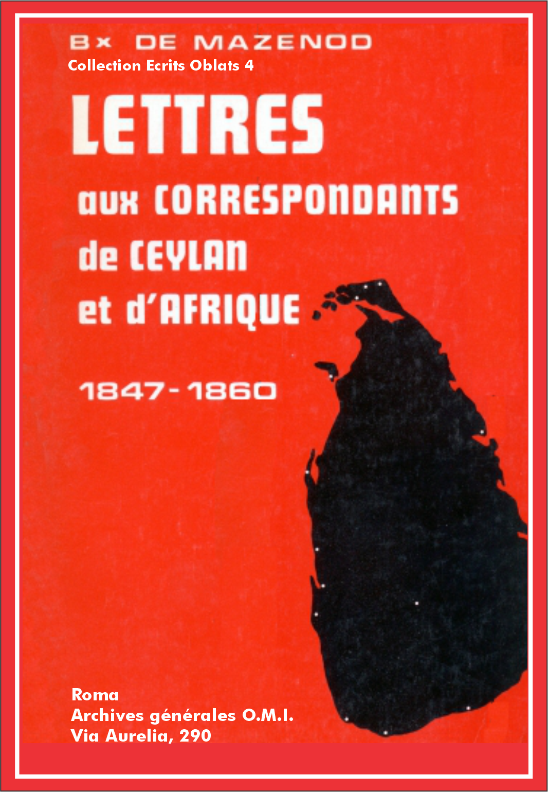

Éscrits Oblats: - 01 - 02 - 03 - 04 - 05 - 06 - 07 - 08 - 09 - 10 - 11 - 12 - 13 - 14 - 15 - 16 - 17 - 18 - 19 - 20 - 21 - 22

Vol.: IV - Let. aux Corresp. De Ceylan
Acte de nomination comme supérieur de la mission de Ceylan.
[21 octobre 1847].
Charles Joseph Eugène de Mazenod
par la miséricorde divine et la grâce du S. Siège Apostolique
Évêque de Marseille,
Commandeur de la Sainte Religion et Ordre Militaire des
Saints Maurice et Lazare,
Supérieur Général de la Congrégation des Oblats de la Très Sainte et Immaculée Vierge Marie.
A notre Fils aimé dans le Christ Étienne Semeria, Prêtre de la même Congrégation,
Salut et Bénédiction dans le Seigneur
Monseigneur Bettachini, évêque de Toron in partibus infidelium et coadjuteur du Vicaire Apostolique dans l'île de Ceylan, nous ayant très instamment demandé de lui adjoindre quelques-uns de nos missionnaires comme compagnons de voyage et associés à ses travaux. Nous, à qui est confié le gouvernement de toute la Congrégation, considérant moins notre pénurie de sujets que le bon plaisir divin, les membres de notre Congrégation semblant être appelés à œuvrer dans cette partie de la vigne du Père de Famille, avons décidé d'y envoyer des ouvriers évangéliques pour y travailler. Ceux-ci, s'emploieront donc diligemment, sous la juridiction du Révérendissime Coadjuteur, pour la plus grande gloire de Dieu et le salut des âmes, à stimuler la piété des catholiques, à restaurer la foi parmi les hérétiques, et surtout à arracher les malheureux infidèles des ténèbres et de l'ombre de la mort.
Étant donné la distance qui nous séparera et les difficultés assez grandes qui pourraient surgir dans la suite, nous songeons choisir parmi les membres de notre Congrégation et instituer avec facultés extraordinaires comme chef de cette grande entreprise et guide de cette excellente mission, le dit Étienne Semeria, homme que la prudence et une oblation prolongée ont mûri, recommandable pour son zèle et sa piété, enfin d'un attachement inviolable envers Nous et la Famille.
C'est pourquoi. Révérend Père, nous vous choisissons et par les présentes nous vous nommons supérieur de cette mission, vous conférant sur toutes les missions qui seront confiées aux soins de notre Congrégation dans l'île de Ceylan pleine juridiction et autorité, révocables selon notre bon plaisir.
1° Vous jouirez donc, en premier lieu, de toutes les facultés que nos Règles et Constitutions attribuent aux supérieurs locaux.
2° En outre, il vous sera loisible d'établir de nouvelles missions et résidences et, selon votre jugement, d'accepter ou de refuser ce qui concerne leur localisation et leurs conditions.
3° De même nous vous octroyons le pouvoir spécial d'émettre en notre nom les lettres dimissoires en faveur des missionnaires de notre Congrégation pour qu'ils puissent légitimement recevoir n'importe quel Ordre ecclésiastique.
4° En un mot, nous voulons que vous soyez muni du pouvoir en vertu duquel le Supérieur Général lui-même régit et gouverne la Congrégation entière; ce qui, cependant, ne doit pas excéder les limites de l'île susmentionnée et, de plus, étant réservés les cas suivants:
1° la convocation du Chapitre général; 2° l'expulsion de tout Oblat de la Congrégation; 3° l'admission des novices aux vœux perpétuels de l'Oblation; toutefois, celle-ci pourra être faite avant que soit connu le consentement du Supérieur Général; mais de la part de la Congrégation elle ne sera considérée comme valide qu'une fois connue l'approbation du Supérieur Général [2].
Vous viendront en aide comme formant votre Conseil, seulement avec voix consultative, ceux qui vous sont associés dans la mission auxquels vous pourriez recourir. Des affaires traitées et de toute chose concernant l'état de la Congrégation, vous aurez soin de nous rendre compte chaque semestre, même plus fréquemment s'il est possible.
Maintenant, allez, fils aimé, à l'œuvre qui vous est confiée ainsi que ceux que nous avons choisis pour être vos associés jusque dans ces régions extrêmes de l'Asie, pour la plus grande gloire de Dieu, à promouvoir là et en tout lieu.
Que la Très Sainte et Immaculée Vierge Marie notre prévoyante Mère vous garde assidûment sous sa protection. Que les anges de Dieu vous assistent; et quant à Nous, fils aimé dans le Christ, nous ne cesserons pas d'implorer pour vous une abondante pluie céleste.
Donné à Marseille... le 21 octobre 1847.
+ C. J. Eugène, évêque de Marseille, Supérieur Général.
Vol.: IV - Let. aux Corresp. De Ceylan
Joie de recevoir une première lettre de Ceylan. Prudence avec l'abbé Reinaud et les autres missionnaires. Ne pas cacher son appartenance à la Congrégation des Oblats. Que les Pères vivent en communauté, selon la Règle, unis dans la charité.
L.J.C. et M.I.
Marseille, le 25 janvier 1848.
J'ai reçu vos deux lettres, mon cher père Semeria, je ne dirai pas seulement avec un grand plaisir, mais avec un transport de joie. Je comptais les jours et les heures, je demandais sans cesse si le paquebot n'était pas arrivé lorsqu'enfin votre béni pli m'a été remis. Je vous remercie bien, mon cher fils, d'abord de m'avoir donné de vos nouvelles et de celles de vos chers compagnons de voyage, puis d'être entré dans tous les détails que renferme votre lettre. C'est ainsi qu'il faut toujours faire. Quand on écrit de si loin et que l'on a tant de choses à dire, comment peut-on laisser une ligne en blanc dans une lettre. Je voudrais bien noircir aussi tout mon papier, mais ma position n'est pas si avantageuse. Indépendamment de mes dérangements habituels que vous connaissez bien, j'ai peu de temps pour vous écrire si je veux profiter du retour du bâtiment. N'importe, j'irai tant que je pourrai, j'ai fermé pour cela ma porte à double tour, ce qui n'a pas empêché qu'on n'ait déjà pénétré chez moi plusieurs fois. Le p. Aubert a pris les devants. Il a dû vous écrire hier dans un sens convenu, à la rigueur sa réponse pourrait vous servir de règle, mais je me suis réservé la satisfaction de vous écrire moi-même directement.
Ne parlons pas des circonstances de votre belle réception ni du contenu de votre première lettre. Je veux venir au fait, crainte d'être détourné avant d'avoir pu vous dire ma pensée.
Vous avez pu juger comme nous, par tout ce qui s'est passé entre vous et R[einaud] que nous avions eu raison d'être persuadé qu'il pensait plus à lui qu'à nous dans les belles propositions qu'il nous avait faites. [4] Il est évident que ce pauvre enfant, parti d'ici avec la manie de s'élever à l'épiscopat, se serait volontiers servi de nous comme d'un escabeau [5] pour y parvenir. Ses espérances ayant été trompées à Bagdad, l'occasion était belle à Ceylan par la combinaison qu'il avait suggérée, et il n'est si furieux contre Mgr Bettachini que parce qu'il a vu son coup manqué par le nouvel arrangement auquel on s'est arrêté. Aussi, remarquez avec quelle indifférence il vous a vu arriver, lui qui paraissait dans ses lettres attacher tant de prix à ce que nous fussions introduits dans cette mission. Partez donc de ce principe pour vous tenir toujours dans la réserve d'une juste prudence. Je voudrais que vous étendissiez cette prudence jusqu'à ne jamais vous livrer aux autres missionnaires que vous avez trouvés et qui vous ont fait bon accueil. Soyez avec eux poli, cordial même, mais au grand jamais point de confidences sur rien. Vous savez combien il est facile de mal interpréter les meilleures intentions. Je sais bien certainement que vous et vos compagnons n'êtes allés à Ceylan que par obéissance et pour travailler conformément à votre vocation au salut des âmes, mais cela ne m'est pas également prouvé pour des prêtres libres qui ont pu considérer leur mission sous un autre point de vue. Cela étant, ces prêtres-là, tout en vous faisant bon accueil ont pu être foncièrement contrariés de votre arrivée, surtout s'ils pouvaient soupçonner que vous finissiez par inspirer assez de confiance pour leur être préférés dans les vues d'ambition qui ont pu naître en eux en voyant un simple prêtre jadis leur égal devenir Vicaire Apostolique. On pourrait présumer qu'ils ne perdent pas l'espoir de lui succéder, un changement advenant, et qu'ils montent leurs batteries en conséquence. Je vous parle humainement. Il n'en est peut-être pas ainsi, mais l'expérience que j'ai des hommes m'oblige de vous prémunir contre toute surprise et d'éclairer votre bonté naturelle pour qu'elle ne se laisse pas tromper par les apparences en croyant les hommes meilleurs qu'ils ne sont. J'aime beaucoup la simplicité de la colombe, mais je ne veux jamais la séparer de la prudence du serpent. Vous avez très bien fait de ne pas suivre à la lettre le conseil que R[einaud] vous avait donné au sujet de votre sainte profession. Il ne faut pas vous en prévaloir ni l'afficher sans raison, mais la dissimuler, jamais. Ce serait d'ailleurs se cacher derrière son doigt. Ce que vous devez faire c'est d'insister auprès de Mgr le Vic[aire] Ap[ostolique] pour qu'il ne vous sépare pas. Il ne faut pas céder aux raisons contraires qu'on pourra vous alléguer. Vous ferez remarquer que ce serait en quelque sorte faire violence à votre Institut, qu'il faut absolument que vous marchiez deux à deux et que dès lors il est plus simple que l'on vous place ensemble. Il est indispensable que vous persistiez à exiger qu'on vous laisse toujours deux. Vous partagerez la portion s'il n'y en a que pour un, mais je ne puis pas consentir qu'un sujet isolé soit séparé au moins d'un compagnon. Les Jésuites l'ont établi même dans leurs missions du Maduré; avant tout les précautions nécessaires pour le salut des nôtres, la conversion des autres n'en sera que plus assurée. Je comprends que si vous étiez chargés de la mission de Jaffna, nous atteindrions ce but, quelque difficile que la chose vous paraisse; il faut la faire goûter au digne Mgr Bettachini [6] qui en comprendra l'importance. Il pourra alors plus facilement mettre à profit votre science théologique et liturgique, s'il habite ce même pays. Dites-lui que je ne me refuse pas à vous envoyer encore des sujets dès qu'on me les demandera pourvu qu'on me les case deux à deux; mais il sera toujours d'une immense importance que vous établissiez comme une maison chef-lieu dans une ville principale. C'est à quoi vous devez viser fixement, en y employant s'il le faut les ressources que nous tâcherons d'obtenir de la Propagation de la foi. Le père Aubert a dû, à ce sujet, vous dire comment vous devez procéder, parce qu'il est essentiel qu'indépendamment de ce qu'on pourra accorder à Mgr le Vic[aire] Apost[olique] on alloue quelque chose aux. Pères de notre Congrégation. Vous ne m'avez pas dit comment vous vous en étiez tiré pour les dépenses du voyage. J'avais eu de vos nouvelles du désert. Quelqu'un qui de la diligence vous avait vus sur vos ânes m'avait annoncé que vous étiez près de Suez quand il vous rencontra. Nous avons beaucoup ri de vos montures, dont le voyageur nous fit pourtant l'éloge. Ne pouvant écrire à chacun de vous, je m'adresse à vous tous, mes chers fils [7] qui êtes appelés [8] de Dieu à une si belle mission. Honorez votre grand ministère par la pratique de toutes les vertus religieuses. Soyez fidèles observateurs de vos saintes Règles, vivez dans l'union la plus parfaite et ne vous conduisez que par l'obéissance. Si quelque nuage venait à s'élever, ce dont je prie Dieu de vous préserver, gardez-vous de vous plaindre jamais à quelque étranger, vous vous en repentiriez plus tard et vous ne tarderiez pas de reconnaître que vous auriez porté un grand préjudice à la famille, mal irrémédiable qui pèserait toute votre vie sur votre conscience. D'ailleurs, au lieu du soulagement que vous auriez recherché, assurez-vous bien que vous ne retireriez qu'amertume et déception. Aimez-vous bien les uns les autres, ayez une juste déférence les uns pour les autres et vous éviterez ce malheur, et Dieu bénira toutes vos entreprises et vous serez récompensés dès cette vie en attendant d'être couronnés dans le ciel. Quoique vous soyez encore peu nombreux, tant que vous serez ensemble faites tous vos exercices en commun comme si vous formiez une grande communauté. Qui peut dire le bien que produira le bon exemple que vous donnerez. Ne vous laissez pas énerver par la chaleur du climat. Il faut servir Dieu partout avec ferveur. Si je pouvais croire que vous dégénérassiez sur cette terre que vous devez arroser de vos sueurs pour ramener les uns à leurs devoirs, pour éclairer les autres qui ne connaissent pas le vrai Dieu, je vous déclarerais indignes de votre grande vocation et regretterais de vous avoir choisis de préférence à tant d'autres pour l'admirable mission de faire connaître Jésus-Christ, d'étendre son royaume en marchant sur les traces des Apôtres. Mais non, jamais vous ne me donnerez ce chagrin. Je n'aurai au contraire qu'à me féliciter de vous avoir confié les intérêts de la gloire de notre Dieu et l'honneur de notre chère Congrégation. Soyez donc bénis au nom du Père et du Fils et du St-Esprit et sous la maternelle protection de Marie Immaculée. Avant de terminer cette longue lettre je veux dire au p. supérieur que j'approuve transitoirement ce qu'il a fait pour le jeûne du vendredi, mais je l'exhorte à ne pas adopter facilement tous les relâchements introduits par la [9] lâcheté. Nous devons faire plus et mieux que les autres. Si vous perdez l'esprit de mortification, je ne réponds plus de vous. Père Semeria, défiez-vous de votre faiblesse qui est l'excès de la bonté de votre caractère. Vous n'êtes pas exempt de reproches à ce sujet dans votre gouverne de la maison de Vico. Je suis obligé de réformer plusieurs abus que vous avez laissé introduire par trop de condescendance. Il faut savoir résister aux exigences de la tiédeur qui se cache sous des prétextes qu'il faut savoir reconnaître pour les confondre. Encore moins faut-il écouter ceux du dehors. Ne lâchez donc pas la bride avant d'avoir marché. Essayez d'abord et ne cédez qu'à l'expérience. C'est ce que vous auriez dû faire avant de réduire vos jeûnes du vendredi. Ne dispensez pas de la discipline, elle ne fait pas mal à l'estomac.
Vol.: IV - Let. aux Corresp. De Ceylan
Départ de missionnaires pour le Canada. La révolution de 1848 en France diminue les ressources de l'Œuvre de la propagation de la foi et empêche l'envoi d'autres Pères à Ceylan. Le p. Ciamin seul dans la mission de Mantotte. Relations avec Mgr Bettachini, l'abbé Reinaud et les prêtres italiens de Jaffna. Peu d'espoir d'obtenir des religieuses et des Frères des Écoles Chrétiennes, mais des Oblats sont disponibles, en particulier le p. Frédéric Mouchel. Lettre de Mgr Bettachini. Maladie du p. Keating. Espoir d'obtenir un Vicariat réservé aux Oblats.
L.J.C. et M.I.
Marseille, le 9 mai 1848.
Voilà, mon très cher père Semeria, tout ce que j'ai pu vous écrire du 9 au 11 mai où je reprends, je ne dirai pas la plume que je n'ai pas quittée depuis lors, mais cette feuille qui vous était destinée. Dans l'intervalle j'ai écrit à toute l'Amérique du Nord. Aujourd'hui même vont s'embarquer quatre de nos Frères et un Convers pour le Canada [11]. Il n'y a qu'un prêtre parmi eux, un diacre à qui j'ai conféré cet ordre le surlendemain que je l'ai fait sous-diacre et deux minores. Ces deux derniers n'ont pas commencé leur théologie que le p. Allard se chargera de leur enseigner à Longueuil, le diacre n'en a fait qu'un an. Vous direz que nous mangeons notre blé en herbe; mais non, ils feront aussi bien leurs études à Longueuil qu'ici, et ils s'acclimateront au pays en même temps qu'ils apprendront les langues. Il fallait d'ailleurs profiter de l'occasion d'un bâtiment qui partait directement de Marseille pour Boston et qui nous procurait l'avantage d'épargner cinq ou six cents francs par tête. Plût à Dieu, mon cher Père, que nous pussions n'avoir à débourser que 4 ou 500 fr. pour vous envoyer des sujets, déjà vous en auriez reçu plusieurs, mais quand il faut débourser 2000 fr. pour chaque missionnaire que l'on dirige vers votre île, on est obligé de reculer jusqu'à ce que la Propagation de la foi se décide à fournir quelque chose. Les événements survenus en France ont tellement diminué ses ressources qu'il est bien à craindre qu'elle ne puisse plus rien faire pour les missions, et alors que deviendrons-nous? J'ai envoyé le p. Tempier à Lyon pour essayer d'obtenir quelque chose, mais j'ai peu d'espoir qu'il réussisse malgré la lettre pressante dont il est porteur. J'ai reçu ponctuellement toutes vos lettres, et je vous remercie beaucoup de votre exactitude à m'écrire. Si je ne suis pas si prompt moi-même à y répondre, il faut l'attribuer à deux causes, la première aux dérangements accoutumés de ma position qui se sont encore considérablement accrus ces derniers temps qui me font manquer l'occasion du départ du paquebot et aussi un peu sur ce que je me repose sur le fidèle et incomparable père Aubert qui tient tête à tout avec une activité et une présence d'esprit admirables. Je reprends vos dernières lettres, crainte d'avoir laissé échapper quelque chose de ce que vous me disiez. Dans celle du 7 fév[rier] vous me disiez que vous aviez cru devoir laisser aller le p. Ciamin gouverner la mission de Mantotte. Il eût été difficile que vous fissiez autrement, mais il est essentiel que vous conserviez des rapports habituels avec lui dont vous êtes toujours le supérieur. Il faut exiger qu'il vous écrive au moins tous les mois pour vous rendre compte de sa gestion et à ce sujet je désirerais savoir moi-même ce que c'est que cette mission, ce que le miss[ionnaire] a à y faire, quelles sont les ressources, etc. Au sujet des essources pécuniaires, veillez à ce que le miss[ionnaire] vous en rende un compte exact et qu'il ne garde pour lui que ce qu'il lui faut pauvrement pour ses besoins, le surplus, s'il y en a, doit vous être remis afin que vous commenciez à former une caisse provinciale, laquelle à défaut des secours de la Propagation de la foi pourra dans la suite nous aider pour l'envoi des sujets que je ne demande pas mieux de vous associer, mais que je suis dans l'impossibilité de faire embarquer faute de moyens. J'approuve très fort que vous restiez auprès de Mgr le Vi[caire] Ap[ostolique] pour plusieurs raisons. Il s'attachera davantage à vous, il vous appréciera et vous apprendrez à connaître parfaitement la mission de l'île tout entière, ce qui vous servira pour dresser vos plans et me les communiquer quand vous serez bien orienté. Si l'on devait diviser l'île, je tiendrais beaucoup à ce qu'on nous réservât un Vicariat pour nous seuls, que nous nous chargerions d'alimenter de sujets, mais en attendant il faut se rendre utiles et même nécessaires à l'Évêque qui étant bon et zélé préférera de vous associer à sa sollicitude plutôt que tous autres qui ne lui présenteraient pas les mêmes garanties. Faites donc tous vos efforts pour apprendre au plus tôt les langues qu'il faut savoir dans ce pays, ménagez pourtant tous ces italiens afin qu'ils ne vous soient pas contraires, même ceux qui n'aiment pas l'Évêque, quoique avec précaution, pour ne pas choquer celui-ci. Quant à R[einaud] attachez-vous toujours plus à connaître ses intentions, ne vous en faites pas un ennemi et voyez-le venir. J'ai toujours cru fermement qu'il travaillait pour lui, qu'il mettrait tout en œuvre pour devenir évêque, et qu'à cette condition il ne demanderait pas mieux que de se servir de nous sous sa juridiction. Il est fâcheux que vous n'ayez pas pu causer avec Mgr Béni [12] pour qu'il ne se laissât pas trop influencer par des hommes intéressés qui quaerunt quae sua sunt. Si tout n'était pas dans ce moment sens dessus dessous a Rome, j'aurais pu penser d'y faire un pas, mais c'est impossible aujourd'hui. J'avais pourtant écrit en Propagande pour recommander personnellement nos miss[ionnai]res. Si vous aviez occasion de vous mettre en rapport avec elle ce ne serait peut-être pas un mal, ne fût-ce que pour dire du bien de votre Vic[aire] Apost[olique] et le défendre au besoin des attaques que des jaloux ou des mécontents lui portent. Je suis vos lettres article par article. Je vous répondrai donc à présent que le projet de Mgr Bettachini d'appeler des religieuses et des frères des Écoles Chrétiennes] est très beau, mais impraticable de la manière dont il l'entend et surtout aujourd'hui avec la difficulté de retirer q[ue]lque chose de la Propagation de la foi. Il n'y a peut-être pas un seul frère des Écoles Chrét[iennes] qui sache l'anglais, et parmi les rel[igieu]ses, à moins que ce ne fussent des Dames du S[acré]-Cœur, je ne crois pas qu'il s'en trouve davantage. L'autre projet serait plutôt praticable si on trouvait les moyens de payer les traversées. Je pourrais envoyer assez de sujets pour que vous en employassiez quelques-uns à l'instruction quoique ce ne soit guère la vocation de ceux qui viennent parmi nous; mais en ne les appliquant que pour un temps à cet emploi peut-être cela pourrait leur aller, mais ce serait je crois bien s'abuser que d'espérer de se fournir de sujets parmi ces insulaires. Comment espérer qu'avec cette nature on pût former des religieux? En feriez-vous même des prêtres séculiers? Voyez ce que sont vos Goanais. Pour les écoles, si nous avions une maison de résidence il serait peut-être plus facile en y attachant de nos frères de nous en charger dans la suite, mais le grand point de la difficulté ce sera toujours la finance. Savez-vous quel est le premier mis[sionnaire]re que je vous enverrais si j'avais l'argent pour la traversée? Devinez: le p. Mouchel qui apprend à force l'anglais et qui m'écrit lettres sur lettres pour me demander la préférence pour votre mission, craignant de ne pouvoir pas se faire au froid de l'Amérique Septentrionale. Je crois que sachant l'anglais ce serait une bonne acquisition pour votre mission. Ce Père est très vertueux et son attrait pour les missions des infidèles est très prononcé. Oh ce ne seraient pas les sujets qui nous manqueraient, c'est l'argent.
Mgr Bettachini m'a écrit par le même courrier que vous. Il me fait un tableau déplorable de l'ignorance et de la dépravation des chrétiens du pays. Et à qui la faute, me dit-il? des pasteurs qui pascebant seipsos et quaerebant quae sua sunt. Point de catéchisme, presque point de confessions, etc. Il voit pourtant par expérience que l'on peut instruire ces pauvres gens, qu'on peut les corriger, réformer les abus et les mœurs. Il me dit qu'un goanais est devenu fou, qu'un autre est mort et un troisième s'est fait schismatique, qu'il ne reste plus dans l'île que 17 de ces pauvres prêtres, que son voyage en Europe a considérablement amélioré l'état de la mission puisque la moitié de l'île lui a été confiée exclusivement et qu'il est coadjuteur du reste de l'île. Il aurait pu ajouter et qu'il amenait avec lui de bons et fidèles coopérateurs tels que vous. Il me demande le secours de mes prières et m'assure de sa protection p[ou]r vous. "Sta a V.S. Ill., me dit-il, di mandare un compagno al p. Ciamin." Subito si, ma il danaro dov'è? [13] Il est vrai que le bon prélat en me demandant de lui procurer trois relig[ieu]ses telles que vous me les indiquez, ajoute que la Propagation de la foi me fera passer 8000 fr. et qu'il suppose que 6000 fr. suffiront pour la traversée des religieuses, les 2000 restant nous serviront pour le missionnaire qu'il espère que je lui enverrai avec les relig[ieu]ses. Le missionnaire serait tout trouvé, ce sont les relig[ieu]ses qui nous manquent et les 8000 fr. aussi. Je suis trop pressé aujourd'hui, qui est celui du départ du courrier, pour répondre à Mgr Bettachini sur ces divers points. Faites-lui part de ce que je vous dis en lui présentant mes respects et ma constante bonne volonté pour mettre à sa disposition autant de missionnaires qu'il me sera possible. Enfin, j'en viens à votre dernière lettre du 7, même date que l'autre et que celle de l'Évêque. D'abord rassurez-vous sur votre prétendue incapacité. Ce n'est pas vous qui vous êtes appelé. Dieu vous donnera tout ce qu'il vous faut pour mener votre barque en bon port. Confiez-vous à sa bonté et à ses promesses, demandez-lui sans cesse les lumières de son St-Esprit et marchez sans crainte au nom du Seigneur. J'approuve tout ce que vous avez fait. Ménagez beaucoup le p. Keating s'il a craché du sang; vous devez lui accorder toutes les dispenses qu'exige la délicatesse de sa complexion. Le p. Arnoux nous a joué ici le même tour, en allant dire une de ses pr[emiè]res messes à N.-D. de la Garde. Ainsi le p. Keating verra que les accidents arrivent partout. Quant à vous ne faites rien non plus au-dessus de vos forces. Songez que votre complexion est délicate, n'ayez donc point de scrupule de vous accorder tous les soulagements nécessaires pour accomplir votre mission. J'attends que vous m'expliquiez un peu plus clairement l'état de la mission de toute l'île pour vous donner l'avis que vous me demandez. Il y a un peu de confusion dans ce que vous m'en dites, comme vous le reconnaissez vous-même. Je me suis bien expliqué pourtant sur un point au commencement de cette lettre en vous manifestant le désir qu'on pût former un Vicariat qui fût confié aux nôtres. Vous me paraissez croire que Mgr Bettachini ne serait pas éloigné, s'il craint de ne pas réussir lui-même, [de proposer] un autre coadjuteur de Colombo. J'ai de la peine à le croire, mais s'il en était ainsi il serait fâcheux qu'un étranger à la Congrégation fût préféré. Vous me parlez ensuite de Negombo, ce qui m'a jeté dans la confusion. Revenez sur ce sujet, et donnez-vous le temps d'y réfléchir pour me bien expliquer les choses et me donner votre avis bien circonstancié; II m'est impossible de continuer, on vient coup sur coup m'appeler. Je voulais écrire à nos deux Pères, je suis obligé de le renvoyer au mois prochain. Je vous embrasse à la hâte et vous bénis tous de tout .mon cœur.
+ C. J. Eugène, évêque de Marseille.
P.S. Vous aurez à accorder vos suffrages à un novice qui vient de mourir à Nancy. Vous a-t-on avisé de la mort du fr. Arvel, oblat [14]?
Vol.: IV - Let. aux Corresp. De Ceylan
La révolution en France et à Rome empêche l'envoi de missionnaires. Insubordination du p. Keating. Courage des missionnaires du Grand Nord. La Congrégation a beaucoup d'étudiants mais demeure sans argent.
L.J.C. et M.I.
Marseille, le 17 août 1848.
J'attendais, mon cher père Semeria, que la Propagation de la foi eût répondu pour vous dire quelque chose de positif, cette réponse a tardé excessivement; il faut attribuer ce retard aux événements qui vous sont connus et qui se sont succédé coup sur coup de manière à tout bouleverser, et à laisser de bien grandes inquiétudes pour l'avenir. Vous comprenez qu'il fallait pourtant que je susse quelque chose de positif pour satisfaire tant Mgr le Vicaire Apostolique que vous. Vos demandes supposaient que la Propagation de la foi aurait versé dans mes mains les sommes qui étaient allouées à Monseigneur, or, mon cher ami, il n'a pas été question de cela jusqu'à présent, point de nouvelles en ce genre et point d'argent. Dès lors comment vous procurer des frères et des religieuses, comment même vous fournir des missionnaires? Ceux-ci sont tout prêts. Le jour où l'on aura de quoi payer leur voyage, ils s'embarqueront. Le père Mouchel qui tient beaucoup à être de la bande s'est occupé sérieusement de l'anglais et il vous étonnera par le progrès qu'il a fait dans cette langue. Les autres aussi, car on ne parle plus qu'anglais dans les récréations de nos Oblats. Je ne me refuserais pas à vous en céder pour le petit séminaire projeté par Monseigneur. Mais il faut de l'argent pour faire voyager tout ce monde. Vous savez qu'il en coûte 2000 fr. par tête. Je vois donc avec peine qu'il faudra que vous renonciez pour cette année au renfort considérable que j'aurais voulu Vous donner, car à défaut de Frères des Écoles Chrétiennes dont aucun ne sait l'anglais, j'aurais vraisemblablement pu disposer de quelques-uns de nos Frères qui se seraient joints aux Pères et aux Oblats destinés pour votre mission.
Vous ferez part de toutes ces choses à Mgr le Vicaire Apostolique auquel je me propose d'écrire par le même courrier. Il est aussi dans la persuasion que la Propagation de la foi m'a envoyé l'argent qu'elle lui avait promis. La vérité est que je n'ai pas reçu un sou à sa décharge.
Vous supposez toujours, mon cher ami, que je dois aller à Rome et vous croyez que j'aurai à y traiter les affaires de votre mission. Vous êtes dans l'erreur, je n'ai point de voyage à faire à Rome et dans les circonstances actuelles ce serait plus qu'une imprudence [16]. Il y a du reste impossibilité. Lors même que j'aurais pu faire ce voyage, ce que vous me dites n'est pas assez clairement exprimé pour qu'il m'eût été possible de soutenir un plan quelconque. Songez que nous ne sommes pas sur les lieux et que pour être compris il faut beaucoup de précision, un projet, un plan arrêté et appuyé par de bonnes raisons. Croyez que M. l'abbé R[einaud] n'y aura pas manqué dans le mémoire qu'il devait envoyer à la Propagande de Rome, dont Mgr Béni, cet évêque dont vous m'aviez parlé, se sera vraisemblablement chargé. Vous avez besoin d'agir avec beaucoup de prudence au milieu de toutes ces divergences dont vous me faites mention. Pensa prima che parli [17]. C'est bien le cas de se rappeler ce proverbe. Je pense que l'obligation où vous vous êtes trouvé de traiter avec les hommes vous aura donné de l'expérience et que vous aurez mis dans votre esprit chacun à sa place pour savoir comment vous devez vous comporter avec eux. Je tremble de vous savoir voyageant dans le Maduré et à Pondichéry, ne sont-ce pas des pays où règne le choléra? J'aurais tout autant aimé que l'on chargeât tout autre d'aller si loin acheter des livres. Quant à ce qui se passe dans votre intérieur, j'ai été singulièrement peiné des velléités d'insubordination du p. Keating; je ne me serais jamais douté que ce jeune Père, si doux en apparence, pût vous donner cette inquiétude. Certes il ne ressemble pas en cela à ses compatriotes qui sont tous des modèles de régularité et d'obéissance. Que dirai-je de ceux des nôtres qui sont dans l'Orégon et sur les bords de la Rivière-Rouge? Leur nourriture est un peu de lard, et ils n'ont pour couche que la terre et avec cela ils sont contents et heureux comme des hommes qui font la volonté de Dieu. Le p. Ricard qui était mourant quand il partit a recouvré la santé et il m'écrivait dernièrement qu'il n'avait pas seulement été enrhumé 24 heures en passant les nuits à la belle étoile et souvent couchant dans la boue. Ceux qui s'avancent vers la Baie d'Hudson, avec des froids de 30 degrés, traînés sur la glace par des chiens, obligés de faire un trou dans la neige pour passer la nuit dans cette couche, vous égaient par le récit de leurs aventures. Qu'il en soit ainsi de vous dont la mission, malgré la chaleur qui vous fatigue, est moins dure que celle de vos frères. Vivez parfaitement unis et que le[s] lien[s] de la charité et de l'obéissance adoucissent toutes les peines inséparables de votre pénible ministère. Que Mgr le Vic[aire] Apostolique presse le Conseil de la Propagation de la foi de faire un effort pour lui fournir de quoi payer le voyage des missionnaires, et aussitôt je vous envoie un renfort qui réjouira vos cœurs et consolidera le bien que vous vous proposez de faire. Ce ne sont pas les missionnaires qui me manquent, c'est l'argent pour les faire voyager, et aussi celui qu'il vous faut pour les nourrir. Savez-vous que nous avons plus de quarante Oblats et plus de novices encore, mais nous n'avons plus rien per andare avanti, [18] nous sommes si fort endettés qu'il ne nous reste plus de gages à offrir pour contracter de nouveaux emprunts; aussi le p. Tempier est totalement démoralisé; il rabâche du matin au soir que nous n'avons plus rien, qu'il faut congédier les novices, et au moment de l'exécution le courage manque à moi plus encore qu'à lui. Nous possédons beaucoup de pierres de grandes maisons, de revenus point; et c'est dans cette extrémité que la Propagation de la foi nous fait faux bond, car elle ne nous donne pas plus qu'à vous. Voilà bien de tristes choses; il ne faut pourtant pas perdre confiance. Le bon Dieu sait que nous ne voulons que procurer sa gloire et le salut des âmes qu'il a rachetées.
Je vous bénis tous et vous embrasse affectueusement,
+ C. J. Eugène, évêque de Marseille.
Vol.: IV - Let. aux Corresp. De Ceylan
Le p. Strickland, s.j., et quelques collaborateurs de Mgr Bettachini tentent d'éliminer les Oblats de Jaffna. Ne jamais quitter ce Vicariat sans un ordre exprès de Marseille. Impossible d'envoyer des missionnaires tant que le Vicaire Apostolique ne donnera pas l'argent qu'il a reçu dans ce but du Conseil de la Propagation de la foi. Mort du p. André. Quarante-quatre étudiants oblats au grand séminaire de Marseille. Nouvelles de l'Orégon et de la Corse. Ordination de Jésuites piémontais à Marseille. Sacre de Mgr Guigues.
L.J.C. et M.I.
Marseille, le 3 novembre 1848.
Je ne saurais vous exprimer, mon cher père Semeria, la peine que m'a fait éprouver le contenu de votre dernière lettre en date du 8 septembre. La conduite du Jésuite anglais dont vous avez oublié de me donner le nom est si horrible qu'il ne faut rien moins que votre assertion pour me la faire croire possible. [20] Mais, croyez-le bien, mon cher ami, il n'est pas le seul coupable, et je crains bien que votre simplicité et votre bonne foi n'aient été la dupe d'une trame plus finement ourdie que celle de l'imprudent émissaire.
Que signifie ce voyage que vous avez eu la bonhomie de faire pour aller demander du secours; vous avez été bien complaisant de consentir à tirer les marrons du feu. Que direz-vous quand vous apprendrez que Mgr B[ettachini], en se servant sans doute d'un autre secrétaire que vous, avait écrit ici au père Provincial pour lui demander des Pères de la Compagnie et que c'est sur sa demande qu'il a été résolu d'envoyer un renfort à Mgr Canoz [21] pour qu'il pût détacher sans inconvénients des religieux de son ordre auprès de votre Vicaire Apostolique qui les avait demandés avec instance; voilà ce que le père Recteur vient de me dire aujourd'hui même comme une chose certaine. J'ai seulement été grandement surpris quand il m'a ajouté que le p. Provincial ignorait que nos Pères fussent à Ceylan. Cette erreur est difficile à comprendre et je préfère en jeter la faute sur sa mémoire que j'aime mieux trouver en défaut que sa bonne foi. Il me reste à m'expliquer comment le p. Recteur de Marseille a su que j'avais à me plaindre de ses confrères de Ceylan. Quoiqu'il en soit la chose était trop grave et dans le fond et dans toutes les circonstances de la forme pour que je n'en écrivisse pas au Père Général que je connais très particulièrement. Vous comprenez que je ne me suis pas cru tenu à un secret qui était connu d'avance par toute la province des Jésuites du midi de la France. Je me suis plaint hautement des procédés si peu délicats du Jésuite anglais, bien fâché de ne pouvoir lui en dire le nom. J'ai établi ensuite les principes de conduite qui sont suivis depuis s[ain]t Paul qui le premier ne voulut pas bâtir sur les fondements posés par d'autres. Sic autem praedicavi Evangelium hoc, non ubi nominatus est Christus, ne super alienum fundamentum aedificarem, et encore aujourd'hui l'Église a soin de diviser les contrées à évangéliser entre les divers Ordres qui sont chargés d'étendre le royaume de Jésus-Christ. Mais apparemment les Jésuites ont le privilège non seulement de s'introduire où les autres sont déjà, mais à les en chasser pour se mettre à leur place. Mais non! ce n'est certainement pas l'intention de leur Père Général qui est un religieux rempli de l'esprit de Dieu et dont on n'a certainement pas pris l'avis dans cette entreprise si peu édifiante [22].
Du reste je ne suis pas de votre avis; bien loin de croire comme vous qu'on ne tentera pas une seconde fois de faire jouer la mine déjà éventée, je pense au contraire qu'on reviendra à la charge et qu'on réussira. Il est si facile de faire passer du Maduré, ou de la côte, des Pères qu'on n'a envoyés que pour cela, le trajet n'est pas si long ni si difficile. Jusqu'à présent ils avaient respecté cette île, mais puisque vous avez été les appeler vous-même, ils ont une bonne raison à alléguer. Et voilà comment souvent une fausse démarche entraîne des conséquences funestes! Je ne voudrais pas mettre en doute la sincérité de certain personnage, mais en réfléchissant sur ce que m'a dit ici le père Recteur des Jésuites, il me revient à l'esprit sans le vouloir ce qu'avait écrit M. Reinaud parmi les plaintes qu'il faisait de lui. Que cela vous serve pour marcher avec précaution, mais au grand jamais, quoiqu'il arrive, ne songez jamais à quitter la partie sans en avoir reçu l'ordre exprès de moi.
Vous me répétez toujours de vous envoyer des missionnaires; mais vous le diriez encore davantage que tant que vous ne me procurerez pas de l'argent pour le voyage il sera de toute impossibilité d'en faire partir un seul. N'est-ce pas plaisant que M. le Vicaire Apostolique, par une prétention inouïe, se soit fait allouer tous les fonds que la Propagation de la foi aurait dû partager entre la Congrégation et lui, qu'il garde tout cet argent et puis qu'il ne cesse de demander que je lui envoie des missionnaires. Que veut-il que je fasse des 300 fr. qui restent de son billet? S'il n'avait pas intercepté la somme qui nous était dévolue, déjà elle aurait été employée pour le passage de nos Pères qui étaient destinés pour votre mission. N'aurait-il pas consacré cet argent à payer le voyage des Jésuites qu'il avait demandés au Provincial de Lyon? Toutes les conjectures sont permises quand on voit percer des dessous de cartes. Quoiqu'il en soit, tout en reconnaissant l'utilité, l'avantage, la nécessité même de vous renforcer, tant que M. le Vicaire Apostolique n'enverra pas de l'argent, puisque c'est lui qui s'en est emparé, nos missionnaires ne pourront pas partir. C'est d'autant plus désagréable qu'ils sont tenus en échec et que si cet état dure je ne pourrai pas m'empêcher de les employer autre part. En second lieu, vous me pressez d'aller à Rome comme s'il est facile à un Évêque de quitter son diocèse surtout dans les circonstances présentes. Je ne vois pas qu'il en passe beaucoup pour me donner l'exemple. Je n'en compte pas un depuis notre révolution tandis qu'auparavant c'était une procession. Non, mon cher, un voyage pareil ne se fait pas si facilement que vous le pensez, et eusse-je pu le faire jamais la Propagande n'aurait donné un sou pour défrayer un missionnaire parti de France. Je suis loin de vous conseiller d'avoir l'air de consulter Reinaud, mais il serait d'une bonne politique de ne pas rompre avec lui. Il connaît déjà bien le pays, et surtout les gens avec qui vous avez à faire. Pour peu qu'on se rapprochât de lui, il vous initierait au secret de leurs intrigues. Il est dur de parler ainsi, mais comment se refuser à l'évidence.
Je suis si souvent dérangé depuis que j'ai pris la plume pour vous écrire qu'en vérité je craindrais de manquer le courrier qui part demain. Je n'ai plus le p. Aubert auprès de moi, il s'est rendu en Angleterre pour y organiser notre nouvelle province, ne soyez donc pas surpris si vous ne recevez point de lettres de lui par ce courrier, peut-être vous écrira-t-il d'Angleterre où il restera jusqu'après Pâques. Il ne vous aurait d'ailleurs pas dit autre chose que ce que je vous dis.
Vous ai-je mandé que nous avions perdu notre bon père André, mort saintement dans des souffrances atroces. Comme toujours, ceux des nôtres qui vont au ciel nous envoient des remplaçants. Nous aurons cette année 44 Oblats théologiens dans mon grand séminaire et 12 philosophes à l'Osier; la plupart de ces braves enfants ne soupirent qu'après les missions des infidèles, ainsi vous voyez que ce ne sont pas les sujets qui nous manquent, mais je le répéterai éternellement l'argent pour les acheminer à leur destination. J'ai reçu des lettres de l'Orégon. Le p. Ricard et ses compagnons s'y portent à merveille, les jeunes pères Pandosy et Chirouse ont été faits sous-diacres, diacres et prêtres en huit jours au Fort même de Walla-Walla, c'est ce que je ne cesse de faire ici où j'ordonne tous les Jésuites du Piémont et de la Rivière de Gênes qu'on ferait marcher [23], tout religieux qu'ils sont, s'ils n'étaient pas dans les ordres, et les Évêques de ces pays ne pourraient les ordonner sans se compromettre; j'en suis donc je crois à ma quinzième ordination pour tirer ces pauvres religieux d'embarras. Je disais en plaisantant que je fais maintenant des ordinations en guise de prières du matin. C'est ainsi que je traite les Jésuites, vous pouvez le dire à l'Anglais qui le reconnaît si bien; mais il n'est pas le seul coupable. Je ne voudrais pas vous parler de la Corse. J'en ai retiré le p. Rolleri qui ne s'entendait pas avec l'Évêque. Cette maison de Vico nous est trop à charge, aussi je n'y laisse que deux missionnaires en attendant de les retirer plus tard si nous pouvons nous établir ailleurs, dans une maison qui soit réellement à nous et où nous soyons seuls et maîtres. Cette combinaison a été faite avec réflexion et d'un commun accord, mais l'Évêque ne connaît pas notre arrière-pensée, ainsi n'en dites jamais rien à qui que ce soit.
Si vous lisez les feuilles anglaises, vous aurez vu que le père Guigue[s] a été sacré le 30 juillet; l'on a formé depuis un établissement à Pittsburgh dans les États-Unis. C'est le germe ou le fondement d'une nouvelle province.
Adieu, mon cher p. Semeria, vous savez le plaisir que me font vos lettres qui ne sont jamais trop longues, ne m'en faites pas faute. Je vous embrasse de tout mon -cœur et vous bénis ainsi que nos autres Pères.
+ C. J. Eugène, évêque de Marseille.
J'avais écrit [24] à Mgr B[ettachini], mais ma lettre était écrite avec humeur, elle se ressentait trop de l'impression de tant de mauvais procédés, je l'ai retenue. J'aurais bien voulu écrire un petit mot au p. Keating, mais le temps me manque absolument. Je lui recommande d'être toujours digne de sa belle vocation. S'il ne veut pas oublier le français qu'il m'écrive dans cette langue.
Vol.: IV - Let. aux Corresp. De Ceylan
Sur demande de Mgr Bettachini, les secours de l'Œuvre de la Propagation de la foi sont donnés uniquement au Vicaire Apostolique et non aux Oblats qui se trouvent dans l'impossibilité d'envoyer des missionnaires, faute d'argent. Que les pères Ciamin et Keating écrivent quelquefois.
L.J.C. et M.I.
Marseille, le 8 novembre 1848.
Je veux profiter, mon cher père Semeria, du pli que j'adresse à Mgr le Vicaire Apostolique pour y insérer quelques lignes pour vous [26]. Je vous ai écrit une longue lettre il y a peu de jours, mais n'importe, l'occasion est trop belle pour n'en profiter. Depuis le départ de ma lettre, j'ai reçu la réponse à celle que j'avais écrite à Mess[ieu]rs du Conseil de la Propagation de la foi à Lyon. Ils me disent dans cette lettre que Mgr Bettachini leur a expressément recommandé de lui réserver toute l'allocation qui serait faite pour l'île de Ceylan et qu'il avait même exigé qu'ils ne parlassent pas de la Congrégation dans les Annales. Je m'abstiens de toute réflexion à ce sujet, j'ai dit mon sentiment à Mgr le Vicaire Apostolique. Je réclamais des fonds auprès de Mrs de la Propagation de la foi pour payer les frais de voyage des missionnaires que Mgr Bettachini demande. Vous savez que j'en suis pour quinze cents francs de ma poche pour votre voyage. Mrs de la Propagation me répondent donc que le Vicaire Apostolique s'est tout réservé. Mais ils ajoutent avec grande raison: "n'est-il pas naturel que si Mgr Bettachini insiste pour avoir des missionnaires, il pourvoie aux frais de passage des sujets dont il réclame le concours. Pour cela du reste, à défaut d'autres ressources, il peut autoriser les Conseils à remettre entre les mains du Supérieur de la Congrégation telle portion de l'allocation dont l'Œuvre pourra disposer en sa faveur ou autoriser une allocation directe à cette Congrégation, ce à quoi dans le cas présent nous ne voyons d'autre obstacle que la volonté qui nous a été si formellement exprimée par ce vénérable prélat, car il ne veut pas que nous fassions une allocation directe à une Congrégation, dès lors qu'il nous interdit de la mentionner dans les Annales."
Ainsi l'argent de la Propagation de la foi servira pour acheter des chandeliers et non seulement on ne fournira pas de quoi payer le voyage des missionnaires, mais on souffrira que je débourse quinze cents francs de ma poche sans se mettre en peine de me les restituer. Lorsque j'ai traité avec tant de bonne foi avec Mgr Bettachini, j'étais loin de m'attendre à un procédé si extraordinaire de sa part. Ma délicatesse est blessée de cette étrange précaution. Que croit-il qu'on veuille faire de l'argent de la Propagation de la foi si ce n'est de l'employer à procurer le passage des missionnaires qu'il demande pour le service de son Vicariat. Et puis-je tenir en échec tant d'hommes dévoués que d'autres missions réclameraient pour attendre que raison soit entendue? Tout cela est très étrange. N'y aurait-il pas quelque anguille sous roche? Après ce que vous m'avez raconté, on peut s'attendre à tout. Cependant, il est essentiel de savoir sur quoi compter. Il est affligeant de rencontrer sur sa route de pareils écueils quand on se dévoue pour le salut des âmes et qu'on répond généreusement à une invitation aussi pressante que celle qui nous fut faite. Je ne mis alors d'autre condition que celle de protéger et de servir de père aux membres de la famille que je croyais déposer dans le sein d'un autre moi-même pour la sollicitude et l'affection. Maintenant il me reste la crainte de m'être montré trop confiant et l'inquiétude de savoir comment les choses tourneront. J'attends de vous, mon cher ami, de plus amples explications, mais surtout pressez pour qu'on lève l'embargo qui a été mis sur les fonds de la Propagation de la foi, parce que je ne saurais trop répéter qu'il faut de l'argent pour la traversée des missionnaires. Voyez quel retard cette malheureuse tactique a mis dans l'envoi auquel avec raison vous teniez tant. Les missionnaires seraient déjà à votre disposition, et quand il faudra revenir à cette affaire, ils ne seront plus disponibles, du moins quelques-uns. Je ne voudrais pas manquer le départ d'aujourd'hui, surtout pour la lettre que j'adresse à Mgr Bettachini. Je finis donc à la hâte en vous embrassant bien affectueusement et en vous bénissant tous de tout mon cœur. Vous ferez observer au p. Ciamin qu'il ne m'a pas écrit depuis les deux lignes qu'il ajouta à la première lettre que je reçus de vous. De loin en loin un petit mot de sa part comme du p. Keating me ferait le plus grand plaisir. Il doit bien avoir quelque chose d'intéressant à raconter de la mission qui lui a été confiée. Ne craignez jamais d'être trop long. Quand j'ai fini de lire vos lettres, je tourne et retourne encore le papier pour voir s'il n'y a pas encore quelques lignes à savourer. Aussi, mon cher fils, je ne saurais trop vous remercier de l'exactitude et du genre de votre correspondance. Adieu encore une fois en vous pressant contre mon cœur tout paternel.
+ C. J. Eugène, évêque de Marseille.
Vol.: IV - Let. aux Corresp. De Ceylan
Envoi d'un extrait de la lettre du Supérieur Général des Jésuites à Mgr de Mazenod. Infidélité du p. Ciamin qui doit être rappelé tout de suite à Jaffna. Prudence et patience dans les difficultés de la mission de Ceylan.
L.J.C. et M.I.
Marseille, le 22 novembre 1848.
Un petit contretemps, mon cher père Semeria, a retardé le départ de mes lettres. On avait négligé de les affranchir, et mes plis sont allés à Paris d'où ils me sont revenus du bureau central avec l'avis de les affranchir si je veux qu'ils aient leur cours. Cette mésaventure m'a donné le temps de recevoir la réponse que le p. G[énéral] a faite aux plaintes que je lui avais portées. Je t'envoie copie de cette lettre pour ta gouverne. Il ne sera pas nécessaire que tu la montres à Mgr B[ettachini] puisqu'il y verrait que nous n'ignorons plus les demandes qu'il a faites auprès du p. G[énéral] pour appeler des Jésuites à Ceylan, même depuis que vous y êtes. Comment ces Pères feront-ils pour pourvoir aux frais de leur voyage, je n'en sais rien. Mgr Bettachini leur fournirait-il la somme nécessaire? C'est ce que j'ignore. Ce serait, je l'avoue, un peu fort que de leur donner ce qu'il nous enlève. Je t'ai dit que la Propagation de la foi était très disposée à nous allouer ce qu'il nous fallait et qu'elle n'en a été détournée que par la défense du Vicaire Apostolique. Ce que tu me dis du p. Ciamin me met en considération. Voilà l'inconvénient de l'avoir laissé seul. Il faut à toute force le rappeler auprès de toi pour le remettre à son devoir. À défaut il faut exiger du Vicaire Apostolique qu'il le renvoie en Europe. Cette apostasie en face de vous serait intolérable. Pour peu que vous le voyiez tenté d'en venir à cette infamie, prenez les devants et que le Vicaire Apostolique lui fasse savoir que dans ce cas il ne pourrait pas l'approuver dans son île, ni même lui permettre de célébrer les S[aint]s Mystères. Vous n'aurez pas de peine à faire comprendre à Mgr B[ettachini] que cette mesure est indispensable et que la seule menace suffira pour retenir cet infidèle dans son devoir. Je vous plains, mon cher fils, de toute mon âme d'avoir rencontré tant de difficultés et tant d'ennuis là où vous n'auriez dû trouver que des consolations et des encouragements. Mais rappelez-vous que l'œuvre de Dieu doit soulever la haine de l'enfer et de tous ceux que l'esprit infernal inspire. Je comprends que vous auriez besoin de quelqu'un avec qui vous puissiez vous consulter, je vous l'enverrais bien volontiers, mais vous savez ce qui empêche. En attendant, confiez-vous au Seigneur et à notre bonne Mère, invoquez avec confiance les lumières du St-Esprit, réfléchissez beaucoup avant de vous décider, méfiez-vous des faux amis, ne craignez pas d'être sur vos gardes à l'égard de tous; ne faites vos confidences à personne. Une millième fois je vous dirai: procurez-nous de l'argent pour le voyage des Pères et aussitôt je vous en envoie quelques-uns, pas autant pourtant que vous en voudriez parce que je tiens à ce qu'ils aient fini leurs études théologiques pour être plus utiles à la mission et ne jamais se compromettre; en les pressant trop, on les exposerait à ne jamais apprendre ce qu'il faut savoir. Adieu, mon cher fils, je me hâte d'envoyer vos lettres à la poste pour n'être pas dans le cas de manquer encore ce courrier. C'est bien assez du retard que je déplore. Ne vous réglez pas sur moi pour m'écrire, faites-le aussi souvent que vous le pourrez. Si Mgr Bettachini se fâche un peu de ma lettre, chargez-vous de le calmer. J'ai cru [devoir] lui écrire comme j'ai fait [28].
Vol.: IV - Let. aux Corresp. De Ceylan
Mgr de Mazenod empruntera de l'argent et fera partir deux missionnaires. Sur demande de Mgr Bettachini, le Conseil de la Propagation de la foi n'alloue rien aux Oblats. de Ceylan.
[Marseille, le] 19 janvier 1849.
[Excellence],
Je comprends plus que jamais le besoin que vous avez de missionnaires et je vous assure que je n'avais pas encore éprouvé une mortification semblable à celle de me voir incapable de satisfaire votre juste demande et les pressantes sollicitations de l'excellent père Semeria.
Il ne s'agit pas du manque de missionnaires, au contraire, ils sont prêts à partir; mais quand j'écrivis à la Propagation de la foi pour demander la somme nécessaire pour un voyage aussi coûteux, on me répondit que vous leur aviez donné l'ordre de vous réserver toutes les allocations destinées à votre mission et que par conséquence vous deviez vous charger de cette dépense.
Lors du départ des premiers missionnaires, j'avais déjà déboursé personnellement 1500 f. qui ne me furent jamais remis. Donnez donc, Excellence, à la Propagation de la foi de Lyon, l'ordre de me verser la .somme requise pour le voyage des missionnaires et je les fais partir aussitôt, puisqu'ils sont prêts depuis que vous me les aviez demandés.
Vous devez comprendre. Excellence, qu'après la réponse reçue du Conseil de la Propagation de la foi, je ne puis plus rien leur demander, j'ai été trop mortifié de cette réponse, polie dans la forme mais étrange quand au fond, pour m'exposer à un nouveau refus auquel je ne m'attendais pas.
Vous seul pouvez lever l'embargo et obtenir par ce moyen l'argent nécessaire au voyage d'au moins deux missionnaires, nombre auquel se réduit maintenant votre requête dans votre lettre du 10 novembre. J'ai donc disposé autrement des autres Pères destinés à votre mission.
Soyez assuré que, autant que vous et le p. Semeria, je désire ardemment vous envoyer ces deux missionnaires. Ceci est tellement vrai que, me fiant à la promesse faite dans votre lettre du 10 novembre de me remettre ce que je débourserai pour le voyage des deux Pères, je ferai mon possible aujourd'hui même pour me faire prêter la somme nécessaire; dès que je l'aurai, je ferai partir, avec la bénédiction de Dieu, ces bons Pères qui ont remis leur volonté entre mes mains. Si plus tard vos finances vous le permettent, il sera facile de trouver d'autres missionnaires. Il me semble que l'allocation de la Propagation de la foi devrait servir principalement aux voyages des missionnaires, tout le reste vient après...
Veuillez croire, excellence, au respect, etc...
+ C. J. Eugène, évêque de Marseille.
Vol.: IV - Let. aux Corresp. De Ceylan
Deux missionnaires partiront tout de suite pour Ceylan, même si l'argent nécessaire à leur voyage n'a pas encore été versé. L'abbé Reinaud vient en Europe pour s'occuper des intérêts du Vicaire Apostolique de Colombo.
L.J.C. et M.I.
Marseille, le 20 j[anvie]r 1849.
Vos lettres, mon cher p. Semeria, me font toujours le plus sensible plaisir, mais elles me désolent quand vous insistez pour me demander avec tant d'instance de vous envoyer des missionnaires. Vous le savez, mon cher fils, Mgr le Vicaire Apostolique s'est réservé toute l'allocation que la Propagation de la foi devait faire pour l'île de Ceylan. C'est la plus fâcheuse mesure que l'on pût prendre. En nous refusant les secours que nous étions en droit d'attendre de la Propagation de la foi, on nous a mis dans l'impossibilité absolue de faire partir des missionnaires. Si la Propagation nous avait fourni de quoi payer le voyage, les missionnaires seraient arrivés à Ceylan depuis longtemps. Comment n'avez-vous pas compris cela dès le principe. J'en ai écrit à Mgr Bettachini, je vous l'ai dit aussi à vous dans mes lettres. Pour toute réponse vous me dites: envoyez-nous des missionnaires. C'est vraiment désolant. On eût pu sans difficultés retarder de payer les chandeliers, etc., et se servir de l'argent qu'on a employé là pour faire arriver les missionnaires. Mgr Bettachini a pu craindre que je l'eusse fait, j'avoue que je n'ai pas eu la pensée de cet abus de confiance, mais puisqu'on m'en a cru capable, on me donne le regret (presque) de ne l'avoir pas fait.
J'apprends que M. Reinaud est arrivé à Malte et vraisemblablement qu'il se rendra à Gaëte, où le Pape se trouve, puisqu'il se présentera comme chargé d'affaires de M. le Vicaire Apostolique de Colombo. Je présume que Mgr Bettachini a dû être informé de cette commission pour écrire de son côté dans la prévision de ce que M. Reinaud pourrait dire. Il est singulier que ce prélat Goanais [31] ait chargé Reinaud pour ambassadeur. Celui-ci se servira sans doute de ce caractère pour faire prévaloir ses propres pensées. Il est si facile de persuader quand on vient de loin et qu'on sait faire valoir ses raisons. On a su trouver de l'argent pour faire voyager cet émissaire et on ne peut pas en trouver pour acheminer nos missionnaires vers vous. On a vraisemblablement plus de moyens dans le Vicariat de Colombo que dans celui de Jaffna. Je fais à part moi une réflexion: comment Mgr Bettachini, qui a la future succession du Vicariat de Colombo, est-il étranger à ce qui s'y passe? Évidemment la mission de Reinaud est inspirée pour contrarier ses vues. Il aurait donc fallu qu'il tâchât de pénétrer le dessein de ces Messieurs pour déjouer leur projet si Mgr Bettachini pense qu'il ne doit pas amener au bien. Il est bien tard pour faire ces observations, il est bon pourtant que Mgr Bettachini sache que le Souverain Pontife est encore à Gaëte, mais que la Congrégation de la Propagande est toujours à Rome dirigée par Mgr Barnabo, secrétaire de la Congrégation, le cardinal Fransoni s'étant réfugié à Naples avec le plus grand nombre des autres Cardinaux. Il serait donc opportun que si Mgr Bettachini veut écrire, supposé qu'il ne l'ait pas fait, qu'il s'adresse d'une part au Pape et de l'autre au cardinal Fransoni et à Mgr Barnabo, parce que je présume que Reinaud verra successivement ces trois puissances.
Maintenant je vous dirai que, me fiant à la parole de Mgr Bettachini qui a fini par me dire dans sa lettre du 10 novembre qu'il me rembourserait les avances que je pourrais faire pour payer le voyage au moins de deux missionnaires, je vais emprunter les sommes nécessaires pour vous envoyer au plus tôt ces missionnaires. Je commence par vous en prévenir, ils suivront de près ma lettre parce que je sens le besoin pressant que vous en avez. L'essentiel est de vous envoyer des hommes vertueux et sûrs. Ils se perfectionneront dans la langue anglaise comme ont dû le faire tous les missionnaires étrangers qui ont été envoyés à Ceylan et Mgr Bettachini lui-même. Le p. Mouchel s'occupe sérieusement de cette langue depuis assez de temps. On peut dire qu'il la sait, la pratique lui facilitera le moyen de la parler encore mieux. Vous connaissez d'ailleurs son mérite et ses vertus. Le compagnon que je lui donnerai sera plus jeune, mais non moins bon [32]. Ce sera un acompte car dans la suite je pourrai compléter facilement le nombre de six que vous me demandiez primitivement et que Mgr Bettachini a réduit à deux dans sa dernière lettre.
Adieu, je suis pressé pour aller faire une petite ordination de Capucins extra tempora. Je vous embrasse tendrement.
+ C. J. Eugène, évêque de Marseille.
Vol.: IV - Let. aux Corresp. De Ceylan
Prochain départ de trois missionnaires. L'abbé Reinaud est en Europe. Qualités du p. Mouchel. Que le p. Keating soit plus courageux comme tous les autres missionnaires. Saints au p. Ciamin et au f. De Steffanis. Travailler à la conversion des infidèles.
L.J.C. et M.I.
Marseille, le 21 février 1849.
J'ai reçu, cher et bon fils, ta lettre du 8 janvier, en même temps que celle de Mgr Bettachini du 9. Elles m'ont fait l'une et l'autre le plus grand plaisir. C'est à peine si j'ai le temps d'y répondre. Je rentre de l'exercice des Cendres, et il faut que je m'entende avec le préfet et le maire pour le service relig[ieu]x que l'Assemblée Nat[iona]le a décrété [34]. Plût à Dieu que nous eussions avec Ceylan un moyen si prompt de correspondre: la dépêche télégraphique, qui a été écrite aujourd'hui à 2 heures à Paris, m'est arrivée à 5 heures et 8 minutes; 3 heures et 8 minutes pour faire deux cents lieues, c'est joli. Peu s'en est fallu, cher ami, que la mienne de dépêche te fût portée par deux de nos missionnaires qui étaient tout prêts pour partir demain matin. La lettre de Mgr Bettachini m'a déterminé à renvoyer leur départ pour le prochain bateau. Vous gagnerez d'avoir trois missionnaires au lieu de deux. Fallait-il bien attendre la caisse des ornements que les mission[nai]res doivent porter et qui n'est pas encore arrivée quoique j'eusse écrit à Lyon de me la faire parvenir à temps. Maintenant il faut voir ce que produira la lettre de Monseig[neu]r aux Mess[ieu]rs du Conseil. S'ils se décident à m'envoyer l'allocation accordée, je prendrai les 5000 f. que Mgr m'autorise de prendre pour le voyage des trois mission[nai]res et je remplirai de mon mieux toutes ses commissions. Je te dirai que j'ai été très satisfait de la lettre qu'il m'a écrite et je lui en témoigne ma satisfaction. Je lui dis que je pense qu'il vaut mieux qu'il vous garde auprès de lui. Il n'aura jamais d'hommes plus dévoués à sa personne et au bien de son vicariat. Je lui dis que je pense que sachant le voyage de M. Reinaud il aura pris la précaution d'écrire de son côté pour neutraliser l'effet de cette ambassade qui ne peut être dans l'intérêt de Mgr Bettachini. Je présume qu'il sera question de quelque nouvelle démarcation du Vicariat de Ceylan et, les prétentions de R[einaud] nous étant connues, il est à croire qu'il ne s'oubliera pas. Je sais que l'Évêque de Viviers l'a de nouveau noté à la Propagande, mais la Propagande est à Rome et R[einaud] a dû passer par Gaëte où se trouvent et le cardinal Fransoni et le Pape. Une surprise est facile; c'est pourquoi une lettre préventive de Mgr Bett[achi]ni eût été utile pour déjouer les projets vraisemblablement hostiles et éventer [35] la mine. Il s'est annoncé pour devoir venir ici, mais il n'a pas paru encore. C'est au p. Aubert qu'il avait écrit, et comme tu sais le p. Aubert est en Angleterre et pour plus de temps que je ne pensais.
Tu seras très certainement content des Pères que je t'envoie. Après le p. Mouchel qui a mis dans tous les préparatifs de voyage un zèle et une intelligence parfaits, il ne faut pas compter que je puisse te donner des hommes âgés. D'abord nous n'en avons point, puis il faut être jeune pour s'acclimater; quand au p. Mouchel je ne crois pas que jamais mission[nai]re ait eu une vocation plus prononcée. Il a déjà bien étudié l'anglais, et tu peux le regarder comme un homme vraiment dévoué. Je conjure le p. Keating de ne pas dégénérer de ses frères. Partout ils sont admirables de zèle et de charité. S'il fait chaud à Ceylan, il fait bien froid à la Baie d'Hudson et tous nos miss[ionnai]res des missions sauvages. Français, Irlandais ou Canadiens mènent certainement une vie beaucoup plus dure que celle dont il a la faiblesse de se plaindre. Vive le p. Ciamin. Sa conduite me charme, il n'a d'autre tort que de ne pas m'écrire. Quant à Keating, on dirait qu'il le fait exprès, personne ne peut déchiffrer son gribouillage, il n'est pas permis de griffonner de la sorte; je voulais lui écrire quelques lignes ainsi qu'au p. Ciamin, mais le temps me manque absolument. Je ne veux pas oublier le bon f. De Steffanis que je salue bien affectueusement. Nous n'avons pas encore de nouvelles [36] de l'arrivée du p. Lempfrit en Orégon, il faut 8 mois pour recevoir une lettre. Je leur ai envoyé dernièrement des souliers, des chemises, des culottes, etc. Ils manquent de tout parmi ces sauvages. Et le p. Keating se plaindra! Je te laisse toute latitude pour tout. Sache bien seulement que jamais nous n'aurons de la Propagation de la foi pour Ceylan que ce que le Vicaire Apostolique vous donnera. Tu ne me donnes pas assez de détails sur votre manière d'être, votre demeure, votre ministère. Quand commencerez-vous à ramener des infidèles. N'êtes-vous dans votre île que des curés des vieux chrétiens? J'ai toujours cru que l'on visait à convertir les païens [37]. Nous sommes faits pour cela plus encore que pour le reste. Il y a en Europe assez de mauvais chrétiens pour ne pas en aller chercher si loin. Donne-moi là-dessus d'amples informations, n'y eût-il encore que des espérances. Adieu, mon cher fils, je t'embrasse et te bénis de tout mon cœur.
+ C. J. Eugène, évêque de Marseille.
Le p. Mouchel me charge de te dire qu'il a pris des crédits pour plus que les 600 f. que tu avais dit pouvoir employer à un orgue, il a employé ces crédits à des objets d'une plus g[ran]de importance. Je regrette que la Pr[opaga]tion de la foi ne donne rien en dehors de l'allocation faite au Vicaire Apostolique.
Vol.: IV - Let. aux Corresp. De Ceylan
Qualités et vertus du p. Mouchel. Sagesse et prudence du p. Semeria à qui le Fondateur laisse beaucoup de liberté dans les décisions à prendre à Ceylan; il doit cependant rester au service de Mgr Bettachini à Jaffna. On aurait dû accepter d'aller à Kandy, même sous la direction de l'abbé Reinaud.
L.J.C. et M.I.
Marseille, le 23 mars 1849.
Les affaires, très cher fils, se sont tellement accumulées dans ces derniers jours que j'arrive au moment du départ de nos missionnaires sans avoir pu encore vous écrire. J'ai déjà fini plusieurs lettres pour le supérieur des Lazaristes à Alexandrie, pour Monseig[neu]r Bettachini, pour nos pp. Keating et Ciamin, il me reste encore à écrire au supérieur des Franciscains au Caire et à M. le Consul de France pour leur recommander nos chers voyageurs. Jamais je n'ai vu un zèle, une ardeur pareille à celle du bon père Mouchel. C'est incroyable toute la peine qu'il s'est donnée, les courses qu'il a faites, l'intelligence qu'il a mise pour amener à bien ce voyage. Il n'a rien épargné, et je dois dire qu'il a parfaitement réussi. Chemin faisant sa bonne mine et sa persévérance lui ont valu la connaissance de certains Messieurs avec lesquels il a été dans le cas de se mettre en rapport pour les préparatifs de la traversée, ils se sont montrés tout dévoués pour lui et pour l'œuvre et nous pourrons compter sur leur obligeance pour les autres envois que nous serons dans le cas de faire. Il a de la constance, notre bon père Mouchel, dans ce qu'il entreprend. C'est d'ailleurs un si bon prêtre, un si bon religieux, il a un si bon caractère que ce sera pour vous un véritable trésor. Il entrera bien dans vos peines et nous sommes bien convenus qu'il ne vous découragera pas. Il sait passablement l'anglais et il est tout disposé à apprendre les autres langues qui sont nécessaires pour exercer votre ministère. Il est si bon qu'il prit en riant la crainte que vous aviez qu'il ne fût trop vieux pour se mettre au pénible labeur d'apprendre à balbutier. S'il vous en parle riez-en avec lui. Les deux autres missionnaires sont jeunes, c'est-à-dire nouveaux prêtres, car je crois qu'ils ont un âge déjà compétent, du moins le p. Leydier a déjà 28 ans. De bonne foi. Les autres missionnaires italiens, espagnols ou de toute autre nation n'ont-ils pas dû commencer par apprendre les langues comme vous l'avez fait ou vous le faites à votre tour. On a eu patience pour les attendre, il faut qu'on en ait un peu pour vous aussi. Mais les nôtres sont bons, simples, droits, ils ne se rendront jamais coupables de ces manigances, de ces fourberies dont ne se sont pas fait faute ceux qui seraient tentés de blâmer votre jeunesse ou votre inexpérience. À ce propos, je ne puis m'empêcher de vous dire combien je suis satisfait de votre sagesse, de votre conduite dans toutes les affaires pénibles et compliquées qui se sont élevées de toutes parts. Vous me demandez que je vous laisse toute latitude pour vous décider dans le parti que vous avez à prendre au sujet des diverses missions qui se présentent. Il me semble, mon cher ami, que vous l'avez cette latitude par vos lettres d'institution. Faites pour le mieux comme vous le jugerez à propos. Vous avez pu lire dans une des lettres que m'écrivit Mgr Bettacchini le passage suivant: "Soyez assuré que je prends à cœur tout ce qui concerne votre Congrégation et, loin de nuire à ses intérêts, je ferai au contraire tout ce qui est possible pour l'établir ici d'une façon stable; j'en donnerai la preuve quand viendra le moment... [39]"
Les points et la sous-ligne sont dans la lettre du Prélat. Je pense que ce ici [40] se rapporte à Jaffna, aussi me semblait-il qu'il convenait ne pas lâcher pied dans ce district et surtout de ne pas vous séparer de l'Évêque que je croyais d'ailleurs disposé de se servir de vous pour l'aider dans son administration et dans ses écrits. Je pense toujours de même quoique j'aie compris par vos lettres qu'il se fait accompagner par tout autre dans ses voyages, ce qui doit affaiblir votre crédit auprès de lui, surtout s'il se livre à des hommes qui auraient voulu vous éloigner. Je soumets toujours mes pensées à votre jugement parce que vous êtes à même, étant sur les lieux, de mieux apprécier les convenances. Je crois donc que si nous avions pu, sans quitter l'Évêque ni Jaffna, prendre possession de la mission de Kandy, c'eût été un bien. Cette mission prête au zèle et semble promettre des succès. Mais je vois que les Jésuites s'en empareront. Alors que deviendra Reinaud et son ambassade à Rome. Franchement, quoique dans le temps j'aie éprouvé une grande répugnance à faire servir nos Pères d'escabeau pour relever ce prêtre, je finirais par dire comme toi que les hommes passent. C'est dans cette pensée que je n'ai jamais voulu rien écrire contre lui à la Propagande, mais l'Évêque de Viviers et le p. Tempier n'ont pas gardé cette mesure, et je présume que Reinaud trouvera des obstacles difficiles à surmonter en Propagande à cause de la triste recommandation que l'Évêque de Viviers a dû faire précéder. J'aurais donc approuvé volontiers que cette mission de Kandy nous fût dévolue, même Reinaud en devenant le Vicaire Apostolique, si on lui avait donné pour coadjuteur un Père de notre Congrégation. Mais cette combinaison ne pourra avoir lieu par les raisons que je viens de vous donner. Je ne sais donc plus que dire à ce sujet. Si vous pensez qu'il faille néanmoins y envoyer des nôtres, faites-le sans difficulté, plût à Dieu que nous pussions servir et la mission de Kandy et celle de Jaffna. Encore un coup, je vous laisse toute latitude pour décider ce qu'il convient le mieux de faire.
Cette fois, mon cher fils, ma lettre laissera quelque chose à désirer, je n'ai pas le temps de l'achever. Le p. Mouchel l'attend, je vais la lui livrer telle qu'elle est. J'ai écrit au p. Ciamin et au p. Keating. Ce dernier recevra j'espère avec reconnaissance les avis paternels que j'ai dû lui donner. J'ai écrit aussi à Mgr Bettachini, ma lettre ne saurait lui déplaire. Il ne me reste qu'à vous prier de dire bien des choses à notre bon frère Gaspard que je n'oublie pas plus que les autres. Adieu, mon cher fils, je jouis du bonheur que vous éprouverez en voyant arriver un renfort aussi considérable. Doubler en une seule fois la colonie, c'est merveilleux, et ils ne seront pas les derniers si on nous donne le moyen de payer les voyages. Je vous bénis et vous embrasse de tout mon cœur.
+ C. J. Eugène, évêque de Marseille.
Vol.: IV - Let. aux Corresp. De Ceylan
Visite à Marseille de l'abbé Reinaud qui expose ses projets sur Ceylan. Le sylvestrin Bravi sera nommé coadjuteur de Colombo. Reinaud pourrait être nommé vicaire apostolique de Kandy, vicariat qui serait pourtant confié aux Oblats. Mgr Bettachini demandera le p. Semeria comme coadjuteur à Jaffna. Apprendre les langues comme les Jésuites qui s'établiront à Ceylan.
L.J.C. et M.I.
Marseille, le 14 mai 1849.
J'aurais voulu vous écrire, mon cher p. Semeria, un peu plus tôt; mais M. Reinaud s'étant présenté à Marseille, j'ai attendu qu'il se fût déboutonné avec moi pour vous dire ce que je pense. Il est arrivé avec sa grande barbe, ne sachant trop comment je le recevrais. Je ne lui donnai pas lieu de se plaindre, mais comme je ne lui indiquai point de billet de logement, il en témoigna sa peine à M. Jeancard qui me le dit le soir même. Franchement, je ne croyais pas devoir l'introduire dans une de nos maisons; il avait pourtant compté être placé au Calvaire. Je préférai le loger chez moi, et dès le lendemain je lui en fis la p[ro]p[o]sition qu'il accepta avec plaisir. Plusieurs jours s'écoulèrent sans qu'il fût question de rien de ce qui lui est personnel. Interrogé par moi sur ce qu'il avait fait à Rome et à Naples, il me fit connaître le plan qu'il avait proposé à la S[acrée] Congrégation qui est en déroute maintenant. Il s'agissait dans son projet de diviser l'île de Ceylan en trois Vicariats Apostoliques. Celui de Colombo, celui de Jaffna et celui du centre ou de Kandy. Le Vicaire Apostolique de Colombo garderait son Vicariat s'il n'aimait mieux recevoir un titre d'Archevêque in partibus et laisser son Vicariat à un missionnaire italien dont le nom m'échappe actuellement, c'est un Sylvestrin très estimé à Ceylan. Mgr Bettachini serait institué Vicaire Apostolique de Jaffna et le Vicariat du Centre serait réservé aux Oblats de Marie, bien entendu dans la pensée du négociateur qu'il en serait nommé le Vicaire, chose qu'il n'a point dite, que je n'ai pas voulu lui faire prononcer, mais qu'il a infailliblement dans l'âme. Vous comprenez, cher ami, que de mon côté ce sera toujours une difficulté insurmontable. Mon refus clairement exprimé aurait pu refroidir son zèle, je me suis réservé, à part moi, de voir ce que j'aurai à faire si ce projet des trois vicariats prenait quelque consistance, et que vous jugeassiez qu'il convient à la Congrégation de se faire adjuger ce Vicariat du centre. Reinaud prétend que c'est là où l'on peut faire le plus de bien parce que c'est un pays neuf et que l'on peut obtenir d'heureux résultats auprès des Bouddhistes qui l'habitent, tandis qu'à Jaffna il n'y a pas grand chose à espérer et que d'ailleurs les Jésuites y sont plus naturellement appelés [42]. Voilà pour ce projet, sur lequel vous aurez à me donner votre avis bien réfléchi et bien motivé. J'ai voulu savoir quel avait été le motif ou le prétexte de son voyage en Europe. Il dit qu'il est envoyé par le Vicaire Apostolique de Colombo pour qu'on fixe la propriété des missions, pour qu'elles ne soient plus simplement placées sur la tête du missionnaire, goannais pour l'ordinaire, qui peut en mésuser. J'ai compris qu'il était en bonne intelligence avec certains missionnaires européens, il m'a même dit du bien de ceux dont vous avez tant à vous plaindre, mais je le crois surtout lié avec ce miss[ionnai]re sylvestrin qui réside à Colombo ou tout près [43]. À entendre Reinaud, c'est un homme d'un grand mérite et dans les bonnes grâces de la S. Congrégation, de telle sorte qu'il est désigné, si déjà il n'a pas ses bulles, pour être coadjuteur de Colombo à la place de Mgr Bettachini que l'on fait ainsi sauter pour le réduire à Jaffna. Cela doit avoir lieu même dans la supposition que l'île reste divisée en deux seuls vicariats. Je présume que Mgr Bettachini a dû soupçonner quelque chose de cette intrigue et qu'il aura pris quelques précautions pour la déjouer. J'ai cru comprendre que ces honnêtes missionnaires ont voulu le représenter à Rome comme étant un mauvais administrateur. Soit dit entre nous, Reinaud eût mieux réussi à Rome s'il n'avait été précédemment mal noté. Je n'ai jamais rien écrit contre lui, mais j'ai lieu de croire que d'autres l'ont moins épargné. On a donc pu écouter ses projets, lui demander des notes sur les plans, mais jamais on ne pensera à lui pour le mettre à la tête d'une mission, dût-il même se contenter du titre de Préfet Apostolique en attendant mieux. Usez avec discrétion des renseignements que je vous donne. Mgr Bettachini passant pour être trop confiant et se laissant trop deviner, il serait pourtant bon qu'il fût mis au courant de toutes ces intrigues pour lui enlever Colombo. J'ai vu par sa dernière lettre qu'il a bien q[uel]que soupçon que tel ou tel missionnaire brigue l'épiscopat. Il a bien fait d'écrire de son côté pour neutraliser les efforts de ces intrigants. Je me serais mêlé directement de cette affaire sans les troubles de Rome qui m'ont empêché d'écrire à Mgr Barnabò avec lequel j'étais en correspondance. Je soupçonne que quelque minutante a pu commettre quelque indiscrétion, autrement comment Reinaud aurait-il su la qualité que je te donnais dans une de mes lettres [44]. Il paraît que ce fin compère en a été choqué par l'impression favorable qu'elle avait pu laisser dans l'esprit de Mgr Barnabò. Je présume qu'il aura pu charitablement chercher à en atténuer l'effet. Il ne me l'a pas dit, mais il faut bien qu'il y ait été sensible pour n'avoir pu se retenir d'en parler à Jeancard. Somme toute, j'ai fait plus de politesses et j'ai été bon plus que Reinaud n'aurait eu droit de s'y attendre afin de ne pas l'indisposer contre vous et nos missionnaires auxquels il aurait pu nuire en retournant, comme il en a le projet, à Ceylan.
J'ai été très content de la dernière lettre de Mgr Bettachini et des autres aussi. Il est évident que ce bon Prélat a les meilleures intentions pour la Congrégation et pour vous en particulier. Vous avez vu vous-même quels sont ses projets [45]. Je dois vous dire avec simplicité que je les approuve. Je compte assez sur votre vertu et vos principes religieux pour être persuadé que le cas échéant vous seriez ce que vous devez être toujours: et le chef et le modèle des missionnaires et le fils dévoué de la Congrégation votre mère. J'écrirai sans faute à Mgr Bettachini pour le remercier de ses bonnes intentions. Ne laissez jamais entrevoir que vous avez lu la lettre qu'il m'écrivait. La note que vous avez ajoutée à sa lettre me prouve que vous n'avez pas assez réfléchi sur la position des diverses missions. Il y a de l'incertitude dans votre jugement. Il faut vous occuper de cet objet pour me donner des idées claires et précises sur tous ces graves intérêts. Tenez beaucoup à ce que nos missionnaires apprennent les langues. C'est un devoir indispensable pour eux, appliquez-vous y vous-même. Voyez quel avantage en retirent les pp. Jésuites. Il ne faut pas, certes, les jalouser, mais il est très convenable de les imiter. Partez, à leur sujet, du principe qu'ils viendront dans l'île. C'est bon pour un moment de ne les avoir appelés que pour les petites îles adjacentes; réglez-vous donc en conséquence pour les plans que vous pourrez adopter dans l'intérêt de la Congrégation. À l'exception de la lettre que j'écrivis au p. Général, à la suite de la vôtre où vous vous plaigniez du jeune Jésuite anglais, je n'ai plus parlé de rien avec ce Père qui est ici auprès de moi, et avec lequel nous vivons de la meilleure intelligence.
20 mai.
Le retard que diverses circonstances m'ont forcé de mettre à la conclusion de cette lettre me donne le temps de recevoir la vôtre datée du 9 avril qui me parvient aujourd'hui même. J'y vois avec une vive inquiétude que vous êtes souffrant. Je vous prie, mon cher ami, de vous appliquer à vous-même les conseils que vous êtes disposé de donner aux autres. Faites la part du climat que vous habitez et gardez-vous comme d'un crime de vous forcer pour le travail. Que deviendrait cette mission si vous veniez à lui manquer, dites-vous le bien! Je n'aurais jamais cru que cette mission de Ceylan vous donnât tant de soucis. Il semblait qu'en y arrivant sous les auspices du Vicaire Apostolique et avec lui on n'avait qu'à se présenter pour faire beaucoup de bien. Je la considérais comme la plus belle de nos missions, mais je vois que je me suis bien trompé. Cependant, mon cher fils, il faut faire bonne contenance et tirer le meilleur parti possible de votre position. D'abord il est essentiel pour le moment de ne pas se séparer de Mgr Bettachini. Sa délicatesse et sa parole sont engagées à continuer de vous protéger. Vous voyez qu'il me le dit dans sa lettre: "Le fait d'avoir pris des engagements avec les Jésuites vous a fait croire que je voulais nuire aux intérêts des Oblats, mais ceci n'arrivera jamais... J'aime les deux Congrégations, mais comme je m'étais d'abord engagé avec vous, je veillerai aux intérêts des Oblats avant ceux des Jésuites..." [46]
Vous voyez que le Vic[aire] Ap[ostolique] s'engage à vous préférer, ce n'est pas à dire qu'il n'appelle pas les autres, ou pour mieux dire c'est déjà fait. Dieu a ses desseins, puisque les choses en sont venues là, et que vous y avez même concouru par votre voyage. Maintenant il faut éviter de paraître agir par jalousie, ce qui ne doit jamais être, mais tenir à n'être pas sacrifiés. Les Jésuites auront toujours un grand avantage sur vous, c'est qu'ils envoient des sujets tout formés qui savent la langue, qui ont l'expérience de vos contrées, qui vivent aussi un peu sur leur réputation, indépendamment de leur mérite personnel. Je ne suis pas surpris que la lettre de Mgr Canoz soit un peu sèche. Il considère les choses d'un autre point de vue que vous. Jamais il ne voudra reconnaître que son intention eût été de vous expulser, j'avoue même que je ne le crois pas. Mgr Bettachini les appelle, est-il surprenant qu'ils répondent à son invitation? Il a pu être choqué de la supposition qu'il eût approuvé les menées du jeune Jésuite et de ses adhérents. Ici on désavoue hautement la conduite de cet écervelé. Vous raisonnez toujours, dans les insinuations que vous me faites, comme si les choses étaient à Rome dans leur état normal. Désabusez-vous. Le plus affreux désordre règne dans cette pauvre ville, il n'est pas possible de correspondre avec elle. Les membres des diverses Congrégations sont dispersés; tant que j'ai pu écrire, j'ai entretenu Mgr Barnabò dans des pensées avantageuses à notre mission, maintenant il faut attendre. Ce qui me fait plaisir c'est qu'il aura pu recevoir les dernières dépêches de Mgr Bettachini qui auront sans doute contribué à neutraliser les projets de Reinaud. Prenez garde. Le missionnaire qui est venu changer d'air près de vous pourrait bien être son compère, je m'en veux de ne pas me rappeler son nom. Mais je vous le désigne assez en vous disant qu'il était sylvestrin. Je crains que vous ne puissiez pas lire cette dernière partie de ma lettre; mon valet de chambre a cru faire merveille d'inonder mon écritoire d'eau pure et je n'ai point d'encre sous la main. Adieu mon cher Père, je vous embrasse tendrement ainsi que tous nos Pères.
+ C. J. Eugène, évêque de Marseille.
J'attends avec impatience des nouvelles de l'arrivée du p. Mouchel et de ses compagnons. J'ai reçu le billet d'Alexandrie. Je les embrasse cordialement [47].
Vol.: IV - Let. aux Corresp. De Ceylan
Motifs du retard de Mgr de Mazenod dans sa correspondance: visite à quelques maisons oblates de France et choléra à Marseille. Remerciements au p. Semeria qui écrit fidèlement tous les mois. Le Pape a créé deux Vicariats à Ceylan. Déception de l'abbé Reinaud. Le p. Semeria pourra être nommé coadjuteur de Mgr Bettachini, il n'a pas de raison de craindre l'orgueil. Veiller à la régularité en tout. Départ du p. d'Herbomez pour l'Orégon.
L.J.C. et M.I.
Marseille, le 10 novembre 1849.
J'ai perdu, mon cher fils, la date de ma dernière lettre, tout ce que je sais c'est qu'elle est très vieille et c'est là ce qui me désole. Je vous ferai grâce de tout ce qui a pu contribuer à ce retard inouï. Mon voyage ou commencement de tournée y entre pour beaucoup, quoique je n'aie [49] pu dépasser Nancy à cause du choléra qui m'a obligé de rebrousser chemin pour retourner au plus vite dans ma pauvre ville de Marseille si cruellement affligée. Vous comprenez combien j'ai dû être occupé en rentrant au milieu de ce désastre, car il mourait encore 70 personnes par jour quand je suis arrivé. En attendant, les lettres s'accumulaient sur mon bureau, et il fallait faire passer les plus pressantes, ce qui n'empêche pas que j'en vois encore 80 là sous mes yeux que je ne puis expédier faute de temps. Je ne vous en dis pas davantage quoique je fusse bien tenté de me plaindre d'être seul, absolument seul, pour répondre à toutes les affaires de la Congrégation qui se multiplient à raison de son extension. Le p. Aubert est toujours en Angleterre où sa présence est jugée nécessaire, c'est ce qui m'accable. Ajoutez que je suis obligé de copier moi-même les lettres dont je suis bien aise de conserver le souvenir. Ne suis-je pas un Supérieur Gén[éral] bien servi? Passons vite à vous remercier, cher et bon fils, de votre exactitude à m'écrire. C'est une de mes consolations de recevoir chaque mois quelqu'une de vos lettres. Vous ne sauriez croire avec quel plaisir je les lis. Ne m'en faites jamais faute. Avouez que je vous ai envoyé d'excellents sujets pour corroborer votre mission. Si ce n'était ce pauvre Keating qui est un peu fou, d'après ce que je vois, vous seriez admirablement partagé, car nos bons jeunes Pères sont pleins de bonne volonté; aussi vous les avez déjà mis à l'œuvre et l'expérience achèvera le bien que vous avez commencé. Il me semble que Mgr Bettachini vous a donné une preuve de ses bonnes dispositions en ayant égard à vos observations pour le placement de nos sujets. Quoiqu'on dise M. R[einaud], je le crois sincère dans ses bonnes dispositions à votre égard et pour la Congrégation. Il a cru bien faire en appelant les Jésuites qui lui fournissaient un secours prompt dont il sentait le besoin. Il est certain qu'il aurait pu se demander pourquoi ces Pères n'avaient pas été introduits dans l'île jusque là, mais vous ne pouviez pas lui en faire le reproche, vous qui n'eûtes même pas l'idée de vous en informer auprès de lui avant d'entreprendre votre voyage pour les faire venir. Je vois en cela la marche de la Providence qui a voulu Utiliser le zèle de ces bons ouvriers évangéliques. Le tout est qu'ils désavouent par leur attitude la conduite indiscrète et perfide de celui de leurs confrères qui avait si bien travaillé pour vous déposséder de la confiance de l'Évêque et des postes qu'il vous avait confiés. Je pense que tout est apaisé [50] dans ce moment, il ne faut pourtant pas s'endormir sur les menées que pourraient encore se permettre les missionnaires italiens ou espagnols, complices de la trame du jeune jésuite étourdi. Parlez-moi de ce bon père Priori, voilà un vrai miss[ionnai]re désintéressé. J'espère qu'il aura reçu ma réponse à la lettre qu'il a eu l'aimable pensée de m'écrire. Je suis surpris que vous ne me disiez plus rien de lui ni du projet qu'il avait de céder sa mission ou d'en procurer une à notre Congrég[atio]n dans le Vicariat de Colombo. Une autre chose m'étonne, c'est qu'à la date de votre dernière lettre, 9 septembre, vous ne connussiez pas encore à Ceylan la décision du Souverain Pontife qui fixe deux Vicariats (et non trois) dans votre île, qui nomme Mgr Bettachini Vicaire Apostolique de Jaffna et donne pour coadjuteur à celui de Colombo le p. Bravi. M. Reinaud aura appris cette décision du Pape à Rome où il est allé et où il se trouve encore assez mal recommandé. Il fit ici une seconde apparition à son retour de Londres où il avait été sans me prévenir quoique j'eusse poussé la bonté jusqu'à l'héberger chez moi pendant son premier séjour à M[arsei]lle. Il avait persuadé au bon p. Aubert qu'il revenait pour traiter de son admission dans la Congrég[atio]n. Je persistais à croire qu'il n'y songeait pas sérieusement et qu'il avait son arrière-pensée toujours fixe dans son esprit. Il voulut d'abord me persuader qu'il dépendait de moi de faire réussir son projet favori des trois Vicariats, soutenant qu'il n'y avait vraiment du bien à faire que dans Kandy, tandis qu'ailleurs on ne ferait jamais rien. Je lui déclarai que je ne dirais pas un mot pour influencer la P[ro]pagande, mais ce fut un vrai coup de théâtre quand je lui dis positivement que dans tous les cas ce ne pourrait être que vous que je présenterais pour Vicaire Apostolique. Les bras lui tombèrent et il ne fut plus question alors de rentrer dans la Congrégation]. Mille difficultés s'offrirent à lui et je fus délivré de ses instances. Au sujet de cette disposition de ma part que j'ai effectuée à plusieurs reprises en écrivant à la Propagande, je ne vois pas pourquoi elle a fait naître en toi les préoccupations dont tu me parles dans une de tes lettres. Tu n'as rien à faire qu'à laisser agir la divine Providence. Ce n'est pas ton mérite personnel qui te vaudrait cette pesante dignité: c'est tout simplement la position dans laquelle la Congrégation ou moi si tu veux t'avons établi. Si tu étais un religieux sans vertus, sans moyens, je ne t'aurais pas confié une mission de cette importance, cela va sans dire. Mais dans toute autre position, avec plus de vertus encore, avec plus de talents, personne ne songerait à t'élever à l'épiscopat. Je ne donne les mains, ou pour mieux dire je ne presse ce résultat que pour le plus grand bien de votre mission, que pour l'honneur et une plus gr[an]de indépendance de la Congrégation. Ainsi, si un jour tu deviens évêque, tu le devras à la Congrégation dont tu représentes les intérêts et dont tu ne cesseras pas d'être membre. Tu seras évêque aux mêmes conditions que le sont les autres Vicaires Apostoliques choisis dans le sein de quelque Ordre ou de quelque Congrégation. Tu construiras ton édifice sur la solide base de l'humilité, tu auras tant de sujets de te confondre devant Dieu et devant l'Église que je ne concevrais pas que tu eusses beaucoup à redouter les saillies de l'orgueil que tu redoutes faute de réfléchir aux motifs que tu aurais de les réprimer. Ainsi n'est-il pas certain que si tu étais resté M. l'abbé Semeria, si tu n'avais pas été accueilli dans le sein de la Congrégation, si même religieux de cette Congrég[atio]n tu n'avais pas été choisi pour la représenter dans une mission importante, encore si même dans cette position tu n'avais pas été fortement recommandé par moi à cet effet à Mgr Bettachini et présenté avec tout le crédit que peut me donner mon caractère et ma propre position dans l'Église, à la S. Congrégation, aurait-on seulement pensé à te faire évêque? Je te suggère ces pensées pour répondre aux craintes, aux peines et aux aveux que tu as cru devoir me faire dans une de tes lettres. Somme toute, je ne sais pas ce qu'il en sera, mais si les instances que j'ai faites dans des vues toutes surnaturelles amènent un résultat conforme à mes vœux, j'en prends toute la responsabilité, fermement persuadé que tu ne perdras jamais de vue à qui tu dois cette élévation et à quelle fin elle t'aura été décernée. Au demeurant, il ne faut pas t'occuper de cela. Continue à faire ton devoir avec le plus de zèle qui te sera possible, veille sur toi pour te maintenir dans la ferveur de ta sainte vocation, veille sur ceux que je t'ai confiés [51] pour qu'ils honorent aussi leur grand ministère. Tiens-moi toujours bien au courant de tout, des choses et des personnes de l'intérieur et de l'extérieur. Exige que nos missionnaires correspondent exactement avec toi, pour qu'à ton tour tu puisses correspondre avec moi avec connaissance de cause. Quoique vous soyez dispersés, je voudrais pourtant vous constituer régulièrement à présent que vous êtes assez nombreux. Le p. Mouchel doit être naturellement ton premier assesseur et admoniteur. Je voudrais nommer le p. Ciamin ton second assesseur. C'est un homme fait, il a de l'aplomb, une bonne attitude. Si tu n'y vois pas de difficulté tu peux le lui faire savoir comme une chose conclue, sinon tu me donneras ton avis. Tes deux assesseurs seront ton Conseil. Je voudrais bien nommer aussi un économe ou procureur, parce qu'il est dans l'ordre qu'il y ait un contrôle pour les finances. Jusqu'à présent tu n'as rendu aucun compte de ta gestion financière au procureur général comme tu aurais dû le faire tous les six mois. Régularise toutes choses, mets tes comptes bien en règle. Forme-toi un registre bien conditionné, recettes [et] dépenses jour par jour. Il faut que les missionnaires te rendent aussi leurs comptes pour que tu les transcrives dans ton compte général. Dis-leur de ma part que s'ils ne peuvent pas se rendre de temps en temps auprès de toi pour la direction prescrite par la Règle, il faut qu'ils y suppléent par écrit, et ne leur fais pas faute de bons avis. Tu sais qu'on t'a accusé d'un peu de faiblesse dans la supériorité de Vico où tu avais laissé glisser plusieurs abus par bonté d'âme ou par timidité. Tu manquais alors d'expérience, mais aujourd'hui que tu as parcouru le monde et que tu as eu à traiter avec tant de personnes diverses, tu sais comment il faut s'y prendre pour maintenir chacun dans son devoir. À part K[eating] que je regarde comme un peu fou, tu n'auras pas grande peine avec les autres qui sont d'excellents enfants. Quant à ce K[eating] s'il continue à extravaguer et que vraiment vous ne puissiez pas en tirer parti, je vous autoriserais à l'envoyer en Angleterre si vous trouvez le moyen de lui faire faire ce voyage sans qu'il en coûte rien à la Congrégation. Je comprends que ce serait difficile, mais en tous cas ce sera tant pis pour lui s'il ne se met pas à la raison. Je ne puis pas autoriser à débourser la moindre chose pour le faire voyager. Je tâcherai d'écrire par ce même courrier à Mgr Bettachini. La lettre de change qu'il m'a envoyée n'est pas bien en règle, il a oublié de me l'endosser. Il a mis son nom derrière au lieu de le mettre au bas. J'espère néanmoins qu'elle sera acceptée telle qu'elle est. Tout bien considéré, j'attendrai pour lui écrire d'avoir reçu la réponse de Paris. Je voudrais bien écrire aussi et au bon père Mouchel et à nos autres Pères, mais nous sommes dans les embarras du départ du père d'Herbomez, du frère Surel et du fr. Gaspard [52] pour l'Orégon. Quelle Mission que celle-là! Vous ne sauriez croire tout ce que nos chers Pères y souffrent le plus gaiement du monde. Le p. Chirouse m'écrivait dernièrement qu'il avait envoyé un Père au p. Pandosy qui n'avait rien pour vivre, mais qu'il avait dans son garde-manger pour lui un chien et deux loups qui le mèneraient bien jusqu'au carnaval. Il s'était fait une soutane [53] avec une couverture. Je leur avais envoyé une pacotille de souliers, culottes, etc. Cette fois le p. d'Herbomez leur porte depuis l'aiguille [54] jusqu'à l'enclume, 22 colis en tout. C'est risible. Ce qui ne l'est pas ce sera de rester 7 ou 8 mois sur mer, car il faut doubler le Cap Horn. Les Jésuites de l'Orégon ont été parfaits pour nos Pères. Des frères n'en auraient pas fait davantage. Je l'ai dit au Père Général pour le consoler du chagrin que lui avait fait éprouver la conduite de votre jeune Jésuite anglais. Je ne sais où trouver une place pour vous embrasser et vous bénir, ainsi que tous nos autres Pères auxquels je vous charge de dire mille choses amicales de ma part.
Adieu.
+ C. J. Eugène, évêque de Marseille.
P. S. Je viens de recevoir votre excellente lettre du 9 octobre. Celle que vous avez écrite à Mgr Bett[achini] est très convenable. Vous m'en donnerez les résultats dans votre première dépêche. Je voudrais que sa confiance en vous fût plus ferme et un peu plus à toute épreuve. Patientez pourtant et ne rompez jamais. Vous ne m'avez jamais fait connaître vos ressources pécuniaires. Vous ignorez sans doute que le p. Roll[eri] était à Vico quand vous lui avez envoyé votre billet. N'était-il pas plus sûr de l'envoyer au p. T[empier]. Il faudra faire voyager encore ce billet au risque d'accidents.
Vol.: IV - Let. aux Corresp. De Ceylan
Mgr de Mazenod est seul et surchargé de travail. Fondation à Buffalo. Deux missionnaires iront encore à Ceylan. Le p. Semeria ne parie jamais de l'apostolat des Pères qui devront s'occuper bientôt de la conversion des infidèles. La division entre les deux Vicariats ne semble pas très juste, mais il faudrait aller à Rome pour exercer quelque influence sur la Propagande. Que le p. Semeria envoie un compte rendu de son administration et dise clairement ce qu'il pense de l'avenir des Oblats dans l'île.
L.J.C. et M.I.
Marseille le 17 janvier 1850.
Croyez bien, mon cher p. Semeria, que je voudrais pouvoir vous écrire quatre fois par mois tant est grand le plaisir que j'éprouve de m'entretenir avec vous; mais il me devient tous les jours plus difficile de pouvoir suffire au surcroît de travail qui m'écrase. L'absence du p. Aubert me laisse seul pour supporter tout le poids d'une correspondance qui dépasse mon pouvoir, aussi je suis arriéré avec tout le monde. Cependant, mon cher Père, il n'y a pas six mois que je ne vous ai écrit, puisque je trouve sur mes notes que je vous ai adressé une lettre le 25 novembre [56]. Déjà j'ai dû à cette époque vous faire agréer mes excuses sur un retard bien involontaire causé par le voyage que j'avais entrepris, par le choléra qu'il me fallut venir combattre corps à corps, et par toutes les affaires du diocèse et de la Congrégation qui s'étaient [57] accumulées ainsi que les années. J'aurais à vous donner les mêmes raisons pour excuser le retard de cette lettre-ci. Combien de fois ai-je voulu vous écrire? J'en ai toujours été détourné par quelque embarras. J'ai eu consécutivement trois Évêques chez moi et vous comprenez qu'avec de tels hôtes on ne peut pas disposer facilement de ses moments. Un de ces prélats est Mgr Timon, évêque de Buffalo, États-Unis, que j'ai possédé huit jours. Il m'a donné de bien bonnes raisons pour obtenir de former un établissement de notre Congrégation dans son intéressant diocèse. Il est évident qu'il y aura beaucoup de bien à faire, son diocèse est d'ailleurs peu distant de Montréal et il servira comme d'échelon avec nos autres établissements. J'ai donc accédé à ses instances. Cela n'empêche pas que je ne vous réserve encore quelqu'un. Je tâcherai de vous envoyer deux missionnaires, quoique je sois moins prévenu en faveur de votre mission de Ceylan. Il ne me conste pas que vous y fassiez grand'chose, et c'est encore à la pointe de l'épée. Je cherche en vain dans vos lettres quels sont vos travaux, jusqu'à présent vous ne m'avez parlé d'aucune conversion, et franchement je n'ai consenti à envoyer des missionnaires à Ceylan que dans l'espoir de les voir employés à la conversion des âmes. Pour des missionnaires italiens et espagnols qui cherchent du pain, c'est bon d'en gagner en desservant des paroisses; mais nos Oblats sont appelés à un autre ministère. Je vous prie de me rendre un compte détaillé de tout ce qui vous concerne soit au spirituel soit au temporel. Je m'étais fait une toute autre idée de votre mission. Je n'y vois que des intrigues et bien peu de bien. Si je suis dans l'erreur, détrompez-moi, je ne demande pas mieux. Vous voyez que j'étais bien informé sur les changements qui devaient avoir lieu dans votre île. Il fallait s'attendre au tour que l'on a joué à Mgr Bettachini, mais à présent, faire un partage aussi inégal dans les juridictions, c'est pousser trop loin la prepotenza [58]. Vous avez bien fait de vous joindre aux autres missionnaires du Vicariat pour mieux informer la Propagande, mais je pense qu'il est prudent que vous gardiez une certaine mesure pour ne pas vous mettre à dos Mgr Bravi. Vous ne m'avez plus parlé du p. Priori qui s'était montré votre ami. Vous savez que j'ai répondu une lettre amicale à celle qu'il m'avait écrite dans le temps. Je vous le rappelle dans le cas où par hasard [59] il ne l'eût pas reçue. J'ai supprimé celle que vous écriviez au cardinal Fransoni. Outre qu'elle n'était pas très bien faite, vous insistiez sur un point qui aurait pu servir d'argument contre nous. Qu'avez-vous besoin de tant vous récrier sur l'inconvénient d'avoir des missionnaires de diverses langues. C'est bien à nous qui introduisons des Français dans une mission que l'on voulait réserver aux Italiens, de faire cette remarque! Du reste, vous ne disiez dans votre lettre rien de plus que ce que contenait votre réclamation commune. Pour ce qui me concerne, je ne puis être d'un grand poids dans cette affaire. Il est évident que je ne puis écrire que sous l'inspiration de vos lettres et de celles de Mgr Bettachini. Je ne serai donc réputé que partie dans ce différent. Verbalement ce serait autre chose, mais je ne suis pas à Rome. Mgr d'Isoard auquel vous me suggérez d'avoir recours eût bien été l'homme qu'il fallait pour traiter de ces intérêts entre quatre yeux, mais vous ignorez donc qu'il est mort depuis deux ans, ainsi il ne faut plus compter sur lui que comme intercesseur dans le ciel. Et dans le fait, c'est la prière qu'il faut employer pour détourner les mauvais effets d'une résolution irréfléchie de la part de la Propagande. J'écrirai pourtant. Décidément, je ne puis plus soutenir de correspondance suivie. Qui sait combien de fois je suis revenu à la charge pour vous écrire ces deux pages. Sachez que je reprends la plume aujourd'hui 5 février et ma lettre est commencée depuis le 17 janvier. Que de lettres lui ont donc passé sur le corps et combien de fois ai-je été dérangé. Je n'en prends pas mon parti. C'est que je ne sais plus où j'en suis pour continuer. 6 février. On ne m'a pas laissé hier le temps d'avancer plus avant dans ma lettre. Serai-je plus heureux aujourd'hui? C'est que vraiment on ne peut plus avoir de suite dans ses idées avec toutes ces interruptions. J'aurais pourtant voulu vous dire qu'à la suite du rapport que vous avez à me faire de votre travail, il faudra aussi me donner un aperçu exact de vos ressources pécuniaires. Dans les dépenses il convient que vous distinguiez ce qui devrait être déboursé par vous de ce qui pourrait provenir de vos fabriques. Vous sentez que je ne consentirai jamais à ce que vous preniez sur vos fonds le prix d'un orgue. Quand vous aurez défalqué ce qu'il vous faut pour votre dépense personnelle et pour votre entretien, il faut rendre compte du reste et en mettre une partie à la disposition du Procureur Général. Si les missions qui sont rétribuées ne viennent pas au secours de nos noviciats et de nos oblationnats, comment voulez-vous qu'on y suffise. C'est pourtant là où [l']on prépare à grand frais les sujets qui sont ensuite employés dans les missions. J'avais fait passer à Vico l'effet [60] que vous aviez adressé au p. Rolleri qui est supérieur dans cette maison. L'effet m'a fait retour et j'en ai donné le montant à vos créanciers de Marseille. À la distance où vous êtes, vous ne pouvez savoir à temps les changements qui peuvent s'opérer dans le personnel. Il vaut donc mieux quand il y a lieu m'adresser directement les effets, mais il faut le faire en règle comme vous avez fait. Mgr Bettachini m'en avait envoyé un tellement conditionné qu'il a fallu que je l'envoyasse à Paris, d'où on a dû m'en envoyer un autre, celui-là ne pouvant être admis à l'encaissement.
Quand le Pape se rendra à Rome, je ne tarderai pas d'aller lui rendre mes hommages. J'espère alors pouvoir m'entretenir longuement et en détail des intérêts de votre mission en Propagande. Je voudrais obtenir le titre de missi[onnai]res apostoliques pour tous nos missionnaires de Ceylan. Rappelez-moi quels sont ceux qui l'ont déjà. Je crois que c'est vous et les pp. Ciamin et Keating. Je ne sais pas ce qu'a pu faire à Rome M. Reinaud. Je doute qu'il ait contribué à rendre service à Mgr Bettachini. Il s'était donné pour être très bien avec Mgr Bravi. Il doit être de retour à Ceylan où il s'arrangera sans doute avec ce Vicariat dont sa mission dépend. Reinaud fut en Angleterre sans que j'en fusse prévenu quoique je l'eusse logé chez moi. Je ne sais quel intérêt l'y porta, mais il s'aboucha avec le p. Aubert qu'il abusa sans doute en lui laissant croire qu'il voulait rentrer dans la Cong[régatio]n; mais ce n'était qu'un jeu auquel je ne me laissai pas prendre. À son retour à Marseille, il commençait à me toucher cette corde lorsque je lui dis positivement que dans tous les cas ce serait ou devrait être un autre que lui qui devînt Vicaire Apostolique. Cette parole fut comme la toile qui en tombant fait changer la scène. Il ne fut plus question alors de rentrer dans la Congrég[atio]n. La conversion ne roula plus que sur des généralités. Je n'avais pas besoin de cette nouvelle preuve pour être persuadé que ce cher homme n'avait jamais en vue que ses propres intérêts et Dieu sait quels intérêts! Avant de terminer cette lettre il faut que je vous demande ce que vous pensez de notre avenir dans votre île. Je vois qu'il est inutile de songer à obtenir un établissement qui nous serve de maison de communauté. Votre service consiste à être envoyé dans des missions qui sont des espèces de paroisses isolées les unes des autres. Vous voilà six missionnaires en service, avec les deux que je tâcherai de vous envoyer cet été, vous serez huit. Ce nombre sera-t-il suffisant pour la part qui doit vous revenir dans le partage des missions, ou bien faudra-t-il vous en réserver quelques autres pour un temps plus éloigné dans l'espoir de vous voir remplir toutes les missions du Vicariat de Jaffna? Combien y a-t-il de missions dans ce Vicariat? L'Évêque serait-il disposé à vous les confier successivement? J'ai de la peine à le croire si d'autres en sont déjà en possession. Réfléchissez sur toutes ces choses et répondez-moi en détail, mais supprimez les peut-être et les un peu; il faut bien réfléchir et dire ensuite franchement ce qu'on pense. Il serait bon et même nécessaire que vous fissiez l'historique de votre mission. D'abord votre voyage de M[arsei]lle à Ceylan et successivement vos missions, vos occupations, l'arrivée des autres missionnaires, leur destination, leurs travaux ainsi que les vôtres, les événements principaux favorables ou contraires, en un mot exactement tout. C'est ainsi que l'on fait ailleurs.
Il ne faut pas que j'oublie de vous dire que j'ai reçu à mon grand étonnement une lettre datée de Terracina de votre frère Jean Bapt[iste], chirurgo [61]. C'est une lettre de compliments qui lui a été inspirée par la lecture qu'il a faite dans les Annales de la Propagation de la foi d'une lettre que vous m'avez adressée: "Le fait d'avoir été négligent dans le passé, me dit-il, n'est pas un motif pour y persister dans l'avenir, etc." et il finit en ajoutant: "Que l'Enfant Jésus répande la prospérité sur vous et vos familles respectives et que, après un début d'année agréable, suive une longue série de jours remplis de biens et de joie, etc." [62]
D'où vous voyez que s'il est poète il pense fort bien.
Adieu, mon cher fils, je vous souhaite aussi mille bénédictions à vous et à nos Pères, et je vous embrasse.
+ C. J. Eugène, évêque de Marseille.
Dans l'impossibilité où je suis d'écrire à tout le monde, donnez de mes nouvelles à tous nos Pères en leur transmettant mes plus affectueux compliments [63].
Vol.: IV - Let. aux Corresp. De Ceylan
L'allocation de la Propagation de la foi pour Ceylan est entre les mains de Mgr de Mazenod. Commissions. Prochain envoi de deux missionnaires. S'occuper de la conversion des infidèles. Chapitre général et voyage du Fondateur en Angleterre où il espère établir une procure à Londres. Succès des missions populaires en Angleterre. L.J.C. et M. I.
Marseille, le 2 avril 1850.
Nos dernières lettres, cher p. Semeria, ont dû se croiser. La dernière que j'ai reçue de vous est du 6 février, elle en renfermait une du 9 de Mgr Bettachini auquel j'ai également écrit. Je ne pouvais pas encore lui rendre compte des sommes qu'il m'avait chargé de retirer, d'abord parce que sa première traite n'était pas en règle et qu'il a fallu la rectifier à Paris, ensuite parce que je n'avais pas encore retiré le montant de la seconde. Cela m'a donné le temps d'écrire au Conseil et de recevoir avec sa réponse une traite complémentaire de toute son allocation de l'année 1849. Je n'ai pas encore retiré cette dernière somme parce qu'elle est à 20 jours de vue. Quand je l'aurai encaissée j'aurai en main, si je ne me trompe, environ dix huit mille francs appartenant à la mission de Mgr Bettachini. Son allocation de 1849 était de 15000 fr. sur lesquels on lui aurait déjà formulé une traite de 2809 fr. C'est celle que j'ai retirée avec une petite perte pour le change, plus 237 fr que le Prélat avait recueilli pour l'Œuvre et gardé dans ses mains, selon l'expression de la lettre de M. Choiselat, plus encore 191 fr. que le Trésorier du Conseil central de Lyon s'était chargé de payer pour son compte. Sur les fonds que j'aurai entre les mains, je paierai le voyage des deux mission[nai]res que je vous destine qui ne pourront pas partir en mai comme vous le désirez, mais qui se mettront en route en juin [65]. Vous pouvez compter sur eux, et les passer en ligne de compte dans la distribution de vos missions. Ils seront en route quand cette distribution se fera. Si elle devance le mois d'août, vous pouvez toujours les tenir pour présents. Je prendrai encore sur les fonds de Mgr Bettachini les dépenses nécessitées par les commissions que le Prélat m'a données, je prendrai aussi sur cette somme les avances que vous lui restituerez au prorata de ce que j'aurai dépensé pour vos propres commissions dont nous allons nous occuper. Je vous avertis d'avance qu'il ne sera pas possible de faire accompagner toutes ces commissions par les missionnaires. Vous paieriez votre orgue au poids de l'or et on courrait risque de laisser la moitié des choses à la bataille. Je me propose de les embarquer sur quelque vaisseau à voile qui se rende à Pondichéry. De là vous les ferez venir facilement à Ceylan. D'après ce que vous me dites, je retiendrai sur la somme en question 3000 fr. que la Congrégation encaissera, et que vous compterez à Mgr Bettachini. De plus je paierai avec l'argent alloué au Prélat pour sa mission, non pas seulement les 2600 f. qu'il m'autorise de prendre pour le voyage des deux missionnaires, mais réellement ce que coûtera ce voyage que je ne crois pas qu'on puisse faire pour ce prix. Est-ce que l'argent de la Propagation de la foi ne doit pas être employé à cela avant tout? Et le Prélat me croirait-il disposé à débourser de ma poche, comme je l'ai fait pour vous, 1500 fr. qui ne m'ont jamais été restitués. Cela n'arrivera plus.
Je n'ai point négligé d'écrire à Rome à qui de droit au sujet des avanies que l'on fait subir à Mgr le V[icaire] Ap[ostolique] de Jaffna. Quand vous me dites de faire parler mon agent, vous ne savez pas ce que c'est qu'un agent. C'est un homme insignifiant qui n'est chargé que de faire expédier les pièces, mais qui n'est jamais admis à traiter des affaires. J'ai donc écrit directement avec beaucoup de mesure parce qu'il était évident que je ne pouvais parler que d'après vos inspirations, et que je devais éviter de répéter les mêmes choses. J'insiste toujours pour qu'on destine le Vicariat de Jaffna à la Congrég[atio]n. Je vous avoue avec simplicité que j'ai même répété qu'il serait opportun qu'on vous fît à cet effet coadjuteur de Mgr Bettachini, tant je compte sur votre fidélité et sur votre humilité. Il en sera ce que le bon Dieu inspirera. Tenez-vous en paix à ce sujet, laissant agir la divine Providence, sans penser à autre chose que faire votre devoir en toute position comme en toute circonstance. Je suis extrêmement satisfait de ce que vous me dites de tous nos Pères. Dites-le leur bien de ma part. J'approuve très fort la pensée de nommer le p. Ciamin votre second assesseur, il va sans dire que le p. Mouchel doit être le premier assesseur et votre admoniteur. À la distance où nous sommes, j'ai dû vous donner des pouvoirs plus étendus qu'aux supérieurs locaux ordinaires. Il est conforme au bon ordre que lorsque vous avez à prendre une résolution importante vous consultiez vos assesseurs, mais vous pouvez prendre sur vous bien des choses dont vous vous réservez de me rendre compte. Au sujet de cette espèce de petit séminaire dont vous me parlez, croyez-vous sérieusement que le jeu vaille la chandelle. Dans ce cas il vous aurait fallu demander plus de deux sujets, et pour le moment je n'aurais pas pu vous les donner parce qu'il faut que je pourvoie aux besoins qui se font sentir un peu partout. Et d'ailleurs ne serait-il pas plus important que nos sujets remplissent toutes les missions du Vicariat de Jaffna? Vous ne m'avez jamais dit combien il en faudrait pour cela. Et puis, ne nous occuperons-nous jamais de la conversion des infidèles qui sont en nombre si exorbitant dans votre île. Je brûle de vous voir attaquer le fort armé dans cette contrée où il paraît qu'on le laisse tranquille depuis bien longtemps. Parlez-moi un peu et beaucoup de tout cela, de vos vues, de vos espérances à ce sujet. Je sais que vous avez du travail auprès de vos mauvais chrétiens, vous me le prouvez par votre dernière lettre en me citant les nombreux ménages que vous avez faits et les concubinages que vous avez fait cesser par là, mais les infidèles faut-il bien aussi travailler à leur conversion.
Il faut maintenant que je vous parle de notre futur Chapitre. Je vous envoie la circulaire de convocation pour la fin d'août. Vous y lirez les mesures que j'ai dû prendre à raison de l'extension qu'a prise la Congrégation depuis que les statuts ont été faits. Vous lirez attentivement cette circulaire et vous vous y conformerez. J'irai avant la tenue du Chapitre faire une tournée en Angleterre et en Irlande. Si je puis établir une procure à Londres, je le ferai pour faciliter le service de toutes nos missions ultramarines. Il serait beaucoup plus facile pour vous-mêmes de faire faire vos commissions en Angleterre qu'à Marseille. Au prix où sont les nolis sur les bateaux à vapeur et vu la grande difficulté du débarquement des objets, de leur transit à travers le désert, de leur embarquement sur la Mer Rouge, etc., il est presque imprudent de prendre cette voie pour vous faire parvenir ce que vous demandez, tandis que de Londres les communications avec les colonies anglaises doivent être fréquentes et faciles. Je me propose d'entreprendre ce long voyage le surlendemain de l'ordination de la Trinité, c'est-à-dire, les derniers jours du mois prochain. Il ne me faut pas moins que ce temps pour être de retour avant la fin d'août. Si vous calculez qu'une de vos lettres puisse me parvenir en juillet en Angleterre, je serai ravi de la recevoir. Vous pourriez l'adresser à Maryvale près Birmingham. Maryvale, Perry-barr, Birmingham, c'est comme vous savez notre maison de noviciat et d'oblationnat en Angleterre; vous ne savez peut-être pas bien combien cette mission d'Angleterre prospère, c'est au-delà de toutes nos espérances et il y a de quoi ne pas cesser d'en remercier le Seigneur. Nos Pères ont donné à Manchester une mission à l'instar de celles que nous donnions en France qui a produit des effets merveilleux. Ils viennent d'en donner une autre à Liverpool, où nous sommes établis, qui est tout aussi merveilleuse. Jamais aucune Congrég[atio]n n'avait songé qu'il fût possible de faire de pareilles choses dans ce centre du Protestantisme. Eh bien, les nôtres ont la gloire et la consolation de l'avoir entrepris et d'y avoir parfaitement réussi. À Liverpool ils ont reçu 25 abjurations et là comme à Manchester ils ont remonté les catholiques qui ne l'étaient plus que de nom. Adieu, je vous embrasse et vous bénis tous de toute mon âme.
+ C. J. Eugène, évêque de Marseille.
Vol.: IV - Let. aux Corresp. De Ceylan
Le Pape a approuvé les changements aux Constitutions. On est très satisfait des Oblats à la Propagande et le p. Semeria sera nommé coadjuteur de Mgr Bettachini dès que celui-ci en fera la demande. Envoi de quatre Pères dans le Vicariat de Colombo. Mgr Allard est nommé Vicaire Apostolique du Natal. S'occuper de la conversion des infidèles. Allocation de la Propagation de la foi pour Colombo et Jaffna. Bonnes nouvelles de l'Orégon. Le p. Taché sera coadjuteur de Mgr Provencher à la Rivière-Rouge.
L.J.C. et M.I.
Rome, le 12 mars 185l [67].
C'est de Rome que je vous écris, mon bien cher père Semeria. J'aurais voulu le faire plus tôt, mais il m'a fallu auparavant expédier les affaires qui m'avaient amené dans cette capitale. Je commence d'abord par t'exprimer ma surprise de ce que mes lettres ne te parviennent pas [68]. Dernièrement je manquai d'un jour il est vrai le départ du paquebot, mais le mois suivant la lettre aurait dû partir.
Dieu veuille qu'elle ne se soit pas égarée. Le fait est que tu ne m'en as pas encore accusé réception. Je te dirai ensuite que le Saint Père a approuvé toutes les résolutions que nous avons prises en Chapitre, soit pour la formation des Provinces et Vicariats, soit pour l'addition de ce qui concerne la direction des grands séminaires. Ma présence à Rome nous a valu de voir cette affaire expédiée, au grand étonne-ment de tout le monde, en une semaine tandis qu'elle aurait dû traîner au moins six mois. J'ai vu le Pape deux fois, il m'a retenu chaque fois plus d'une heure. Je le verrai encore avant de partir. C'est par discrétion que je ne profite pas de la permission qu'il m'a donnée d'aller le voir quand je voudrais. Je te dirai encore que notre Congrégation est en très bonne odeur en Propagande. On m'y a dit que c'est celle qui fait le plus de bien et on aurait pu ajouter: sans bruit ni discorde. Figure-toi que le Pape a été obligé de nommer d'office et par son autorité suprême le recteur majeur des Liguoriens pour les mettre ainsi d'accord. On est très bien disposé pour la Congrég[atio]n par rapport à la mission de Ceylan. On voudrait que nous remplissions l'île de nos missionnaires qui dans leur pensée nous sera livrée un jour toute entière, je te dis ceci sous le plus grand secret. J'ai insisté pour qu'on te nommât coadjuteur de Mgr Bettachini. Il n'y a aucune objection personnelle, au contraire, et Mgr Bettachini lui-même ayant été consulté, tant ce que j'avais écrit avait fait impression, a répondu que s'il croyait qu'il lui fallût un coadjuteur il n'en demanderait pas d'autre que toi, mais ce saint homme n'a pas compris qu'il lui eût été avantageux d'obtenir ce coadjuteur et il a dit qu'il lui semblait que ce n'était pas encore le moment, ce qui a fait rejeter la proposition par la S. Congrég[atio]n. Nous y reviendrons plus tard, car c'est une pensée fixe chez moi. Ne crains rien. Ton élévation à l'épiscopat ne romprait [69] pas les liens qui t'unissent à la Congrégation et tu en serais toujours l'enfant chéri, non seulement par le principe commun mais par les dispositions spéciales de notre Congrégation qui a pour chef et Supérieur Général un évêque, dont le Chapitre avant-dernier nomma un autre évêque assistant du Supérieur Général, dont les évêques sont ou peuvent être provinciaux. Être évêque surtout dans nos missions c'est être le chef des missionnaires et leur modèle dans toutes les vertus religieuses comme dans le zèle pour le salut des âmes qu'ils sont également appelés à convertir et à sanctifier. Le tout est qu'on n'ambitionne pas cette charge qui a sans doute son côté redoutable, qu'on ne fasse jamais rien pour l'obtenir, mais quand on y est appelé par la volonté de Dieu manifestée par celle des supérieurs, on l'accepte avec simplicité, fermement résolu de ne jamais s'en prévaloir pour son avantage particulier ni au détriment de la régularité religieuse. Laissons donc agir la divine Providence et remettons entre ses mains tous les intérêts de la Congrégation et de la mission.
En attendant, on m'a donné en Propagande la faculté de désigner ceux des nôtres que je veux être miss[ionnai]res apostoliques. On m'a remis à cet effet tous les diplômes en blanc. J'ai pensé qu'il était à propos d'accorder à tous nos Pères missionnaires de Ceylan ce titre et les facultés qui l'accompagnent. Tu peux donc avertir tous nos Pères qu'ils peuvent, à dater de ce jour, prendre ce titre honorable. Je garde par devers moi les diplômes que je leur enverrai par les premiers missionnaires qui iront vous rejoindre, et ce sera bientôt, c'est-à-dire dès que je serai de retour à Marseille, car j'ai consenti à envoyer quatre des nôtres dans le Vicariat de Colombo pour répondre aux instantes demandes de Mgr Bravi [70]. Ce prélat n'a pas jugé à propos de m'écrire directement à moi-même, en quoi il a eu tort, mais n'importe, quand il s'agit de la gloire de Dieu et du salut des âmes, je ne m'arrête pas à l'étiquette ni au défaut de politesse. On lui a répondu d'ici que sa prétention d'avoir des Italiens était étrange et ridicule. On ne peut pas d'ailleurs en trouver facilement. Quoiqu'il en soit, on est heureux que je consente à en envoyer quels qu'ils soient Italiens ou Français. Je te préviens que tu pourras disposer de ces missionnaires, que je suis sur le point de t'envoyer, comme tu l'entendras, pourvu que tu en fixes quatre dans le Vicariat de Colombo. C'est tout ce qu'il faut. Il va sans dire que tu seras le supérieur de nos miss[ionnai]res de Colombo comme de ceux de Jaffna. Tu peux dire à Mgr Bettachini que j'ai fortement insisté ici pour qu'on laissât Ste-Anne dans son Vicariat. On est persuadé que cela doit être ainsi, mais comme les deux Vicaires Apostoliques ont écrit chacun dans son sens on a chargé un Évêque qui doit passer par Ceylan en revenant de je ne sais quelle mission à entendre les deux parties et à porter son jugement qui aura sans doute besoin d'être confirmé par la Congrég[atio]n ici. Je ne sais si cette lettre t'arrivera avant ou après le retour du missionnaire Priori; je l'ai vu ici plusieurs fois. On m'avait d'abord dit à la Propagande qu'il ne voulait plus retourner; il s'est décidé apparemment, mais ce mission[nai]re, comme je crois tous les autres qui n'appartiennent pas à une Congrég[atio]n, vont en mission pour avoir une position, je ne vois pas que le salut des âmes les préoccupe beaucoup. Sans doute, quand ils sont sur les lieux, ils s'acquittent en conscience de l'obligation qui leur est imposée, mais c'est à la manière des curés de ville ou de village. J'entends autrement le ministère apostolique des missions. Et crois-tu que Mgr Bravi veuille mourir à Ceylan au service des Bouddhistes, je le vois déjà d'ici en être fatigué et demander de revenir en Europe pour se prélasser. Je désire pour le bien des infidèles, que je voudrais que nous pussions entamer, que ce bon Evêque se persuadât toujours plus que le climat de Ceylan l'engraisse trop et qu'il en résulte pour lui des infirmités dangereuses, alors nous aurions un vaste champ à cultiver avec bien des entraves de moins. Je ne regrette d'être si vieux que par la pensée que je n'aurai pas le temps de voir toutes les belles choses que j'entrevois dès à présent, mais qui ne peuvent s'exécuter que peu à peu. Et ce n'est pas seulement à Ceylan. Ne voilà-t-il pas le beau Vicariat de la terre de Natal qui est confié à notre Congrégation. C'est un pays d'avenir, à ce que me disait l'autre jour M. l'Évêque de Port-Louis, île Maurice [71], pays magnifique qui va se peupler de nouveaux colons et qui embrasse la mission des Cafres. J'ai désigné notre père Allard pour être le Vicaire Apostolique de cette belle mission. Il a été agréé sans hésitation et de suite on l'a élu évêque de Samaria in partibus infidelium. Sa répugnance extrême pour accepter l'onus de l'épiscopat lui a fait refuser cet honneur, disposé à partir pour ces contrées comme simple missionnaire. Ce refus qui fait sans doute bien juger de son humilité n'a abouti qu'à un retard nuisible. Le Pape, à qui je l'ai exposé, m'a dit que mon autorité de supérieur suffirait pour l'obliger d'obéir mais qu'il y ajoutait sa propre prescription puisque je le désirais. J'ai refusé deux autres Vicariats Apostoliques parce que j'ai demandé qu'on nous laissât nous renforcer dans le service que nous faisions déjà. Jusqu'à présent nous n'avons pas à nous plaindre de l'affluence des sujets au noviciat; il est nombreux et bien composé. Par parenthèse, l'oncle du p. Mauroit a reçu l'habit dernièrement, son frère avait déjà fait ses vœux et était descendu à Marseille où l'on était très content de lui. Toutes nos missions données cette annnée ont fait partout prodigieusement de bien. C'est ce qui me fait désirer encore davantage que les sujets nombreux que j'envoie à Ceylan puissent enfin attaquer l'idolâtrie et l'infidélité. Je ne serais pas satisfait que tant de zèle et de dévouement n'aboutît qu'à entretenir cette triste et vieille et caduque chrétienté. Ce sont de nouveaux chrétiens formés dans un autre moule qu'il me faut. Je l'ai dit ici et je le répéterai comme je te l'ai dit à toi-même d'autres fois. On me mande de M[arsei]lle que M. Choiselat a mis à ma disposition pour le compte de Mgr Bettachini la somme de 7310 fr. sur laquelle somme [72] M. Soiderquelk de Lyon réclame 2500 fr. pour solde de compte d'ornements qu'il a envoyés à Mgr Bettachini. Il paraît que ce sont les ornements que nos pp. Vivier et Mauroit portèrent avec eux. Je vais écrire deux mots à Mgr Bett[achini] pour lui demander si je puis livrer cette somme de 2500 que je ne veux payer que sur son ordre. On avait adjugé 11000 fr. à Mgr Bravi; il en a touché la moitié, 5500 fr. sont laissés à ma disposition pour payer le voyage des quatre miss[ionnai]res qu'il a demandés. Cette somme ne suffirait pas pour les acheminer par les bateaux à vapeur, il y a donc apparence que nous les lui enverrons par les vaisseaux de la compagnie anglaise qui partent de Londres. Mgr l'Évêque de Maurice ne voyage jamais autrement, c'est un peu plus long mais plus sûr et beaucoup meilleur marché. Je me proposais pour répondre aux vœux de Mgr Bett[achini] et à ton désir vous envoyer un Père pris en Angleterre, mais voilà que le bon p. Aubert, pris par je ne sais quel vertige, vient de faire passer en Canada huit sujets de ceux qui se trouvaient en Angleterre parmi lesquels précisément j'aurais pris celui dont tu avais besoin. Il faut que je sois de retour à M[arsei]lle pour faire q[ue]lque autre combinaison. Je retiendrai toujours sur les fonds que j'aurai à Mgr Bett[achini], ce qu'il me faudrait pour le voyage de ce professeur. Qu'il se règle donc en conséquence pour ne pas faire de nouvelles commandes à Lyon. C'est un peu magnifique pour des missions étrangères que de se fournir de beaux ornements à Lyon! Par le départ de ce professeur ou par les miss[ionnai]res que j'enverrai à Mgr Bravi je tâcherai de te compléter ce qui te manque des envois que l'on t'a faits précédemment. Mes occupations s'accroissent tous les jours davantage. Je ne puis plus suffire à la correspondance, que nos chers et très aimés Pères se contentent de trouver dans les lettres que je t'écris et la réponse à celles qu'ils ont pu m'écrire et l'expression de mon tendre attachement. Je les bénis tous ainsi que toi du fond de mon cœur. Le p. Tempier qui m'a accompagné à Rome vous dit à tous mille choses amicales. Adieu.
+ C. J. Eugène, évêque de Marseille.
P.S. Nous avons reçu des nouvelles des Pères de l'Orégon. Le p. d'Herbomez et les 2 fr. conv[ers] sont arrivés et ont été reçus avec transport. Cette mission si misérable va bientôt se suffire à elle même par les sages mesures de notre p. Ricard. Ils travaillent beaucoup et se portent bien. Mais que de contrariétés n'ont-ils pas éprouvées de la part de ceux mêmes qui auraient dû les seconder et les protéger. Le bon p. Ricard a fait bonne contenance. À la Rivière-Rouge on nous a joué le mauvais tour de nommer notre p. Taché coadjuteur de Mgr Provencher [73]. Ce qui me console c'est que cette mission n'est servie que par nos missionnaires Oblats de Marie Immaculée. Le nouvel Évêque sera le chef des missionnaires. Qu'y faire! Il faut tirer parti de tout. Le p. Tempier se charge de te parler de ce qui regarde la cause de notre s[ain]t père Albini que je me propose d'introduire. Ce qu'il te dit de faire pour toi, il faudrait le faire aussi pour le p. Mouchel qui, je crois, a connu ce vénérable Père. J'écris par ce courrier à Mgr et je lui mets l'épée aux reins en lui faisant connaître ce qui m'a été dit à la Propagande et en lui exprimant les dispositions où je suis dans le cas où par sa faute [...] [74], nous avons besoin d'une assurance que nous ne pouvons avoir que par là et cela est si bien compris ici que l'on m'a positivement dit que [...] pas le Vicariat à notre Congrégation. En un mot, si on n'a pas accordé le coadjuteur c'est qu'il a [...].
Vol.: IV - Let. aux Corresp. De Ceylan
À la Sacrée Congrégation de la Propagande on est disposé à confier toute l'île de Ceylan aux Oblats et à nommer le p. Semeria coadjuteur de Mgr Bettachini. Sur demande expresse de la Propagande, et non de Mgr Bravi, Mgr de Mazenod enverra quatre missionnaires à Colombo. Le Saint Père accorde le pallium à l'Évêque de Marseille. Beaucoup de vocations oblates. Succès de la tournée de prédication du p. Laverlochère.
L.J.C. et M.I.
Rome, le 25 mars 1851.
Quoique je t'aie écrit, mon cher fils, il y a peu de jours ainsi qu'à Mgr Bettachini, je suis bien aise de profiter du passage d'un père Lazariste qui va visiter la Chine pour t'accuser réception de ta dernière lettre en date du 8 février qu'on m'a envoyée de Marseille. Je suis toujours plus surpris et surtout bien affligé qu'au moins deux de mes lettres se soient perdues. Je sens combien la privation de toute nouvelle doit t'être pénible. J'en juge par moi-même qui attends avec tant d'impatience l'arrivée du courrier qui doit m'apporter quelqu'une de tes lettres. Je ne saurais trop te remercier de l'exactitude de ta correspondance: c'est une vraie jouissance pour moi qui adoucit la peine de ma séparation avec mes enfants et surtout avec un fils tel que toi. Tu auras vu par ma dernière lettre que l'on m'a mis au courant à la Propagande de toutes vos affaires. Les détails que tu me donnes ne font que me confirmer ce que je savais déjà; tu sens ce que j'ai dû dire à ce sujet. C'est par égard pour Mgr Bettachini qu'on n'a pas fait ce que je demandais et que l'on avait reconnu être très convenable. Le bon Évêque n'a vu la chose que sous le point de vue qui le regarde, moi je le considérais autrement et on l'a bien compris en Propagande. Si bien que j'ai été autorisé à lui demander une explication franche pour savoir s'il veut sérieusement le bien de la Congrégation ou non. Dans le premier cas, qu'il demande le coadjuteur désigné et il lui sera accordé tout de suite, autrement je verrai ce que j'aurai à faire. Évidemment, il ne s'est pas soucié d'avoir un égal si près de lui et il a pu dire avec vérité que vu son âge et ses forces il n'avait pas besoin de ce secours, mais la Congrég[atio]n a besoin d'une garantie qui lui assure la possession de cette mission pour laquelle elle a fait, elle fait, elle est disposée de faire de si grands sacrifices. J'ai écrit au Prélat à ce sujet de façon à ce qu'il se prononce. Je ne dois pas te cacher, mais je te dis sous le secret, qu'on m'a dit positivement en Propagande que l'on était dans la disposition de donner toute l'île à la Congrég[atio]n, c'est pourquoi ils consentiraient si facilement à te nommer coadjuteur pour entrer dans mes vues et me rassurer pour l'avenir. Nous verrons ce que Mgr Bett[achini] me répondra. C'est sa lettre qui a arrêté ici où l'on veut garder les convenances et ne pas donner un coadjuteur à un Évêque maigre lui. Je n'ai pas besoin de te' dire qu'il te convient de faire l'ignorant de toutes ces choses.
Quant aux 1500 f. qu'il réclame, je croyais m'être suffisamment expliqué. Je m'en suis remboursé parce que je les avais avancés pour payer en partie le premier voyage des missionnaires. La Propagation de la foi entend avant tout que ses allocations servent pour cette dépense de première nécessité. Il n'y a plus à revenir là-dessus. J'ai pris cette somme parce qu'elle m'était due. Je t'ai dit dans ma dernière lettre que j'avais obtenu le titre et les prérogatives de missionnaires apostoliques pour tous nos mission[nai]res actuellement à Ceylan. Ils peuvent dès à présent user de ce droit, je leur enverrai le diplôme par les quatre qui se rendront dans le Vicariat de Colombo. En attendant qu'ils arrivent, comme tu seras le supérieur de tous dans les deux Vicariats, je t'autorise si tu le juges à propos d'installer dès à présent dans le Vicariat de Colombo quelques-uns de ceux que tu as dans celui de Jaffna, sauf à retenir à Jaffna q[ue]lques-uns de ceux qui sont destinés pour Colombo. Je t'ai dit dans ma lettre qu'il t'appartient de disposer des sujets comme tu le croirais plus opportun pour le bien de la mission. Il ne faut pas se dissimuler que Mgr Bravi n'est pas un ami de la Congrég[atio]n. Il cède à la nécessité en l'accueillant chez lui. C'est d'ailleurs l'intention de la Propagande qui n'a nullement goûté sa répugnance pour les Français. On est persuadé ici, je te le dis encore sous le secret, qu'il ne restera pas à Ceylan et qu'il trouvera bientôt, maintenant qu'il est évêque, quelque beau prétexte, pris dans son embonpoint ou autre, pour revenir à Rome et non far niente [76]. Cela te donne la mesure de l'opinion que l'on a de lui. Mgr Bettachini leur a prouvé qu'il était poco sincero [77], et tes lettres le prouveraient au besoin. Quelle que soit sa marche, tout ce qu'on a pu trouver de ses Sylvestrins se réduit à un, et assez médiocre sujet, et c'est à moi que l'on a eu recours pour satisfaire au besoin de sa mission que l'on croit sur son dire en fort mauvais état. M. Priori retournera aussi, quoiqu'au fond il n'en ait pas grande envie, mais il faut vivre, et à ce sujet j'ai fait convenir en Propagande que tous ces missionnaires qui n'appartiennent pas à une Congrég[atio]n où l'on marche par obéissance et par dévouement ne sont que des hommes qui veulent se faire une position et il en est ainsi: II n'y a pas moyen de vivre en Europe avec une misérable rétribution de messe, on essaie alors de se faire une position ailleurs. C'est triste mais c'est vrai. Tout ce que je viens de te dire fixera tes pensées. Ce n'est point moi qui ai offert des miss[ionnai]res pour le Vic[ariat] de Colombo, c'est la Propagande qui me les a demandés avec instance, en me faisant un éloge pompeux mais mérité de notre Congrégation. Ainsi il n'est pas douteux que Mgr Bravi les recevra, d'autant plus qu'il a même demandé des nôtres, quoiqu'on pis aller, en se rejetant en dernière analyse pour les vouloir italiens. Je m'explique le silenzio [78] que tu me rapportes par la crainte qu'il a peut-être que les Italiens de son Vicariat ne s'en formalisent, la chose venant de lui. Prenons patience et continuons d'avoir bonne volonté, le bon Dieu fera le reste. Je ne crois pas me trouver encore ici quand Mgr Canoz et son compagnon arriveront, je me dispose à partir vers les premiers jours du mois prochain. Le Pape m'a accordé tout ce que je lui demandais pour la Congrégation et il a ajouté une faveur très grande que je ne lui demandais pas pour moi personnellement, c'est le pallium; tu sais combien rarement on accorde cette distinction aux Évêques, on n'en cite pas deux exemples par siècle. Il y ajoutera un bref pour manifester plus encore sa bienveillance, avec les titres que je puis avoir à cette faveur du St Siège par les quelques services que j'ai pu rendre à l'Église. Je vais dire demain la s[ain]te Messe sur le tombeau de s[ain]t Pierre, je n'ai pas besoin de t'apprendre que toi et tous les nôtres serez avec moi dans ce Sanctuaire où j'obtins une grâce si signalée en 1825. J'ai toujours attribué à ma confiance en ce prince des Apôtres les dispositions favorables de son successeur Léon XII. Le bon Dieu continue à nous bénir. Je calcule que nous devons avoir une cinquantaine d'Oblats [79] indépendamment du noviciat qui est bien fourni de bons sujets. Tu vois que nous serons en mesure de vous envoyer encore du monde quand je serai rassuré sur l'avenir de notre Congrég[atio]n dans l'île. Le passage de notre p. Laverlochère fera époque dans toutes les villes de France où il a pu monter en chaire. C'était un empressement pour l'entendre que je comprends fort bien par l'impression que j'en ai éprouvée moi-même. Il a remonté les actions de la Propagation de la foi partout où il a prêché. C'est un véritable apôtre et l'on a eu raison de dire à Aix que c'est un renouvellement de Génésareth et la continuation du miracle de la Pentecôte. Adieu, mon cher fils, je t'embrasse et te bénis de tout mon cœur. Mille tendresses et ma bénédiction à tous nos Pères avec celle du St Père que j'ai demandée pour vous tous.
+ C. J. Eugène, évêque de M[arsei]lle.
Vol.: IV - Let. aux Corresp. De Ceylan
Saluts affectueux. Que les missionnaires continuent à faire le bien aux catholiques et surtout commencent à travailler auprès des infidèles.
L.J.C. et M.I.
Marseille, le 2 juin 1851.
Après tant de lettres qu'il m'a fallu écrire à la hâte pour profiter du départ de nos chers Pères qui vont vous rejoindre pour partager vos travaux, me restera-t-il le temps de vous adresser quelques lignes d'amitié? Quand je ne vous dirais qu'un mot, je serais [81] satisfait parce qu'il vous exprimerait la tendre affection que je nourris toujours pour vous dans mon cœur. Si je vous écrivais toutes les fois, je ne dis pas que je pense à vous, c'est tous les jours au moins deux fois, mais que je parle de vous, ce serait déjà trop tant cela revient souvent. Et pourtant vous m'accusez peut-être de vous oublier ou du moins de vous négliger parce que vous ne recevez pas de mes lettres. Croyez-le bien ce n'est pas ma faute. Je n'ai pas laissé passer un mois sans écrire à votre supérieur, mais je ne sais par quelle fatalité toutes mes lettres se perdent depuis quelque temps.
J'ai appris que vous avez fait beaucoup de bien, mais il vous en reste bien davantage à faire quand le moment sera venu d'attaquer l'infidélité et l'idolâtrie. Je ne sais si j'aurai le bonheur de le voir avant de mourir, mais toujours j'en emporterai l'espoir. Vous le réaliserez, j'en ai la confiance, quand vous serez établis plus solidement dans votre île et que de nouveaux secours vous mettront à même d'étendre vos conquêtes.
Maintenez-vous fidèles à votre sublime vocation et observez scrupuleusement vos Règles. Dieu ne manquera pas de vous bénir comme je le fais en ce moment en son nom et du fond de mon cœur.
+ C. J. Eugène, évêque de Marseille.
Vol.: IV - Let. aux Corresp. De Ceylan
Les lettres du Fondateur n'arrivent pas à Ceylan depuis 10 mois. Quatre missionnaires vont à Colombo. Le p. Semeria sera supérieur de tous les Oblats à Ceylan. Prudence dans ses relations avec le clergé de Colombo. Difficulté à trouver l'argent nécessaire à ce voyage sur les navires anglais. Noms et qualités des quatre missionnaires. Mgr Bettachini acceptera-t-il un coadjuteur?
L.J.C. et M.I.
Marseille, le 3 juin 1851.
Cette fois, cher fils, s'il plaît à Dieu, ma lettre te parviendra. Je suis stupéfait d'apprendre par ta dernière que depuis dix mois tu n'as rien reçu de moi. Cependant je ne crois pas avoir laissé passer un mois sans t'écrire. Comment mes lettres se sont-elles perdues tandis que toutes les tiennes me parviennent exactement, c'est ce que je m'explique difficilement. Je t'ai encore écrit de Rome et une fois depuis mon retour à Marseille. Quoiqu'il en soit, j'ai le chagrin de savoir que tu es privé de mes nouvelles et le plus grand chagrin encore de sentir que ton esprit s'est mis à craindre que ce défaut de lettres ne dût être attribué à toute autre cause qu'à l'infidélité de la poste ou de ceux qui s'étaient chargés d'y porter mes lettres ou de te les faire parvenir autrement.
Voilà quatre nouveaux missionnaires apostoliques qui vont t'arriver. Je t'ai expliqué dans les lettres perdues comment cette affaire s'est agencée [83]. Mgr Bravi qui, soit dit entre nous, ne passe pas pour être sincère en Propagande même, et sa correspondance avec toi et avec Mgr Bettachini le prouve, Mgr Bravi demandait à grands cris des missionnaires; il aurait voulu qu'on lui envoyât des Sylvestrins, ses confrères, à défaut des Italiens et en dernière analyse il se repliait sur nous, toujours pourtant avec sa marotte qu'il attribuait au Prélat dont il est le coadjuteur, de vouloir qu'ils fussent Italiens. La Propagande n'a pu trouver, je crois, qu'un Sylvestrin, homme d'un médiocre savoir qui consentît à faire le voyage. Le Général de ce petit Ordre ayant répondu qu'ils étaient si peu nombreux qu'à peine ils pouvaient suffire à former leurs imperceptibles communautés à Rome. Des prêtres Italiens n'étaient pas plus faciles à trouver. D'ailleurs la Congr[égation] de Prop[agan]de est convaincue que ce ne sont pas des prêtres isolés, qui vont chercher fortune en mission, qu'il faut mais des Congrégations dévouées comme la nôtre, n'ont-ils pas hésité à dire. Quant à la prétention de vouloir que je cherche des Italiens parmi les nôtres, ils en ont fait justice comme d'une chose ridicule et l'on m'a dit que Mgr Bravi devait s'estimer heureux que je puisse lui envoyer des Français auxquels la Congrégation] rend la justice qui leur est due en avouant que ce sont les meilleurs miss[ionnai]res qui existent. En conséquence, il a été convenu que j'enverrais quatre miss[ionnai]res des nôtres pour le service du Vicariat de Colombo qui en a un extrême besoin. Je t'ai écrit et je te répète que tu es le supérieur de ces nouveaux venus comme des autres, que c'est à toi de les placer comme tu le jugeras propre au plus grand bien de la mission, en les retenant si tu veux dans le Vicariat de Jaffna et envoyant des anciens à Colombo comme tu l'entendras. Tout ce qu'il faut, c'est que tu donnes quatre miss[ionnai]res à Colombo quels qu'ils soient. Pour mieux régler les choses, tu ferais bien de te transporter en personne à Colombo auprès de Mgr Bravi pour lequel tu auras toutes sortes d'égards, mais dont tu te méfieras comme de tout le monde, mission[nai]res ou autres. Sois extrêmement poli et courtois avec tout le monde, mais ne te livres à personne. S'il me fallait croire le jeune Jésuite dont le nom m'échappe qui m'a demandé à deux genoux par terre pardon de ses trames contre vous qu'il attribuait à sa jeunesse et à son inexpérience, s'il fallait le croire il ne faudrait pas plus se fier à Mgr Bettachini qu'aux autres. Il a donc été décidé que j'enverrais quatre miss[ionnai]res des nôtres. Dans la pensée de Mgr Bravi c'est un pis aller, dans celle de la Propagande c'est ce qui valait le mieux. Le Prélat pressait pour que les miss[ionnai]res arrivassent pour Pâques sans quoi tout était perdu. À Rome on a compris que c'était impossible et l'on a pris patience. En arrivant à M[arsei]lle, je me mettais en devoir de faire partir mon monde, mais j'ai rencontré un grand obstacle, c'est que Mgr Bravi n'avait cédé sur son allocation que 5500 frs, somme absolument insuffisante pour payer tant seulement [84] le voyage des quatre miss[ionnai]res. J'ai écrit tout de suite au Conseil de la Propagation de la foi à Paris pour qu'on complétât la somme nécessaire; point de réponse. J'étais sur le point de signifier à la Propagande de Rome qu'on ne comptât plus sur nos miss[ionnai]res parce que je ne pouvais pas exposer nos Pères à rester sur la plage de la Mer Rouge. La Compagnie anglaise s'est mise sur pied de ne pas vouloir accorder le passage aux secondes quand on n'en prend pas aux premières. Or, comme tu sais, ces premières coûtent 80 livres. Qui sait s'ils n'exigeraient pas que tous les miss[ionnai]res se plaçassent ainsi aux pr[emiè]res et alors comment faire avec ces 5500 frs déjà écornés par les frais de route d'ici à Suez. Je veux bien passer sous silence ce que m'a dit le jeune père Jésuite, que ces places sur le pont sont de la dernière indécence et qu'il ne convient pas d'y réduire des prêtres qui ne sont considérés alors que comme des domestiques. Je me suis dit qu'alors même on [85] souffrirait cet affront pour l'amour de J[ésus]-C[hrist], il faut prévoir que peut-être deux sur quatre devraient se résoudre à prendre les premières places, si c'est une condition qu'exigent ceux qui sont les maîtres de la mer et qui vous laisseraient sans cela sur le rivage. Voici ce que nous avons décidé. Nos Pères porteront l'argent qui appartient à Mgr Bettachini. Le p. Tempier n'a pas jugé à propos de le faire passer par Londres avec une perte de 500 fr. Sur cette somme appartenant à Mgr Bettachini nos miss[ionnai]res prendront ce qu'ils seront obligés de dépenser en sus des 5500 frs livrés par Mgr Bravi, on en rendra compte à ce Prélat qui remboursera à Mgr Bettachini tout ce qui aura été pris sur son argent. Il est de toute justice que le Vicariat, pour lequel les miss[ionnai]res sont destinés, paie les frais de leur voyage. C'est bien assez que nous soyons obligés de leur fournir tout ce qui leur est nécessaire pour leur personne. En bonne règle ce devrait être la mission qui y pourvût. N'est-ce pas une chose étrange qu'on ne trouve pas de calice dans les paroisses ou églises que vous desservez. Tu fus si chagriné de ce qu'on n'en avait pas fourni aux derniers que je t'ai envoyés, que cette fois-ci j'ai acheté quatre jolis petits calices que j'ai consacrés l'autre jour et qui seront à l'usage de chaque miss[ionnai]re. Ils ne tiendront pas beaucoup de place, ils se démontent et sont enfermés dans un étui de très petite dimension. Ils auront aussi un missel chacun. Le p. Fabre s'est occupé de tout cela avec zèle et intelligence.
Je ne t'ai pas encore dit les noms des miss[ionnai]res que je t'envoie. D'abord c'est le p. Dominique Pulicani qui est l'ancien de la bande. C'est un ange de vertu, de douceur, de régularité, c'est un saint relig[ieu]x, tout dévoué et qui a déjà de l'expérience. Les trois autres sortent à peine du nid, mais ce sont des hommes de bonne volonté dont tu tireras très bon parti; ils sont d'ailleurs capables de bien faire. L'un s'appelle Perréard, l'autre Duffo et le troisième Lallement. Il n'était pas facile de trouver quatre bons sujets tout à la fois et si promptement. Si j'avais eu plus de temps par devers moi, ils se seraient perfectionnés dans la langue anglaise. Il n'y a que le p. Perréard qui en sache un peu, il servira d'interprète dans la traversée. Ce n'est pas ma faute si les autres ne savent pas cette langue. Le p. Tempier a à se reprocher de n'avoir pas fait observer mes prescriptions à cet égard. Il avait surchargé son monde d'études théologiques et il n'y avait plus de temps pour placer une classe d'anglais. Ce qui avait été réglé auparavant avait été si utile à ceux des nôtres qui sont partis pour d'autres missions qu'on n'aurait pas dû négliger de suivre le même système qui avait si bien réussi. Patience, nos Pères auront un peu plus de peine, mais ils parviendront à apprendre ce qu'il faudra pour remplir leur mission. Les Italiens Lombards ou autres après lesquels soupirait tant Mgr Bravi n'en auraient pas su davantage. Voilà ce qu'il doit se dire pour prendre patience. Je n'ai plus de place pour te parler du personnel de ta mission. Je regarde le p. Keating comme une espèce de fou. Les autres sont excellents. J'attends une réponse de Mgr Bett[achini] à ma lettre écrite de Rome. Je tiens plus que jamais à ce qu'il fasse ce qu'on lui demande. Il n'a pas de raison plausible à se refuser à ce que je lui demande avec l'assentiment de la S. Congrégation] qui a compris l'importance de mes motifs. On sent bien qu'il n'aurait pas besoin à son âge de coadjuteur, mais on a parfaitement compris que la [86] Congrégation des Obl[ats] de M[arie] a besoin de voir un avenir devant elle pour se dévouer comme elle le fait, disposée même à faire davantage. Mais il faut que nous soyons rassures sur toute éventualité, ne fût-ce que de la mort du Vicaire Apostolique. Il faut bien que j'aie confiance en ta vertu pour te parler ainsi si ouvertement. Tiens-moi bien au courant des dispositions de Mgr Bett[achini]. Il a cédé à un sentiment d'égoïsme dans sa réponse à la S. Congrégation]. Si au lieu de dire qu'à son âge, etc., il n'avait pas besoin de coadjuteur, il avait répondu qu'il l'acceptait volontiers, l'affaire était faite. Qu'il se persuade que tu n'en seras pas moins simple et humble et que tu ne lui feras pas ombrage par tes prétentions.
Adieu, je t'embrasse et te bénis.
+ C. J. Eugène, évêque de Marseille.
Vol.: IV - Let. aux Corresp. De Ceylan
Le coût des voyages est très élevé sur les navires anglais; 5500 francs ne suffisent pas pour envoyer quatre missionnaires. Que Mgr Bravi soit le père et le protecteur des Oblats.
Marseille, le 3 juin 1851.
Excellence,
La Sacrée Congrégation de la Propagande m'ayant demandé quatre missionnaires de la Congrégation des Oblats de Marie Immaculée pour le Vicariat de Colombo, je me suis fait un devoir de répondre à cette invitation que j'ai considérée comme un ordre. Dès le retour de mon voyage à Rome, j'ai donc tout disposé pour le départ de quatre missionnaires apostoliques. J'ai cependant rencontré une grande difficulté en ne trouvant pas la somme nécessaire aux frais de leur voyage.
Le Conseil de la Propagation de la foi a mis à ma disposition les 5500 f. que vous aviez destinés à cet effet. Mais vous ne savez probablement pas que la Compagnie anglaise de la Mer Rouge exige que tous ceux qui ne sont pas des domestiques prennent des billets de première classe, au prix d'au moins 80 livres st. chacun. C'est un abus de pouvoir, une véritable tyrannie, mais que peut-on faire en présence des maîtres de la mer? Il faut céder aux conditions imposées par leur avarice ou rester sur la plage.
Dernièrement, lorsque deux missionnaires partirent pour Jaffna, c'est avec peine qu'on obtînt que l'un deux restât sur le pont pendant que l'autre, qui passa pour son maître, dut se mettre en première classe. La même chose peut arriver, ou pis encore, à ceux qui s'apprêtent à partir. On ne peut les exposer aux inconvénients qui résulteraient si, une fois rendus à Suez, ils ne pouvaient s'embarquer faute d'argent. J'aurais préféré pouvoir m'expliquer avec vous et connaître vos intentions avant de les laisser partir. Mais comme la Sacrée Congrégation de la Propagande m'avait fait connaître votre besoin urgent de secours, j'ai cru bon de ne pas me laisser arrêter par ces difficultés. Il est évident que lorsqu'on veut des missionnaires on doit payer pour leur voyage; c'est surtout pour cela d'ailleurs que le Conseil de la Propagation de la foi fournit des allocations.
Voici l'expédient auquel je me suis arrêté. Les missionnaires voyageront de la façon la plus économique possible. Bien qu'un Jésuite, venu dernièrement des Indes avec Mgr Canoz, m'ait dit que ces places de deuxième classe, réservées aux domestiques, soient indécentes pour des prêtres, nos missionnaires, qui font profession d'humilité et de mortification, essayeront de se les procurer. S'ils n'obtiennent pas cette faveur d'être mal placés, ils prendront toutefois ce qui coûte moins cher et paieront avec l'argent qu'ils apportent à Mgr Bettachini à qui vous rembourserez ces avances. Je ne vois pas d'autre solution pour satisfaire vos ordres et ceux de la Propagande à qui j'écris pour communiquer cette décision.
Maintenant il ne me reste plus. Excellence, qu'à vous prier d'être le protecteur des missionnaires que je confie à votre bonté. Ils sont habitués à trouver en moi un père; c'est à vous maintenant de les adopter en qualité de fils. Je suis assuré que vous n'aurez pas à vous repentir de cette paternité que je vous transmets parce que vous ne trouverez pas de fils plus dévoués et plus portés à seconder le zèle de l'Évêque à qui ils offrent leur service pour la gloire de Dieu et la sanctification des âmes. Pour cela, ils laissent parents, amis et toutes les facilités qu'ils auraient de faire le bien dans nos pays. Ils partent contents et pleins de bonne volonté. Ils acquerront en peu de temps l'expérience qui leur manque et ils s'estimeront heureux de seconder en tout la sollicitude du bon Pasteur sous la houlette duquel ils vont exercer leur saint ministère.
Veuillez croire, excellence, à mon respectueux dévouement.
+ C. J. Eugène, évêque de Marseille.
Vol.: IV - Let. aux Corresp. De Ceylan
Cérémonie chez les Dames de la Congrégation de Ste Anne. Le p. Tempier en visite au Canada. Les quatre missionnaires sont encore en route vers Ceylan. Le p. Al lard est nommé évêque de Samarie. Espoir que le p. Semeria devienne bientôt coadjuteur à Jaffna.
L.J.C. et M.I.
Marseille, le 27 juillet 1851.
Je crois fort, mon bien cher père Semeria, que j'ai manqué le courrier, mais n'importe je commence toujours cette lettre en attendant de descendre de nouveau à l'église pour y assister à vêpres, entendre le sermon et donner le salut après avoir dit ce matin dans cette même église des Jésuites la messe à laquelle ont communié toutes nos dames de la halle de la Congrég[atio]n de Ste Anne et leur avoir donné, après, la bénédiction du T. S. Sacrement. Je suis resté dans la maison où j'ai dîné aux frais de nos poissardes, pour expédier quelques lettres. Personne ne se doute que je suis ici et l'on me laisse tranquille, ce qu'il est impossible d'obtenir quand je suis à l'évêché. J'écris aussi depuis plusieurs heures et entre autres au bon père Tempier que j'ai envoyé visiter nos maisons du Canada. Il a fait bravement ce voyage sans la moindre incommodité. Dans dix jours il a passé d'un continent à l'autre, de Liverpool à New York, et les lettres ne mettent que 18 jours pour venir de Montréal à Marseille. Ce n'est pas comme pour correspondre avec l'Orégon. Jusqu'à présent il fallait 7 mois à une lettre pour faire le trajet. Depuis qu'on passe par l'isthme de Panama il n'en faut que trois. Et pour arriver à Ceylan que ne faut-il pas? D'abord les lettres se perdent, les miennes du moins car toutes les tiennes me sont parvenues, mais les mission[nai]res, que ne leur faut-il pas pour arriver? Je suis tombé des nues quand j'ai reçu l'autre jour une lettre signée par nos quatre derniers d'Alexandrie d'où seulement ils allaient partir. Dieu veuille qu'ils ne se fassent pas attendre à Colombo où Mgr Bravi demandait avec tant d'instance qu'ils arrivassent avant le mois d'août. J'ai hâte de te dire que sur mes réclamations très instantes le Conseil de la Propagation de la foi m'envoya 2000 frs à ajouter aux 5500 qu'il m'avait déjà fait passer. Ces 2000 f. seront pris sur l'allocation de l'an prochain à Mgr Bravi. On saura donc que j'ai retiré cette somme après le départ des quatre mission[nai]res auxquels j'avais conseillé de prendre sur les fonds qu'ils portaient à Mgr Bettachini ce dont ils pourraient avoir besoin pour leurs frais de route, sauf à Mgr Bettachini d'en réclamer la rentrée à Mgr Bravi. C'était l'unique moyen que j'avais pour mettre en route les miss[ionnai]res si impatiemment attendus. Ainsi de deux choses l'une, ou nos mission[nai]res n'ont pas eu besoin de prendre sur les fonds de Mgr Bettachini et alors les 2000 f. que m'a envoyés [89] la Propagation de la foi sont entre mes mains à la disposition de Mgr Bravi, ou bien ils ont entamé ce capital et dans ce cas je tiendrais une somme équivalente à la disposition de Mgr Bettachini, bien entendu qu'elle ne dépasse pas les 2000 f. que j'ai reçus.
Le 5 août 1851.
Je t'écrivais, mon cher fils, le jour même qu'il aurait fallu mettre la lettre à la poste, et je ne puis pas avancer plus que tu ne vois, je ne me suis pas pressé, ce courrier étant manqué, mais aujourd'hui je suis venu me camper dans mon cabinet à la campagne et je profite de la solitude que je me suis procurée à l'insu de tout le monde pour reprendre ma correspondance avec toi. Il y a déjà six heures que j'écris d'arrache-pied, mais n'importe, la main quoiqu'un peu fatiguée est encore assez ferme pour tenir la plume, et j'en profite dans la crainte d'être surpris par quelqu'un et détourné de l'agréable occupation que je suis heureux de m'être ménagée aujourd'hui. La conduite ainsi que les paroles de Mgr Bravi sont incompréhensibles pour moi. Il est certain qu'il a fait tout ce qu'il a pu pour avoir d'autres miss[ionnai]res que les nôtres. La lettre pourtant que tu m'as transcrite ne me déplaît pas. Nous verrons s'il tiendra parole. Vous aurez vu à ces heures-ci le trésor que je vous accorde. Les quatre miss[ionnai]res sont de véritables bijoux. J'ai été bien contrarié comme ils l'auront été eux-mêmes du retard obligé dans leur route. Ils ont été retenus quinze jours à Alexandrie. Ils m'ont écrit de là une charmante lettre que j'ai fait insérer dans l'Ami de la Religion. J'espère qu'ils seront arrivés un peu avant le commencement d'août, époque fixée par Mgr Bravi comme décisive pour lui. Je me suis rappelé qu'il en avait dit autant pour Pâques, ce qui me rassure un peu. Il en recevra quatre quoiqu'on définitive il se contentât de deux. S'il savait le sacrifice que je fais en lui donnant ces sujets! Qu'il sache que j'ai dû refuser un Vicariat Apostolique que la Sacrée Congrégation me pressait d'accepter, et que j'aurais en effet accepté si ces sujets étaient restés disponibles, je n'avais plus qu'à en ajouter un ou deux et nous aurions été maîtres dans ce Vicariat puisqu'on me demandait de désigner le chef qui devait être élevé à l'épiscopat [90]. Je suis bien aise que ces Seigneurs, y compris Mgr Bettachini, cc'nnussent ces particularités. Elles leur prouveront que nous avons quelques mérites à faire le service de leur île quand nous pourrions être indépendants ailleurs. Je crois t'avoir écrit que j'avais été médiocrement content de la lettre de Mgr Bett[achini]. Sa grosse plaisanterie du Minchione [91] de moins en ce monde s'ils venait à mourir m'a paru d'un ton de crocheteur, elle ne répondait pas à ma très juste observation qui subsiste toujours. On m'a bien assuré à la Propagande (je te le dis sous le plus grand secret) que je pouvais être tranquille, que toute l'île nous était réservée, mais je suis trop vieux pour attendre. Je tiens de voir avant de mourir un commencement d'exécution. Certes, lorsque j'insiste tant pour t'appeler à la coadjutorerie, ce n'est pas pour te mettre une couronne sur ta tête, je n'envisage que la plus grande gloire de Dieu, le bien des âmes, la conversion des infidèles et l'honneur de notre Congrégation appelée à opérer de grandes choses dans l'île, quand elle sera libre dans ses mouvements et dans l'exercice de son zèle. Il ne m'en coûtera pas alors de multiplier les secours en sujets, il en est encore qui se joindraient volontiers à leurs frères. Un évêque pris parmi les Oblats de Marie qu'est-il autre chose qu'un plus fervent religieux que les autres. Nous avons ici sous les yeux un exemple qui édifie tout le monde. Je viens de consacrer le p. Allard évêque de Samarie, assisté de cet autre admirable fils de la Congrégation, l'Évêque de Viviers, et de Mgr de Fréjus [92], qui vient par parenthèse de donner son g[ran]d séminaire à la Congrég[atio]n. Eh bien, ce nouvel évêque vit au Calvaire comme un simple religieux, il est le premier à tous les exercices de la communauté et il pousse l'humilité, l'obéissance et la pauvreté jusqu'à demander la permission d'entrer dans la chambre d'un Père malade et de distribuer quelques images à sa belle-sœur et à ses neveux qu'il a vus en passant, parce qu'ils sont ici, sans se mettre en peine de paraître dans son pays où il n'ira pas avant de quitter, peut-être pour toujours, notre continent. Oh! le digne homme! le saint Prélat! Je t'assure que ma responsabilité pour avoir été dans le cas en ma qualité de Supér[ieur] Gén[éral] de le présenter au S[ain]t-Siège ne me pèse pas un quart d'once, pas plus que je ne redouterais celle qui pèsera sur moi à ton sujet, mon cher fils, parce que je te sais comme lui pénétré de l'esprit religieux qui a été infus dans ton âme le jour de ta profession et qui s'est développé par la grâce de Dieu et la communication du St-Esprit dans tout le cours de ta vie religieuse.
Je t'ai dit que tu es le supérieur de tous les sujets de notre Congrégation qui sont à Ceylan. Tu exerceras ta supériorité comme tu l'entendras, avec la sagesse et la prudence que l'état des esprits exige [93]. À la distance où nous sommes je ne puis rien régler de spécial. J'avais pensé qu'il était bon que tu fusses recevoir tes frères à Colombo. Si la prudence demande le contraire, qu'il en soit ainsi. Il me semble néanmoins qu'une conversation avec Mgr Bravi aurait pu être utile. Il en juge autrement, soit. Le voyage de Mgr Bettachini sur les côtes du Malabar me fait impression. N'aurait-il pas été chargé de quelque mission dans ces parages? J'avais bien ouï dire que Mgr Bravi ne demanderait pas mieux que de se retirer en Italie, je ne le soupçonnais pas de Mgr Bettachini. S'il en était ainsi il n'aurait pas reculé quand il s'est agi de te faire son coadjuteur, ainsi je crois que tu te trompes en le supposant. C'est pourtant bien ce que je désirerais, car à présent toi et le père Mouchel et le p. Ciamin avez assez l'expérience pour pouvoir vous en tirer tous seuls. J'attends vraiment que les choses s'éclaircissent un peu pour songer à t'envoyer le professeur que tu demandes. D'abord, je ne l'ai pas pour le moment. Est-ce que le p. Keating n'aurait pas pu se charger de ce travail sous ta surveillance? Quoiqu'il en soit q[ue]lqu'un de vous aurait dû être présenté pour être membre de ce Conseil particulier dont tu me parles. Cela fallait bien. Tout ce qui augmente votre crédit et votre considération doit être accepté pour le plus grand succès de votre ministère. Le certain Jésuite dont je ne sais jamais dire le nom me donna [94] pour toute excuse de la sottise dont il me demandait pardon que la vue du bien qu'on aurait pu faire pour l'éducation catholique en face des protestants, bien que vous ne pouviez pas faire à cette époque à cause de votre ignorance des langues. Il convint que c'était vouloir l'impossible puisque vous ne faisiez en quelque sorte que d'arriver.
Quelque pressé que je sois, je vais te transcrire la dernière lett[re] que j'ai adressée à Mgr Bettachini [95].
En voilà assez, j'avoue que je commence à être un peu fatigué, mais j'étais bien aise que tu eusses une idée de ma correspondance avec le Prélat, pensant bien qu'il ne te fera pas lire mes lettres; j'écris dans le même sens à la Propagande. Adieu, cher fils, je te bénis de toute mon âme et le p. Lebescou qui a pensé à moi et tous les autres.
Vol.: IV - Let. aux Corresp. De Ceylan
Envoi de quatre missionnaires à Colombo. A vantages pour les Oblats et pour le Vicariat de Jaffna de proposer le p. Semeria comme coadjuteur de Mgr Bettachini. Le p. Strickland, s.j., à Marseille.
Marseille, [juin 1851] [97].
Excellence,
Je ne sais pour quelle raison depuis longtemps mes lettres n'arrivent plus à Ceylan. Celle-ci, j'espère, aura une fin plus heureuse; je la confie aux missionnaires que la Sacrée Congrégation de la Propagande a demandés pour le Vicariat de Colombo. Je les envoie afin de répondre aux désirs de la Sacrée Congrégation, mais j'aurais préféré les diriger vers Jaffna où j'aurais voulu concentrer toutes les forces de notre famille sous votre direction, vous qui êtes déjà leur père et leur premier supérieur dans le Vicariat de Jaffna.
Dans la lettre que j'ai eu l'honneur de vous écrire de Rome, je vous avais exposé de nouveau mes projets. Ne nous étions-nous pas mis d'accord que si un jour vous deveniez Vicaire Apostolique de Colombo, Jaffna resterait tout de suite à la Congrégation des Oblats? Je ne parle pas de la mort à laquelle nous sommes tous sujets. C'est pourquoi je désirais que vous demandiez le p. Semeria comme coadjuteur avec future succession. Ce projet plaisait à la S. Congrégation de la Propagande qui désira cependant connaître votre avis. Si vous aviez abondé dans le même sens, la chose serait faite. Vous auriez déjà un coadjuteur selon votre cœur, saint, ami véritable et affectionné, simple dans ses goûts, humble et disposé à ne faire qu'une seule personne avec vous; de son côté, la Congrégation des Oblats aurait pour l'avenir la certitude de stabilité qui lui est nécessaire dans les efforts qu'elle fait et qu'elle est encore disposée à faire. Malheureusement, votre réponse fut négative parce que vous n'avez considéré qu'un aspect de la question. Certes, vous n'avez pas besoin d'aide si on considère la fraîcheur de votre âge, votre robuste santé et votre zèle infatigable. Les motifs que j'apportais, cependant, ont aussi leur poids, au point que la Propagande, impressionnée par mes considérations, m'autorisa à vous écrire, comme je l'ai fait dans ma lettre envoyée de Rome. Je vous en rappelle le contenu. Si je ne puis pas assurer à ma Congrégation un avenir chez vous, je me verrai contraint de demander à la Propagande d'autres missions qui m'ont été proposées et que j'ai refusées par fidélité à Ceylan et au Vicaire Apostolique de Jaffna. En consentant à la collaboration d'un coadjuteur, pris parmi les Oblats de Marie, votre position ne change pas; au contraire, elle s'améliore, non seulement parce que les liens qui vous unissent à nous se resserreront, mais aussi parce que la Congrégation qui ne meurt pas, en présence d'un avenir défini et stable, mettra toutes ses forces à votre disposition. Et alors qui peut dire le bien qui se fera dans votre Vicariat sous votre direction! Je répète ceci comme une chose très importante; j'y vois la gloire de Dieu et le bien des âmes assurés. À ce propos, je veux aussi vous dire que le jeune Jésuite, qui s'était si mal comporté dans le complot ourdi avec quelques missionnaires contre les nôtres, est venu confesser sa faute et me demander pardon, à genoux. Certes, je n'avais pas attendu cela pour lui pardonner, mais ne croyez-vous pas que les complots d'alors pourraient très bien se renouveler? Aussi pour faire cesser ces indignités et pour mettre fin à des espoirs inspirés par la jalousie, il me semble nécessaire d'en venir au parti que nous avions pris et que je vous rappelle dans cette lettre...
Vol.: IV - Let. aux Corresp. De Ceylan
Décès du p. Leydier à Ceylan. Nombre de novices et de scolastiques en France. Entrée d'un ministre protestant, en Angleterre. Patience avec Mgr Bravi qui promet de traiter les Oblats comme un père. Le p. Semeria sera supérieur de tous les Pères de Ceylan. Conseils à ce sujet. Accepter les nouveaux missionnaires tels qu'ils sont, sans expérience et ne sachant pas l'anglais. Décès du frère du p. Semeria. Nouvelles de la Congrégation.
L.J.C. et M.I.
St. Louis près Marseille, le 19 septembre 1851.
Mon bien cher et tout bon fils, je réponds à deux de vos lettres à la fois, à celle par laquelle vous m'apprenez la désolante nouvelle de la mort de notre bienheureux père Leydier et à celle plus récente que je reçois aujourd'hui à la date du 4 août, partie le 10. J'avais voulu vous écrire dès que je reçus la première de ces lettres, j'en ai été détourné par mille occupations incessantes. Cependant mon cœur était bien oppressé et j'aurais eu besoin de m'entretenir avec vous pour le soulager un peu. Quelle perte pour votre mission et pour notre Congrégation! Et c'est au moment où il nous faudrait vous renforcer que le bon Dieu nous enlève un sujet déjà formé et qui faisait déjà tant de bien! Il n'y a qu'à se prosterner et à adorer comme toujours la sainte volonté de Dieu. Les détails que vous me donnez nous ont tous ravis d'admiration et de sensibilité. Je ne vois dans ses saintes résolutions qu'une grande délicatesse de conscience, une grande ferveur, une crainte admirable d'offenser Dieu, un grand esprit de mortification, tout ce qu'il faut en un mot pour mériter ce que le bon Dieu lui a accordé, une sainte mort, la fin d'un prédestiné! Il faut espérer qu'il nous procurera par son intercession auprès de Dieu q[ue]lque sujet qui puisse le remplacer. Nous ne pouvons pas nous plaindre. Nous aurons encore cette année une quarantaine d'Oblats au gr[and] séminaire, ce qui n'empêche pas qu'il n'y ait encore plus de 20 novices à l'Osier. On y attend un ministre protestant converti [99] qui a demandé à entrer dans notre Congrégation après avoir, de concert avec deux autres ministres convertis, l'un curé et l'autre vicaire comme lui dans la même paroisse à Leeds, appelé nos Pères dans leur ancienne paroisse pour y former un établissement des nôtres. Déjà le p. Cooke en a pris possession avec le p. Lynch et le père Tortel. Vous serez peut-être surpris, mon cher fils, quand je vous dirai que je ne suis pas mécontent des lettres de Mgr Bravi que vous me communiquez. Je n'en ai point encore reçu aucune directement de lui. Ses expressions sont toutes paternelles et il se montre très bon pour nos nouveaux arrivants. Que voulez-vous? Chacun a sa marotte. Il s'est mis dans la tête que tout serait perdu si l'on venait à savoir dans son Vicariat et surtout à Colombo que ses missionnaires dépendent de ceux de Jaffna. Cet amour propre se conçoit. Il est resté dans les bornes du devoir en vous assurant qu'ils conserveraient toujours avec vous les rapports réguliers d'obéissance et de soumission. C'est à quoi nos Pères ne manqueront certainement pas de se conformer. Ne vous gendarmez donc pas trop contre ce pauvre Mgr Bravi qui s'escrime de son côté pour se montrer bon et paternel, puisqu'il va jusqu'à se flatter à non esser padre meno amoroso inferiore al padre di Marsiglia [100]. Cela est difficile comme vous dites, mais il faut lui savoir gré de sa bonne volonté et vous maintenir avec lui dans des rapports amicaux. J'ignore comment les choses tourneront, mais il faut de la patience en tout. Je ne néglige pourtant rien de mon côté pour amener les choses au point où je les veux pour le bien de la mission et l'honneur de la Congrégation et cela est parfaitement compris en Propagande. À toutes les assurances que j'en ai recueillies [101], soit avant d'aller à Rome soit pendant mon séjour dans cette capitale, se joignent encore les nouvelles assurances que j'en ai reçues par écrit en réponse à mes instances réitérées. Mgr Barnabò, secrétaire de la S. Congrégation, m'écrivait le 8 juillet dernier: "En ce qui concerne l'autre objet (vous comprenez) de la mission de Jaffnapatam, la S. Congrégation a écrit depuis peu à Mgr Bettachini pour lui dire qu'il doit avoir en vue non seulement la nécessité (c'était mon argument) mais aussi l'utilité de la mission. C'est pourquoi l'exécution de la décision désirée ne devrait plus tarder [102]. De toute façon, pour vous tranquilliser, il suffit de vous dire que les intentions de l'Évêque de Toron et celles de la Propagande sont conformes aux vôtres. Si l'exécution de cette mesure est remise à plus tard, elle ne subira toutefois pas de changement. Nous tenons toujours compte de votre sollicitude" Je crois que c'est assez clair et assez rassurant, la Prop[agan]de n'a jamais varié sur ce point. Il ajoute ensuite pour ce qui regarde nos miss[ionnai]res de Colombo: "La Propagande n'a cessé de répéter à Mgr Bravi les instructions qu'elle lui a données en faveur des missionnaires que vous lui avez déjà envoyés; nous avons appris cette dernière nouvelle avec plaisir".
Ainsi il ne s'agit que d'avoir un peu de patience et de faire une bonne provision de vertus. Je suis bien de votre avis pour les ménagements à garder pour votre santé à tous, oh oui, c'est bien assez des privations et des fatigues inséparables de votre ministère, n'y ajoutez rien qui puisse compromettre votre santé si nécessaire pour vous acquitter de votre devoir. Faites-moi part à ce sujet de vos pensées. Je présume que ce qui doit être modéré est surtout le jeûne si difficile à observer dans ce pays chaud. Pour ce qui est du jeûne de règle, c'est à vous de juger comment ils doivent être faits et lorsqu'il est à propos d'en dispenser. Pour ceux prescrits par l'Église, il faut suivre l'usage autorisé par les Évêques du pays.
Je viens de relire votre lettre, mon cher fils, ce que je fais toujours plusieurs fois tant ces lettres me sont chères et précieuses, mais vraiment je n'y ai rien vu d'alarmant de la part de Mgr Bravi, pas plus dans les premières que dans les autres. Ce Prélat part d'un principe qu'il croit avoué dans la contrée: c'est qu'il faut à tout prix que Jaffnapatam n'ait pas l'air de primer sur Colombo. Il en conclut qu'il serait nuisible qu'on pût croire les miss[ionnai]res de Colombo dépendants de ceux de Jaffna. C'est là sa pensée fixe, mais il a soin de sauver les droits de votre légitime supériorité avec les précautions qu'il croit nécessaires toujours selon sa manière de voir. Nous ne pouvons pas exiger qu'il renonce à son opinion qu'il croit sans doute solidement fondée. Tout ce que nous pouvons demander, c'est qu'il ne prétende pas soustraire nos miss[ionnai]res à l'obéissance de leur supérieur. Il ne le conteste pas, au contraire, il le reconnaît formellement. Dans tout le reste de ses lettres, je n'y vois que des expressions de bienveillance. Franchement j'en ai été très satisfait. Aussi je suis très content que vous ayez été réservé dans vos réponses; vous vous seriez mis dans votre tort vis-à-vis de lui si vous lui aviez parlé autrement. Vous me dites que je pourrais envoyer d'ici un supérieur particulier pour les nôtres de Colombo. Mais cela n'est pas nécessaire. D'abord Mgr Bravi ne me demande pas un sujet de plus et puis vous avez, vous, une autorité suffisante pour déléguer une partie de votre autorité à tel des miss[ionnai]res de Colombo que vous jugerez propre, si vous pensez qu'à cause de l'éloignement il convienne qu'il y ait un supérieur spécial pour le Vicariat de Colombo. Si vous prenez cette détermination, souvenez-vous que vous devez lui fixer ses attributions selon le besoin que vous envisagerez et qu'il aura toujours à vous rendre compte de sa gouverne. Continuez à conserver des rapports amicaux [103] avec Mgr Bravi afin qu'il n'ait pas à se plaindre de vous. Je n'ai pas besoin de vous dire que vous avez bien fait de tenir à ce que nos Pères fussent reconnus pour ce qu'ils sont, membres de la Congrégation des Miss[ionnai]res Oblats de Marie Immaculée. Il va sans dire aussi qu'ils auront à vous rendre compte de leur revenu, qu'ils n'en pourront user que pour la valeur que vous réglerez et que le surplus devra vous être remis pour que vous en rendiez compte vous-même au procureur général de la Congrégation. Vous savez que le bon père Pulicani qui a mille bonnes qualités n'a pas celle de savoir administrer les finances. Vous aurez à le conduire par la main en cette matière.
Lorsque vous me recommandez de faire apprendre l'anglais à nos jeunes gens, vous ne savez donc pas que l'on a trois professeurs dans notre oblationnat qui se donnent beaucoup de peine pour cela, mais il faut du temps pour tout. Comment concilier ensuite le conseil que vous me donnez de ne faire partir que quelques mois plus tard les sujets, avec les pressantes et réitérées instances qui me venaient de toute part pour envoyer les missi[onnai]res qui étaient destinés pour votre île. Il a fallu les prendre tels qu'ils étaient. Ils auront un peu plus de peine mais ils finiront par s'en tirer. Ce sera toujours plus facile que de vous envoyer, comme vous me le demandez, des St François Xavier. C'est être trop exigeant et je craindrais de décourager le zèle de nos bons Oblats si je ne leur laissais d'autre alternative que d'être des St François Xavier, ou de s'attendre à ne rien faire. Donnez-vous patience et lorsque vous pourrez attaquer l'idolâtrie vous verrez que vous y trouverez moins de difficultés et plus de consolations qu'à vous escrimer auprès de ces chrétiens dégénérés qui vous inspirent un si grand découragement. Je ne sais que vous dire au sujet du commerce de coquillages. Je n'ai pas grande confiance dans des spéculations de ce genre. Qui sait quels énormes frais de transport il faudrait payer pour amener jusqu'ici cette marchandise?
Je ne terminerai pas ma lettre sans vous dire un mot sur la perte que vous avez faite. Je m'étais abstenu de vous l'apprendre quoique j'en eusse été chargé par votre oncle de Civita Vecchia; je ne sais quelle manie a eu ce bonhomme de p. Jean-Bapt[iste] [104], imité en cela par notre cher f. Rossi, de se tant presser pour vous donner une nouvelle si affligeante. Vous avez trop de piété pour ne pas vous reposer sur la bonté de Dieu qui n'appelle à lui que ceux qu'il juge mûrs pour la récompense. C'est un grand sujet de résignation dans un coup si dur à la nature. Croyez, mon cher ami, que je partage bien votre peine. Vous savez combien j'estimais votre bon frère, et ce que j'avais fait pour le lui prouver.
Pour vous distraire, je vous apprendrai que Mgr l'Évêque de Fréjus vient d'appeler notre Congrég[ation] à la direction de son grand séminaire, ce qui est une chose bonne, que j'avais envoyé le p. Tempier en qualité de Visiteur extraordinaire en Amérique, qu'il y a formé plusieurs nouveaux établissements, que nous avons formé un nouvel établissement dans la ville de Leeds en Angleterre, qu'un ministre protestant converti se rend à notre noviciat qui se trouvera composé de vingt cinq sujets, que nous aurons malgré cela une quarantaine d'Oblats faisant à divers degrés leur études théologiques dans mon grand séminaire. Que ne pourrais-je pas vous dire encore de satisfaisant pour réjouir votre cœur affligé! Adieu, mille bénédictions.
+ C. J. Eugène, évêque de Marseille. [105]
Je m'aperçois que je vous ai répété les nouvelles que je vous avais données en commençant ma lettre l'autre jour. Ce n'est pas précisément du radotage, ce qui est pourtant permis à mon âge, cela vient de l'intervalle que j'ai dû mettre entre le commencement et la fin de ma lettre et du tort que j'ai eu de ne pas commencer par relire ce que je vous avais écrit en commençant.
J'ai reçu la lettre de Mgr Bravi et une autre du p. Lallemant. La lettre du Prélat ne me fait rien rétracter de ce que je vous ai dit à son sujet.
Vol.: IV - Let. aux Corresp. De Ceylan
Rivalité entre les Vicariats de Jaffna et de Colombo. Nomination d'un vice-supérieur Oblat à Colombo. Le voyage des missionnaires sur un navire anglais a coûté le double de ce qui avait été prévu.
Marseille, le 17 novembre 1851.
Excellence,
Un voyage fait en Corse pour consacrer un Évêque [107] a été la cause du retard que je mets à répondre à votre lettre du 15 septembre dernier. J'avais pourtant hâte de vous remercier de votre accueil paternel à l'égard de nos bons Oblats de Marie. Ils n'ont pas manqué de me communiquer combien ils sont reconnaissants envers vous qu'ils considèrent comme un père.
J'ai lu avec attention tout ce que vous m'écrivez sur votre position dans votre Vicariat et sur les modifications que vous croyez devoir apporter dans les relations entre les Oblats des deux Vicariats. Je comprends que le p. Semeria ait pu être surpris de rencontrer des obstacles à l'exercice de ses devoirs de supérieur. Je ne m'étonne pas qu'il ait hésité avant de consentir au mode d'agir que vous proposiez avec sagesse. Il craignait de manquer à son devoir. Je connais assez cet excellent religieux pour être convaincu que c'était l'unique raison de son apparente résistance. Qui pourrait s'imaginer qu'une aussi absurde jalousie puisse exister entre Colombo et Jaffna? Puisque la situation est telle que vous la dites, je consens volontiers à ce que le p. Semeria nomme pour le Vicariat de Colombo un vice-supérieur qui y apparaisse comme le responsable des Oblats, bien qu'il soit en réalité dépendant du véritable supérieur qui est le p. Semeria. La difficulté provient du choix à faire parmi les quatre Pères de Colombo. Tous sont bons, excellents même, mais trois d'entre eux sont trop jeunes. Le quatrième, plus âgé, prêtre depuis quelques années et ayant déjà l'expérience des missions, est un vrai saint, bon et doux de caractère, mais je doute qu'il soit apte à devenir supérieur. Je laisse ce choix à la sagesse du p. Semeria mais, je le répète, ce vice-supérieur dépendra toujours de lui et recevra de lui ses instructions pour gouverner les autres qui seront placés sous son autorité directe.
Je vous avais écrit dans ma lettre de juin que, en prévision de l'insuffisance des 5500 f. reçus de la Propagande pour le voyage des quatre missionnaires, je les avais autorisés à prendre ce qui leur serait nécessaire sur la somme qu'ils portaient à Mgr Bettachini. Ils ont dû prendre, en effet, 4000 f. pour arriver à payer l'énorme prix imposé par les Anglais aux malheureux qui doivent s'embarquer sur leur navire. J'ai écrit à la Propagation de la foi à ce sujet et le Conseil m'a remis en deux versements les 4000 francs que les missionnaires avaient pris sur l'argent de Mgr Bettachini. Celui-ci devait être fort dans le besoin puisque le p. Semeria a dû lui avancer 2000 f. sur les 4000 que doit le Vicariat de Colombo. Je me charge donc de faire parvenir ces 2000 f. au p. Semeria et une somme égale à Mgr Bettachini.
Il ne me reste plus. Excellence, qu'à vous assurer de mon dévouement.
+ C. J. Eugène, évêque de Marseille.
Vol.: IV - Let. aux Corresp. De Ceylan
Conseils et encouragements aux missionnaires dont la vocation est semblable à celle des Apôtres.
[Marseille, le] 17 novembre 1851.
Mes chers fils, je vous écris pour vous encourager au milieu des difficultés de votre ministère. Dieu vous tiendra compte de vos souffrances. Ce que je vous recommande surtout c'est de vivre en bons religieux; ne vous écartez pas des saintes pratiques de la Règle. Quel que soit le supérieur que le Provincial vous donne, regardez-le comme le représentant de Dieu! Soyez donc, mes très chers fils, très obéissants à vos supérieurs réguliers; non seulement point de perfection hors de là, mais point de salut. Ayez aussi une grande déférence pour Mgr Bravi, vic[aire] apostolique de Colombo, qui mérite à tous égards votre reconnaissance... Vivez entre vous dans la plus parfaite union; ne confiez vos peines, s'il vous arrive d'en avoir, à personne du dehors. L'expérience prouve qu'on est exposé à ne rencontrer que de faux amis dans le monde. Pénétrez-vous de plus en plus de la sublimité de votre vocation; vous êtes appelés à faire aimer notre aimable Sauveur à ces peuples dégénérés qui le servent si mal et plus tard à le faire connaître à tous ces infidèles qui dorment si près de vous dans le sommeil de la mort. Vous êtes destinés à être des apôtres, nourrissez donc dans votre cœur le feu sacré que le Saint-Esprit y allume et, au milieu de vos travaux, n'oubliez pas votre père qui vous aime et ne cesse de prier pour vous.
Vol.: IV - Let. aux Corresp. De Ceylan
La fidélité du p. Semeria dans sa correspondance fait plaisir au Fondateur qui voudrait cependant plus de détails sur la conversion des âmes. Somme due à Mgr Bettachini. Prochain départ de trois pères qui passeront par le Cap de Bonne Espérance. Relations du p. Semeria avec les Pères de Colombo. Reconnaissance à Dieu pour la prospérité de la Congrégation.
L.J.C. et M.I.
Marseille, le 21 j[anvie]r 1852.
Je ne voudrais pas, mon cher p. Semeria, manquer le courrier, c'est pourquoi je m'y prends un peu à l'avance pour commencer cette lettre qui sera sans doute interrompue bien souvent avant que je puisse l'achever. Je reprends. Je vais suivre article par article les deux lettres de vous que j'ai reçues depuis ma dernière lettre. Autre reprise, n'est-ce pas curieux? Je n'ai point encore reçu la lettre du p. Mouchel que vous m'annonciez dans votre lettre du 6 novembre dernier. J'ai pourtant reçu celle que vous m'avez écrite en date du 7 décembre. Oh! que vous êtes admirable dans votre correspondance! Votre exactitude me charme et vos lettres sont pleines [110]. Je les relis toujours plusieurs fois. Il faut espérer qu'un temps viendra où vous pourrez me donner quelques détails qui aient rapport à la conversion des âmes. Si jamais nous devenons maîtres de cette mission, comme nous attaquerons l'idolâtrie! Triste ministère que celui auquel vous êtes réduits auprès de ces misérables chrétiens dégénérés. Cependant, il faut le dire, la lettre du père Duffo a intéressé tout le monde, et nous avons lu avec plaisir ce qu'a déjà pu faire le p. Pulicani. Je trouve que ce Père se met un peu trop en peine d'écrire à ses parents. Ces braves gens m'ont laissé séjourner deux jours à Corte sans se donner la peine de venir s'informer auprès de moi des nouvelles de leur fils.
Nous allons nous occuper de faire une nouvelle édition de nos Règles, patientez jusques là pour connaître l'ensemble des additions approuvées par le St Siège. Vous sentez que c'eût été trop difficile d'en faire des copies manuscrites. Nouvelle interruption, notre Mgr Taché entre avec un autre, je dois quitter la plume.
Le 22. Je vous ai bien expliqué dans ma dernière lettre où nous en sommes pour les fonds alloués aux deux Vicariats. Depuis le dernier départ pour Ceylan, il restait dans nos mains à la disposition de Mgr Bettachini 5000 f. D'après son intention seront payées les sommes suivantes:
Au docteur Newman 700 f. À la disposition de Mgr Bettachini
À l'agent de Rome 500. f. 5000 composés des 3000 f.
À Pavie 850. qui nous restaient à lui et de 2000 f.
retenus sur l'allocation
faite à Mgr Bravi pour le voyage
des missionnaires 5000.
F. 2050. À retrancher:_______ 2050.
Reste: 2950.
Nous avions retenu pour solder le compte de Mgr
Bettachini 2510 à M. Soiderquelk de Lyon. Cette somme
ayant été payée par la Propagation de la foi, nous l'avons
encore à la disposition de Mgr et nous avons donc 2510.
en tout appartenant à Mgr Bett[achini] 5460 f
Ce compte ne peut être plus clair.
Mgr Bettachini n'a plus rien à réclamer de Mgr Bravi ayant été remboursé des 4000 pris par nos missionnaires], par les 2000 f. que vous lui avez remis et par les 2000 f. que nous avons encaissés ici pour son compte. Quant aux 2000 f. que vous avez eu la complaisance d'avancer, vous pourrez vous payer ici sur les 2000 f. restant de l'allocation fournie à Mgr Bravi pour le voyage de nos missionnaires].
Maintenant je ne puis m'empêcher de me récrier de mon côté comme Mgr Bett[achini] sur l'énormité de la dépense faite par nos miss[ionnai]res. Il faut qu'ils se soient laissés gruger, tant les quatre derniers que les deux qui les ont précédés. Aussi je n'ose plus vous envoyer les autres, que vous demandez, par la Mer Rouge. C'est vraiment dommage. Le voyage sur un bâtiment à voile sera interminable. Je vais pourtant en essayer pour cette fois. Je me décide à vous en envoyer trois [111]. J'ai consulté un capitaine de vaisseau anglais converti que je confesse. Il ne m'a pas conseillé de faire embarquer nos miss[ionnai]res à Londres. Il pense, et c'est le parti que je prendrai, qu'ils doivent s'embarquer à Marseille sur un bâtiment qui se rend directement à l'île Maurice; il m'assure qu'à Maurice on trouve continuellement des bâtiments qui vont à Pondichéry ou à Ceylan. Vous ne me demandiez d'abord que deux de nos Pères, maintenant il vous en faut trois, je vous en enverrais dix si la mission était à nous. Rien ne m'étonne comme ce que vous me dites de l'opinion qui s'est répandue parmi les miss[ionnai]res européens de l'île. Je ne sais d'où peut leur être venue cette persuasion. Je suis frappé aussi de ce qu'a pu dire à ce sujet M. le Vicaire Apostolique de Coïmbatore [112]. Tant que je ne verrai pas la réalisation de la promesse qui m'a été faite si souvent en Prop[agan]de, je ne chanterai pas victoire, tout en convenant de la possibilité autant que de la convenance de la chose. Du reste vous agissez très sagement en vous tenant comme vous faites dans une grande réserve. Faites toujours le plus de bien que vous pourrez. Continuez d'avoir pour Mgr Bett[achini] tous les égards qu'exige son caractère, et je crois aussi son attachement pour vous et pour la Congrég[atio]n. Que nos Pères lui soient soumis et complaisants, afin qu'il n'ait à se plaindre de personne. Le moment du Seigneur viendra. Je ne suis pas aussi en peine que vous du profit qu'on pourrait avoir à Colombo de charger nos Pères de la mission de Kandy. Il me souvient que dans le temps R[einaud] me l'avait présentée comme fort intéressante. Ne serait-ce pas le moyen de travailler à la conversion des infidèles? Eh bien, ne serait-ce pas là une belle mission pour nous qui ne devons aspirer qu'à cela? La vérité est que Mgr Bravi ne m'a pas demandé d'autres missionnaires. Peut-être est-il un peu dégoûté par l'énormité de la dépense que lui ont occasionnée les quatre que je lui ai envoyés. Vos réflexions au sujet de l'indiscrétion de certains propos de vos jeunes Pères sont très justes. C'est là un grand défaut dont ils se corrigeront par vos bons avis et dont on leur a malheureusement donné l'exemple. Vous sentez que je n'ai pas attendu aujourd'hui pour m'en plaindre, je tonne sur cet article qui est si opposé à l'esprit de charité et à tant d'autres vertus qui doivent être pratiquées par tous les nôtres. Mais vos Pères sont essentiellement bons. À propos d'eux, il est bon que je vous dise que quoique supérieur vous ne devez pas appeler fils, comme j'ai cru comprendre que vous le faisiez, d'ailleurs à leur grande satisfaction. Il ne faut pas souffrir non plus que l'on prenne à votre égard cette qualité de fils. C'est réservé aux vieux patriarche de la famille. Tous mes enfants sont frères quelle que soit leur position à l'égard les uns des autres. Puisque vous avez un vice-supérieur, votre représentant dans le Vicariat de Colombo, il doit vous suffire que le Vicaire Apostolique corresponde avec lui pour les affaires qui concernent sa mission. C'est à ce supérieur à s'entendre avec vous, soit pour répondre selon les instructions qu'il a reçues de vous, soit après vous avoir consulté s'il est pris au dépourvu. Je viens de relire la note que vous me transcrivez de Mgr Bettachini. Inutile d'essayer de traiter avec la Comp[agnie] des Vapeurs de la mer Rouge. Ils ont plus de passagers qu'ils ne peuvent en transporter, ils ne feront point de grâce. Puisque le prix du voyage tel qu'on le fait payer aujourd'hui paraît exorbitant, il n'y a d'autre parti à prendre que de s'embarquer à Marseille comme je vous l'ai dit, mais alors comment se flatter d'arriver à la fin de mai en partant à la fin de mars? Cela me paraît bien difficile. Aussi vais-je me mettre en devoir de les faire embarquer plus tôt, parce qu'il y a loin d'ici à Ceylan en passant par le Cap de Bonne Espérance. Je vous destine trois Pères puisque vous les demandez, quoiqu'il n'eût été question que de deux jusqu'à présent. Je pense que le p. Tamburini que j'avais rappelé d'Angleterre pour l'utiliser à Bastia n'aura aucune objection sérieuse à me faire. Il sait parfaitement l'anglais, il prêchait très bien en cette langue. Vous pourrez donc l'utiliser à Jaffna pour l'établissement que vous voulez y faire. Pour cela, il vaut mieux qu'un Irlandais. Vous connaissez d'ailleurs sa vertu. Mgr d'Ajaccio est extrêmement contrarié, mais je tiens plus à vous fournir tous les moyens de vous consolider qu'à tout autre profit. Et voilà comment tous nos sujets disparaissent. Nous avions 17 diacres oblats au séminaire et un au Calvaire, je croyais être bien riche. Eh bien! j'envoie en même temps six sujets au Texas, quatre à la Rivière-Rouge, trois à Ceylan; l'Angleterre, où l'horizon s'agrandit pour nous, réclame un secours que je ne puis pas lui refuser, il leur en faudra bien quatre. Qu'est-ce qui nous reste? Si vous recevez les Annales de la Propagation de la foi, vous verrez ce que nous avons fourni dans le courant de l'année passée aux diverses missions. Ceylan comme vous savez y est pour un bon contingent. Il y a de quoi s'émerveiller, se confondre et bénir le Seigneur qui a donné une assez grande fécondité à notre petite Congrégation pour fournir à tant de besoins. Et s'il fallait énumérer toutes les missions qui ont été données cette année dans les divers diocèses d'Europe, on ne pourrait le croire. Je crois que toutes les autres Congrégations réunies telles que les Jésuites, Lazaristes, Maristes, etc., n'en ont pas fait autant. À Dieu toute la gloire. On ne peut être de plus parfaits religieux que ne le sont nos quarante Oblats qui peuplent aujourd'hui mon g[ran]d séminaire de Marseille. Je vous le dis en réponse des bons renseignements que vous me donnez de vos Pères de Ceylan. La vue de tant de vertu me remplit de joie et d'espérance et aussi de gratitude envers le bon Dieu qui nous bénit de la sorte. Je n'entre pas dans les détails que vous donneront ceux de nos Pères qui vont vous trouver. Il en est un qui est un modèle d'humilité et de douceur, bien capable et bien saint; le p. Tamburini vous est connu, le troisième est excellent aussi quoique moins brillant. Je vous fais passer ci-incluse une lettre pour le p. Mouchel. Je l'ai dépouillée de sa propre enveloppe pour diminuer le prix des frais de poste, en la faisant passer à ce Père vous aurez soin de lui dire que vous ne l'avez pas lue. Moi je l'ai parcourue pour voir s'il n'y avait rien de pressant. Dites au p. Mouchel en le saluant de ma part que j'ai pris l'adresse de sa sœur et que je lui ai écrit quelques lignes pour lui donner les nouvelles fraîches que j'avais reçues de lui par votre dernière lettre [113].
J'ai trop d'occupations pour écrire à Mgr Bettachini. Vous pouvez lui communiquer le compte que j'ai tracé dans cette lettre, il verra que l'on ne néglige pas ses affaires. L'épargne que nous allons faire pour faire voyager les trois miss[ionnai]res par un bateau à voile, leur vaudra de rester quatre ou cinq mois en mer; ne vous étonnez pas s'ils se font attendre.
Vol.: IV - Let. aux Corresp. De Ceylan
Relevé des intérêts financiers de NN.SS. Bettachini et Bravi. Le voyage des pères Chounavel et Pélissier prendra quelques mois. Rivalité entre Jaffna et Colombo. Les Oblats doivent porter la croix. Casuel. Conseils au sujet de l'admission dans la Congrégation d'un prêtre du Vicariat de Coimbatore. Relations avec l'abbé Reinaud.
L.J.C. et M.I.
Marseille, le 16 avril 1852.
Vous ne recevez donc point mes lettres, mon cher père Semeria. J'ai pourtant veillé à ce qu'on ne négligeât pas de les affranchir. Auriez-vous oublié de m'en accuser réception? J'en suis incertain parce que d'un côté vous me parlez de trois missionnaires que vous attendez et que de l'autre vous n'avez pas rectifié l'erreur où vous êtes au sujet des fonds sur lesquels je me suis très expressément expliqué. D'où il résulte que vous ne devez point du tout 1000 f. à Mgr Bettachini. Je vais vous faire de nouveau le relevé des intérêts financiers soit de Mgr Bettachini, soit de Mgr Bravi. Dans ma lettre du 21 janvier, je vous disais que j'avais à la disposition de Mgr Bettachini 5460 f. Dans cette somme figuraient 2000 f. qu'on croyait lui devoir encore sur les 4000 f. empruntés sur ses fonds lors du voyage des Pères de Colombo, mais qui lui avaient été payés sans que je pusse le savoir par Mgr Bravi. En les retranchant nous ne devions plus à Mgr Bettachini que 3460 f.
Nous avons reçu de Paris pour le même Prélat en février 7896 f.
Nous avons encore reçu de Paris, le 29 mars 4493.50 f.
Nous avons donc à la disposition de Mgr Bettachini
la somme totale de 15849.50 f.
Nous allons prélever sur cette somme les frais de voyage des miss[ionnai]res qui vont partir. Je ne puis en préciser le montant. Mgr Bettachini pourra toujours tirer sur moi pour la somme de 12.000 f; c'est le meilleur moyen pour retirer son argent. C'est celui que Mgr Bravi m'indique pour ce qui le concerne. D'après ce calcul vous voyez que vous n'avez plus rien à payer à Mgr Bettachini en sus des 2000 f. que vous lui aviez précédemment comptés. Ne soyez pas surpris, mon cher fils, si nos mission[nai]res n'arriveront pas de sitôt dans votre île. Mgr le Vicaire Apostolique s'étant récrié sur la cherté des voyages par la Mer Rouge, et demandant instamment de les envoyer par une autre voie, il a fallu d'abord attendre qu'un bâtiment fût disposé pour faire route vers Ceylan, et ensuite il faudra prendre patience avant qu'ils aient pu faire une si longue traversée. Il était inutile de se flatter de pouvoir obtenir les secondes places sur les bateaux anglais. La Compagnie ne veut pas absolument donner cette faculté. Au contraire, elle a réduit ses places à une telle condition qu'il n'est plus possible à un prêtre d'en passer par là, même en se déguisant. Je vous annonce un autre contretemps, c'est que le troisième miss[ionnai]re que je vous destinais, le père Tamburini, met en avant sa santé pour ne pas se rendre à mon invitation. Il faudrait une obéissance en règle pour le décider et c'est ce que je ne ferai jamais. Ce serait vous faire un bien mauvais cadeau que de vous exposer à entendre des regrets et peut-être des plaintes. J'en serai donc réduit pour le moment à ne vous envoyer que deux sujets. Ils partiront vers la fin du mois et vraisemblablement ils iront directement à Pondichéry quoique le bâtiment soit chargé pour Madras. Quoiqu'il en soit, ils seront bien rapprochés de vous s'ils peuvent s'arrêter à Pondichéry. Vous feriez bien de leur faire trouver dans cette ville et à Madras, pour le cas où le bâtiment ne toucherait pas Pondichéry, les indications convenables pour que de ces villes ils puissent se rendra à Jaffna. En parcourant la carte, il me semble qu'on pourrait se dispenser de toucher à Colombo, si les bâtiments peuvent mouiller à Jaffna ou dans les environs. J'espère que vous serez content de la pacotille dont je les charge. J'ai toujours oublié de vous dire pourquoi est-ce que vous ne chargeriez pas le p. Keating de la classe que vous voudriez établir à Jaffna. Celui-là parle l'anglais. Tout ce que vous me rapportez de la jalousie des deux Vicariats fait pitié et ne prouve que mieux combien il importerait qu'il n'y eût qu'une même direction dans toute l'île. Je comprends qu'on ait éloigné Mgr Bettachini de Colombo sous prétexte qu'on ne pouvait pas le souffrir dans ce pays, mais si Mgr Bravi s'y fait supporter par des concessions du genre de celle que vous me citez, c'est acheter trop cher cette tolérance. Quoi! céder le pas à ce secrétaire nègre! Souffrir que cet impertinent lui fasse cacher sa croix! Mais c'est affreux! Oh! il ne restera pas dans le pays; mais soyez sûr qu'il manœuvrera à Rome pour se faire donner un successeur de son choix. Mgr Bettachini aurait peut-être paré ce coup s'il eût consenti à demander le coadjuteur des nôtres qu'on était disposé en Propag[an]de de lui accorder. Au départ de Mgr Bravi il aurait tout naturellement été porté à prendre sa place en laissant Jaffna en bonnes mains. On se serait fait à l'idée de braver les menaces de ces Goanais qui n'ont plus de centre de schisme depuis que l'Archevêque de Goa a été appelé [115] au Portugal. Je crois que les miss[ionnai]res européens sont plus à redouter que les noirs, et c'est pour cela et pour en finir qu'il fallait fixer l'état des choses. Je ne conçois pas l'obstination de Mgr Bettachini dont les petites idées ont tout entravé. Je ne me rendrai jamais à son avis. Est-il plaisant de trouver mauvais que je me sois plaint en Prop[agan]de. Me prenait-il pour un mannequin [116] disposé à ne me mouvoir que par ses fils?
Quant à Colombo, j'approuve que vous ayez déchargé le p. Pulicani de toutes les affaires temporelles. Je vous avais dit qu'il n'y entendait absolument rien. Il n'est pas capable non plus d'être supérieur. Il ne peut que le paraître de nom pour ne pas blesser les susceptibilités de Mgr Bravi, mais je tiens à ce qu'il vous rende compte de toutes ses démarches et qu'il ne s'engage jamais à rien sans que vous en soyez prévenu. Quant à la marotte de Mgr Bravi de ne pas vouloir que nos Oblats portent le Crucifix de leur profession ostensiblement, je ne puis y consentir dans l'habitude de la vie et dans les lieux de leur mission. Si l'on voit q[ue]lque grave inconvénient à ce que le crucifix soit montré ostensiblement dans la ville de Colombo on pourra dans ce lieu le placer sous la soutane comme on fait quelquefois ailleurs, en ayant soin de laisser le cordon extérieurement de façon qu'il conste que l'on porte réellement ce signe sacré de notre mission apostolique. Vous aurez à me donner de plus amples informations sur la soustraction du casuel qui a été fait à nos mission[nai]res. J'entends qu'ils soient traités à l'instar de tous les autres miss[ionnai]res. S'il en était autrement je porterais hautement mes plaintes à la Propag[an]de que j'ai déjà sommairement prévenue des dispositions de Mgr Bravi à ce sujet. Prenez bien garde néanmoins de ne me dire que des choses dont vous êtes bien sûr. Il serait possible que dans le Vicariat on mît tout le casuel en commun pour le partager ensuite par égales parts entre tous les miss[ionnai]res. S'il en était ainsi nos Pères n'auraient pas à se plaindre. Vous revenez sur la demande que vous a faite un prêtre du Vicariat de Coïmbatore. Ne m'avez-vous pas dit que l'Évêque vous avait donné sur son compte des informations peu favorables? Était-ce une injustice? Il est certain qu'un prêtre qui a donné du scandale ne peut pas faire pour nous. Il faut que vous soyez persuadé qu'il a été calomnié, puisque vous remettez son admission sur le tapis. Si c'était vraiment un bon prêtre, que sa vocation fût bien éprouvée et qu'il ne rencontrât de difficulté que dans la résistance du Vicaire Apostolique, il n'aurait qu'à revenir en France où nous nous passerions de la permission de M. le Vicaire Apostolique. Mais il me reste une fâcheuse impression de ce que vous m'aviez dit primitivement sur son compte [117]. J'approuve la demande que vous avez faite à l'égard de M. Reinaud. Ce n'est pas mal de conserver avec lui quelques rapports qui lui prouvent qu'on ne le regarde pas comme un ennemi; ce n'est pas dire qu'on doive mettre sa confiance en lui, ni oublier que c'est un fin compère qui pense avant tout à ses propres intérêts, ainsi il n'y a point de confidence à lui faire, mais en entretenant avec lui une certaine correspondance, de temps en temps, vous pouvez retirer quelque avantage de son expérience du pays et de sa connaissance des hommes et surtout de ceux avec lesquels vous avez à faire. Je n'ai pas besoin de vous dire que cela doit se faire sans avoir l'air de vous placer d'aucune manière sous sa dépendance, ni prendre l'attitude d'un novice dans les affaires. Écrire cependant toujours avec précaution de façon qu'on ne puisse jamais abuser de vos communications. Vous voyez avec quelle réserve il vous écrit lui-même, je ne suis pourtant pas mécontent de sa réponse.
Je suis obligé de partir tout de suite pour Aix où j'ai des affaires. Je vais remettre ma lettre au p. Fabre pour qu'il vous écrive deux lignes avant de la cacheter.
Vol.: IV - Let. aux Corresp. De Ceylan
Regret de ce que Mgr Bettachini n'exécute pas le projet de proposer le p. Semeria comme coadjuteur. Avantages de celte mesure.
[Marseille, le 16 avril 1852].
Excellence,
Malgré vos reproches non mérités, je reste persuadé que le bien de la mission et l'état de permanence qui convient à une Congrégation religieuse qui fournit de nombreux sujets à votre Vicariat exigent la mesure que vous aviez d'abord approuvée et qui serait déjà mise en exécution si vous ne vous y étiez pas opposé dans la suite. Le fait m'a été confirmé de vive voix et par écrit, je ne puis donc en douter. Mettez-vous un moment à ma place. Vous comprendrez qu'à 70 ans, je ne puis me flatter de vivre encore de nombreuses années, et il ne convient pas que je laisse en mourant ma Congrégation dans une île lointaine, dans l'incertitude de son avenir, comme s'il s'agissait d'un simple missionnaire. Ce que je crains, ce ne sont pas les Jésuites, comme vous avez pu le croire, mais plutôt - que Dieu vous conserve cent ans - une mort prématurée qui ouvrirait les portes à toutes les intrigues des ennemis cachés dont je connais fort bien l'existence à Ceylan et qui nourrissent l'espoir de voir mis dehors ceux dont la présence les gêne.
Vous aviez proposé la solution idéale qui aurait assuré la paix dès maintenant. Toutes les prétentions auraient cessé dès l'instant qu'auraient été connues vos intentions et celles de la S. Congrégation. On l'avait compris à Rome comme je le comprends, et je puis vous assurer qu'un simple signe de votre part suffisait à tout régler. Au contraire, vous vous y êtes opposé et je n'ai plus l'intention de revenir sur ce point. Mais il est certain que je dois réfléchir sur les conséquences possibles de cette résolution que je n'arrive pas à comprendre, tellement les avantages de votre premier projet étaient grands pour vous et pour la Congrégation: honneur pour votre Vicariat, tant méprisé par celui de Colombo et qui serait traité d'égal à égal en ayant comme lui un coadjuteur; force morale pour vous, et dans la personne de ce coadjuteur, ami fidèle, choisi par vous-même, et dans les services de toute une Congrégation qui travaillerait sous votre tutelle à la prospérité du Vicariat, puisque par l'augmentation du nombre de leurs sujets, les Oblats pourraient faire d'autres fondations et mieux travailler à la conversion des infidèles; cessation enfin de ces murmures d'un petit groupe de mécontents qui entretiennent des pensées ambitieuses qui troublent leur repos.
Je m'exprime ainsi. Excellence, parce que j'ai pris l'habitude de vous parler avec franchise. J'espère que mon langage ne vous déplaira pas, que vous le considérerez au contraire comme un effet de ma confiance et une preuve de mon amitié, etc.
Vol.: IV - Let. aux Corresp. De Ceylan
Argent que détient Mgr de Mazenod pour le Vicariat de Colombo. Deux missionnaires en route pour Ceylan en passant par le Cap de Bonne Espérance. Difficultés de Mgr Bravi avec les Goanais. Les Oblats vont en mission pour évangéliser.
Marseille, le 27 avril 1852.
Monseigneur,
Pour me conformer au désir que vous m'avez manifesté dans votre dernière lettre, j'ai envoyé à Lyon celle que vous aviez insérée dans la mienne. J'espère qu'elle aura produit les bons effets que vous en attendiez. Je ne veux quand même pas tarder d'obéir à vos directives de vous faire savoir que le 16 juin j'ai reçu 2000 f. de la Propagation de la foi, le 25 octobre une autre somme de 2000 f. et 5496 f. le 29 mars, soit au total: 9496 f. Comme le p. Semeria avait restitué à Mgr Bettachini les 2000 f. pris sur son allocation pour le voyage à Colombo des quatre missionnaires, je retiens ici cette somme. Il me reste donc 7496 francs qui vous appartiennent; vous pouvez tirer sur moi un chèque qui sera payé tout de suite à vue.
L'énorme dépense qu'il faut faire pour envoyer les missionnaires par Suez, étant donné le monopole britannique, m'a obligé de faire embarquer sur un voilier qui passe par le Cap de Bonne Espérance les deux derniers missionnaires que Mgr Bettachini m'a demandés. Mais quel voyage ce sera! Il faut 4 ou 5 mois pour arriver, et puis que d'ennuis et de dangers! Je vous avoue que c'est avec beaucoup de dégoût que je me suis décidé de faire cette économie. Ils seront chanceux s'ils arrivent à Ceylan pour la fin du mois d'août. Pauvres malheureux, ils auront le temps de prendre l'habitude de la mortification qui les attend dans leur mission! Heureusement qu'ils sont des hommes vraiment apostoliques, pleins de zèle et de vertus.
Je compatis beaucoup, cher Monseigneur, à votre position, telle que vous me la décrivez, dans votre Vicariat. Il me semble que si j'étais près de vous je vous encouragerais pour ne pas vous laisser abattre par l'opposition qui vous vient, à ce que j'ai compris, de ces noirs et méchants Goanais. Ils peuvent vraiment se vanter d'avoir formé une belle chrétienté! Le droit et la raison militent en votre faveur. Ne vous effrayez pas. Ce serait un mal si ces gens se persuadaient que vous les craignez.
Je vous remercie toujours de votre bonté toute paternelle pour nos Oblats de Marie. Laissez-leur le temps d'acquérir un peu d'expérience du pays. Ils ne manquent pas du talent qui s'allie bien à la vertu. Si les Anglais veulent autre chose Je ne m'en soucie guère [120], d'abord parce que j'apprécie peu les connaissances de ces messieurs sur les qualités qui conviennent aux missionnaires, et ensuite parce que les Oblats, envoyés à Ceylan par la S. Congrégation de la Propagande, ont pour mission principale de convertir les infidèles et d'instruire ce peuple ignorant qui se dit chrétien mais qui ne l'est ni en principe ni en pratique.
Agréez, Monseigneur, les sentiments de haute estime, etc.
+ C. J. Eugène, évêque de Marseille.
Vol.: IV - Let. aux Corresp. De Ceylan
Relations entre Mgr Bravi et les Oblats. Extrait d'une lettre à la S. Cong. de la Propagande. M. l'abbé Pajean. Confiance et estime de Mgr de Mazenod pour le p. Semeria. Maladie des pères Ciamin et Vivier. Bon esprit des Pères à Ceylan. Espoir de voir confiée, un jour, aux Oblats l'évangélisation de toute l'île de Ceylan.
L.J.C. et M.I.
Marseille, le 2 juillet 1852.
Je me suis relégué, mon cher fils, quelques jours à la campagne pour écrire à toute la terre. Il me faudrait quatre secrétaires et je n'en ai pas un seul. Quelque chose doit donc être en souffrance. Je crains, mon cher fils, de ne vous avoir pas écrit depuis le mois d'avril.
Cependant il me souvient de vous avoir dit des choses qui semblent une réponse à votre lettre du 28 mars, mais cela n'est pas possible puisque vous avez tracé les dernières lignes de cette lettre le vendredi saint qui se trouvait tomber le 9 avril cette année. Je viens de relire cette lettre formée le vendredi saint au moins pour la troisième fois et toujours avec le même intérêt. Le vieux père Tempier aurait besoin de mettre ses lunettes pour déchiffrer vos pieds de mouche, mais moi qui finis ce mois-ci mes 70 ans, je les ôte, pour lire couramment en dépit de toutes ces patraques que j'ai auprès de moi. J'y vois d'abord que les procédés de Mgr Bravi ne vous inspirent pas encore une grande confiance. Ce Prélat proteste pourtant de son estime et son attachement pour les Oblats. Il me fit comprendre néanmoins dans une de ses lettres qu'il les souhaiterait plus exercés dans l'usage du monde. Cela m'a paru drôle pour des miss[ionnai]res destinés à évangéliser ce qu'il y a de plus grossier et de plus ignorant dans l'Église. Il me parle des rapports qu'ils doivent avoir avec des Anglais haut placés; franchement ils n'ont pas été envoyés pour cela, et d'ailleurs on se fait bientôt au genre qu'il faut prendre avec les étrangers. Je n'interprète pas comme vous le passage de la lettre que vous me citez. Il a évidemment voulu dire qu'il convient que tous les miss[ionnai]res de son Vicariat ne fassent [122] qu'une même famille, c'est pourquoi il tient à ce qu'ils ne portent pas la croix. Tout ce que je puis accorder à ce sujet, c'est que nos Oblats hors de leur mission et lorsqu'ils vont par exemple à Colombo ne portent pas la croix tout à fait ostensiblement, mais qu'ils fassent comme on faisait en France dans des temps critiques de garder c'est-à-dire le cordon en dehors de la soutane et renfermer la croix sous les boutonnières. On peut donner cette décision comme venant de moi, tout en avouant qu'on peut aller in paradiso sans cela, puisque Mgr Bravi le dit. Je n'ai rien à vous dire sur la mission de Kandy, sinon que si elle a lieu, il faut que R[einaud] sache bien que ce n'est pas vous qui l'en chassez; mais alors il faudrait que nos Pères s'exerçassent dans la langue anglaise. Le père Perréard en savait déjà quelque chose. Vous dites que Mgr Bravi lui préfère les autres. Sur ce point je voudrais que Mgr le Vicaire Apostolique désignât les missions qu'il veut faire servir et qu'il s'en rapportât ensuite au supérieur pour le choix des sujets. Rien ne m'étonnerait du projet que vous lui supposez de transmettre sa juridiction aux pères Sylvestrins. On pensait à Rome qu'il finirait par quitter votre île pour retourner dans cette capitale, mais on ne me cachait pas que l'on croyait qu'un jour toute l'île serait à nous. Je crois vous faire plaisir en vous transcrivant la dernière lettre que j'ai adressée à la Propagande au sujet principalement de ce Prélat. Ma lettre est du 16 avril. "...J'ai reçu une lettre de Ceylan. La jalousie subsiste plus que jamais entre les deux Vicariats. Mgr Bravi porte à l'excès les précautions qui lui sont dictées par ce qu'il appelle sa politique. Vous savez, Éminence, que j'ai fait toutes les concessions possibles à Mgr Bravi. J'ai permis aux Oblats de Marie de son Vicariat de ne pas laisser paraître à l'extérieur leur dépendance d'un supérieur résident à Jaffna; mais je ne voudrais pas que Mgr Bravi pousse trop loin son argument parce que, en réalité, je tiens à ce que le p. Semeria soit vraiment le supérieur de tous les Oblats de l'île. Je crois comprendre que le Prélat ne dévoile pas tous les motifs qui le portent à exiger une séparation trop grande. Je me figure que Mgr Bravi craint qu'on sache trop bien à Jaffna quelles sont les ressources des missionnaires de Colombo afin de ne pas fournir des armes contre ses prétentions. Ce qui m'incite à m'expliquer ainsi son comportement, c'est la décision, qui me paraît grandement injuste, de réduire les missionnaires Oblats de son Vicariat aux honoraires de messes, quand ils en trouvent, et de les priver du droit d'étole dont jouissent tous les autres missionnaires. J'attends des informations plus détaillées, et si ce système ne change pas je ferai mes réclamations auprès de lui d'abord, puis auprès de la S. Congrégation. Mgr Bettachini reste persuadé que Mgr Bravi est trop rusé et sans doute peu sincère. Quant à lui, qui au fond me semble un brave homme, il s'est fâché de mes plaintes contre son obstination et il soutient que ses lettres grossières mais sincères valent mieux que les compliments de l'autre Prélat. Malgré cela il ne change rien à ses sentiments:
grande estime pour le p. Semeria, pensée constante de le présenter à la S. Congrégation, mais délai dans l'exécution de ce projet.
J'inclus dans cette lettre une copie de l'avant-dernière lettre que je lui ai adressée. Il me resterait encore à vous parler de l'Orégon, etc." [123].
Vous voyez par cette lettre en quels termes de confiance je suis avec la Propagande. Je suis en mesure de leur tout dire sans me gêner et l'on veut bien faire quelque attention à ce que dis. Je n'ai plus rien à vous dire au sujet de l'abbé Pajean. Dès que Mgr Bettachini ne consentirait pas à le recevoir dans son Vicariat, il est inutile que vous vous en occupiez. Sans cela, à moins qu'il n'existe quelque traité prohibitif, je me serais mis peu en peine des résistances de Mgr le Vicaire Apostolique de Coïmbatore. Je pense que M. Pajean n'est pas un alunno [124] de la Propagande de Rome. Ces élèves contractent une obligation avec serment de servir la mission d'où ils sortent ou à laquelle on les consacre. Dans toute cette affaire du reste vous n'avez rien à vous reprocher. Je passe maintenant à votre lettre du 1 mai. Cette date a été bien choisie puisqu'elle vous rappelle l'heureux jour où vous vous consacrâtes à Dieu dans la Congrégation de l'immaculée Marie. Si votre cœur reconnaissant vous le fait considérer comme il l'est en effet un des plus beaux jours de votre vie, laissez-moi vous dire en forme de bouquet, que dès lors, je vous appréciai comme un enfant de bénédiction que le Seigneur m'accordait et que je vous dois le témoignage que dans ce long espace qui s'est écoulé depuis votre profession, vous n'avez pas démenti un seul instant les espérances que j'avais conçues de vous, que vous avez été constamment ma consolation et ma joie et que si je vous estime, si je vous aime si tendrement, si je vous accorde toute ma confiance, c'est que vous la méritez. Allez mettre, si vous le voulez, cet aveu que je vous fais avec bonheur au pied de la croix. Ne vous en estimez pas davantage parce qu'en effet tout don vient de Dieu, mais voilà ce que j'ai dû vous exprimer, à la distance où nous sommes, au beau jour anniversaire de votre consécration à Dieu par la profession religieuse. Les nouvelles que vous me donnez de la mauvaise santé du bon père Ciamin m'affligent beaucoup. Puisqu'il tousse et qu'il crache du sang, il faut qu'il repose entièrement l'organe de la voix, dût-il en venir à écrire avec de la craie sur une planche. Il faut absolument adoucir l'irritation qui s'est portée sur la poitrine pour empêcher qu'il ne se forme des tubercules dans le poumon. Il faut aussi ménager encore le bon père Vivier. Le genre de sa maladie est moins inquiétant. Ne vous exposez pas aux ardeurs du soleil, prenez toutes les précautions que les gens soigneux de leur santé prennent dans le pays, il faut savoir modifier ses habitudes selon les pays. Vous savez déjà que malgré ma bonne volonté, je n'ai pu vous envoyer que deux miss[ionnai]res, c'est peu pour vos besoins, mais il s'en présentera d'autres, je l'espère. Cette fois, il faut le dire à sa honte, le p. T[amburini] a manqué de courage. Il m'a bien dit: si vous m'en donnez l'ordre, j'obéirai; ce n'est pas ce qu'il faut me dire pour être envoyé en mission lointaine. Les autres sont encore trop peu formés. Je pense que les deux que je vous donne ne tarderont pas d'arriver, c'est un voyage bien long lorsqu'on ne prend pas la voie de Suez. Qu'y faire? Le Vic[aire] Ap[ostolique] l'a voulu. Si nous n'avions pas été obligés d'envoyer quatre des nôtres à Colombo, vous seriez abondamment pourvus, mais la Providence a eu sans doute ses vues lorsqu'elle a ménagé les choses pour que nous entrassions dans le vicariat de Colombo. Je ne pense certainement pas que le moment soit encore venu de réaliser l'arrière pensée de la S. Propagande, mais vous voyez que malgré les répugnances de Mgr Bravi les premiers jalons sont posés. Il ne se presse pas de me demander de nouveaux secours, mais si Dieu le veut il sera bien obligé d'en venir là. En attendant, c'est à Jaffna qu'il faut élever l'édifice, ce serait déjà fait sans les tergiversations du bon Mgr Bettachini qui n'avait qu'à gagner à la mesure qu'il a retardée. Il devait assez vous connaître pour ne pas vous redouter comme un compétiteur trop gênant. Il a fini par laisser la S. Congrégation juge de l'opportunité, mais toutes les raisons qu'il avait dû précédemment alléguer restent et l'impression qu'elles ont faites sur l'esprit du vénérable Préfet aura de la peine à se dissiper. Il vous faudrait, me dites vous, 24 à 25 prêtres pour le seul Vicariat de Jaffna. C'est beaucoup sans doute, mais si le Vicariat était à nous, nous viserions à satisfaire à ce besoin, dussions-nous laisser d'autres missions dans l'attente. Mais auriez-vous de quoi les nourrir? Mgr Bettachini ne chante-t-il pas sans cesse misère. Les besoins de Jaffna satisfaits, on s'occuperait de ceux de Colombo auprès de la S. Congrégation], si l'on s'apercevait qu'on l'oubliât dans l'île. Je ne croyais pas qu'il y eût tant de miss[ionnai]res à Ceylan. Il faudrait bien du monde pour les remplacer. Dieu y pourvoira si c'est sa volonté. Il ne me reste plus qu'à me féliciter du bon esprit qui règne parmi nos Pères. Ils ont compris la sublimité de leur mission et combien leur régularité doit attirer la bénédiction sur eux et sur leur ministère. Les épreuves ne leur manquent pas, mais ils les surmonteront toutes avec la grâce de Dieu. Dites bien au bon frère Gaspard combien ce que vous me dites de lui me satisfait. Il n'y a que l'état de souffrance du p. Ciamin qui m'afflige, dites-lui bien aussi combien j'y compatis. Rappelez-moi au souvenir de chacun de nos Pères en particulier. Je voudrais pouvoir écrire à chacun d'eux directement, mais il y a impossibilité pour moi; du moins qu'ils sachent qu'ils sont tous présents à ma pensée et bien avant dans mon cœur, je les bénis ainsi que vous, mon cher fils, de toute mon âme. Présentez aussi mes respects à Mgr Bettachini. J'attends qu'il tire sur moi pour la somme que j'avais indiquée dans mes diverses lettres. Adieu.
En cas de besoin il faudrait expliquer que chez nous la croix est une partie essentielle de notre habit rel[igieu]x. Nous ne portons pas de capuchon ni de chapelet pendu à la ceinture, mais la croix est donnée le jour de la profession comme un signe distinctif de notre saint ministère. Nous ne la portons donc pas ad libitum comme les autres missionnaires [125].
Vol.: IV - Let. aux Corresp. De Ceylan
Félicitations au p. Semeria qui est allé visiter les Pères de Colombo. Opposition du clergé goanais à la pratique de la communion des enfants. Saluts aux missionnaires. Décès de plusieurs Oblats.
L.J.C. et M.I.
Marseille, le 7 janvier [1853] [127].
Je prends, mon cher et bon fils, ce petit format me voyant dans l'impossibilité de répondre à tous ceux qui attendent quelque lettre de moi. Il m'est tous les jours plus difficile de satisfaire à tous les désirs, je ferai montre au moins de bonne volonté. Je commencerai par vous dire combien j'ai été content du parti que vous avez pris d'aller visiter nos Pères de Colombo. Fallait-il bien rompre la glace et franchir cette barrière qu'une politique trop humaine de l'autorité supérieure avait mise entre vous. Vous avez parfaitement réussi, vous voyez quel plaisir ont eu nos Pères de vous voir, il fallait cela en effet pour simplifier bien des choses. Mgr le Coadjuteur lui-même a paru satisfait et je suis bien aise que vous ayez vu de vos yeux l'ensemble de ce Vicariat inaccessible jusqu'alors. J'ignore absolument ce qu'on a pu écrire à Rome. J'ai hésité de prendre l'initiative pour ne pas me donner l'air de mécontent. C'est ce qui me retint lors de la grande tempête pour la communion des enfants [128]. Je saurai toujours mauvais gré à Mgr Bet[tachini] d'avoir neutralisé par sa résistance les combinaisons qui avaient été prises à Rome pendant le séjour que j'y fis. Il a beau dire que sa grossière franchise vaut mieux que la finesse officieuse de son collègue. Il n'en est pas moins cause du retard de la fixité de notre Congrégation dans l'île, si toutefois elle pourra s'y fixer avec toutes les intrigues que l'on met enjeu. À Rome, quand on est sur les lieux on avance les affaires; c'est ce que j'avais fait en y étant, mais par lettres ils se tiennent sur leur garde; ainsi, je le répète, je ne sais rien de ce qu'ils veulent faire. Vous m'aviez pourtant dit qu'ils avaient annoncé de grands projets. La lettre du Vicaire Apostolique noir [129] au p. Duffo est une pièce curieuse. On m'avait donné ce pauvre Prélat pour un bonhomme qui ne faisait que dire des chapelets de long en large dans sa chambre qui était à ses yeux tout son diocèse. Il paraît qu'il fait autre chose soit dans la visite dont vous m'avez parlé soit de Colombo où il écrit de si belles lettres. Vous aurez vu de près tout ce monde-là. D'après les lettres de nos jeunes Pères, je dois conclure que les nôtres font du bien dans ce Vicariat, qu'ils en font même plus que vous ne pouvez en faire dans celui de Jaffna. Quoi que j'aie pu écrire aux pp. Lallemant et Duffo, il ne m'est pas prouvé qu'ils aient si mal fait de faire faire la pr[emiè]re communion aux enfants qu'ils avaient préparés pour cela. Ils ont raison de vouloir s'attacher à la jeunesse si fort négligée jusqu'à présent par ces Brahmes [130] qui les dédaignaient [131]. Au point où en sont les choses, il me paraît difficile de ramener le peuple à des pensées saines sur la religion. Il faut donc former une nouvelle génération, lui donner tous vos soins, la prémunir par de bonnes habitudes qu'on lui fait prendre contre le danger des habitudes invétérées de leurs parents. Si Mgr Bravi s'était plaint à moi, j'aurais discuté ce point avec lui. Mais en écrivant à nos jeunes Pères, je dus leur recommander de se conformer aux prescriptions des Évêques. Cependant je persiste à croire qu'il faut par-dessus et avant tout s'occuper de bien instruire la jeunesse et de lui donner le goût de la piété qui ne peut être alimenté que par la fréquentation des sacrements. Il est impossible de continuer le système de ces prêtres sans zèle qui n'ont fait jusqu'à présent aucun cas du salut des âmes, qui ont laissé croupir leurs chrétientés dans une ignorance révoltante. Il faut faire mieux, voilà pourquoi je tiens tant à ce que notre Congrégation soit fixée dans les Vicariats de l'île, plus solidement qu'elle ne l'est; voilà pourquoi j'ai de l'humeur contre Mgr Bettachini pour avoir mis obstacle à ce que ce projet si juste, si raisonnable, si saint se soit effectué. Vous pouvez dire à ce Prélat que j'ai reçu 6000 f. pour son compte. Qu'il me fasse dire l'usage qu'il veut faire de cette somme. S'il ne veut pas [en] réserver une partie pour des missionnaires dont il a encore besoin, il peut tirer sur moi à quinze jours de vue, comme il l'a fait pour le dernier argent que je lui ai fait passer. J'attends une lettre de Mgr l'Archevêq[ue] de Calcula [132] qui m'a promis de me faire savoir ce qu'il aura pu obtenir de la Compagnie des paquebots de la Mer Rouge pour le passage des miss[ionnai]res. Il se proposait de solliciter une diminution de prix. Réussira-t-il? Je n'ose presque m'en flatter. Le voyage par le Cap est si long, si périlleux, qu'en vérité c'est à mon corps défendant que je me décide à y engager nos Pères. Dites bien à ceux qui sont auprès de vous combien ils sont présents à ma pensée et à mon cœur, je les bénis tous, je voudrais pouvoir leur exprimer à chacun en particulier toute l'affection que je leur porte, mais je suis absorbé par toute sorte d'occupations du matin au soir. Je vous prie surtout de bien dire au cher père Ciamin l'intérêt que j'attache à l'amélioration de sa santé. Ne souffrez pas qu'il veuille faire au-dessus de ses forces. Je compte sur le zèle du p. Keating pour l'emploi qu'il me semblait d'ici qui devait lui être dévolu. Il aura l'avantage d'être auprès de vous et de faire un grand bien à la mission. Il prouvera aussi à M. le Vic[aire] Apost[olique] qu'il est propre au travail et qu'il s'en tire bien. Un petit mot aussi au bon f. De Steffanis. Bon et saint an à tous.
+ C. J. Eugène, évêque de Marseille.
Le p. Clausset P[ier]re et le f. Vacher Urbain [133] ont escaladé le ciel. Le f. Winter est bien près d'y entrer. Le b[on] D[ieu] nous éprouve. Ce sont de g[ran]des pertes [134].
Vol.: IV - Let. aux Corresp. De Ceylan
Joie de savoir le p. Semeria guéri. La Propagande demande d'autres missionnaires pour le Vicariat de Colombo. Deux Pères partent pour Jaffna et deux pour l'Afrique. Maladie incurable du p. Ciamin qui ne doit pas revenir en Europe. Envoi d'un exemplaire de la nouvelle édition des Constitutions. Le p. Semeria est nommé vicaire des missions de Ceylan. Peu de vocations hors de France. Défection de plusieurs Irlandais.
L.J.C. et M.I.
Marseille, le 8 avril 1853.
Il faudrait comprendre, mon très cher fils, à quel point j'étais inquiet sur votre santé, pour vous faire une idée de la joie que m'a fait éprouver la seule vue de votre écriture sur l'enveloppe de la lettre que j'ai reçue de vous ce jour-ci. Vous savez que vous ne pûtes écrire que quelques lignes dans la dernière lettre que j'avais reçue de vous. Vous étiez malade à cette époque, vous aviez la fièvre depuis plusieurs jours. Cela peut arriver à tout le monde, il n'est pas dit qu'on doive en mourir, mais le cœur d'un père se rassure-t-il si facilement! J'attendais donc avec une sorte d'anxiété l'arrivée d'un nouveau courrier, mais quinze jours se passent, point de nouvelles, un mois point de nouvelles, autres quinze jours d'attente, c'était bien long. Enfin cette bénite lettre est apparue à mes yeux et m'a fait bondir de joie. Ces quinze jours qui m'auraient tant soulagé, la lettre les avait tranquillement passés dans la boîte [136] de Galle. Dieu soit béni! Vous êtes en pleine convalescence. Ne vous y laissez plus prendre. Vous n'êtes pas obligé de monter la garde avec tant de danger pour votre santé. J'ai vu avec plaisir que vous aviez été satisfait de votre visite dans le Vicariat de Colombo. À l'avantage de connaître les Pères que j'y ai envoyés s'est joint celui de vous aboucher avec et de vous faire connaître à Mgr Bravi. Vous aurez réglé les rapports qui doivent être établis entre vous. Je ne comprends pas parfaitement ce qu'il a voulu vous dire au sujet de nos missionnaires. Je ne sais pas comment il prendra la proposition que la Propagande doit lui faire d'appeler encore dans son Vicariat quelques-uns de nos miss[ionnai]res Oblats. Le Cardinal [137] vient de m'écrire pour me prier de ne pas me refuser aux instances que le Prélat sera dans le cas de me faire. Ce serait drôle que malgré ses répugnances, il fût obligé d'en venir là. Nous le verrons venir, et certes je suis très disposé à remplir l'île, si je le pouvais, de nos Oblats. Je pense, quoiqu'on dise, qu'on parviendrait à changer la face de cette chrétienté, en s'occupant beaucoup d'instruire la jeunesse et de la soigner. Ce n'est que par ce moyen qu'on pourra réussir. Que pouvaient faire des prêtres qui se considéraient comme des Brahmes à l'égard du pauvre peuple de Parias. Je me souviens très bien de ce que Reinaud m'avait dit, dans le temps, de la vie qu'ils menaient et de l'abandon où ils laissaient les âmes. Je crois bien que leur amour-propre et leur orgueil se sont soulevés [138] quand ils ont vu les nôtres opérer en vrais apôtres. Je l'ai écrit en Propagande pour prévenir contre ce qu'on pourrait avoir dit au sujet du zèle excessif de nos missionnaires. Je tiendrais beaucoup à savoir toujours ce qu'ils font, mais je trouve inutile qu'ils conservent une correspondance avec le tiers et le quart dans la Congrégation. Si c'était par occasion, tant qu'ils voudraient, mais par la poste c'est abusif, il n'y a pas moyen de tenir à des frais si exorbitants de poste. Qu'on vous dise ce qu'ils veulent transmettre en Europe et vous leur servirez d'interprète. Les deux sujets que je vous envoie et qui vont partir le 23 sont des anges. Je les ai ordonnés dimanche passé avec deux autres dont un partira de son côté avec un véritable saint diacre pour la terre de Natal [139]. Ils auront à entreprendre la conversion de 120000 Cafres, comme s'il plaît à Dieu vous finirez à Ceylan par entamer la conversion de vos onze cent mille infidèles. Vous saurez d'avance qu'ils s'appellent Rouffiac et Lacombe; vos jeunes mission[nai]res doivent les connaître. Je n'ai que du bien et beaucoup de bien à vous en dire. Vous en jugerez vous-même sous peu. Je tâcherai de les nantir de tout ce qui peut leur être nécessaire. Je leur fais prendre la route de la Mer Rouge, la voie du Cap est interminable. Un d'eux tâchera de passer pour le domestique de l'autre pour épargner quelque chose à Mgr le Vicaire Apostolique. On vous a écrit de surseoir à toute lettre de change de sa part, tirée sur moi, parce qu'il faut que je prenne pour le voyage des deux miss[ionnai]res sur ce que j'ai à lui. Si le Conseil de la Propagation de la foi m'envoie le restant de son allocation, je pourrai le remettre aux deux miss[ionnai]res voyageurs pour éviter les frais de banque. Je n'aurais pas attendu jusqu'aujourd'hui pour répondre à notre pauvre père Ciamin si l'état où je le voyais ne m'eût fait la plus grande compassion. Il semble que le Seigneur me retenait pour me donner le temps de recevoir la dernière lettre autrement inspirée que les deux autres vraiment déplorables. Je n'aurais jamais consenti à lui fournir le lacet pour se pendre, mais j'aurais dû lui faire des reproches qu'il ne mérite plus dès qu'il a repris les pensées conformes à son devoir. Soit dit entre nous, ce serait une folie de lui fournir l'énorme somme qu'il faut pour faire le voyage d'Europe dans la conviction où vous êtes tous que sa maladie est sans remède. Ce sont de ces fantaisies de malade qu'il ne faut pas contrarier à bout portant mais auxquelles il n'est pas permis de se rendre. Il dit lui-même que les médecins l'ont condamné sans lui laisser la moindre espérance de guérison. Ainsi nous ne pouvons avoir aucun scrupule en ne nous saignant pas jusqu'au blanc pour lui procurer le plaisir de mourir en Europe. Il serait fort à craindre qu'il mourût plutôt en mer sans le moindre secours spirituel. Il faut donc nous en tenir fixement à faire naître toujours des difficultés insurmontables pour l'exécution d'un projet si peu raisonnable. L'impossibilité de payer de vos deniers une traversée si coûteuse, la crainte qu'il ne périsse en route, danger qu'on peut faire prononcer par le médecin, etc. Dans la courte réponse que je vais lui faire, pour le tranquilliser, je ne m'opposerai pas à ce voyage, mais vous saurez à quoi vous en tenir. Eussiez-vous l'argent, ce serait lui rendre le plus mauvais service que de l'exposer à mourir sur un bateau anglais sans les moindres secours religieux. Tandis qu'en se résignant à subir sa sentence où il se trouve, il aura la consolation de rendre le dernier soupir entre les bras de ses frères qui l'assisteront et l'aideront à mourir saintement et plein de mérites devant Dieu. Si l'on était éloigné, il faudrait faire force de voiles pour revenir au milieu des siens et y mourir assisté de leurs prières et de tous les secours que leur charité fraternelle leur inspire dans ce moment pour soulager les souffrances et accroître les mérites de celui dont ils vont se séparer avec regret et douleur.
Nos deux bons missionnaires vous porteront la nouvelle édition de nos Règles que je viens de faire imprimer. Vous y lirez ce qui vous concerne spécialement. Je vous nomme pour consulteurs les pères Mouchel et Pulicani. J'attends pour nommer un procureur que vous me l'ayez indiqué. En attendant, vous continuerez d'en faire les fonctions. Je vais m'informer si les derniers Pères que je vous envoyai ne furent pas chargés de porter le Registre de l'exacte comptabilité que j'ai fait imprimer et distribuer dans tous nos établissements; si vous ne l'avez pas reçu encore, j'en remettrai un exemplaire à nos deux Pères qui se disposent à partir le 23 de ce mois. Ils suivront de près cette lettre, mais j'ai voulu vous prévenir de leur prochaine arrivée pour que vous preniez d'avance les mesures qui vous conviendront. Il va sans dire que je vous ai nommé Vicaire de notre Vicariat de Ceylan, c'est-à-dire, de toute l'île. Le p. Mouchel sera votre admoniteur.
Je voudrais avoir un peu plus de temps pour vous donner quelques détails sur notre chère famille, mais je me trouve pressé par l'heure du courrier que je ne voudrais pas manquer. D'ailleurs nos deux jeunes Pères vous porteront un tableau du personnel de la Congrégation. Vos missions sont absorbantes et ne produisent point de sujets, l'Orégon nous en a fourni un, mais la Rivière-Rouge, mais la terre de Natal, mais les États-Unis, mais je dirai même le Canada ne donnent rien. C'est notre France qui s'épuise, car l'Angleterre ne fournit pas son contingent. Voilà quatre Irlandais qu'il a fallu congédier: Daly, Walsh, Grey et Dunne. Ce dernier nous avait trompés [140] au point que je l'avais donné pour compagnon à Mgr Allard qu'il a indignement abandonné. Ne parlez pas de toutes ces défections au p. Keating, seulement ne vous étonnez pas si je n'ose pas vous envoyer des hommes de cette nation inconstante.
Adieu, mon très cher fils, ne faites aucune imprudence pour ne pas exposer votre santé. Vous sentez vous-même si vous êtes nécessaire à Ceylan. Dieu vous a confié cette mission, ne faites rien pour la compromettre.
Je vous embrasse de tout mon cœur et vous bénis.
+ C. J. Eugène, évêque de Marseille.
Vol.: IV - Let. aux Corresp. De Ceylan
Encouragement dans la maladie. Que le p. Ciamin se soumette à la volonté de Dieu et se prépare à mourir dans la Congrégation de Marie. Dangers d'un long voyage.
L.J.C. et M.I.
Marseille, le 9 avril 1853.
Je ne veux pas attendre, mon cher p. Ciamin, le départ très prochain des deux missionnaires que j'envoie au secours de votre mission, pour répondre à votre lettre insérée dans la dernière que j'ai reçue du R.P. Semeria. Si elle m'a affligé par la confirmation que vous me donnez du déplorable état de votre santé, elle m'a aussi, je dois vous le dire, extrêmement consolé par les sentiments que vous m'y exprimez. Oh oui, mon cher Père, c'est l'Esprit Saint qui vous a inspiré dans ce que vous me dites de si vrai, de si conforme à la vocation divine à laquelle vous avez été appelé par une insigne faveur de la divine miséricorde. J'espère que vous recouvrerez la santé quoique vos médecins, d'après ce que vous me dites, en aient décidé autrement, mais s'il entrait dans les décrets de la divine Providence d'abréger le temps de votre exil sur la terre pour vous faire jouir plus tôt de la bienheureuse possession de Dieu, récompense prématurée de vos travaux apostoliques, mais la fin dernière de toutes nos espérances et le fidèle accomplissement de la promesse que le Seigneur a faite aux serviteurs fidèles qui, comme vous autres, ont obéi à sa voix et rempli la tâche qu'il leur avait imposée, eh bien! si le bon Dieu voulait vous appeler à lui ne serait-ce pas une marque de prédestination que de mourir dans le sein de la Congrégation? Jamais nous ne saurons assez remercier le Seigneur de nous avoir préférablement à tant d'autres accordé une telle grâce. Aussi nous avons constamment été témoins de cette merveille depuis que la Congrégation existe. Tous ceux qui sont morts dans son sein sont morts en prédestinés, et Dieu très bon semble avoir voulu leur en faire sentir le privilège par le sentiment qu'il leur en mettait dans l'âme. Tous sans exception avouaient n'avoir pas de termes pour exprimer le bonheur qu'ils éprouvaient de mourir enfants de Marie dans la Congrégation, à laquelle la miséricorde de Dieu les avait appelés.
Le dernier sujet que nous venons de perdre, jeune Oblat Irlandais [142], de la plus grande espérance, ne cessait de le redire avec une sainte joie, comme ceux qui l'avaient devancé dans la gloire. Il n'y a pas jusqu'aux frères convers qui ne participent à cette consolation. Nous en avons perdu trois [143] successivement qui ont confirmé tous les nôtres dans cette douée conviction. Ainsi, mon bien cher père Ciamin, quoiqu'il arrive vous vivrez et vous mourrez enfant de Marie dans la Congrégation où vous vous êtes voué in aeternum. Après cela je suis disposé à vous accorder toutes les facilités que vous pouvez désirer qui ne rencontreraient pas des difficultés insurmontables. Le R. P. Vicaire est charitable, il vous est si tendrement attaché qu'il fera toujours tout ce qu'il pourra pour vous soulager et pour adoucir vos souffrances. Il ne s'opposerait pas à ce que vous revinssiez en Europe si les médecins jugeaient que vous pourriez y recouvrer la santé, et que ses finances ne le mettent pas dans l'impossibilité de fournir la somme considérable qu'il faut pour ce grand voyage. Vous avez pourtant à considérer devant Dieu si un voyage comme celui-là ne vous serait pas plus nuisible qu'utile, s'il ne vous exposerait pas à hâter votre fin et alors quel malheur de mourir sur mer parmi des hérétiques, privé de tout secours spirituel; la pensée que vous vous seriez exposé volontairement à cette inutile privation serait désolante surtout en la T'approchant de la certitude des consolations que vous aurait fait éprouver la présence de vos confrères fournissant à votre âme les plus abondants secours de leur ministère avec cette charité fraternelle, ce zèle, cette attention que l'on sait bien apprécier dans ces moments où la parole du prêtre, du religieux, semble pousser l'âme dans les plus hautes régions du ciel. Oh! Que tout cela est à considérer. Détachons-nous donc entièrement de la terre quand nous sommes avertis que notre heure approche. Cette grâce n'est pas accordée à tout le monde, elle est immense par l'avantage qu'elle nous procure, sachons-en profiter. Ici nous ne cessons de prier pour vous car nous vous sommes unis par les liens de la plus cordiale charité. Nous voudrions vous retenir sur la terre pour que vous pussiez encore travailler à la gloire de Dieu et à la sanctification des âmes, et si Dieu a décrété de vous couronner, nous pleurerons un frère bien-aimé sans pourtant le plaindre d'être arrivé plus tôt que nous au port pour y posséder Dieu éternellement. Votre bon père affligé.
+ C. J. Eugène, évêque de Marseille.
Vol.: IV - Let. aux Corresp. De Ceylan
Envoyer des relations sur l'activité des missionnaires. Ne pas laisser les Pères seuls en mission. Succès du p. Duffo auprès des enfants. Mort du jeune père Dalton.
[Marseille,] le 29 septembre 1853.
Les lettres qui viennent du Vicariat de Jaffna ne me donnent aucune relation de ce qui a rapport aux missions, au bien que peuvent y faire nos Pères. Faites donc exactement le journal de tout ce qui vous arrive... Chaque maison doit remplir ce devoir et en envoyer copie au chef-lieu de la Province, d'où on doit en faire parvenir l'extrait au Supérieur Général.
L'insouciance des Pères... pour se confesser à un confrère m'a fait la plus grande peine. Il faut en venir au plus tôt à marcher toujours deux, quoiqu'il en coûte. Si quelques missions en souffrent, ce sera un malheur moindre que le dommage qui résulte pour nos sujets de se trouver isolés. On restera moins à poste fixe dans le même endroit; on parcourra les missions; étant deux on fera plus de besogne en moins de temps. À tout prix, il faut éviter d'exposer nos sujets. Je regrette vivement ceux que la mort nous enlève; c'est la volonté de Dieu à laquelle il faut se soumettre, nous ne répondrons pas de ce malheur que nous déplorons pourtant si fort; mais quand des sujets viendraient à se perdre, faute de secours qu'ils ont droit d'attendre de la Congrégation à laquelle ils se sont livrés en tout abandon, c'est une autre chose. Aussi ne négligez rien pour mettre notre responsabilité à couvert.
Que de misères dans votre île, mon très cher fils! Jamais je ne l'aurais cru! Dieu soit pourtant béni car vous personnellement, mon bien-aimé fils, vous vous êtes toujours conduit avec sagesse, vrai zèle et prudence. Mais quelle sera l'issue de ces détestables contestations avec les Goanais.
Le succès du p. Duffo près des enfants prouve suffisamment ce qu'il faut faire pour former une chrétienté qui connaisse et serve J[ésus-]C[hrist] notre Maître. Les pères et mères sont trop encroûtés dans l'ignorance et les habitudes antichrétiennes pour espérer d'en obtenir grand'chose, mais en s'occupant de l'enfance, en la soignant, en se l'attachant, on parviendra à renouveler cette nation; telle est ma conviction.
Nous venons de perdre un de nos plus excellents sujets Irlandais; c'est le jeune p. Patrice Dalton [145], décédé le 24 du mois passé, a la fleur de l'âge; il n'avait que 23 ans et déjà son zèle l'a consumé. Il n'était prêtre que depuis le mois de juillet. Il est mort comme un bienheureux; ses dernières paroles ont été celles-ci: "O Marie, ma Mère, venez à ma rencontre". On ne pouvait être plus attaché à la Congrégation qu'il ne l'était, et il m'aimait comme son père. Il faut adorer les desseins de Dieu; il nous enlève celui-ci, bon, zélé, reconnaissant, et nous comptons sept apostats parmi ceux de sa nation.
Vol.: IV - Let. aux Corresp. De Ceylan
Les lettres du p. Semeria font les délices du Fondateur. La Propagande envoie un Visiteur Apostolique à Ceylan. Extravagances du p. Keating. Deux religieuses pourraient aller à Jaffna.
L.J.C. et M.I.
Marseille, le 26 janvier 1854.
Je me suis laissé prendre au dépourvu, mon bien cher et bien-aimé Semeria. Le courrier part aujourd'hui et je n'ai que peu d'instants pour vous écrire et qui sait encore si on ne viendra pas comme toujours m'arracher en quelque sorte la plume des mains pour m'entraîner à d'autres occupations. C'est à regret aussi que je prends un si petit format, gardez-vous de suivre jamais mon exemple. Vos lettres font mes délices, elles ne sont jamais trop longues. Il est vrai qu'elles contiennent trop souvent des choses peu agréables, mais c'est toujours vous que je lis, c'est avec vous que je m'entretiens, c'est en quelque sorte vous-même que je vois dans ces caractères sortis de votre plume, imprimés de votre main, mais surtout inspirés par votre cœur qui a si bien compris le mien auquel il est uni par l'affection mutuelle la plus intime qui puisse exister. En retour de vos mauvaises nouvelles c'est toujours moi, mon cher fils, qui vous en donne de bonnes. Vous vous rappelez la lettre de la Propagande dont je vous avais fait part et qui dut vous rassurer beaucoup dans les contrariétés qui vous étaient suscitées. Eh bien, aujourd'hui, je vais encore vous en communiquer une autre qui vous fera le plus grand plaisir et qui vous prouvera que je ne m'endors pas ici sur les intérêts de votre mission. Franchement je ne me suis pas gêné, ayant à écrire au juge suprême, de dire toute ma pensée sur les choses et sur les personnes et quoiqu'il doive en coûter à votre humilité, j'en reviens toujours à mon grand système qu'on n'a jamais repoussé, mais certainement différé. Vous verrez si l'on goûte ma correspondance. Jamais on ne s'était tant avancé pour le blâme de ceux qui se comportent si mal envers vous et les nôtres, et pour le reste, si on avait été plus explicite dans d'autres lettres pour l'affirmative, celle-ci en contient assez pour rappeler ce qui avait été exprimé précédemment. Vous voyez par la confiance qu'on vous témoigne, l'opinion que je suis parvenu sans peine à donner de vous. J'espère que vous serez pénétré du personnage que vous aviez à faire dans cette conjoncture où vous deveniez le défenseur-né du Vicariat de Jaffna. Vous connaissiez trop bien la finesse et les détours de vos adversaires pour ne pas faire tous vos efforts pour les déjouer. Il fallait vous dépouiller, et j'espère que vous n'auriez pas manqué de le faire, de votre bonté innée, de votre douceur, de votre complaisance pour maintenir les droits que vous étiez appelé à défendre devant l'arbitre que la S. Congrégation avait envoyé pour informer sur les questions délicates qui divisent les deux Vicariats [147]. Il semble fait exprès que ce pauvre Mgr Bettachini soit tombé malade et ait été retenu en Sicile jusqu'à présent. Il avait à se faire pardonner son voyage et à faire goûter ses justes plaintes. Je ne lui avais pas mal préparé les voies.
Vous parlerai-je maintenant des extravagances de ce pauvre Keating? Si son mal est incurable et qu'il vous fatigue trop, vous aurez la ressource de le congédier, car il vaut mieux que les brouillons soient dehors que dedans. Il sera dit que les Irlandais sont destinés pour nous gruger. J'ai perdu le nombre des apostats de cette nation, les autres Congrégations éprouvent les mêmes mécomptes à leur sujet.
J'attendais avec une sorte d'impatience quelque lettre de Mgr Bettachini. J'avais à lui proposer deux religieuses pour vos écoles de Jaffna dont l'une, fille d'un grand mérite, sachant parfaitement l'anglais, est déjà dans les Indes. Elles appartiennent à une Congrégation que j'ai reçue dans mon diocèse et qui fournit des sujets dans les Échelles du Levant et jusqu'aux Indes, puisqu'elle a un établissement dans le Pégu. Reste à savoir si Mgr Bettachini aura des fonds suffisants pour payer le voyage et former l'établissement. Il sera facile de savoir ce que peut coûter le voyage de Pégu à Ceylan, je ne puis pas le dire d'ici. Je voudrais pouvoir écrire à chacun de nos chers missionnaires en particulier, mais indépendamment de la cherté des ports de lettres, je suis si occupé du matin au soir qu'il me serait bien difficile de trouver le temps de le faire. Je ne puis néanmoins me refuser à écrire quelques paroles de consolations à notre bon p. Ciamin que le bon Dieu purifie dans le creuset de la maladie et des souffrances. Vous savez qu'un membre ne peut souffrir sans que tout le corps s'en ressente et surtout le chef et le cœur; aussi je prie bien le Seigneur qu'il sanctifie toujours davantage son fidèle serviteur.
Je n'ai pas besoin de vous dire de garder pour vous la lettre dont je vous envoie copie [148]. C'est une confidence qui doit demeurer secrète. En termes généraux vous pouvez encourager nos Pères en leur faisant connaître que la S. Congrégation approuve leur conduite et les exhorte à la patience et à ne pas laisser amortir leur zèle.
Adieu, cher fils, je vous bénis et vous embrasse.
+ C. J. Eugène, évêque de Marseille, S. G.
Vol.: IV - Let. aux Corresp. De Ceylan
Encouragement au p. Ciamin, gravement malade, qui subit "le martyre de la charité".
L.J.C. et M.I.
Marseille, le 26 janvier 1854.
Mon très cher père Ciamin, je suis bien pressé, puisque le courrier va partir, mais je saisis avec empressement cette demi feuille blanche pour vous témoigner les sentiments de ma tendresse paternelle constamment émue à la pensée des souffrances que vous endurez dans la privation de votre santé. Mon cœur partage vos douleurs et les sent bien vivement, mais quand je considère que c'est au service de Dieu et pour le salut des âmes que vous êtes réduit à cet état, mon âme s'élève à la contemplation de la récompense que vous retirerez de votre sacrifice. Je compare ce que vous souffrez au martyre. Si le bon Dieu vous appelle à lui, qu'importe que ce soit par les flèches des infidèles ou la mort donnée par les bourreaux, ou bien par le petit feu de la maladie contractée dans l'exercice du grand ministère de la prédication évangélique et de la sanctification des âmes. Le martyre de la charité ne sera pas moins récompensé que celui de la foi. Bon courage donc, mon cher fils, vous avez bien combattu, votre couronne est assurée, parce que la parole du Maître est infaillible. Si le Seigneur prolonge votre pèlerinage sur cette terre et que vous recouvriez la santé, vous n'en serez que plus zélé pour remplir votre tâche, ayant vu de près les demeures éternelles et la gloire qui vous y était réservée.
Adieu, mon très cher fils, ne m'oubliez pas dans vos prières et recevez la bénédiction que je vous donne dans toute l'effusion de mon cœur paternel.
+ C. J. Eugène, évêque de Marseille, Sup. Gén.
Vol.: IV - Let. aux Corresp. De Ceylan
Départ pour Jaffna des pères Adrien Saint-Geneys et Jean-Emile Flurin. Mgr Bonnand, visiteur apostolique à Ceylan. Copie de quelques extraits d'une lettre du card. Fransoni. La Propagande offre aux Oblats une mission en Sénégambie.
L.J.C. et M.I.
Marseille, le 5 juin 1854.
Cette fois mon bien cher fils, ma lettre sera vivante. Tu n'auras par écrit que quelques lignes. Je rentre d'une visite pastorale, je passai [151] hier la s[ainte] journée à l'église, aujourd'hui il me faut y retourner, demain je confirmerai la moitié des enfants de ma ville, c'est à dire de mille à 1.200 et pendant que je serai à l'œuvre, les deux mission[nai]res que je t'envoie mettront à la voile pour se diriger vers Ceylan. C'est là une lettre précieuse qui te dira tout ce que ma plume ne saurait exprimer. Si ces chers Pères font bien ma commission, que de choses ils te répéteront de l'amour que j'ai pour toi, mon bien-aimé fils!
Mgr Bettachini me demandait deux sujets, le cardinal Préfet m'en demandait trois. Si j'en avais eu trois de disponibles je n'aurais pas hésité à te les donner, mais c'est avec peine que j'ai pu en choisir deux. Il a fallu en même temps en faire passer deux en Orégon et un à la Rivière-Rouge, ainsi qu'à Montréal, et Dieu sait si on sera content de ce partage si inégal [152].
Les pères Saint-Geneys et Flurin qui sont destinés pour Ceylan sont deux charmants sujets. Je ne pourrais t'en dire trop de bien. Ils ont montré une générosité admirable dans leur fidélité à l'appel de leur vocation. Ils partent contents et pleins de bonne volonté et je suis bien sûr qu'ils ne te donneront jamais de souci.
J'ai reçu hier ta dernière lettre en date du 18 avril. Je vois avec plaisir que tu as été en mesure de prévenir Mgr Bonnand [153] contre les finesses pour ne pas dire les fourberies de la partie adverse. Je pense que tu ne manqueras pas de lui montrer la copie de la lettre de la Propagande que je t'ai envoyée. Cela était nécessaire pour faire la contrepartie de celle qu'on a eu la mauvaise foi de lui faire connaître. Je me félicite d'avoir été à temps de te prémunir contre ton excessive modestie et la disposition de sacrifier une partie des droits de votre Vicariat dans laquelle je te voyais. L'injustice des prétentions de ces mauvais Pères était trop patente. Il n'y avait rien à céder. Faire valoir vos droits par toutes les raisons excellentes que vous aviez, voilà tout.
...Je ne sais si je t'ai cité le passage de la lettre du card[inal] Préfet qui me demandait trois miss[ionnai]res. Elle m'a fait impression. "...ensuite le missionnaire apostolique Al. Cassinelli m'a annoncé que vous seriez bientôt en mesure d'envoyer à Jaffna trois autres habiles ouvriers évangéliques, membres de votre louable Congrégation des Oblats, selon la demande que j'avais faite. Je ne puis pas ne pas manifester ma satisfaction sur ce point encore, d'autant plus, qu'avec ce renfort qui augmente le nombre des missionnaires oblats, je pourrai disposer pour une autre destination de quelques-uns des prêtres séculiers de ce Vicariat" [154].
Ce que je souligne me fait impression. Ne serait-ce pas la preuve qu'il en veut venir à ne confier qu'aux Oblats le Vicariat de Jaffna? Il en serait temps! Mais l'arrivée des Sylvestrins ne signifie-t-elle pas aussi que ce que m'avait positivement dit à Rome il primo minutante, Mgr Buratti, qu'avec le temps toute l'île serait donnée à notre Congrégation, ne se vérifiera pas?
Le reste de la lettre du Cardinal est bien comme toujours: "Je dois enfin vous avertir que la réponse du Vicaire Apostolique de Pondichéry ne m'est pas encore parvenue, ni le rapport du résultat de la mission bien connue que je lui avais confiée en vue de prendre, dans la suite, les décisions qui conviennent aux missionnaires de Colombo. Je me réserve donc de vous tenir au courant de tout, dès que j'aurai reçu la réponse attendue, etc." [155].
Voilà encore un Vicariat Apost[olique] que la Propagande me propose. Ce sera le troisième que j'aurai refusé. Ce serait en Sénégambie, mais franchement outre que je n'ai pas assez de sujets pour y fournir, je suis peu jaloux d'accepter des pays malsains qui dévorent leurs habitants. Je m'en tiens au beau pays de Natal et à Ceylan. Les Cafres ne sont pas méchants, mais ils ne seront pas faciles à convertir, à cause de la polygamie qui est effrayante chez ce peuple abruti. La Rivière-Rouge peut bien compter avec ses glaces perpétuelles pour une mission pénible et l'Orégon est aussi un rude morceau. Nous sommes ainsi suffisamment partagés. Je présume que s'il reste un brin de bon sens au pauvre Keating, il trouvera dans le Bref du Pape que je vous fais passer de quoi se rassurer.
Adieu, cher fils, je te bénis et t'embrasse de tout mon cœur.
+ C. J. Eugène, évêque de Marseille.
Vol.: IV - Let. aux Corresp. De Ceylan
Saluts et encouragements aux missionnaires de Ceylan. Le cœur du Fondateur "redouble d'énergie et de sensibilité à mesure qu'il doit s'élargir pour y nourrir de tendresse et d'amour un plus grand nombre de ses enfants". Envoi d'un Bref du Pape et d'un petit imprimé avec les litanies et les prières propres à la Congrégation.
L.J.C. et M.I.
Marseille, le 5 juin 1854.
Vous êtes si nombreux à Ceylan, mes très chers fils, qu'il me serait impossible d'écrire à chacun, lors même que j'aurais un peu de temps devant moi. Que sera-ce ne pouvant disposer que de quelques minutes à la dérobée? Je ne voudrais pas néanmoins laisser partir le nouveau renfort que je vous envoie sans vous dire au moins que vous êtes toujours présents à ma pensée et bien avant dans mon cœur. Recevez donc ici chacun en particulier l'expression de mes plus affectueux sentiments. Nos Pères Saint-Geneys et Flurin vous diront si j'ai vieilli par le cœur. Il redouble d'énergie et de sensibilité à mesure qu'il doit s'élargir pour y nourrir de tendresse et d'amour un plus grand nombre de ses enfants. En pourrait-il être autrement avec les enfants que Dieu me donne. Permettez-moi cette explosion, vous êtes tous dignes de tout mon amour, et je rends grâce à Dieu de vous avoir choisis [157] pour exercer le sublime ministère apostolique dont par son secours vous vous acquittez si bien. Continuez, mes chers fils, à honorer votre vocation et que les difficultés, les peines et les contradictions ne vous découragent pas. Ces tribulations ne rendent que plus méritoire votre dévouement. Soyez unis parmi vous, vivez dans une parfaite obéissance à celui qui me représente ou pour mieux dire qui tient la place de Dieu parmi vous. Ne vous écartez pas de la sage direction qu'il vous donne. Je sais qu'il ne vous en coûte pas pour marcher dans cette voie qui attire sur vous les bénédictions de Dieu.
J'envoie à chacun de vous le Bref du Souverain Pontife qu'il a daigné m'adresser à l'occasion de la notice que je lui avais envoyée. Vous serez touchés, comme nous l'avons tous été ici, de l'extrême bienveillance de ses touchantes paroles. Il n'en est pas une qui ne mérite d'être pesée, et qui ne soit un sujet d'encouragement. Vous recevrez aussi un petit imprimé que vous placerez dans votre bréviaire pour n'être pas exposé à oublier de réciter chaque jour les litanies et les prières qui suivent, [et qui] [158] sont spéciales pour notre Congrégation. Je tiens beaucoup à ce qu'elles se disent exactement comme cela est prescrit.
Adieu, mes chers fils, je suis forcé d'interrompre mon entretien avec vous.
Recevez avec ma bénédiction paternelle la nouvelle assurance de mes plus affectueux sentiments.
+ C. J. Eugène, évêque de Marseille, Sup. Gén.
Vol.: IV - Let. aux Corresp. De Ceylan
Définition du dogme de l'Immaculée Conception.
Rome, 8 décembre 1854.
...C'est à la grand messe solennelle célébrée par le Pape à Saint-Pierre, entouré de 50 cardinaux et de près de 150 évêques, que à l'évangile il prononcera la définition dogmatique infaillible de la conception immaculée de la Vierge Marie, mère de Dieu. Jugez, mon cher ami, quel moment sera celui-là pour le représentant de la famille qui milite dans l'Église depuis plus de un quart de siècle sous le titre de cette sublime prérogative de notre Mère, moi qui depuis quelque temps ne peux entendre prononcer son nom sans émotion. Oh! oui, vous serez tous là avec moi, et c'est dans l'instant même que le Saint-Esprit prononcera par la bouche du Vicaire de Jésus-Christ la grande définition que je vous présenterai à notre Mère glorifiée pour qu'elle reçoive nos vœux en même temps que les anges l'exalteront au plus haut du ciel.
8 décembre. C'est fait, le Saint-Esprit a parlé par la bouche de Pierre, de Pie, souverain pontife de l'Église avec laquelle Jésus-Christ a promis d'être jusqu'à la fin des siècles. L'organe infaillible de cette Église a prononcé, entouré de 200 évêques, [que] l'oracle divin, qui reconnaît que jamais la Vierge Marie, mère de Dieu, n'a été souillée de la tache du péché originel, a été révélé et contenu dans le dépôt de l'Église: "C'est un dogme de foi, a prononcé le chef de l'Église au milieu des évêques de l'Église universelle, que la bienheureuse Vierge Marie fut dans le premier moment de sa conception, par une grâce et un privilège singulier de Dieu tout-puissant, et en vue des mérites de Jésus-Christ, Sauveur du genre humain, préservée intacte de toute tache du péché originel" [160].
Je ne puis mieux terminer ma lettre. Il ne nous reste qu'à remercier le bon Dieu et à nous réjouir d'avoir publié d'avance, par le nom que nous portons, cette grande vérité. Je t'embrasse et je vous bénis tous.
Vol.: IV - Let. aux Corresp. De Ceylan
Les lettres du p. Semeria n'apportent toujours que des mauvaises nouvelles. À la S. Congrégation de la Propagande, on promet de confier l'île de Ceylan aux Oblats, mais il faudra attendre avec patience. Plaintes contre Mgr Bettachini, Mgr Bravi et le p. Mola. Fausses accusations contre le p. Duffo. Privilège de la Via Crucis accordé aux croix oblates.
Marseille, le 10 juillet 1855.
Il n'est que trop vrai, mon bien cher père Semeria, que toutes vos lettres sont empreintes du même caractère, et que je n'en reçois pas une qui ne contienne quelque chose de triste et d'affligeant. Cela ne saurait tempérer, mon cher fils, le plaisir que j'éprouve en recevant régulièrement de vos nouvelles. Je vous vois toujours bon, toujours sage, toujours digne de la confiance et de l'amour que je vous ai voués. Si les hommes sont méchants, s'ils sont fourbes, s'ils ne cessent de vous fatiguer et autant qu'il est en eux de vous persécuter, cela ne diminue en rien votre mérite ni celui de vos frères qui ne doivent agir que d'après vos inspirations et les règles de conduite qu'il vous appartient de leur donner. Si la Propagande s'était un peu plus hâtée d'agir d'après ses convictions, on aurait vu depuis longtemps la fin de toutes ces trames qui aboutissent à ralentir sa marche et non seulement à laisser subsister mais à accroître les jalousies, les dissensions et un état de choses déplorables, extrêmement nuisibles à l'avancement de l'œuvre de Dieu essentiellement compromise. Je n'y puis rien. J'ai dit, étant à Rome, tout ce qu'il était possible de dire.
J'ai rencontré partout en Propagande des hommes convaincus. On a été jusqu'à me confier ce que je vous ai communiqué, comme étant une chose décidée parce qu'on en comprenait la convenance et même la nécessité. Je le répète: ne pouvant disconvenir que la Congrégation avait besoin d'une garantie de durée dans l'île, et que vous étiez l'homme qui inspiriez plus de confiance, il était résolu que vous seriez nommé coadjuteur, cum futura successione du Vie. Apostolique de Jaffna, que si l'on différait de vous élever à l'épiscopat, c'était tout simplement par ménagement pour la petitesse de Mgr Bettachini qui s'offusquait de voir une mitre si voisine de celle qu'il porte. On me laissait même entrevoir que telle combinaison pouvait se rencontrer qui modifierait cette mesure de prudence que j'appelle plus volontiers de timidité. Pour la vingtième fois on m'a répété d'avoir patience, que toute l'île finirait par être à nous. Que voulez-vous de plus? Depuis que je suis de retour de Rome je crois vous avoir envoyé copie d'une lettre du cardinal Fransoni du 13 ou 23 avril, conçue en ces termes: Il particolare interesse, etc...
Dans une lettre postérieure de Mgr Barnabò, secrétaire de sa S.C., ce Prélat m'écrit: " Mi vedo seriamente, etc... Cette lettre est du 28 mai. Je n'ai plus rien reçu depuis. Il me semble, mon cher fils, qu'il y avait là de quoi me satisfaire. J'attendais donc le résultat de ces espérances bien fondées sans trop m'impatienter, connaissant la lenteur des opérations dans toutes les Congrégations romaines, lorsque votre lettre est venue me jeter dans l'inquiétude à cause de la nouvelle trame qu'elle me découvre des ennemis du bien et par conséquent de la Congrégation dans votre île. Il faudrait pourtant que l'indigne [p. Mola] [162] fût bien habile pour faire changer des dispositions si bien prises et déjà en quelque sorte annoncées. J'ai hésité pour savoir ce que j'avais à faire à la réception de votre lettre. C'était bien grave de mettre à découvert tant de malice, ayant en apparence à la défendre d'inculpations telles que celles portées contre le [p. Duffo]. Cependant, je me décide et pour atténuer l'impression des faux rapports de cet indigne [p. Mola], je vais envoyer copie de la lettre que vous lui avez écrite pour vous plaindre de sa déloyauté. Pourquoi ces gens-là nous forcent-ils à nous défendre par des moyens si violents. Tant pis pour eux si on les montre tels qu'ils sont, intus et in cute [163]. Vous voyez pourtant par les deux lettres que je vous ai transcrites, qu'il n'y a pas de quoi se décourager. Que dire maintenant de l'assertion que l'on prête à Mgr Bettachini? Il est cruel de le dire. C'est que s'il se l'est permise, il a tout bonnement menti. Du reste, il est connu en Propagande pour un homme vertueux sans doute, mais d'une extrême médiocrité. C'est l'opinion que l'on a de ses vertus qui le rend si agréable aux yeux du bon cardinal Fransoni qui pour cela a abondé toujours dans son sens. Quant à Mgr Bravi, on le connaît tel qu'il est, mais ce Prélat est si fin qu'il sait tirer parti de tout. La calomnie pourtant tramée contre le p [Duffo] est trop grossière, trop grave pour qu'on ne la relève pas. C'est ce que je vais faire dans ma lettre à la Propagande. Je ne l'en accuse pas lui, mais il a eu le tort de n'avoir pas été le premier à la repousser. Je voudrais que nos jeunes Pères s'exerçassent, en leur temps perdu, à la langue latine. Je vois avec peine qu'ils soient obligés d'écrire en français à Mgr Bravi qui leur répond en latin. Il vaut pourtant mieux qu'ils fassent ainsi que s'ils n'étaient pas sûrs de ne faire des solécismes. Dans l'attente d'une réquisition de la Propagande, je vous réserve deux bons sujets [164] dont un Irlandais possédant par conséquent la langue anglaise dont il donne des leçons en ce moment à tous nos Oblats réunis dans notre nouvelle maison de Montolivet, auprès de Marseille. Cette nombreuse famille est aujourd'hui auprès de moi dans ma campagne de Saint-Louis, en partant de Montolivet ce matin à 4 heures, ils sont venus entendre ma messe à 6. Je vous ai tous tenus présents, vivants et morts, c'est-à-dire que j'ai voulu dire une messe de Requiem à laquelle toute notre jeunesse a communié. Parmi les Oblats, il en est deux qui portent votre nom, je prie Dieu qu'ils vous ressemblent. Dites bien des amitiés de ma part à chacun de nos Pères. Je ne les plains pas de souffrir un peu persécution. Cela fait du bien, on se surveille davantage, et persécuté par les hommes, on se rapproche davantage de Dieu, notre seul soutien et notre véritable force; qu'ils marchent toujours dans les voies de la perfection qui leur est indiquée par leur sainte Règle et qu'ils attendent les moments du Seigneur en travaillant sans relâche à leur propre sanctification et au salut des âmes que la divine Providence les a envoyés chercher si loin. Je vous embrasse et vous bénis tous.
+ C. J. Eugène, évêque de Marseille, Sup. Gén.
P. S. Le S. Père a accordé à nos croix de missionnaires le privilège de la Via Crucis. N'oubliez pas dans vos lettres de m'accuser réception des miennes en marquant leurs dates. La dernière que j'ai reçue de vous et à laquelle je réponds est du 1-16 mai. Un septième frère cette année nous a été enlevé, c'est le frère Caix, simple oblat, mort en Angleterre comme un ange qu'il était. Le p. Rey, ici présent, veut que je vous salue affectueusement de sa part.
Vol.: IV - Let. aux Corresp. De Ceylan
Mgr Bravi est à Rome. La conduite des Pères de Colombo n'est pas exemple de reproches. Lettre du p. Semeria à la Propagande. L'Évêque de Vancouver demande des Oblats. Les scolastiques de Marseille apprennent l'anglais. Décès du p. Rossi.
[Marseille, le 1 octobre 1855].
Crainte de l'oublier, mon cher p. Semeria, je te répète ce que je croyais t'avoir déjà dit que tu es autorisé non seulement à recevoir novice le p. Vistarini, [166] mais à l'admettre à la profession, dans notre Congrégation lorsque son noviciat sera achevé. Si nous nous étions bien compris, ce noviciat serait déjà fait. Maintenant je t'accuse réception des diverses lettres que tu as eu l'attention de m'écrire. Je les ai toutes sous les yeux, mais il en est auxquelles j'ai déjà répondu:
12 juin, 5 juillet, 18 juillet, avec les copies de tes lettres écrites au cardinal Préfet, à Mgr Bettachini, etc. Je n'ai pas besoin de te dire encore que je lis et relis tes lettres toujours avec un nouveau plaisir. Ce n'est pas qu'elles soient généralement consolantes; au contraire elles contiennent toujours quelque chose de plus désagréable. C'est au point que je m'y attends d'avance. Mais je te trouve toujours le même, sage, prudent, zélé, dirigeant à merveille ta barque au milieu des écueils que tu rencontres à chaque pas. Tu fais bien de me dire les choses telles qu'elles sont, j'agis avec plus de connaissance de cause, surtout dans ma correspondance avec Rome. Je n'ai rien négligé pour parer les coups que je prévoyais devoir être portés. On a été bien prévenu. Aussi dans la dernière lettre que j'ai reçue de la Propagande l'on me disait, par post-s[criptum]: Mgr Bravi è giunto in Roma.
Ella non tema che io mi varrò delle di Lei osservazioni. [167] Et je t'assure que le mie osservazioni en valaient la peine. Il est certain que la Propagande a dû attendre ce Prélat pour prendre un parti définitif sur toutes les affaires pendantes. Malheureusement, je dois conclure de la lettre que j'ai reçue du p. Pulicani que nos Pères ne sont pas aussi blancs que je me suis appliqué de les faire en écrivant à la S. Congrégation. La lettre de Pulicani les condamne. Si je l'avais reçue plus tôt, je n'aurais pu écrire comme je l'ai fait. Il est d'autant plus fâcheux que ces Pères aient donné prise sur eux que cela pourrait détourner la S. Congrégation de la résolution qu'elle avait prise de finir par nous donner toute l'île. Aussi je les regarde comme bien coupables de ne s'être pas observés davantage. Heureusement que tu es personnellement dans un concetto [168] admirable. Tu vois où jusque cela va, jusqu'à te consulter sur la conduite de ton V[icaire] A[postolique]. Vraiment on ne peut pas mettre un homme dans un plus grand embarras! Que voulait-on que tu répondisses? Tu ne pouvais pas dire toute ta pensée. Tu t'en es tiré avec modestie et modération; mais sur ton dire, on ne pourra pas porter un jugement exact sur ce personnage. Mola paraît s'être chargé de l'obscur du tableau. Le p. Lallemant m'a envoyé comme tu sais la relation de la mort de ce missionnaire] Goanais. Il en a certainement beaucoup dit, mais il n'a pas expliqué s'il était réellement schismatique. Je trouve qu'un pécheur de cette trempe n'aurait pas dû être abandonné un seul instant. Comment expliquer qu'on l'ait laissé seul, soit disant pour aller confesser; il ne fallait pas bouger de son chevet; ils se sont conduits comme des hommes sans expérience. Ils auraient dû profiter des sermons et instructions sauf à les rendre quand il en serait temps. Il n'est pas dit non plus si l'on a donné le St Viatique. Cette relation laisse donc à désirer. Mais je reviens à dire que la lettre du p. Pulicani est désolante...
Je dois dire pourtant que le p. Lallemant m'a écrit et qu'il repousse toutes les inculpations que l'on a faites contre lui et contre ses confrères. Il ne me parle pas de l'argent prêté. Nous verrons maintenant ce qui sera décidé à Rome. Je n'ai plus rien à ajouter à tout ce que j'ai dit dans ma correspondance; je me tais jusqu'à la conclusion qui aurait été certainement très satisfaisante si nos Pères n'avaient pas donné prise sur eux...
2 octobre.
Je viens de recevoir votre pli du 18 août renfermant la lettre adressée au cardinal Fransoni. Pour commencer par là je te dirai que cette lettre me semble embrouiller un peu les choses. Ta seconde réponse à Mgr Bettachini est d'un homme timide qui craint de dire ce qu'il pense. Puisqu'il te provoquait, il fallait parler sincèrement. Il fallait éviter de donner un trop fort démenti au p. Mola qui avait pu sans doute exagérer, mais qui avait dit probablement aussi quelque vérité. Il importait encore de ne pas tomber en contradiction avec toi-même. On devrait conclure de ta deuxième lettre à Mgr Bettachini que tout va à merveille dans son Vicariat et cependant ta première lettre ne disait pas cela; cette première lettre dont tu as envoyé copie à la Propagande ne leur paraîtra donc pas conforme .à la deuxième. Cependant je crois que je finirai par faire passer ta lettre au Cardinal. J'attends de mon côté que l'on m'écrive pour me faire connaître le résultat de leurs conférences avec Mgr Bravi. Ils m'écrivent lettres sur lettres pour que j'envoie des miss[ionnai]res en Orégon à Mgr l'Év[êque] de Vancouver qui n'a point de prêtres; malgré mon refus, ils insistent. Je ne puis vraiment pas me prêter à cette volonté à moins que je renonce à vous envoyer de nouveaux sujets. Nous sommes après tout une très petite famille; nous ne pouvons fournir à tous les besoins. Qu'ils se prononcent sur Ceylan, nous verrons après. Nos Oblats sont presque tous jeunes et peu avancés dans les études. Je leur fais apprendre l'anglais à tous. Ce n'est pas une chose bien difficile. Si vous l'aviez bien voulu, vous l'auriez tous appris. L'Évêque de Bytown n'en savait pas un mot, il se mit résolument à l'apprendre, il le parle très couramment. Quoiqu'il en soit on apprend l'anglais à Montolivet. Qu'est-ce que Montolivet me diras-tu? Je ne t'en dis rien, tu viendras le voir pour le Chapitre Général qui se tiendra dans ses murs l'année prochaine. Prends tes dimensions en conséquence. Si on me tient parole en Propagande, nous pourrions combiner bien des choses; mais il m'est permis de trouver qu'on ne va pas vite dans cette région, ce n'est pas faute de les pousser. Nous en verrons pourtant la fin. Mais que dire des procédés de Mgr Bettachini. Ce bon homme nous ferait bientôt passer pour des voleurs, en écrivant comme il l'a fait à la Propagation de la foi. Il emploie si bien l'argent qu'on lui donne! Il aime mieux s'en servir pour faire voyager des musiciens que pour payer le transport des miss[ionnai]res. Et les Religieuses, il y tenait tant lors de son premier voyage! Et vraiment ce serait de luxe dans le piteux état de son Vicariat!
Il me reste à répondre à la question que tu me fais. C'est en effet le bon p. Rossi qui a été joindre dans le ciel ceux des nôtres qui l'ont précédé. Quant aux messes pour nos défunts, ne vous en mettez pas en peine. Quand nous avons la douleur de perdre un des membres de la famille, nous dirigeons votre intention sur ce sujet. Ainsi vous n'avez plus qu'à diriger de votre côté votre intention pour les suffrages que vous devez appliquer indépendamment des messes... Dio ti benedica, io t'abbraccio. [169]
+ C. J. Eugène, évêque de Marseille.
Vol.: IV - Let. aux Corresp. De Ceylan
Mgr Bravi a été plus habile que Mgr Semeria à Rome; les Sylvestrins conservent le Vicariat de Colombo. Courtoisie mais fermeté dans des pourparlers à Rome. Courses que Mgr Semeria doit encore faire avant de regagner Ceylan.
L.J.C. et M.I.
Marseille, le 23 septembre 1856.
J'attendais, mon cher fils, avec une grande impatience une de vos lettres de Rome [171]. Je vous dirai même que j'eusse été très en peine si mon excellent ami le commandeur Barluzzi ne m'avait appris en m'écrivant que vous étiez arrivé à Rome. Je vous recommande avant de partir d'aller le voir encore une fois pour prendre ses commissions s'il en avait pour Marseille et pour lui faire une politesse en lui disant, comme venant de vous, combien je l'estime et lui suis attaché.
Que vous dirai-je sur les résolutions de la Propagande. Il paraît que Mgr Bravi ne s'est pas endormi. Ne vous êtes-vous pas laissé intimider? Il fallait dire sans façon au cardinal Barnabò tout ce que vous pensiez. Buratti, que vous n'appelez que M. l'Abbé tandis qu'il est bien et dûment Monsignor, m'avait positivement fait espérer que toute l'île serait à nous, mais on a depuis constitué les choses de façon à ce que cela n'arrive jamais. Ces Sylvestrins que l'on fait surgir tiendront le coup. Cependant gardons-nous de retirer nos missionnaires du Vicariat de Colombo. Tout au contraire, remplaçons sans façon celui que nous avons été obligés de retirer [172]. Ah! s'il se vérifiait que vous devinssiez administrateur de ce Vicariat, c'est alors qu'il faudrait introduire nos missionnaires autant que possible, mais je crains fort que cela n'arrive jamais. Il paraît que vous n'avez pas eu le temps d'entretenir le Pape, il ne fallait pas laisser mourir la conversation. Dans ces occasions on prépare son thème d'avance. Vous avez sans sortir de votre caractère à montrer en Propagande et ailleurs une certaine fermeté qui peut fort bien s'allier avec la modestie; point d'hésitation, personne ne connaît mieux que vous le pays.
Vous auriez pu me dire beaucoup plus de choses dans votre lettre. Votre entrevue avec Mgr Bravi, que vous auriez bien fait d'aller visiter le premier, ne m'est pas suffisamment racontée. Votre audience du Pape ne m'est pas non plus assez expliquée. Je pense qu'avant de quitter Rome vous feriez bien de demander une nouvelle audience soi-disant pour prendre les ordres du Pape et recevoir sa bénédiction, mais pour l'intéresser à votre mission et à nos Pères qui la desservent et qui pourraient faire tant de bien en s'étendant à Colombo.
Je ne m'oppose pas que vous passiez par la Corse puisque vous avez l'espoir que les eaux vous feront du bien, car si ce n'était que pour le plaisir de voir Mgr l'Évêque, il vaudrait mieux à mon avis passer quelques jours de plus ensemble et traiter des intérêts de votre mission. J'ai fait venir d'Angleterre un sujet qui doit vous accompagner [173] et il importe que vous alliez plaider votre cause à Lyon pour obtenir quelque secours en qualité de Coadjuteur, pris hors de l'allocation du Vicaire Apostolique. Il ne faudrait pas attendre pour cela que ce Vicaire Apostolique se fût retiré et vous eût laissé le titre et les fonctions de sa charge.
Vol.: IV - Let. aux Corresp. De Ceylan
Affection du Fondateur pour ses missionnaires. Le but de leur mission: "annoncer Jésus Christ aux infidèles". Obéissance au nouvel évêque. Trois Pères l'accompagnent.
L.J.C. et M.I.
Marseille, le 31 janvier 1857.
Mes chers fils les missionnaires de Ceylan.
Je suis sur le point de partir pour me rendre à Paris à l'ouverture du Sénat [175]. Je commence à désespérer de voir notre bon Évêque d'Olympia. S'il n'arrive pas aujourd'hui je serai privé du plaisir de l'embrasser avant qu'il s'embarque pour aller vous rejoindre. Je ne voudrais pourtant pas qu'il quittât Marseille sans vous porter l'expression de mes sentiments les plus affectueux. Il vous aura sans doute dit combien je vous aime, la part que je prends à vos consolations comme à vos peines, la préoccupation perpétuelle de mon esprit par rapport à vous, mais elle ne suffit pas à mon cœur. Je tiens à vous le dire moi-même. Les caractères que je trace pour vous l'exprimer sont en quelque sorte moi-même, et je pense qu'il vous sera aussi plus agréable de les lire et de recevoir cette sorte d'émanation de mon être. Oh! mes chers enfants que ne puis-je vous le dire de vive voix! Je souffre de vous sentir éloignés de moi, mais quand je considère la belle mission qui vous est confiée, je ne puis m'empêcher de vous féliciter. Que seraient ces chrétientés si elles étaient restées entre les mains des Goanais? Et tous ces infidèles sur lesquels vous fixez vos regards pour les enlever a l'enfer dès que vous serez assez nombreux pour attaquer le fort armé, n'y a-t-il pas là de quoi exciter le zèle et ranimer le courage? Vous savez que c'est là la vue ultérieure de mes espérances: annoncer Jésus-Christ aux infidèles. Il me semble qu'on est trop exclusivement occupé des chrétiens. Je sais qu'ils donnent beaucoup à faire, mais je ne voudrais pas qu'ils absorbassent tous vos soins.
Je n'ai pas besoin de vous recommander de vivre dans la plus parfaite union. Vous voilà sous la houlette de l'un des nôtres qui sera le centre de vos opérations. Vous savez tout ce que vaut le cher évêque. Je vous l'envoie comme un autre moi-même. Je remercie Dieu d'avoir été appelé à lui imposer les mains. Je vous l'envoie bien portant. Que votre charité le soutienne. Les trois missionnaires qu'il amène [176] avec lui sont dignes de vous. Ils concourront puissamment avec vous à la sainte œuvre à laquelle vous êtes consacrés. Ils partent contents. Vous serez sans doute heureux de les recevoir et vous les aurez bientôt stylés aux saintes pratiques de votre ministère. L'un d'eux parle très bien l'anglais qu'il a été apprendre en Angleterre même.
Adieu, mes chers fils, je comprends que je suis trop pressé, mais comment faire à la veille d'un départ? Je vous embrasse quoique à la hâte et vous bénis de tout mon cœur.
+ C. J. Eugène, évêque de Marseille, Sup. Gén.
Vol.: IV - Let. aux Corresp. De Ceylan
Abandon de la direction des séminaires de Romans et de Quimper. Décès de Mgr Bettachini. Les pères Vivier et Lallemant désirent retourner à Ceylan. Mgr Bravi cherche des missionnaires autres que les Oblats. L'abbé Mo/a, novice oblat. Travailler sans excès. Le p. Grandin est nommé évêque dans le Nord-Ouest canadien. Le p. Chounavel annonce la conversion d'infidèles au centre de l'île.
L.J.C. et M.I.
Marseille, le 10 octobre 1857.
Je suis honteux, mon bien-aimé Seigneur, de me servir d'un si petit format pour répondre à vos intéressantes lettres, toujours si remplies de bonnes choses. Heureusement j'ai à faire en vous à un prélat doué surtout d'une charité inépuisable et qui a assurément pitié de ma position et me tient compte de ma bonne volonté. Certes il me serait plus doux de m'entretenir paisiblement avec un fils, un frère, un ami tel que vous plutôt que d'avoir à batailler avec tant de gens, tout haut placés qu'ils sont, sans délicatesse et je dirais volontiers sans honneur. Je viens à l'instant même avec la plume qui trace ces lignes, d'écrire à un de ces personnages qu'il m'a fallu traiter avec dignité, mais sévèrement [178]. Si quelque jour vous lisez notre histoire, vous remarquerez cette année 1857 comme féconde en événements qui vous sembleront incroyables comme à nous qui en sommes les témoins et je dirais même les victimes, si l'habitude où nous sommes d'accepter les peines et les contrariétés avec résignation ne nous les faisaient envisager sous un autre point de vue. D'ailleurs si les hommes sont injustes, le Seigneur sait nous ménager des consolations qui nous dédommagent amplement. Je vous dis cela pour que vous ne vous apitoyiez pas trop sur nous.
Venons-en à vous, mon très cher ami. Vous voilà devenu par la mort de Mgr Bettachini, Vicaire Apostolique de Jaffna. C'est un souci que nous avions prévu d'avance, connaissant le triste état de santé de ce pauvre Prélat. Tout ce que je vous demande c'est que vous ne vous croyiez pas obligé de faire plus que vos forces ne le comportent. Vous avez à vous ménager vous et vos missionnaires. Si quelque chose est en souffrance ce ne sera pas votre faute. Quand vous aurez un plus grand nombre d'ouvriers vous ferez davantage. En l'état, il faut vous mesurer sur vos forces. Partez de ce principe que vous n'êtes pas obligé de faire plus qu'on ne peut raisonnablement exiger d'un homme. Au sujet de votre nombre, il faut que je vous consulte. Le p. Vincens ne cesse de me dire que le p. V[ivier] [179] est moins coupable qu'on ne le pense, qu'il a été plus imprudent que coupable dans la grande affaire qu'on lui a suscitée, qu'il connaît ce Père plus que personne et qu'il pense qu'il serait très à propos de le renvoyer à Ceylan où il fera réellement beaucoup de bien. Je n'ai rien à répliquer aux assertions du p. Vincens, mais je crois indispensable de vous consulter pour savoir s'il serait à propos de céder au vœu du p. Vincens qui est d'ailleurs partagé par le p. V[ivier] lui-même. Si vous croyez pouvoir l'employer à une certaine distance du lieu qu'il a scandalisé et profiter ainsi de la connaissance des langues qu'il possède et de l'habitude qu'il a des missions de votre pays, vous n'auriez qu'à m'écrire et nous l'acheminerons de nouveau vers vous. J'hésiterais davantage à vous faire passer la supplique du p. L[allemant] qui m'écrit une belle lettre pour me témoigner le regret qu'il a de s'être détourné de sa vocation, qu'il soupire après le moment de retourner dans cette mission où Dieu l'avait appelé, qu'il y déploierait tout son zèle pour réparer le mal passé, etc.
Le 16 octobre. Depuis que j'ai commencé cette lettre, j'ai eu le temps de recevoir celle que vous m'avez adressée en date du 6 septembre. Je vois que Mgr Bravi ne se dément pas de la duplicité de son caractère. Vous me dites qu'il veut faire venir des mission[nai]res de l'Australie; mais n'est-ce pas lui qui vous avait protesté à Rome qu'à défaut de Sylvestrins il n'appellerait jamais à Colombo d'autres miss[ionnai]res que les Oblats? Le tour qu'il vous joue pour le p. Vistarini est un véritable tour de Jarnac. Est-il permis de se soutirer ainsi les ouvriers d'un Vicariat à l'autre? Ce Vistarini aura reçu à l'heure qu'il est la lettre du père Mola. Quelle honte pour lui! Le p. Mola m'a écrit une lettre charmante; il est très content de son noviciat [180]. S'il persévère jusqu'à la fin ce sera un trésor pour nous. Tenez bon à ne pas consentir que les Oblats qui ont été placés dans le Vicariat de Colombo par l'autorité du Saint-Siège en soient renvoyés. Je vais écrire en Propagande à ce sujet. Mais j'hésite d'envoyer votre lettre au cardinal Barnabò. Que voulez-vous qu'on fasse quand un concordat est fait et accepté? Toute observation postérieure est maintenant inutile.
Persuadez-vous bien qu'il n'est jamais indifférent de cracher du sang. D'abord il ne faut pas se mettre dans le cas d'en cracher en faisant un travail forcé, en se livrant à des pénitences dangereuses. Votre vie de miss[ionnai]res est une pénitence surabondante. Soyez donc très modérés en cela. Ensuite quand le malheur est arrivé, suspendez tout travail, faites comme si vous étiez morts. Dans ce cas on n'exigerait rien du mort, eh bien qu'on ne permette plus de prêcher à celui qui crache du sang, jusqu'à ce qu'il soit parfaitement guéri depuis quelque temps.
Vous apprendrez avec plaisir que le Pape a donné pour coadjuteur à l'Évêque de St-Boniface notre cher p. Grandin. Je voudrais bien qu'il pût venir se faire sacrer par moi à Montolivet, mais il n'est pas si facile de venir de l'île à la Crosse que de Ceylan. Mais à Ceylan vos santés se détériorent cruellement. Examinez si vous n'auriez pas quelque chose à changer dans le régime. Accordez-vous ce que prennent les Européens qui se portent bien. Ne faites que passer dans les pays malsains, n'y fixez pas votre demeure comme à Mantotte, par exemple, qui me semble être un pays pestiféré. Partez du grand principe qu'on n'est pas tenu de faire plus que les forces ne le comportent, et que dans la disette d'ouvriers où vous êtes il faut vous ménager. Ne vous figurez pas que je puisse jamais vous envoyer des hommes comme vous le demandez. Vous n'aurez jamais que des jeunes missionnaires dont vous aurez à ménager les forces.
La lettre du p. Chounavel m'a beaucoup intéressé. J'y ai vu avec plaisir ce que je désire par-dessus tout, qu'il a obtenu dans le centre de l'île des conversions d'infidèles. Il me semble que j'ai plus de zèle pour eux que pour tous ces mauvais catholiques toujours prêts à se révolter et à menacer de se livrer aux schismatiques.
Puissez-vous bientôt vous occuper de la jeunesse pour lui donner un autre esprit que celui qu'ils sucent dans leurs familles. Quand vous aurez des fonds vous verrez si vous êtes en force d'appeler des Relig[ieu]ses.
Adieu, mille tendresses à tous nos Pères.
+ C. J. Eugène, évêque de M[arsei]lle.
Vol.: IV - Let. aux Corresp. De Ceylan
Désir de compléter le nombre de 4 missionnaires au service du Vicariat de Colombo et insistance pour que les Pères ne vivent pas éloignés les uns des autres.
...Pour le moment, je vous demande une seule faveur: c'est de pouvoir compléter le nombre de quatre Oblats au service de votre Vicariat. Je vous prierais en outre de placer ce quatrième missionnaire dans un poste voisin de celui où vous avez fixé le p. Perréard. [182] Je tiens beaucoup à ce que nos missionnaires ne vivent pas trop éloignés les uns des autres. C'est un avantage pour eux, et les peuples qui leur sont confiés en retirent un grand bien. Ils maintiennent leur ferveur par ce secours mutuel et les âmes des fidèles s'en ressentent. La faveur que je vous demande est trop conforme au zèle qui vous anime pour que je ne sois pas certain de l'obtenir de votre bonté...
Vol.: IV - Let. aux Corresp. De Ceylan
Départ des pères Mola et Lelons. Qualités du p. Mola.
[Marseille, le 16 octobre 1858] [184]
...Les deux missionnaires qui vous sont destinés vont partir; le troisième [185] est tombé malade et sa maladie qui paraît affecter la poitrine ne permet pas de le risquer dans vos climats. Mais l'un des deux que je t'envoie est le p. Mola déjà connu de toi et qui sera utile à ta mission. Tu étais déjà informé qu'il était venu au noviciat. Il y a passé son année avec grande édification pour tous. Il ne pensait pas qu'on dût le renvoyer à Ceylan, vraisemblablement il aurait préféré rester en Europe, mais il n'a pas dit un seul mot pour témoigner la moindre répugnance; il n'a pas même laissé apercevoir à moi personnellement qu'il eût mieux aimé toute autre destination; tout au contraire il s'est prêté avec empressement pour faire à lui seul tous les préparatifs de voyage. Je l'ai trouvé vraiment admirable, et dans tous les rapports que j'ai eus avec lui, il m'a paru charmant, tout à fait agréable, plein de bon sens et de raison. J'ai eu soin de lui dire que tu l'aimais beaucoup, que tu m'avais toujours fait son éloge, etc., et il m'a assuré être très attaché à ta personne. Je vais écrire à la Propagande pour faire savoir au cardinal Barnabò qu'il fait partie de notre Société. Je relèverai les bonnes qualités et l'édification qu'il à donnée pendant son noviciat.
Vol.: IV - Let. aux Corresp. De Ceylan
Succès du ministère du p. Bonjean. Mettre des bornes à son zèle. Arrivée à Ceylan du p. Mola.
L.J.C. et M.I.
Marseille, le 16 octobre 1858.
Je serai court, mon cher père Bonjean, parce que j'ai beaucoup à écrire, mais qu'importe, il me suffit de vous exprimer en peu de mots les sentiments qui m'animent pour vous. J'ai béni Dieu de votre fidélité à répondre à la grâce de votre vocation, et tout le bien qui s'est opéré par votre ministère depuis que vous vous êtes consacré au Seigneur dans la famille de sa sainte Mère Immaculée vous prouve comment Dieu sait sanctionner son appel. La seule chose qui me fait de la peine c'est de vous sentir fatigué. Cela vous prouve qu'il faut savoir mettre des bornes même au zèle [le] plus légitime. Ne travaillez jamais au-dessus de vos forces, il faut durer pour les grands services que l'Église attend de notre Congrégation pour le salut de ces pauvres âmes si fort abandonnées dans votre belle île où l'infidélité et l'hérésie règnent encore.
Je vous envoie un excellent auxiliaire [187]. Son expérience, son dévouement seront d'une grande utilité à votre mission. Je vous considère lui et vous comme les chevilles ouvrières de ce grand œuvre, ceux que j'envoie après vous n'auront qu'à marcher sur vos traces. Je ne saurais trop vous féliciter d'avoir pour chef un Prélat comme notre cher et bien-aimé Évêque d'Olympia. Réunissez-vous tous pour le conserver. Sa complexion est très faible et son zèle excessif. Sachez le retenir parce que nous avons besoin qu'il vive.
Puissiez-vous tous être conservés aussi pour continuer à procurer la gloire de Dieu en travaillant à la conversion de ces pauvres âmes qui sans vous ne feraient pas leur salut.
Je vous laisse, mon cher p. Bonjean, en vous bénissant dans toute l'effusion de mon cœur.
+ C. J. Eugène, évêque de Marseille, S.G.
Vol.: IV - Let. aux Corresp. De Ceylan
Remerciement pour l'envoi d'un portrait et pour l'annonce de son arrivée à Ceylan. Lettre de Mgr Bravi et du Préfet de la Propagande. Veiller à sa santé.
[Marseille, le] 27 janvier 1859.
Mon cher fils Mola, j'ai baisé avec affection paternelle ce beau portrait que vous m'avez envoyé de Colombo. Je l'ai mis près de l'endroit où je passe les heures et les journées de ma vie. Mon cœur n'avait pas besoin de ce souvenir pour s'occuper de vous. Oh! que de fois votre nom aimé revient sur mes lèvres dans mes conversations avec tant de vos frères qui viennent souvent me trouver pour se mettre en rapport avec tous les nôtres, dispersés sur la surface du globe.
Je remercie Dieu qui vous a assisté pendant votre long voyage et je me console en sachant que votre santé s'est maintenue comme celle de votre compagnon [189] à qui votre présence amicale a été si agréable.
Les colères du Prélat, dont vous me parliez, se sont adoucies au point que la lettre dont il me menaçait a été fort polie, bien qu'un tantinet politique selon son habitude. La chose est trop curieuse pour que je vous prive de cette surprise, sinon du plaisir que vous en éprouverez... Je veux la faire copier pour vous l'envoyer.
Je pars pour Paris où mes devoirs de sénateur m'appellent. Je ne sais plus comment je peux encore respirer avec toutes les occupations qui me harcèlent. Je n'ai cependant pas voulu partir sans vous remercier de votre attention à me donner de vos nouvelles et de la fidélité à la promesse que vous m'aviez faite sur ce point.
Maintenant je voudrais vous recommander d'avoir soin de votre santé. Je désire que vous disiez avec simplicité à notre cher Évêque, votre supérieur, ce que vous pouvez faire et rien de plus. Je n'aurai vraisemblablement pas le temps de lui écrire; dites-lui donc vous-même ce que je lui aurais écris à ce sujet. J'ai fait un grand sacrifice en vous envoyant aussi loin. Je l'ai considéré comme une nécessité pour le bien de cette importante mission, mais tous mes désirs sont que vous vous conserviez justement pour ce bien que j'attends de votre présence et de votre coopération.
Je voudrais encore vous dire que j'ai reçu une lettre bien longue et confidentielle du cardinal Préfet de la Propagande dans laquelle il m'assure que si les Sylvestrins n'arrivaient pas à s'établir à Colombo de façon à satisfaire aux besoins du Vicariat, Mgr Bravi lui-même reconnaissait qu'il conviendrait d'avoir recours aux Oblats de Marie. La chose est trop curieuse pour que je ne vous la dise pas. Au reste, la lettre du cardinal Préfet est très amicale et tout à fait convenable.
Vite, vite, il faut finir. Adieu, mon cher fils, je vous embrasse et vous bénis.
+ C. J. Eugène, évêque de Marseille, S. G.
Vol.: IV - Let. aux Corresp. De Ceylan
Affection du Fondateur pour tous ses/Ils. Ne pas travailler au-dessus de ses forces. Départ pour Ceylan d'un Père et de deux Frères. Continuer à envoyer des relations qui édifient les scolastiques. Apostolat auprès des païens.
L.J.C. et M.I.
Marseille, le 19 novembre 1859.
Mon cher Père Bonjean, je viens à vous tout en courant mais, n'en déplaise à qui attend, je ne me laisserai pas déranger au point de ne pas tracer au moins quelques lignes pour ceux avec lesquels il me serait si doux et si agréable de converser longtemps à cœur ouvert.
Nous ne nous sommes jamais vus, mais avouez, mon cher Père, que nous nous aimons déjà beaucoup. Pour moi c'est un instinct que Dieu me donne ou plutôt une qualité dont je le remercie tous les jours, mon cœur est tout à tous ceux que sa bonté me donne. Rien ne me fait comprendre l'amour que Dieu a pour tous les siens comme le sentiment que j'éprouve pour tous ceux qui m'appartiennent et auxquels je suis tout entier de mon côté. L'amour que je ressens pour les uns ne nuit aucunement à l'amour que j'ai pour les autres. C'est ainsi, mon cher Père, que sans avoir eu encore la consolation de vous voir je vous aime pourtant de tout mon cœur.
Je ne cesse de bénir le Seigneur de tout le bien que vous faites de concert avec notre cher et vénérable Vicaire. Une seule chose m'inquiète, c'est que vous en fassiez trop. J'ai tâché de lui inculquer qu'on n'est pas tenu de faire au-dessus de ses forces. Il faut impérieusement exiger mutuellement qu'on se ménage parce qu'il faut faire feu qui dure. Voyez la difficulté que nous avons pour vous recruter des sujets. Je ne puis cette fois vous envoyer qu'un seul prêtre [191]. Il est vrai que les deux frères qui l'accompagnent vont vous être d'un grand secours, mais je ne suis pas moins très contrarié de n'avoir eu qu'un prêtre pour le moment à acheminer vers vous. Cela n'empêche pas que notre cher Vicaire fasse un effort pour servir la mission qu'on veut vous enlever. Je n'ai pas eu le temps de le lui dire dans la lettre que je lui adresse et que je n'ai pas eu le temps d'achever.
Continuez, mon cher père Bonjean, à vous réserver un peu de loisir pour nous envoyer ces délicieuses relations qui nous édifient tant. Elles exciteront le zèle et le dévouement de nos jeunes Oblats qui font le cours de leurs études à Montolivet. J'ai la confiance que nous y puiserons quelques missionnaires pour vos contrées dont les besoins me sont bien connus. Tout mon regret est que malgré mes désirs ont ait songé trop tard à s'occuper de la conversion des indigènes païens. Ils vous donneraient plus de consolation que les vieux chrétiens si mal disposés et si faibles dans leur foi.
Adieu, mon cher père Bonjean, je vous embrasse et vous bénis de tout mon cœur.
+ C. J. Eugène, évêque de Marseille.
Vol.: IV - Let. aux Corresp. De Ceylan
Décès du p. Casimir Aubert. Éviter les excès de travail. L'Empereur a proposé Mgr de Mazenod au cardinalat. Mgr Bonnand, visiteur apostolique à Ceylan. Écoles catholiques. Sainte-Enfance. Deux novices à Ceylan. Saluts aux pères Mola et Bonjean.
L.J.C. et M.I.
Marseille, le 18 février 1860.
Je vous écris d'Auriol, mon cher Évêque, où je suis venu clôturer la mission que nos Pères y ont donnée. Je commencerai du moins ma lettre que je serai forcé de terminer à mon retour à Marseille. Je n'ai plus auprès de moi le fidèle interprète de mes pensées et de mes sentiments [193]. Le bon Dieu me l'a enlevé. Quelle perte pour la Congrég[atio]n et pour moi! Je m'impose silence pour adorer en toute soumission les décrets impénétrables de la divine Providence.
Je n'ai pas besoin de vous dire avec quel intérêt j'ai toujours suivi tout ce que votre zèle et celui de vos chers coopérateurs vous a inspiré de faire. Le mode que vous avez adopté est le plus efficace. Une seule chose m'inquiète, c'est la fatigue excessive qui en résulte pour vos faibles santés. Ne vous refusez rien, je vous en conjure, de ce qui peut vous soulager, surtout dans la nourriture. Enfin ne faites rien au-dessus de vos forces.
Je ne suis pas plus content que vous de vos rapports avec la Propagande. Je me suis plaint fortement, supposant quelque malveillance dans les bureaux. Le cardinal Préfet m'a répondu de sa propre main pour m'assurer du contraire et me dire qu'il ne part pas une lettre qu'il ne la voit; il me restait alors à m'expliquer verbalement, ce que je me flattais devoir arriver lorsque je fus présenté pour le cardinalat [194], mais les circonstances graves qui se sont succédé ont mis un point d'arrêt non point à l'agrément du Saint Père qu'il a eu la bonté de me donner même directement, mais à l'exécution de son bon vouloir textuellement manifesté. Tout mon espoir pour votre affaire est dans le Prélat visiteur [195]. Elle sera certainement visitée avant que je puisse aller à Rome puisque je ne suis pas même préconisé et que là est le hic dans le différend qui s'est élevé entre notre gouvernement et le St-Siège. Je ne partirai pas néanmoins pour Paris où l'ouverture de la session m'appelle, sans avoir écrit de nouveau au cardinal Barnabò, mais quelle impression pourra faire ma lettre sur des hommes qui se croient bien informés, mieux informés que moi. Si j'avais pu leur parler je leur aurais prouvé qu'à Jaffna vous êtes de vrais missionnaires tandis qu'à Colombo il n'y a à peu près que des mercenaires. Le Cardinal n'était pas loin de le penser quand je causais avec lui à Rome. D'une part, lui disais-je, vocation surnaturelle, obéissance, zèle, etc.; de l'autre calcul, combinaison, insouciance, repos; aussi les nôtres se tuent et les autres se portent bien, les nôtres se contentent du victum et vestitum et les autres se forment leur petit pécule. Cela saute aux yeux. Il me semble que Mgr Bettachini n'a pas su manœuvrer. Il aurait dû travailler de façon à ne pas laisser prendre possession de Colombo par les Sylvestrins, [196] alors même qu'il avait eu la malheureuse idée de former ce second vicariat. À présent ils y ont pris racine par les intrigues de Mgr Bravi qui ferme les yeux à la lumière en ne voulant pas convenir que ces missionnaires ne valent pas la doublure des nôtres.
Marseille, le 20.
J'approuve très fort le parti que vous avez pris de faire accorder un traitement au missionnaire qui est chargé du service religieux des militaires. Libre à Mgr Bravi de faire autrement. Il paraît que ce Prélat pousse fort loin ce qu'il appelait dans ses lettres sa politique, en consentant que les enfants catholiques fréquentent les écoles protestantes. Comment peut-il se dissimuler les efforts de propagande que tous les hérétiques font en tous lieux. C'est envoyer nos catholiques à une école de perversion.
Si le terrain dont vous me parlez est à votre convenance, vous avez mal fait de différer de l'acheter. On se repent souvent d'avoir manqué une bonne occasion. Mais ne faut-il pas être naturalisé anglais pour devenir propriétaire dans les pays de la domination anglaise? Vous aurez rendu un grand service au Vicariat quand vous aurez établi des écoles catholiques pour les deux sexes, mais il vous faudra bien choisir les Religieuses. Quant aux secours que vous espérez de la S[ain]te Enfance, vous aurez à vous les procurer vous-mêmes. Je ne puis faire aucune démarche par la bonne raison qu'avec l'archevêque de Lyon je suis le seul évêque qui n'a pas voulu admettre cette œuvre dans son diocèse. J'ai dû agir ainsi par ménagement pour la Propagation de la foi qui est toute notre ressource. Ne craignez pas d'insister auprès de la Ste Enfance. N'oubliez pas de dire que vous travaillez à la conversion des Bouddhistes dont vous baptisez les enfants que vous vous chargez plus tard d'instruire et de soustraire à la propagande protestante.
N'hésitez pas à admettre à la profession parmi les scolastiques le bon fr. Poorey [197] (si je n'écris pas bien son nom c'est votre faute), il sera les prémices des indigènes auxquels vous aurez consacré votre vie. Qu'il s'applique bien au latin afin que nous ayons la consolation de le voir élevé au sacerdoce. Je vous avoue que si ce n'était la crainte que sa santé pût souffrir d'une température si différente de celle de son pays, je ne résisterais pas au désir de l'initier moi-même dans les saints Ordres, mais j'oublie mon âge en parlant ainsi. Donnons-nous le temps de mieux connaître l'autre novice [198] pour décider s'il convient d'abréger son. noviciat. Il est encore loin d'avoir terminé sa première année. Nous verrons plus tard ce qu'il y aura à faire.
Je voudrais bien écrire directement à nos deux chers pères Mola et Bonjean, mais je vois que le temps me manque. Je suis sur le point de me rendre à Paris et que de choses à faire avant de partir. Dites bien du moins à l'un et à l'autre combien j'apprécie leurs services. C'est un chagrin pour moi et un vrai sacrifice de ne pas connaître personnellement le p. Bonjean; le p. Mola sait combien je l'aime, je le dis quelquefois à son portrait que je conserve précieusement tout près de moi. Ayez bien soin de ces deux chers Pères, ils n'ont pas une forte santé, ils ne doivent donc pas se refuser à certains ménagements et vous, mon cher Seigneur, songez aussi un peu à vous, je ne vois pas sans inquiétude, qu'il vous arrive souvent d'être souffrant et même malade. Et d'autres encore des nôtres ne se portent pas trop bien. Enrayez donc, enrayez, ne travaillez pas au-dessus de vos forces, ne vous laissez pas entraîner par votre zèle, reposez-vous toujours entre une mission et l'autre. En un mot regardez comme une chose méritoire de 'prendre de sages précautions pour ne pas compromettre vos santés.
C'est à regret que je laisse ce papier en blanc, tandis que vous êtes si fidèle à suivre la recette que je vous ai donnée, mais il n'y a plus moyen de tenir; c'est à qui me parle et me tiraille de tout côté; je finis donc à regret en bénissant tous nos Pères et Frères, et en vous embrassant de tout mon cœur.
+ C. J. Eugène, évêque de Marseille, Sup. Gén.
Vol.: IV - Let. aux Corresp. De Ceylan
Décès du f. Byrne. Le Fondateur ne s'habitue pas au départ du p. Casimir Aubert. La Congrégation ne peut envoyer que des jeunes missionnaires et difficilement elle trouve des Pères et Frères pour les écoles. Difficultés des Pères du Vicariat de Colombo. Construction d'une maison oblate. Le f. Poorey ne continue pas ses études. Maladie du p. Flurin. Nouvelles des missions de la Congrégation.
L.J.C. et M.I.
St-Louis près Marseille, le 8 juillet 1860.
J'étais venu, mon cher Évêque, passer quelques heures à St-Louis pour me soustraire, du moins en partie, aux dérangements de la ville, et j'étais en train d'écrire un peu dans toutes les parties du monde. Votre tour allait venir lorsque le dernier courrier de Ceylan m'apporte la si triste nouvelle de la mort de ce bon frère Byrne [200]. J'étais loin de m'attendre à ce nouveau malheur auquel il faut se soumettre comme à toutes les épreuves que le bon Dieu nous envoie. Qu'elle est amère la mort lorsqu'elle nous enlève ceux que nous avons tant de raisons de regretter. Croyez-vous que je me sois accoutumé à la pensée de la perte par exemple de notre si bon, si aimable, si admirable père Aubert? Je gémis plusieurs fois chaque jour sur cette perte irréparable. Le vide qu'il laisse auprès de moi est un abîme que rien ne saurait combler. Il fait faute à mon cœur, il fait faute journellement au service de la Congrég[atio]n, il fait faute à chacun qu'il édifiait, qu'il aidait, qu'il encourageait, qu'il entraînait par ses conseils et surtout par ses exemples. C'est à ne pas s'en consoler quelque soumis que l'on soit à l'impénétrable volonté de Dieu.
Je suis, malgré mon silence, toujours très préoccupé de votre mission. Je n'ai jamais perdu de vue ses besoins quoique je me sois trouvé souvent dans l'impossibilité d'y pourvoir au gré de vos désirs. C'est que vous demandiez souvent des choses impossibles à vous procurer. Où vouliez-vous que je prisse des missionnaires de la valeur que vous les désirez. Ce phénix s'est rencontré une fois et, faisant taire toutes les considérations humaines, comptant sur la vertu du sujet dont je mesurais le sacrifice, je vous l'ai envoyé; mais qu'il le sache bien, l'affection la plus tendre de mon cœur l'a suivi et vivra en moi tant que j'existerai. Mais hors de cet excellent et chéri père Mola, je ne puis puiser que parmi nos jeunes sujets qui sont entrés dans la Congrégation avec la vocation pour les missions que tous ne conservent pas. Et même parmi nos jeunes sujets vous voudriez des Anglais et il n'y en a pas un parmi nous, et les Irlandais sont peu portés à sortir de leur pays où, il faut le dire, il y a immensément de bien à faire et qui ne peut être fait que par eux.
Maintenant je vois dans la lettre du p. Mola que votre école prend une dimension dont vous ne m'aviez pas parlé. Il ne s'agissait que de vous envoyer quelques Frères que les Frères des Écoles Chrétiennes auraient initiés à leur méthode pour les écoles primaires, mais voilà qu'on me parle de trigonométrie, de physique, de belles-lettres même. Il y a là de quoi nous dérouter. Nous ne trouverions pas facilement de pareils sujets en France pour le service d'une école de ce genre, comment se flatter de pouvoir s'en procurer en Angleterre? J'ai écrit néanmoins aujourd'hui même soit au père Provincial, soit au père Boisramé, maître des novices. Je pense que vous avez écrit de votre côté pour insister encore davantage. Je me propose même de rappeler de Dublin un bon missionnaire qui sait bien l'anglais tout Belge qu'il est, mais je m'attends à de nombreuses observations auxquelles j'espère pouvoir répondre. Bref, je ne cesse de me préoccuper des besoins de votre mission, mais partez de ce principe que nous n'avons pas les éléments pour remplir entièrement vos vues.
Vous avez parfaitement fait de me transcrire la lettre du socius de Mgr le Visiteur. Sans le trahir je me suis servi de ce qu'il vous communiquait pour écrire une lettre confidentielle au cardinal Préfet qui emporte la pièce. Il est temps que l'on secoue le joug de ce Prélat qui a su se faire valoir en Propagande par des rapports inexacts et des âmes trop dévouées. Ne vous laissez pas intimider par sa prépotence, surtout gardez-vous bien de consentir à retirer nos Oblats de son Vicariat. Ce serait perdre la partie à tout jamais. Il faudrait que nos Pères n'eussent ni honneur, ni sentiments, ni conscience pour ne pas faire force de voiles pour se bien conduire, pour vivre d'une manière exemplaire et tout à fait religieuse dans ce temps de sourde persécution pour eux, ne vous gênez point pour les faire visiter quand vous le jugerez à propos. Vous n'avez pas besoin pour cela de la permission de M. le Vicaire Apostolique de Colombo.
Vous me demandez l'autorisation pour bâtir une demeure. En règle générale, il aurait fallu m'envoyer le plan de l'édifice projeté pour que je l'examinasse et l'approuvasse, mais vu l'urgence d'une part et la difficulté des communications de l'autre, nous passerons outre et j'approuve d'avance ce que vous jugerez convenable de faire, en vous recommandant de faire les choses de façon à n'être pas obligé d'y revenir. Il ne faut pas de luxe sans doute, mais ne lésinez pas pour l'étendue de vos salles communes, de votre chapelle intérieure, de votre réfectoire. Si vos facultés ne vous permettent pas de terminer l'édifice tout à la fois, n'en faites qu'une partie la première année pour achever un peu plus tard, mais ayez un plan convenable qui ne vous laisse point de regrets.
Je suis bien contrarié que vous ayez suspendu les études du Frère qui avait commencé d'apprendre le latin. Je voudrais que rien ne retardât son admission dans les Ordres que nous avions décidée? N'avait été la crainte que le changement de climat ne fût trop dangereux pour lui, je n'aurais pas craint de vous dire de nous l'envoyer, ne fût-ce que pour encourager les vocations. Mais tout bien réfléchi, j'ai pensé qu'il lui était plus avantageux et plus facile de s'instruire auprès de vous, mais il faut de la suite dans l'enseignement et une lacune quelconque est grandement nuisible. Il est donc très essentiel que vous combiniez les choses de façon à ce qu'il continue du moins en partie ses études tout en faisant autre chose si momentanément vous ne pouviez absolument pas vous empêcher de l'en charger.
L'état du bon père Flurin m'afflige profondément. Je comprends que sa maladie n'est pas de celles qui donnent de l'espoir. Son père vient de m'écrire pour me prier de l'acheminer vers lui, se flattant que les soins qu'il recevrait dans sa famille le ramèneraient à la santé. Ces correspondances avec les familles ont cela de désagréable. À quoi bon leur dire qu'on est malade? Que puis-je répondre à ce pauvre père? Que son fils ne serait pas en état de supporter un voyage si fatigant?
J'espérais pouvoir mettre sous votre pli quelques petites lettres de bon souvenir à quelques-uns de nos Pères, mais il faut que j'envoie à Marseille pour mettre mon pli à la poste, le courrier partant demain. Je serais fâché de le manquer et que vous éprouvassiez un retard de quinze jours.
Je voudrais vous donner quelques nouvelles intéressantes mais j'ai si peu de temps devant moi. Nos Pères du Texas ont pénétré dans le Mexique. L'Évêque de Monterey voudrait leur confier et son séminaire et ses missions. C'est que la régularité des Oblats fait un furieux contraste avec la conduite du clergé de ce pays. Ils ne quitteront pas pour cela Brownsville où ils ont construit une très jolie église et une maison d'habitation pour eux, jusqu'à présent ils n'étaient abrités que par des planches, qui ne les garantissaient ni du froid, ni de la chaleur, ni du vent. Vous savez que c'est le p. Gaudet qui est supérieur de cette mission. Nos Pères de l'Orégon n'ayant pas assez d'aliment pour leur zèle dans cette contrée se sont avancés vers l'île de Vancouver et la Nouvelle Calédonie. Un de nos Pères que vous avez peut-être vu à Montolivet, le p. Fouquet, s'est enfoncé au milieu des tribus sauvages. C'est tout ce qu'il voulait, il aura de quoi se satisfaire. Il apprend trois de leurs langues à la fois. Le p. Grandin que j'ai consacré coadjuteur de St-Boniface a fait en France une véritable rafle. Il a ramassé pour sa pénible mission non seulement de l'argent mais des sujets qu'il a introduits dans la Congrégation avant de les embarquer avec lui. Toutes nos missions de France et celles d'Angleterre, d'Irlande et d'Ecosse nous donnent les plus grandes consolations. Dieu bénit tous les pas de nos missionnaires, le travail partout dépasse de beaucoup les forces des ouvriers, c'est ce qui me met en peine. Figurez-vous qu'à la dernière mission que nos Pères ont donnée en Irlande, ils ont confessé douze mille personnes et il y en avait trente mille à satisfaire. Quand pourrez-vous attaquer vos nombreux infidèles? il faudrait je crois pour cela que vous fussiez maîtres de Kandy. Tout ce que je vous demande en attendant c'est de ne pas vous tuer.
Adieu, cher et bon évoque, je vous embrasse de tout mon cœur et je bénis tous les nôtres et en particulier le pauvre malade.
+ C. J. Eugène, évêque de Marseille, Sup. Gén.
Vol.: IV - Let. aux Corresp. De Ceylan
Mgr de Mazenod plaide toujours la cause des Oblats de Ceylan auprès de la Congrégation de la Propagande. Décès de Mgr Bravi qui refusait le départ de nouveaux missionnaires Oblats pour le Vicariat de Colombo. Départ des pères Crousel, Gourdon et Salaün.
L.J.C. et M.I.
Marseille, le 17 septembre 1860.
Mon cher ami, s'il me fallait vous envoyer copie de toute ma correspondance avec Rome au sujet de votre mission, vous ne seriez pas tenté de m'accuser de négligence. Je me suis mis sur le pied de parler franchement et sans détour. Il est possible que cette manière de faire, à laquelle on n'est pas accoutumé ait q[ue]lquefois surpris, si j'en juge du moins par les réponses qui me sont faites. J'ai écrit des lettres ostensibles et d'autres confidentielles. Le cardinal Préfet m'a répondu plusieurs fois de sa main. Il va sans dire qu'on ne veut pas avouer les infidélités des employés qui ont donné connaissance du contenu de mes lettres à la partie adverse, mais on sait toujours que nous avons les yeux ouverts sur ce qui se passe. J'avoue que j'ai été bien sévère pour ce pauvre Mgr Bravi. Je parlais à son supérieur, je n'avais point de scrupule de le faire connaître tel que ses actes me le montraient. Le voilà mort et tous ses projets de récrimination ensevelis dans la mer [202]. Son compagnon de voyage pourra les faire valoir, mais ce ne sera jamais avec la sagacité, la finesse et le talent de ce pauvre mort, dont la conduite a toujours été si condamnable et si nuisible au Vicariat du Sud.
J'écris au Cardinal que ce n'est pas mon âge avancé (près de 80 ans) qui me détournerait d'aller plaider à Rome la cause des intérêts de la religion dans l'Ile, c'est ma position délicate qui m'en empêche. Mais je répète ce que je lui ai toujours [dit], qu'il importe essentiellement au bien de la religion que toute l'île soit desservie par notre Congrégation. La mort de Mgr Bravi est une occasion providentielle d'en venir à cette résolution. Le rapport du Prélat Visiteur Apostolique leur aura prouvé comment nos missionnaires s'acquittent de leur grand ministère; qu'on le rapproche, leur dis-je, de ce que font les missionnaires du Sud qui à la rigueur ne peuvent pas être appelés missionnaires. Le Cardinal se rappelle sans doute qu'il fut de mon avis quand je lui fis remarquer que les nôtres sont des hommes dévoués, marchent à la voix de l'obéissance et suivent une vocation surnaturelle, tandis que les autres sont des hommes intéressés, ayant recherché et obtenu une place lucrative qu'ils remplissent sans zèle et sans souci, considérant leur position comme une bonne fortune dont ils doivent profiter pour leur avantage et leur repos.
Dans ma dernière lettre qui renfermait les copies des notes du p. Duffo et du p. Mola, j'insiste de nouveau et je propose de te nommer Vicaire Apostolique de Colombo, sauf à nommer un Pro-Vicaire à Jaffna toujours pris parmi les Oblats, à la Congrégation desquels il importe de confier toute l'île. J'ai voulu mettre le Cardinal au pied du mur, la mort de Mgr Bravi me paraissant providentielle pour en venir à cette importante détermination.
Voilà, mon cher ami, ce que j'ai fait, c'est au-delà de ce qu'il serait permis de faire par tout autre. Il a fallu que je me sois toujours maintenu en bons termes avec le cardinal Préfet pour me permettre d'avoir poussé si loin mes arguments. Maintenant il faut s'en rapporter à ce que la divine Providence voudra ou permettra, car à mes yeux il n'y avait pas à hésiter, mais quand il faut que les hommes prononcent on est toujours exposé à ce qu'ils ne prennent pas le meilleur parti.
Cette lettre te sera portée par les excellents missionnaires que je t'envoie. On a de la peine à me pardonner en Angleterre de leur avoir enlevé le p. Crousel qui leur était si utile, mais j'ai cru qu'il te fallait un homme de son caractère, de son âge et parlant bien l'anglais. Les deux autres sont aussi d'excellents religieux, mais ils auront à se former soit pour la langue soit pour le ministère. Mais quand on s'Achemine vers la destination que l'obéissance indique avec le zèle et le dévouement qui les animent on vient à bout de tout.
Je ne t'en dis pas davantage pour aujourd'hui, je suis comme toujours excessivement occupé et pourtant je veux remercier nos chers pères Mola et Bonjean des lettres qu'ils m'ont écrites ainsi que le p. Duffo. Je leur reproche seulement, ce que tu pourrais me reprocher toi-même aujourd'hui, d'écrire trop rapidement et de donner trop de peine pour déchiffrer leurs écrits.
Adieu, cher ami, je t'embrasse de tout mon cœur.
+ C. J. Eugène, évêque de Marseille, Sup. Gén.
Vol.: IV - Let. aux Corresp. De Ceylan
On attend toujours à Rome le rapport de Mgr Bonnand sur Ceylan. Extrait d'une lettre du card. Barnabò. Espoir que toute l'île sera bientôt confiée aux Oblats. Qui pourrait être nommé coadjuteur de Mgr Semeria?
L.J.C. et M.I.
Marseille, le 24 décembre 1860.
Je ne puis pas m'expliquer, mon très cher Évêque, comment votre bon Prélat Visiteur a tant tardé d'envoyer à Rome son rapport. Les choses étant ménagées comme elles le sont par, j'ose dire, l'importunité de ma correspondance, l'acte de visite eût été décisif et je ne mets pas en doute que nous aurions obtenu ce que je demande impérativement avec des instances trop pressantes et trop expressives pour mettre en doute la réussite. Mais en réponse à chacune de mes lettres, on ne manque pas de me dire: la chose se décidera à l'arrivée du rapport dont on m'assure dans la dernière lettre d'avoir urgé l'envoi. Vous auriez dû un peu presser de votre côté cet envoi si désiré. Dans les affaires de cette importance il ne faut pas s'endormir. Ce n'est pas assez de gémir, il faut agir.
Je dois vous dire que je suis très satisfait des bonnes dispositions du cardinal Préfet. Il pousse même fort loin la sollicitude pour vous, ayant appris que vous aviez été malade. Je suis bien pressé, et la rapidité de mon écriture doit vous le prouver, mais je résisterai avec peine au désir de vous faire connaître quelques passages des lettres du Cardinal.
Voici la Copie de la dernière lettre que je vous donne confidentiellement parce qu'il ne faut pas qu'on puisse dire que je vous communique notre correspondance avec le Cardinal.
"J'ai reçu, il y a quelques jours, votre lettre du 18 octobre dans laquelle, en joignant la feuille que vous avait adressée le p. Bonjean, missionnaire apostolique, vous me redisiez vos projets concernant Mgr Semeria en vue des solutions à adopter dans la vacance du Vicariat de Colombo. Sur ce point, je ne puis que m'en rapporter à mes lettres précédentes et vous renouveler mes plus fermes assurances que je ferai tout mon possible pour seconder vos désirs auprès de la Congrégation générale, quand elle aura lieu, en communiquant à mes éminents collègues les observations judicieuses et les rapports détaillés que vous avez bien voulu me transmettre. Je dois cependant vous avertir que cette affaire ne pourra se traiter aussi rapidement, car il faut attendre le rapport du Visiteur Apostolique, que nous avons toutefois demandé d'urgence, ainsi que quelques autres précisions qui nous permettront de mieux connaître les questions pendantes entre ces deux missions.
En même temps, j'ai appris avec une véritable peine, dans la feuille du p. Bonjean, la nouvelle de la dangereuse maladie contractée par l'excellent évêque d'Olympia à la suite des fatigues supportées au cours de la visite pastorale du malheureux district de Vanni et d'autres stations difficiles. Mais j'ai été heureux d'apprendre aussi que, grâce à Dieu, le bon Prélat se trouvait en pleine convalescence. Et parce que justement j'ai remarqué dans la note du p. Bonjean le besoin que ressent Mgr Semeria de soulagement et de secours dans sa lourde et difficile charge, dans l'attente des décisions que prendra la S. Congrégation pour une meilleure organisation des deux Vicariats et pour faciliter à l'évêque d'Olympia l'administration de sa mission en lui accordant un évêque coadjuteur, je serais d'avis que vous-même. Monseigneur, proposiez au Prélat de demander l'aide de l'un de ses plus capables missionnaires en qualité de Vicaire Général, pour les travaux, les visites et autres ministères les plus pénibles, sans s'exposer lui-même à de nouveaux dangers.
Tout en nous tenant à cette façon de voir, et me réservant de vous mettre au courant, en son temps, des décisions de la S. Congrégation à ce sujet, je prie le Seigneur de vous conserver encore longtemps en bonne santé..." [204].
Pour en venir là vous pouvez croire qu'il m'a fallu plaider. Mais dans les circonstances où l'on se trouve à Rome, il est bien fâcheux d'éprouver ce retard occasionné par la négligence de faire passer à la Prop[agan]de un rapport qui a dû être fait depuis si longtemps.
Je doute qu'on veuille revenir à placer toute l'île sous un seul Vicaire Apostolique. Toujours j'insiste pour qu'on vous transfère à Colombo sauf à nommer un Pro-Vicaire pour Jaffna. Je sens bien qu'en dernière analyse on vous donnerait facilement un coadjuteur, mais ce n'est pas ce que je demande pour le moment. Ce qu'il faut c'est que vous passiez à Colombo et que tout doucement vous y introduisiez des Oblats pour qu'ils y fassent autant de bien qu'ils ont fait dans le Vicariat de Jaffna. Si la S. Congr[égati]on fait bien, elle n'hésitera pas à donner les deux Vicariats aux Oblats puisqu'elle tient à ce qu'il y en ait deux.
Je ne puis vous dire l'impatience que j'éprouve à chaque lettre que je reçois du cardinal Barnabò, lorsqu'il me dit chaque fois qu'il attend le rapport de l'Évêq[ue] visiteur pour prendre parti, cela donne le temps à la partie adverse de se démener et de grossir les difficultés. En écrivant au Cardinal, j'ai supposé que vous lui aviez adressé directement soit la lettre pastorale en tamoul et en anglais, soit la brochure du p. Bonjean. C'est ce qui m'a détourné de les lui envoyer de mon côté quoique j'aie reçu un double, du moins des lettres pastorales. J'ai pourtant fait valoir le mérite du p. Bonjean en envoyant copie de son rapport qu'on paraît avoir lu avec attention.
Et puisque j'en suis sur ce chapitre, je vous demanderai si vous n'avez jamais pensé sur qui il faudrait jeter les yeux s'il fallait en venir à avoir un Coadjuteur. Dans les deux hypothèses, il faut s'en occuper, soit qu'on se rende à mes pressantes instances et que vous soyez transféré à Colombo, soit qu'on vous laisse à Jaffna avec ce qu'ils croient le secours d'un Coadjuteur. Évidemment il faudra choisir ce Coadjuteur parmi les missi[onnai]res Oblats qui sont sur les lieux avec vous. Pensez-y donc et faites-moi connaître vos idées à ce sujet. Il ne faut pas ébruiter cela parmi nos Pères. Vous connaissez leur valeur.
Je travaille aussi en ce moment pour décider la S.C. à former un Vicariat Apostolique dans la British Colombia pour délivrer nos Pères, seuls missionnaires dans ces contrées, des entraves qui les ont par trop fatigués en Orégon où ils ont eu à faire avec un Évêque bien exigeant et je ne craindrais pas de dire injuste dans ses prétentions. Je crois que je parviendrai à l'obtenir. Je me trouve sans m'en douter à la fin de mon papier.
Adieu donc, je vous embrasse.
+ C. J. Eugène, évêq[ue] de M[arseille].
Je trouve ici une place pour bénir tous nos Pères [205].
Vol.: IV - Let. aux Corresp. d'Afrique
Envoi du p. Tempier en Algérie. Les Oblats ont été fondés pour se mettre au service des Évoques, mais doivent vivre en communauté.
[Marseille, le] 4 décembre 1848.
Pour régler la fondation de Blida [207], je vous envoie M. Tempier, le plus ancien membre de la famille des Oblats de Marie. Vous serez content de lui; c'est un homme d'expérience, éminemment sage et d'un très bon conseil; vous pouvez vous en rapporter à lui comme à moi-même dans tous les arrangements à prendre.
Je n'ai fondé nos Oblats de Marie que pour les mettre au service des Évêques dont ils doivent être les plus fidèles coopérateurs, n'ayant en vue que la gloire de Dieu et la sanctification des âmes. Ce sont des hommes de zèle et de dévouement. Tout ce qu'ils demandent, et il est de l'intérêt des Évêques de s'y prêter, c'est de vivre selon leur Règle en communauté, pour se maintenir dans la régularité et la ferveur, et s'entr'aider mutuellement à bien accomplir tout leur devoir.
Vol.: IV - Let. aux Corresp. d'Afrique
Le p. Viala est invité à venir au plus tôt à Marseille pour recevoir une "mission d'une haute importance".
[Marseille, le] 6 décembre 1848.
Mon cher père Viala, un petit mot de votre part m'aurait fait grand plaisir [209]. Je vous écris aujourd'hui pour vous rappeler au plus tôt auprès de moi. J'ai une mission d'une haute importance à vous confier, et il faut que vou,s disposiez tout pour cela et que vous receviez mes instructions. Ainsi ne vous engagez à aucune autre retraite quelle qu'elle soit. Terminez même au plus tôt celle que vous auriez commencée. J'ai besoin que le 10 de ce mois vous soyez auprès de moi. le onze au plus tard [210]. Si vous saviez le champ qui s'ouvre devant vous, vous en tressailleriez de joie. Le p. Tempier est déjà parti pour préparer les voies. Vraiment Dieu comble notre Congrégation de ses grâces; il nous présente en quelque sorte comme à la main les moyens d'accomplir merveilleusement notre grande vocation. Le tout est de correspondre à une si insigne faveur. Arrivez donc vite pour que nous nous entretenions à notre aise de ces graves intérêts. Je n'ai pas le temps aujourd'hui de vous en dire davantage. Il va sans dire que lors même que vous auriez pris quelque engagement, il faut vous en excuser sur l'ordre exprès que vous recevez de moi.
Adieu, mon cher p. Viala, je vous attends avec impatience. Commencez à prier Dieu pour qu'il bénisse l'œuvre qui nous est confiée. Je vous salue affectueusement.
--------------------------------
Vol.: IV - Let. aux Corresp. d'Afrique
Quand Mgr Pavy jugera le temps venu, il pourra employer les Oblats "à la conversion des Arabes"; entre temps, qu'ils travaillent "au salut des âmes les plus abandonnées".
[Marseille, le] 5 janvier 1849.
J'espère que le jour viendra où vous pourrez les employer à la conversion des Arabes. Je n'ai jamais cru que la conversion de ces pauvres Musulmans fut plus difficile que celle des Chinois. Ce sera à vous de donner le signal quand le temps sera venu. Il vaudrait mieux laisser nos missionnaires à leur modeste ministère conformément à leur Règle, qui leur prescrit de travailler au salut des âmes les plus abandonnées, [plutôt] que de les produire dans une chaire de cathédrale pour donner une station de carême.
Vol.: IV - Let. aux Corresp. d'Afrique
Conseils et réflexions sur l'administration du sacrement de pénitence. Le Fondateur ira clôturer la mission de Gréasque. Les deux compagnons du p. Viala l'attendent pour aller en Afrique.
L.J.C. et M.I.
Marseille, le 17 janvier 1849.
Je réponds sur le champ, mon cher p. Viala, à la lettre que je reçois de vous. Je l'attendais avec impatience, car depuis votre départ pour Gréasque je n'avais plus entendu parler ni de vous ni de la mission, ce qui ne laissait pas que de me mettre en peine.
Je vous félicite du bien que, par la grâce de Dieu, vous avez déjà fait, et de celui qu'il vous est encore réservé de faire. Je vous recommande d'insister beaucoup sur l'instruction et sur les dispositions qu'il faut apporter au sacrement de pénitence. C'est le point capital. Si l'on se confesse tellement quellement sans se pénétrer des sentiments de contrition qui doivent animer pour obtenir l'effet salutaire de l'absolution, on n'a rien fait. C'est toujours ma crainte quand j'entends dire à nos miss[ionnai]res qu'ils ont confessé un nombre prodigieux de pénitents. Je ne suis jamais arrivé, à beaucoup près, au nombre que j'entends citer par nos Pères. Regret et ferme propos. Insistez aussi pour faire connaître Jésus-Christ et le faire aimer. Parlez souvent de ce divin Sauveur et de tout ce qu'il a fait pour sauver les hommes. Faites leur prendre la résolution de ne jamais passer un jour sans prier.
Je quitterai tout pour me rendre à Gréasque le jour que vous me marquez, 28 de ce mois. J'étais engagé ailleurs, mais je me suis excusé, mon premier devoir est d'aller clôturer le grand œuvre que vous avez amené à bien. Je suivrai l'itinéraire que vous m'avez marqué, je coucherai le samedi soir à St-Savournin et, de là, je descendrai à pied à Gréasque. Prévenez M. le Curé de St-Savournin. Qu'il ne se mette pas en frais, des œufs ou une omelette me suffisent. Recommandez aussi au Curé de Gréasque de ne point faire de régal. Rien ne me contrarie comme ces repas où il y a plus qu'il ne faut. Trois ou quatre plats copieux, s'il veut, à cause du nombre, mais pas davantage. Rien de recherché, rien qui coûte, la plus stricte simplicité. Voilà ce qui est de mon goût.
Je conçois que vous ayez prolongé [213] votre mission d'une semaine puisque votre monde s'est fait tirer l'oreille, mais savez-vous que nos Africains soupirent après vous. Déjà vous êtes annoncé dans les journaux. Ceux de Paris nous ont annoncé votre prochaine arrivée à Blida. La barbe du p. Pulicani pousse à grande force, il en est déjà beau à faire envie. Votre chapelle sera un bijou, il n'y manquera même pas les vitraux coloriés. On a acheté un beau tapis, une crédence [214], et ici nous tâchons de vous former une petite pacotille. Le p. Bellanger m'a enlevé un fort beau missel.
Adieu, très cher p. Viala, je vous salue bien affectueusement ainsi que votre cher compagnon [215]. Je vous prie de saluer M. le Curé de ma part.
+ C. J. Eugène, évêq[ue] de Mar[seill]e.
Vol.: IV - Let. aux Corresp. d'Afrique
Mgr de Mazenod demande au Préfet de lui obtenir le passage gratuit de trois prêtres sur un navire en partance pour l'Algérie.
Marseille, le 8 février 1849.
Monsieur le Préfet,
Mgr l'Évêque d'Alger obligé de recourir aux divers diocèses de France pour le service religieux de l'Algérie m'a demandé à cet effet plusieurs prêtres et des catéchistes. Je lui ai promis pour le moment trois prêtres et un catéchiste qu'il attend chaque jour. Il me dit que le Gouvernement accorde le passage gratuit à ces ecclésiastiques. On m'assure d'autre part que vous avez le droit d'autoriser vous-même les paquebots à embarquer aux frais de l'État ceux qui partent pour aller remplir des, fonctions en Algérie. Si cela est, je vous serais bien obligé de la complaisance que vous auriez d'accorder à MM. Viala, Bellanger, Pulicani, prêtres, et à un catéchiste [217] qui les accompagne l'autorisation nécessaire pour être admis gratuitement sur les paquebots qui vont à Alger. Il importerait beaucoup que leur départ put avoir lieu très prochainement.
J'ose compter à ce sujet sur vos dispositions bienveillantes pour ce qui touche aux intérêts religieux et je vous remercie d'avance de ce que vous ferez. En vous priant d'agréer, etc. ...
+ C. J. Eugène, évêque de Marseille.
Vol.: IV - Let. aux Corresp. d'Afrique
Mgr de Mazenod a empêché la publication d'un article de journal contre Mgr Pavy. Être patient et plein d'égard pour l’Évêque, sans se décourager des contrariétés.
[Marseille, le] 5 mars 1849.
J'ignore quels sont les articles dont vous parlez, tout ce que je sais c'est que j'ai empêché qu'on en imprimât un assez compromettant qu'on avait envoyé à la Gazette et que M. Olive [219] a eu l'attention de me montrer, voyant qu'il y était question de nous. Mgr l’Évêque d'Alger peut être bien sûr que jamais personne parmi nous ne se permettrait de faire au public la confidence de ses plaintes. À Dieu ne plaise que je voulusse contribuer en rien à déconsidérer son administration, eussions-nous encore plus à nous plaindre. Pour ce qui est des outrages personnels, dont vous m'avez donné connaissance, cinq minutes d'oraison au pied de mon crucifix suffisent pour me les faire oublier, et il n'en faut même pas tant pour les pardonner. À ce sujet, je vous dirai confidentiellement que j'aurais voulu que la lettre trop laconique, que vous me dites avoir écrite à ce prélat, fut plus polie. Il ne faut jamais manquer aux égards dus à un Évêque, lors même qu'on a à se plaindre de lui [220].
Je finis vite, crainte de manquer le départ du courrier. Adieu donc, mon cher Père, ne vous laissez abattre par aucune contradiction, ne précipitez rien par un trop juste ressentiment des injustices que vous éprouvez. Vous connaissez les conseils que nous donne l'Apôtre à ce sujet, lui qui en a tant éprouvé de toutes parts et de toute façon. N'ayons toujours que Dieu en vue, et il viendra à notre secours. N'est-ce pas déjà une belle compensation que le bien que vous avez fait soit à Boufarik, soit dans les villages de nos colons!
Adieu, adieu, je vous salue tous bien affectueusement.
Vol.: IV - Let. aux Corresp. d'Afrique
Mettre régulièrement le Fondateur au courant des événements, avec objectivité. Ne pas se décourager.
[Marseille, le] 9 [222] mars 1849.
Tenez-moi bien au courant de tout, de sang-froid, sans vous inquiéter ni vous décourager. Nous allons voir ce que l’Évêque répondra à ma lettre. De votre côté, mettez beaucoup de modération et de respect vis-à-vis de l’Évêque, tout en tâchant de lui faire comprendre qu'il est absolument indispensable que votre chapelle soit ouverte au public, pour que vous exerciez votre ministère, qui est de prêcher, d'instruire et de confesser.
N'attendez pas le dernier moment pour m'écrire, préparez votre lettre de [223] longue main, sur un grand papier, sans laisser de marge. Expliquez-vous clairement, exactement, sans passion, sans crainte; il faut que les œuvres de Dieu soient contrariées. Il est vrai que ce ne devrait pas être dans l'opposition qui nous vient aujourd'hui. Parlez-moi de tout et de tous.
Vol.: IV - Let. aux Corresp. d'Afrique
Mgr Pavy a répondu par des injures à la lettre polie de Mgr de Mazenod. Supporter avec patience les difficultés annoncées par le Seigneur à ceux qu'il a envoyés à la conversion du monde.
[Marseille, le] 5 avril 1849.
Il y a de quoi gémir en voyant un Évêque s'oublier à ce point. Je vous assure que je suis moins blessé des outrages qu'il s'est permis contre moi que peiné de voir un homme revêtu de ce sacré ministère se ravaler à ce point. Dans la lettre qui l'a si fort mis en colère, puisqu'il n'y répond que par des injures, je lui ai rappelé, il est vrai, ses propres écrits qui constituent un véritable traité, mais je l'ai fait avec la plus grande politesse.
Maintenant, que faut-il faire? S'il ne s'agissait pas de si graves intérêts, que le salut des âmes ne fût pas compromis, mon parti serait vite pris. Mais les conséquences d'une détermination qui entraînerait l'abandon de toutes les espérances que nous avons conçues pour la conversion des infidèles et la bonne direction d'une chrétienté négligée, mérite[nt] réflexion. Ainsi je ne me déciderai pas sous l'impression des injustices et des outrages que vous avez à essuyer. Tant pis pour ceux qui abusent de leur pouvoir; ils en rendront compte à Dieu; il nous convient à nous de souffrir pour la justice. Rappelons-nous [225] ce que le Sauveur a annoncé à ceux qu'il a envoyés comme vous l'êtes à la conversion du monde; par respect pour ceux qui vous persécutent, je ne citerai même pas les paroles du Maître. Patientez donc encore dans des pensées surnaturelles; acceptez pour le moment ce que l'on vous offre, puisqu'on en fait la condition de votre demeure dans une mission qui présente un si bel avenir. Ne rompons pas par une susceptibilité qui serait certainement très raisonnable mais qui ne serait pas digne d'hommes apostoliques, qui n'attendent aucune reconnaissance des créatures, parce qu'ils n'ont que Dieu en vue. Ne vous laissez pas personnellement abattre, mon cher p. Viala, par des procédés si étranges et si peu attendus. Le bon Dieu que vous servez sera votre consolation et votre récompense.
Vol.: IV - Let. aux Corresp. d'Afrique
Obédience pour l'Algérie.
L.J.C. et M.I.
Marseille, le 26 octobre 1849.
Mon très cher père Grenier, je voulais vous écrire depuis plusieurs jours. J'en ai été empêché par mes occupations qui vont toujours croissant. Il me tarde pourtant de vous dire que vous ayez à vous rendre au plus tôt [227] auprès de moi. Je vous donne pour commencer vos travaux apostoliques mission pour l'Algérie, où un bien immense vous attend. Nous visons à la conversion des Arabes en passant par le chemin qu'il nous faut prendre actuellement. Arrivez donc au plus tôt. Vous serez deux [228] qui irez joindre les trois des nôtres qui sont déjà à l'œuvre. Portez tous les effets qui sont à votre usage avec vous. Je ne vous écris pas plus longuement dans l'attente de vous presser bientôt contre mon cœur. Je vous embrasse en attendant et vous bénis.
+ C. J. Eugène, évêque de Marseille.
Vol.: IV - Let. aux Corresp. d'Afrique
Les Oblats sont au service des évêques. mais ceux-ci doivent faciliter les moyens de maintenir la régularité et la discipline religieuse. Blida doit servir de maison centrale où les missionnaires pourront venir se retremper.
[Marseille, le] 10 novembre 1849.
Je suis charmé que vous ayez accompagné Mgr Pavy à Philippeville; en vous voyant de près il comprendra toujours davantage que nos missionnaires sont les prêtres les plus dévoués aux évêques et que toute leur ambition est de prendre sur leurs épaules une portion du fardeau qui pèse sur les Prélats... Je désire que Monseigneur se persuade bien de cela qui est un principe constitutif dans la Congrégation. J'étais bien loin de penser que je dusse devenir évêque moi-même, puisqu'on 1823 j'avais positivement refusé l'évêché qu'on me destinait. Eh bien! je disais parmi les nôtres que je voudrais servir d'escabeau pour relever les évêques dans l'Église de Dieu. Tout ce que je demande c'est que les évêques nous facilitent les moyens de maintenir parmi les nôtres, qui se consacrent à leur service, l'esprit de leur sainte vocation, la régularité, la discipline religieuse.
J'ai toujours pensé que Blida doit être une maison centrale où les missionnaires pourront venir sans cesse se retremper dans la régularité et d'où ils sortiront plus propres à remplir dignement leur ministère. De là, sans être trop éloigné de la résidence des évêques dont il faut attendre les directions, on est à portée de pénétrer plus tard parmi les indigènes et faire beaucoup de bien à tous les pays qui rayonnent autour de ce centre important.
Vol.: IV - Let. aux Corresp. d'Afrique
Le p. Tempier est envoyé en Algérie pour établir la communauté oblate et étudier les conditions d'acceptation de nouveaux établissements.
[Marseille, le] 30 novembre 1849.
Mon cher p. Tempier, je vous donne commission expresse de passer en Algérie pour y traiter des affaires de la Congrégation avec Mgr l'Évêque d'Alger [231]. Je vous donne tout pouvoir pour organiser notre Congrégation dans le diocèse d'Alger en qualité de mon Vicaire, soit pour le placement des sujets, soit pour l'acceptation ou le refus des conditions dans les propositions qui pourront vous être faites pour former nos établissements.
Quoique les membres de notre Congrégation doivent par un effet des circonstances se trouver dispersés, il ne faut pas moins constituer une administration unique composée, selon les Règles, d'un supérieur local, de deux assesseurs dont un admoniteur du supérieur et d'un économe ou procureur.
Le p. Martin est nommé supérieur, le p. Bellanger premier assesseur et admoniteur, le p. Pulicani second assesseur parce qu'il faut réserver le p. Sabon pour procureur ou économe. Vous aurez soin de bien spécifier les attributions de cette dernière charge. C'est par l'économe que doit passer tout l'argent de la communauté et il ne doit en disposer que sur un mandat du supérieur qui lui-même est tenu de consulter son conseil, conformément à ce qui est prescrit dans la Règle pour tous les cas qui y sont prévus. Tous les six mois il rendra compte de sa gestion au procureur général de l'Institut.
Dans la position exceptionnelle où se trouvent nos Pères en Algérie, ils auront à consulter le supérieur de vive voix ou mieux encore par écrit pour toutes les dépenses qu'ils croiraient convenables de faire dans les paroisses qu'ils desservent. Le traitement qui est affecté à ce service doit être remis à l'économe pour qu'il l'encaisse. Vous aurez soin de tenir à ce que l'économe soit pourvu des registres nécessaires.
Vol.: IV - Let. aux Corresp. d'Afrique
Conseils pour l'achat d'un immeuble à Blida.
[Marseille, le] 9 décembre [233] 1849.
... Vous aurez à vous tenir en garde sur les propositions qui vous seront faites par l'excellent jeune homme qui doit traiter avec vous. Informez-vous bien avant de rien conclure de la valeur actuelle des immeubles. S'il est vrai qu'ils soient si bon marché à Blida, sans montrer de la méfiance on peut prendre des précautions pour ne pas se tromper...
Vol.: IV - Let. aux Corresp. d'Afrique
Qualités et mérites du p. Martin, nouveau supérieur des Oblats en Algérie.
[Marseille, le] 14 janvier 1850.
Je vous envoie le p. Martin à cause de son expérience et des emplois dont il s'est toujours bien acquitté dans la Congrégation. Il sera le supérieur de tous les Oblats qui travaillent dans votre diocèse. Je pense que le p. Tempier vous a fait connaître toutes les qualités de ce bon prêtre qui a toujours fait le plus grand bien dans toutes nos maisons. Il était supérieur de la communauté de Notre-Dame des Lumières lorsque je l'ai appelé pour se rendre auprès de vous. C'est un très bon prêtre, âgé de quarante-cinq ans, et qui a l'expérience des missions. Il est dans la Congrégation depuis plus de vingt-six ans.
Vol.: IV - Let. aux Corresp. d'Afrique
Le p. Bellanger, continuant ".dans ses extravagances" a été expulsé de la Congrégation. Nombreux motifs de cette grave décision du Conseil général.
Marseille, le 4 février 1850.
Monseigneur,
Monsieur Tempier, que j'avais envoyé en Afrique, sur les instances les plus pressantes des pères Sabon et Pulicani, pour arrêter le p. Bellanger dans la dilapidation des fonds de la maison, la préserver de la honte d'une entière ruine et établir une régularité qui n'existait pas, m'a rendu, à son retour, un compte fidèle de l'état des choses. Il m'a également fait connaître votre manière de voir sur le mode de rappel du père Bellanger en France. J'étais dans la disposition de suivre cette marche, quoique j'y visse bien des inconvénients pour la communauté de nos Pères de la maison de Blida, si le p. Bellanger avait su se conduire, en attendant, d'une manière passable, et de laisser au p. Sabon, qui venait d'être chargé exclusivement du temporel de la maison, la liberté qui lui était nécessaire pour raccommoder de son mieux les mauvaises affaires que le p. Bellanger avait faites et ne plus aggraver leur position. Mais il en a été autrement. Rien ne peut arrêter le p. Bellanger dans ses extravagances. Pour vous mettre à même. Monseigneur, d'apprécier les choses et la personne, je dois prendre les choses d'un peu haut.
Le p. Bellanger était tout nouveau dans la Congrégation et sortait depuis peu de mois du noviciat, quand je l'envoyai en Afrique; mais il était sous la direction d'un autre. Je n'aurais pas cru, ne le connaissant pas encore assez, pouvoir lui confier la direction d'une de nos maisons. À l'époque où je rappelai le p. Viala, le p. Bellanger était sur les lieux. Je savais que ses rapports avec vous, Monseigneur, vous étaient agréables et que vous aviez de la bienveillance pour lui. Je le laissai dans la position que lui faisait son âge plutôt que son expérience dans les usages de la Congrégation.
Mais je m'abstins de lui donner le titre de supérieur. Il n'était là que comme le premier parmi ses confrères, ce qui n'empêchait pas que ceux-ci n'eussent toutes sortes d'égards et de déférence pour lui, selon qu'il en ait convenu lui-même. Je voulais, avant de lui donner une marque plus explicite de confiance, lui laisser faire ses preuves de capacité pour diriger des religieux et administrer une maison quelque peu importante que fut celle de Blida, par le nombre des sujets qui la composaient.
Il ne fut pas longtemps dans la position qui lui était faite, sans qu'on s'aperçut qu'on aurait tout à craindre pour la régularité de la maison, tant au spirituel que pour ses intérêts temporels. À peine avait-il quitté l'Algérie, pour venir en France, à la fin de juin dernier, que des créanciers, préoccupés de ce départ qu'ils croyaient devoir se prolonger pour un temps assez long, ou devenir définitif, se présentèrent à la maison pour réclamer des sommes qui leur étaient dues par lui. On fut un peu surpris de cela et on se demanda comment il avait pu contracter ainsi des dettes à l'insu et sans l'autorisation de son supérieur, lui qui était religieux et qui devait comprendre la conséquence des vœux qu'il avait faits devant Dieu. Il expliqua son affaire du mieux qui lui fut possible et on se contenta de ses raisons bonnes ou mauvaises.
Le p. Bellanger partit d'Alger le 20 juin dernier pour se rendre ici; mais, avant de se mettre en mer, quoiqu'il dût avoir le passage gratis en venant et en retournant, et qu'il n'avait point de dépenses à faire à Marseille, où, du reste, il aurait trouvé de l'argent au besoin, si on avait jugé que les dépenses eussent été nécessaires, il s'adressa à M. Bénèche, économe, je crois, de la maison de MM. les Lazaristes, à Alger, pour le prier de lui prêter, au nom du p. Viala qui ne s'en doutait nullement et qui n'en avait pas besoin, la somme de 645 francs, qu'il lui rembourserait, disait-il, à son retour de France. M. Bénèche fut assez bon pour se rendre à cette demande et, depuis lors, on n'a plus vu le p. Bellanger dans la maison de ces respectables religieux. Qu'a-t-il fait de cet argent? Qu'a-t-il fait encore de la somme de 150 francs qu'il emprunta, à la même époque, de M. Ancelin, votre secrétaire général, si je suis bien informé? Il n'y a dans les registres de la maison, registres que j'ai en ce moment sous les yeux, aucune trace de leur encaissement, ni de l'emploi qui en a été fait. Le p. Bellanger, il est vrai, a dit et avancé, en plusieurs circonstances, qu'il avait une fortune assez considérable du côté de sa famille. Peut-être pourrait-il répondre qu'il entendait payer de ses deniers la somme qu'il empruntait alors. Mais, outre que cela n'aurait pas été fort régulier de la part d'un religieux qui ne peut disposer de rien sans le consentement de son supérieur, il ne paraît pas qu'il puisse se retrancher derrière cette raison, puisque, d'une part, il empruntait au nom du p. Viala, ou soit, de la communauté, et que, de l'autre, il ne s'est jamais mis en peine, dans tous les cas, de faire honneur à ses engagements. Je dirai tout à l'heure en quoi consiste sa fortune dont il a si souvent entretenu ceux qui ont voulu l'écouter.
Dans la dernière quinzaine de septembre dernier, il dit aux pères Sabon et Pulicani qu'il venait de se faire payer au Trésor, à Blida, une somme de 800 francs sur un billet de pareille valeur qu'il possédait. Où Pavait-il pris, si la chose est réelle? Personne n'en sait rien. Il serait facile de vérifier le fait chez le comptable qui aurait échangé ce billet; mais on peut, ajuste titre, le révoquer en doute; même dire dans les derniers jours de décembre; il déclare qu'il s'est fait payer un billet de 600 francs qu'il avait à sa disposition depuis son arrivée en Afrique et dont personne encore ne se doutait. Mais, dans tous les cas, c'est un argent qu'il administre lui-même et qu'il se garde bien de mettre entre les mains de l'économe de la maison, chose inouïe encore de la part d'un religieux.
Votre Grandeur avait mis à la disposition des pères Sabon et Pulicani une somme de 4 ou 5 cents francs pour les aider à pourvoir les modestes chapelles qu'ils desservent, des objets les plus indispensables au culte. Ces deux Pères crurent, ainsi que doivent le faire de bons religieux, que c'était leur devoir, après en avoir fait le partage entre eux, de déposer cette somme entre les mains du p. Bellanger, pour lui demander ce dont ils auraient besoin, au fur et à mesure que ce besoin se manifesterait. Ils lui remettaient de plus les petits dons qui leur arrivaient, pour la même destination ou pour les pauvres. Eh bien! Monseigneur, il n'a plus été possible à ces deux Pères de retirer l'argent qu'ils avaient mis en dépôt entre ses mains, pour venir au secours de leurs pauvres ou pour se procurer les choses indispensables au culte. À la mi-novembre dernier, il devait 280 francs au p. Sabon et 100 frs au ,p. Pulicani, contre lesquels il n'avait que des paroles désobligeantes à dire, quand ils lui faisaient quelque demande à ce sujet.
Le p. Bellanger, ne mettant jamais péril à rien, quand il s'agit de manquer à ses devoirs et de dilapider, rencontra par hasard en Afrique un jeune soldat des Zouaves, qu'il dit être son propre parent (son neveu à la mode de Bretagne) et tout de suite le retire dans sa maison, l'habille complètement, lui fait un remplaçant pour le faire exempter du service, va à Alger plusieurs fois et y fait des séjours de deux à trois semaines à l'Hôtel du Nord, accompagné du jeune homme, emprunte 350 francs à Mademoiselle Delphine Roubaud pour donner un acompte à ce remplaçant, et prend l'engagement de payer pour lui, à ce même remplaçant, sept à huit cents francs à fin décembre dernier. En attendant, il garde ce jeune homme dans la maison, le loge, le nourrit, l'habille et l'entretient, le fait voyager partout où il se transporte, donne des repas assez fréquents à cette occasion, reçoit à la maison, à la table comme au lit, tous les anciens camarades du jeune homme qui viennent le voir, et toujours à nos frais. Tout cela se passe sans qu'il prenne la peine de m'écrire, sans vouloir permettre à ses confrères de faire la moindre observation qu'il prend pour des insultes. Il y a plus: il permet à ce jeune homme de prendre dans la maison un ton de maître et de manquer bien souvent aux personnes qui l'habitent. Je n'ai appris cela que trop tard; toutes les choses en étaient là quand j'envoyai M. Tempier, mon assistant dans la Congrégation, à Alger, pour voir les choses par lui-même, avec pouvoir et autorité de réformer tous ces désordres qui faisaient gémir les deux autres Pères de la maison, et me rendre compte, à son retour, des résultats qu'il avait obtenus. Il trouve que les désordres signalés par les pères Sabon et Pulicani, qui sont pourtant admirables de charité et de patience, n'étaient que trop réels. Mais le p. Bellanger avait cherché à donner une mauvaise tournure à ce voyage, à présenter sous des couleurs fausses et mensongères les vues et les pensées de M. Tempier, à les ébruiter même. Il avait un trop grand intérêt à agir ainsi, dans la ligne de conduite qu'il suivait et qu'il savait ne pouvoir être que désapprouvée par un Visiteur.
Je conviens qu'on peut se laisser prendre par un homme comme Bellanger qui a certaines qualités extérieures et à qui les mensonges ne coûtent rien. Moi-même je m'y suis laissé prendre bien des fois, avant que je le connusse à fond, ce qui m'est arrivé malheureusement trop tard. Au sujet de ce dévergondage de mensonges et de faussetés dont ce malheureux fait métier, je dois rappeler quelques faits dont M. Tempier me dit vous avoir fait part. Monseigneur, à son passage à Alger: cette belle scène qui se passa à peu de distance de Summa, lorsqu'un corps de troupes de sept à huit mille hommes que personne n'a vu, revenant d'une expédition dans la grande Kabylie, vint faire halte un dimanche près de ce village et que, sur la demande du Général qui le commandait, le p. Bellanger fut dire la Messe en rase campagne. Il nous décrivit ici pompeusement, devant un autre Évêque et bon nombre de prêtres, tout ce qu'il avait dit et fait à cette occasion, la harangue qu'il avait faite, le déjeuner auquel il prit part, la promenade qu'il fit à cheval à côté du général et à la tête de la colonne, jusqu'à Blida... Et puis ces 1500 soldats qu'il avait entendus en confession et fait communier à Pâques, à Blida, et encore cette population en masse, de Béni-Méred, qui, aux Pâques dernières, fit la communion, à l'exception de trois hommes seulement qui cependant eurent le bonheur de faire la communion de votre main, peu de temps après, à l'occasion de votre visite dans cette paroisse. Peut-on mentir ainsi impudemment? Il n'y a pas jusqu'à ce malheureux scorpion qui vint le piquer à la joue et l'obliger à se faire raser la figure, qui n'eut quelque chose de touchant dans son récit.
J'avoue que Monseigneur de Viviers [236] et moi, nous trouvâmes qu'il devait y avoir de l'exagération dans ce nombre de militaires qui se confessèrent et firent leurs Pâques. C'était beaucoup pour un confesseur que 1500 hommes et puis la dévotion dans nos soldats d'Afrique nous parut par trop admirable. Mais pour tout le reste, quand un homme qu'on ne soupçonne pas être menteur de profession, vous raconte des faits qui se sont passés sous ses yeux, auxquels il a même pris une bonne part, on est naturellement porté à le croire.
Je fus et dus être singulièrement étonné - je dirais presque stupéfait - quand j'appris qu'il n'y avait pas un mot de vrai dans tous ces récits. J'en fus également affligé et priai M. Tempier d'écrire au p. Bellanger pour lui témoigner et ma surprise et ma peine. Dès ce moment, je ne pouvais plus ajouter foi et confiance à tout ce que ce hardi menteur disait ou écrivait. Quant à lui, il fut beaucoup irrité de se voir ainsi démasqué; et il garda longtemps le silence. Mais il ne fut pas guéri pour cela de sa manie de mentir, ni de celle de dilapider les fonds qui ne lui appartiennent pas. :
En effet, dans sa visite à Blida, M, Tempier a trouvé un désordre inouï dans les comptes de la gestion. À partir de la fin de juin, plus rien n'est porté en recette, si ce n'est quelques articles insignifiants (et on se demande pourquoi il a pris la peine de le faire) qui ne s'élèvent en totalité qu'à la somme de 128 francs 73 cent. L'article des dépenses est à peu près le même. On ne sait pas s'il a reçu les traitements ordinaires du Gouvernement, s'il a emprunté, s'il a prêté, et fait mille tours de sa façon. Les dépenses insensées qu'il a faites pour son prétendu parent n'y sont pour rien, les frais des fréquents voyages et d'hôtel pour le même n'y paraissent pas non plus. J'ai su que, dans le voyage qu'il a fait à Philippeville, voyage pour lequel il s'est dispensé de me demander mon sentiment, parce que, dans tous les cas, j'eusse envoyé tout autre que lui, il avait dépensé 300 francs. Les pp. Sabon et Pulicani ont appris cela de ce prétendu parent qui était devenu son compagnon inséparable. Il y a eu à Philippeville, à l'hôtel, grand repas et nombreuses invitations. Il fallait bien que sa vanité fût satisfaite. Il disait partout qu'il avait une grande fortune; il se faisait appeler Bellanger d'Armaillé; il signait des actes dans lesquels il se qualifiait de ce titre de noblesse. On lui écrivait des lettres dans lesquelles il était ainsi qualifié; il faisait alors que tout répondît à sa haute position. Cette dépense ne paraît pas non plus dans ses comptes. Il dira sans doute, pour la justifier ainsi, que toutes celles qu'il a faites pour M. Jules Deresse, qu'elles ont été payées par ce dernier. Mais on savait que ce jeune homme n'avait pas le sou, qu'il était mal avec sa famille, d'après l'aveu du p. Bellanger, et que lui, Bellanger, s'était chargé de le faire rentrer dans les bonnes grâces de son père, son prétendu cousin. Donc, si ce jeune homme a payé ces dépenses extravagantes et fait les frais de son remplaçant, il n'a pu le faire qu'avec les fonds que son père aurait envoyés au p. Bellanger. Car on n'envoie pas directement des fonds à un jeune homme qui a été un dissipateur, qui a donné du chagrin et à qui on tient rigueur. Eh bien, si le p. Bellanger a reçu de l'argent du père de M. Deresse dans l'intérêt de son fils, il n'a pu le faire que par des traites ordinaires de commerce, par des bons sur le trésor ou par des billets sur la poste que lui aurait fait parvenir le père du jeune homme. Que le p. Bellanger dise sur quel négociant ou banquier d'Alger ou de Blida les traites étaient fournies; qu'il nomme les comptables qui auraient payé en bons ou en billets et qu'on vérifie l'endossement fait en sa faveur par M. Deresse père. S'il se retranche sur un moyen facile, mais que peu de personnes emploient, quand elles ont des fonds à faire parvenir au loin, celui de mettre des billets de banque dans une lettre, que le p. Bellanger montre, dans ce cas, la lettre à une date voulue et au timbre de la poste de Dijon, dans laquelle mention soit faite de cet envoi pour la destination dont il s'agit. Je doute qu'il puisse le faire et je suis convaincu que toutes ses assertions relatives à ce jeune homme ne sont qu'un tissu de mensonges, et que l'argent qu'il a dépensé pour lui a été pris dans la caisse de la maison, raison pour laquelle il s'est dispensé de tenir aucune espèce de comptabilité. Mais, à défaut d'ordre dans ses écritures, le p. Bellanger avoua à M. Tempier, lors de son séjour à Blida, qu'il devait 600 francs aux MM. de S. Lazare d'Alger, 350 à Mlle Roubaud, 100 à M. le Curé de Blida et 10 à un nommé Thore, de cette même ville. Les Pères de la maison furent persuadés qu'il ne disait pas la vérité, même en cela, et qu'il devait plus soit à M. le Curé de Blida, soit à M. Thore, marchand épicier, qui faisait les fournitures de la maison, non pas à raison de ces fournitures, mais comme prêt.
D'autre part, le p. Bellanger, vu sa position de riche propriétaire en France, se permettait de prêter, avec les fonds de la maison, 600 fr. à M. de Laborère, ancien maire de Beni-Méred, 112 (on croit que c'est plus) à M. Malbos, de Summa, 45 à M. Verger, de la Mouzaïa:
toutes sommes qui ne rentreront jamais; peut-être même a-t-il prêté à d'autres. Personne n'oserait affirmer le contraire. Il n'est pas permis à un religieux de méconnaître ses devoirs jusqu'à ce point.
Dans cet état de choses, M. Tempier, profondément affligé de tout ce qu'il apprenait et voyait, assourdi, comme d'autres l'avaient été, d'entendre dire au p. Bellanger qu'il possédait des biens considérables dans le département de la Sarthe et ailleurs, biens toutefois dont il avait laissé la jouissance, disait-il, à une tante, jusqu'au mois d'octobre 1849, lui demanda enfin en quoi consistaient ces biens, le lieu où ils se trouvaient situés, etc, etc., et, sur cette demande, le p. Bellanger, jamais embarrassé quand il s'agit de mentir, déclara à M. Tempier qui en prit note sous sa dictée, qu'il avait:
1) une créance, avec hypothèque, de 50.000 francs, reconnue par acte passé aux écritures de M. Garnier, notaire à Cambrai, et reposant sur des immeubles qui en garantissaient la solvabilité;
2) qu'il possédait, dans la commune de Marigné, département de la Sarthe, une belle propriété rurale, nommé La Ronceré, d'une contenance de 154 hectares de terrain, avec maison de maître, maison de ferme, bois, prés, etc. M. Tempier était payé pour ne pas ajouter une foi aveugle aux assertions de cet homme, alors même qu'elles étaient faites sur le ton le plus décidé et de la manière la plus assurée. Mais enfin, il était bon de pouvoir s'assurer, sur des indications aussi précises, s'il était encore menteur sur ce point où il était si facile de vérifier le fait. C'est pour cela qu'il voulut prendre note de ce que disait Bellanger, lequel ne se montrait nullement déconcerté de la précaution qu'il voyait prendre; Sa contenance, en un mot, fut constamment ferme dans cette circonstance. Au retour de M. Tempier auprès de moi, je le chargeai d'écrire à Cambrai et au Mans, pour avoir des renseignements positifs sur les deux faits susmentionnés.
Votre Grandeur se rappellera en même temps que M. Bellanger disait à qui voulait l'entendre que son père était un Colonel en retraite. Il nous avait fait le récit de ce qui s'était passé à l'époque de sa première Messe, où son père, qui s'était longtemps opposé à sa vocation ecclésiastique, parce qu'il voyait avec peine que son nom s'éteignît avec son fils unique et que sa riche fortune n'eut plus d'héritier de son nom, fut dans un état de bonheur difficile à décrire. Il lui demanda pardon de l'opposition qu'il lui avait faite, voulut se confesser à lui, mit son uniforme de colonel pour lui servir la Messe et recevoir la communion des mains de son fils. La scène, en un mot, fut touchante. M. Tempier devait demander des renseignements sur toutes ces belles choses. Pour Cambrai, il s'adressa à M. l'abbé Derousseau, supérieur du petit séminaire, avec prière de vérifier chez M. Garnier, notaire dans cette ville, le fait de la créance de 50.000 francs au bénéfice de M. Jean Baptiste François Bellanger, prêtre, domicilié au Mans. Sa réponse, en date du 18 janvier dernier, fut qu'il n'y avait pas de notaire de ce nom, ni dans la ville, ni dans ses environs. Quant aux renseignements que nous désirions avoir du Mans, M. Tempier s'adressa à M. Martin Bruneau, vicaire général, supérieur du grand séminaire. Il lui exposa dans sa lettre: 1) que M. Bellanger, prêtre du diocèse du Mans, fixé dans nos contrées depuis quelque temps, nous paraissait peu véridique dans ce qu'il disait;
2) qu'il avait la manie de faire beaucoup de dépenses et qu'il empruntait quelquefois pour cela, se reposant, pour faire face aux obligations qu'il contractait, sur la valeur ou les revenus d'une fort belle terre appelée la Ronceré, qu'il possédait, disait-il, dans la commune de Marigné, département de la Sarthe; 3) que depuis quelque temps il ajoutait à son nom de Bellanger celui d'Armaillé, titre dont il n'avait pas fait usage, par modestie sans doute, au commencement de son séjour ici, et, 4) enfin, qu'il se disait fils du colonel.
La lettre de M. Bruneau, en réponse à celle qui lui fut adressée - lettre que je vous envoie ci-incluse et dont je vous prie de me faire le retour - vous fera connaître. Monseigneur, ce qu'il y avait de vrai dans les assertions du malheureux Bellanger et vous édifiera sur la conduite qu'il a tenue au Mans.
Je n'ajoute plus que quelques détails, sur la conduite de Bellanger à Blida, depuis le retour de M. Tempier à Marseille. Celui-ci avait réglé, par mon ordre, que le père Sabon serait économe de la maison, qu'il encaisserait directement tout argent qui entrerait dans la maison et que lui seul ferait, directement aussi, le paiement des sommes qui seraient dues et les dépenses de la maison. Il avait ordonné, de plus, qu'à la fin décembre on mettrait hors de la maison une femme et son enfant qu'on avait pris momentanément pour cuisinière dans une circonstance où la maison se trouvait sans personne pour cet office. Elle devait être remerciée, dès l'instant où je leur enverrais un Frère convers d'ici, pour faire plus convenablement leur service. Le p. Bellanger gardait depuis six mois cette femme sans aucune nécessité pour eux et malgré les réclamations de ses confrères. Il semblait du moins qu'elle aurait dû sortir depuis la fin décembre. Eh! bien, il n'a pas été possible au p. Sabon, malgré la charge qu'il occupe et les ordres que j'ai fait réitérer d'ici, de mettre à exécution une mesure aussi sage et sur laquelle je m'étais si formellement prononcé. Bellanger a toujours répondu au p. Sabon que c'était son affaire, qu'il s'en chargeait. Comme aussi, impossible à l'économe de pouvoir remplir sa charge. Il faut qu'il soit réduit à enregistrer les dépenses qui se font sans pouvoir les ordonner, ni juger de leur besoin, de leur opportunité, et sans pouvoir même constater l'emploi des sommes que Bellanger lui demande continuellement.
Cet état de choses ne pouvant durer plus longtemps, et connaissant aujourd'hui le malheureux Bellanger pour ce qu'il est, je vais le chasser de la Congrégation qu'il déshonore par sa présence. Il en faudrait dix fois moins pour écarter un homme du sein d'une famille qui, grâce à Dieu, sait se faire respecter partout où elle se trouve répandue. Mais, avant de finir ma lettre, je veux vous dire encore, Monseigneur, que ce malheureux va prêter ou a même déjà prêté une somme de 5000 francs. Le maire de Blida aurait été chargé de lui procurer ce placement. Mais où a-t-il pris cet argent? C'est ce que nous pouvons nous demander, maintenant que nous savons de science certaine qu'il n'a rien. C'est probablement quelque emprunt qu'il a fait. Tant pis pour ceux qui lui auront prêté. La Congrégation ne peut répondre que de l'argent qu'elle aura reçu. Il sera poursuivi par la justice, s'il le faut, comme il va l'être par un nommé Sébastien Servet, de Barcelone, qui lui avait prêté aimablement, le 14 décembre 1846, la somme de mille pesetas (1250 frs) pour quelques jours seulement et qui est outré, sans doute avec quelque raison, de ce que cet indigne débiteur nie aujourd'hui sa propre signature. M. Tempier m'a dit vous avoir communiqué cette affaire sur laquelle je ne veux pas m'étendre davantage. . '
M. Bellanger pourrait peut-être avoir la pensée de demander le montant d'un billet de 600 francs à son ordre, qu'il avait laissé entre les mains de l'économe de la maison du noviciat. Ce billet, je l'inclus dans la présente et vous prie de vouloir bien le lui remettre, quand il paraîtra chez vous.
Vous ne serez pas surpris. Monseigneur, après tout ce que vous venez de lire, que j'ai mandé ici M. Bellanger, par ma lettre du 30 janvier dernier. Je voulais de Marseille le renvoyer de la Congrégation et par là vous débarrasser de lui, mais tant vaudrait que vous le renvoyassiez vous-même de votre diocèse. Il ira où il voudra. Je ne fus pas à temps de vous écrire par le dernier courrier, ainsi que je m'étais proposé de le faire. Je suis bien pressé encore aujourd'hui. Je voudrais pourtant vous dire que les faits qui se sont accumulés ont décidé le Conseil à ne pas différer davantage pour congédier M. Bellanger, et que je lui fais part de cette décision, en le relevant de ses vœux. Je suis dans la disposition de vous envoyer par le prochain départ du 10 le p. Eymère, pour que le service des villages dont était chargé M. Bellanger ne reste pas en souffrance. J'aurais pourtant désiré être dispensé de payer son passage.
Agréez, Monseigneur, l'hommage des respectueux sentiments avec lesquels j'ai l'honneur d'être votre très humble serviteur.
+ C. J. Eugène, évêque de Marseille.
Vol.: IV - Let. aux Corresp. d'Afrique
Le Fondateur a cru le p. Eymère décédé des suites d'un accident. Reconnaissance à Dieu. Encouragement aux pères Sabon et Pulicani.
L.J.C. et M.I.
Marseille, le 5 mars 1850.
Je n'ai qu'un moment, cher fils, et je l'emploie pour vous exprimer à la hâte tout le bonheur que j'ai éprouvé à la suite de la désolation où m'avait jeté l'affreuse nouvelle de votre chute [238]. Je vous ai pleuré (ce mot n'est pas une hyperbole), je vous ai pleuré comme mort et pour que vous ne restassiez pas un quart d'heure au purgatoire par ma faute, j'ai offert très fidèlement le s[ain]t Sacrifice pour vous, sauf à ce que la valeur infinie de cette offrande vous fût autrement appliquée si, contre toute attente, vous reveniez à la vie.
Dieu soit mille fois béni de ce qu'il a daigné accepter la seconde de ces conditions. Croyez qu'il a fallu un miracle pour cela, ce qui vous oblige à vous dévouer plus que jamais au service de ce bon Maître et des âmes qu'il a rachetées de son sang précieux. Non content de remercier le Seigneur de la grâce signalée de votre conservation, j'ai fait dire le Te Deum à nos bonnes religieuses de s[ain]te Claire qui prennent toujours tant de part à tout ce qui nous concerne. Que cela ne vous donne pas de l'orgueil, mais que ces sentiments dont je vous donne la preuve excitent votre reconnaissance et votre affection.
Adieu, mon. très cher, fils, je vous bénis dans toute l'effusion de mon cœur.
Dites bien à nos chers pp. Sabon et Pulicani combien je prends part aux chagrins qu'ils ont endurés, ils peuvent penser jusqu'à quel point ils pesaient sur mon cœur. Ce sont là de ces tribulations qui sont annoncées à tous ceux qui font l'œuvre de Dieu. Qu'ils ne perdent pas courage, ce sont des épreuves qui nous valent plus de mérites que les actions les plus éclatantes.
Adieu, je vous embrasse et je vous bénis tous.
+ C. J. Eugène, évêque de Marseille.
Vol.: IV - Let. aux Corresp. d'Afrique
Le Pape a nommé le p. Allard vicaire apostolique du Natal. Félicitations. Venir au plus tôt en France.
L.J.C. et M.I.
Marseille, le 4 décembre 1850.
Mon très cher père Allard, je laisse tout ce que j'avais à répondre aux dernières lettres que vous aviez écrites pour vous apprendre que notre S[ain]t-Père le Pape vient de charger notre Congrégation du vicariat de la terre de Natal, et vous nommer vicaire apostolique de ce district avec le titre et le caractère d'évêque in partibus. Vous ne vous attendiez certainement pas à cet événement, je m'en félicite doublement. Il s'agit maintenant d'obéir promptement aux ordres du chef de l'Église et de vous mettre sur le champ en mesure de remplir la charge qui vous est confiée. Je vous ai destiné pour compagnons d'excellents ouvriers qui vous seconderont bien dans cette précieuse mission [240]. Nous aurons à combiner tout ce qu'il y a à faire. Vous partirez donc aussitôt ma lettre reçue pour vous rendre à Marseille auprès de moi. Je n'ai pas besoin de vous dire que le précepte étant formel, il n'y a point de raisons à alléguer. Je vous attends donc avec impatience. Arrivez le plus tôt possible. Il sera opportun que vous portiez avec vous toutes les notes qui seront nécessaires au père Tempier que je dois envoyer comme visiteur en Canada dans le mois de mai.
Je me contente pour aujourd'hui de ce que je viens de vous annoncer. C'est assez lourd, n'est-ce pas? Mais le Seigneur, comme vous le savez, proportionne toujours sa grâce et son puissant secours au fardeau qu'il nous impose. Nous n'avons donc qu'à nous incliner et à obéir avec confiance.
Adieu, mon cher Père, je vous bénis en attendant de vous embrasser très prochainement.
+ C. J. Eugène, évêque de Marseille.
Vol.: IV - Let. aux Corresp. d'Afrique
Le Saint-Père a confié le vicariat du Natal à la Congrégation et a nommé le p. Allard vicaire apostolique. Mgr de Mazenod attend celui-ci au plus tôt à Marseille pour le sacrer évêque.
[Marseille, le] 13 janvier 1851.
Craignant que mes deux lettres [242] précédentes ne soient pas arrivées à destination, je vous écris de nouveau pour vous dire que le Saint-Père a jugé à propos de confier le vicariat de Natal à notre Congrégation et de vous y nommer vicaire apostolique. Il faut vous mettre en route tout de suite; je me réserve de vous consacrer évêque; c'est bien assez que j'aie eu à offrir au bon Dieu le sacrifice de ne pas imposer moi-même les mains à notre cher Évêque de Bytown [243]. J'attache un prix infini à cette transmission qui établit entre les âmes des rapports si intimes dans l'ordre surnaturel. Je n'ai pas besoin de vous dire que toute réflexion, toute excuse, seraient superflues. Il faut humblement se soumettre à ce que Dieu a décidé par la voix de son Vicaire et répondre avec confiance et simplicité: Ecce adsum; in nomine tuo laxabo rete! Il est consolant de marcher ainsi par la voie de l'obéissance. C'est aussi en son saint nom que je vous appelle. Adieu, mon cher père Allard; dans l'attente de vous embrasser prochainement, je vous salue et vous bénis.
Vol.: IV - Let. aux Corresp. d'Afrique
Copie des lettres apostoliques par lesquelles le p. Allard est nommé vicaire apostolique du Natal et évêque in partibus de Samarie. Accepter ce fardeau avec confiance et simplicité; venir au plus tôt.
Rome, le 9 février 1851.
J'ai reçu hier, mon cher Seigneur, les lettres apostoliques de votre institution de vicaire apostolique de la mission de la terre de Natal et d'évêque m partibus de Samarie. Vos brefs étaient accompagnés de la lettre que je viens de transcrire pour vous la faire passer [245]. Je garde par devers moi l'original de cette lettre et votre institution canonique dans la crainte que ces pièces ne s'égarent comme se sont égarés les premiers Brefs d'institution du p. Taché [246]. Je vous avais d'ailleurs si positivement écrit de venir au plus tôt [247] auprès de moi que je dois supposer que vous êtes en route. Si, contre mon attente, vous n'étiez pas encore parti, ne tardez pas davantage. Non seulement j'ai à vous sacrer, mais nous avons beaucoup de choses à combiner pour la mission que le S[ain]t-Siège vient de vous donner. Vous pouvez compter sur d'excellents compagnons qui feront votre consolation et vous aideront beaucoup pour opérer le bien que vous êtes appelé [248] à faire dans cette "belle mission", ce sont les expressions du Vicaire Apostolique de la Nouvelle Hollande [249] qui est ici et qui me le disait hier.
Je n'ai pas besoin d'ajouter que le S[ain]t-Père compte sur votre obéissance. Vous devez donc accepter ce fardeau avec confiance et simplicité. Ce n'est pas vous qui vous êtes appelé, mais Dieu qui parle par son Vicaire. Adieu mon cher Seigneur, et toujours fils bien-aimé, je vous embrasse et vous bénis de tout mon cœur.
+ C. J. Eugène, évêque de Marseille, S. G.
Vol.: IV - Let. aux Corresp. d'Afrique
Le Saint-Père confirme son choix: le p. Allard est nommé vicaire apostolique du Natal et doit venir au plus tôt se faire sacrer évêque. La mission que l'Église confie aux Oblats est en souffrance à cause des lenteurs de l'élu.
L.J.C. et M.I.
Marseille, le vendredi saint [18 avril 1851].
Je vous avais écrit de Rome, mon cher père Allard. Ma lettre s'est perdue avec 18 autres, j'en suis désolé parce que ce contretemps a encore retardé votre départ. Il n'est plus possible que vous différiez. La mission que l'Église vous confie est en souffrance de la privation des ouvriers que le Père de famille lui a destinés depuis plus d'un an. J'ai lu avec attention tout ce que vous me dites pour décliner l'honneur de présider cette mission importante en qualité de vicaire apostolique [251] (j'ai reconnu là votre esprit d'humilité et les vertus religieuses qui vous distinguent), mais je n'ai point été convaincu. Cependant, je n'ai pas voulu prendre sur moi la décision définitive, non point que j'hésitasse le moins du monde à la prononcer, mais pour vous rassurer davantage et couper court à toute nouvelle défaite. J'ai soumis la question à la Sacrée Congrégation de la Propagande. Tout en me répondant que j'avais le droit de la résoudre moi-même en ma qualité de Supérieur Gén[éral] de la Congrégation, on a décidé que vous deviez obéir. Je ne m'en suis pas tenu là. Je me suis adressé directement au Saint-Père qui m'a d'abord répondu comme la Propagande que j'avais autorité pour prescrire. Tout en reconnaissant le principe, j'ai insisté pour qu'il voulût bien prononcer lui-même, c'est ce qu'il a fait. Il n'y a donc plus moyen, mon cher Père, de faire la moindre résistance. Vous êtes appelé par le Vicaire de Jésus-Christ, qu'auriez-vous à craindre? de pécher si vous n'obéissez pas sans le moindre délai aux ordres qui vous sont donnés. Partez donc, ma lettre reçue; votre mission souffre; on me presse à Rome, avec raison, car il y a déjà longtemps qu'on a pourvu à ses besoins, et le retard doit nous être imputé. Je vous donnerai trois compagnons bien choisis [252]. Si vous aviez une confiance particulière à q[ue]lqu'un de ceux que vous connaissez mieux, et qu'il fût disposé à vous suivre, s'il sait l'anglais, vous pourriez le ramener avec vous à l'exception du p. Amisse qui doit remplir une mission en Canada [253].
Je ne dois pas oublier de vous dire que j'ai reçu et votre première lettre écrite de concert avec le p. Aubert, et la [254]...
Vol.: IV - Let. aux Corresp. d'Afrique
Espoir de revoir Mgr Allard avant son départ. Pouvoirs étendus du supérieur des Oblats d'Afrique. Tous les Pères ont le titre de missionnaires apostoliques.
L.J.C. et M.I.
Ajaccio, le 24 octobre 1851.
Mon très cher et très aimé Seigneur, fils et frère, quoique je conserve l'espoir de vous embrasser avant votre départ pour votre mission, je ne veux pourtant pas risquer de vous laisser embarquer sans vous avoir fixé sur les pouvoirs que je vous donne. Si j'étais sur les lieux à Marseille, on spécifierait en règle toutes ces facultés comme on l'a fait pour les chefs des missions éloignées. À défaut de cette pièce, j'y suppléerai par la présente lettre et en peu de mots.
Je vous donne pour votre mission de la terre de Natal et pour les îles Seychelles [256] si nous nous en chargeons, tous mes pouvoirs de Supérieur Général à l'exception de l'admission définitive des sujets que vous pourrez admettre à l'oblation sans que la Congrégation soit liée envers eux avant mon approbation. Dans le cas, ce qu'à Dieu ne plaise, [où] pour les plus graves raisons vous fussiez obligé de renvoyer un sujet sans qu'il vous fût possible de me consulter, vous ne pourriez pas néanmoins le relever de ses vœux.
Voilà les seules restrictions que je mets aux très amples pouvoirs que je vous donne. Vous êtes ainsi plus que provincial, puisque je vous fais en toute confiance, en quelque sorte, un aller ego. Je n'ai donc pas besoin de formuler ce que seront vos coopérateurs. Ils seront naturellement vos conseillers. Ils auront aussi le titre de missionnaires apostoliques en vertu des pouvoirs que j'ai reçus, mais ce titre ne les soustrait en aucune manière à votre juridiction soit de vicaire apostolique soit de supérieur extraordinaire régulier. Je leur souhaite ainsi qu'à vous toutes les bénédictions les plus abondantes et j'ai trop bonne opinion d'eux pour me croire obligé de leur faire la moindre recommandation pour leur rappeler leurs devoirs.
J'arrive ce soir, je repars demain de grand matin; on m'appelle, je vous quitte en vous embrassant de tout mon cœur.
+ C. J. Eugène, évêque de Marseille, Sup. Gén.
Vol.: IV - Let. aux Corresp. d'Afrique
Ordonner prêtre le frère Logegaray. Que le p. Sabon ne se décourage pas en présence de la dépravation des Cafres.
[Marseille, le] 15 juillet 1852.
Ne tardez pas d'un jour d'ordonner le f. Logegaray, dès qu'il aura atteint l'âge. Cet angélique enfant sera un bon appui pour votre mission.
Le père Sabon, tout bon qu'il est, n'est pas raisonnable avec son peu de courage pour surmonter les difficultés. Il s'étonne de la dépravation des Cafres [258], il n'a pas confiance qu'on parvienne à les convertir. Mais pense-t-il que l'Église vous envoyait pour catéchiser des dévots? Est-ce que dans l'Océanie les Sauvages n'ont pas d'aussi mauvaises mœurs? Ils sont de plus anthropophages. Des missionnaires ne doivent pas tant s'effrayer de l'empire du démon qu'ils ont mission de détruire. 180,000 Cafres à convertir, mais c'est superbe! Courage, confiance, patience! Avec le secours de la grâce, qui fait ailleurs tant de miracles, vous formerez une chrétienté fervente.
Vol.: IV - Let. aux Corresp. d'Afrique
Mgr de Mazenod demande le passage gratuit pour trois missionnaires, sur un navire qui fait voile vers l'île de la Réunion.
Marseille, le 8 avril 1853.
Monsieur le Ministre,
Deux de mes prêtres accompagnés d'un frère catéchiste [260] se disposent à partir pour l'Afrique Australe où ils vont rejoindre quelques-uns de leurs confrères que la Congrégation de la Propagande à Rome a envoyés dans ce pays pour y travailler à la conversion des Nègres. Ces Messieurs ne pourraient qu'avec grande peine faire eux-mêmes les frais du voyage sur un bâtiment marchand. Ayant appris qu'une frégate de l'État, la Belle Poule, est sur le point de quitter le port de Toulon pour faire voile vers l'île de la Réunion, je vous prierais de vouloir bien accorder à mes missionnaires le passage gratuit à bord de ce navire. Une fois rendus dans cette île, les deux prêtres et leur catéchiste pourront facilement passer sur le continent africain [261] où ils sont attendus, car il y a entre la Réunion et cette partie de l'Afrique Australe des relations fréquentes de commerce. [262]
Soyez assez bon. Monsieur le Ministre, pour me faire connaître au plus tôt [263] si vous avez bien voulu accueillir ma demande, et pour communiquer à cet effet vos instructions à Mr le Préfet maritime de Toulon.
Agréez, Monsieur le Ministre, l'assurance des sentiments distingués avec lesquels j'ai l'honneur d'être,
Votre très humble et obéissant serviteur,
+ C. J. Eugène, évêque de Marseille.
Vol.: IV - Let. aux Corresp. d'Afrique
Félicitations pour sa résolution de fonder une mission au milieu des Cafres. Déception pour la conduite des pères Sabon et Logegaray. Prochain départ d'un missionnaire. Saluts aux pères Barret et Gérard. Douceur et condescendance avec les Pères.
Marseille, le 11 juin 1855.
Il n'y a pas d'affaires qui tiennent, mon très cher Seigneur et ami, je laisse gronder autour de moi comme un orage les réclamations de tous ceux qui m'obsèdent, il faut que je profite du seul moment qui me reste pour ne pas manquer le courrier. J'avais chargé le p. Aubert de correspondre avec vous pour tout ce qui a rapport aux affaires, il a dû vous écrire à ce sujet. Je me réservais de vous féliciter sur la résolution que vous aviez prise d'entreprendre enfin la conversion de vos Cafres. [265] Je comprends que ce n'est pas chose facile, mais cette mission vous a été confiée, vous devez être l'apôtre de ces pauvres idolâtres. Ayons confiance que la semence évangélique produira son fruit dans cette contrée comme dans d'autres qui sont devenues la conquête de la foi. Je ne mets pas en doute que vous ne soyez puissamment secondé par ceux de nos Pères qui ont été appelés à évangéliser avec vous cette nation encore infidèle. Ils ont dû mesurer d'avance le degré de vertu qu'ils doivent acquérir pour devenir de dignes ministres des miséricordes de Dieu, de véritables apôtres de Jésus-Christ. Je vois avec peine que le p. Sabon a succombé à sa faiblesse. Il a toujours montré si peu de générosité, si peu de zèle, si peu de dévouement qu'il fallait s'attendre à cette sorte de défection. C'est une chose déplorable. Il me représente le confesseur de la foi infidèle qui perdit le courage du martyre que ses 39 compagnons obtinrent par leur constance. Qu'y faire? Je l'autorise à quitter votre mission pour se rendre au Canada et s'y mettre à la disposition du provincial de cette province [266]. Il se rendra dans un des ports des États-Unis d'où il passera facilement en Canada. Vous lui recommanderez de bien veiller sur ses effets, parce qu'on vole en l'air en Amérique, il n'y a pas de filous plus habiles. Je vous donnerai en échange un Père d'une autre trempe dont vous tirerez un tout autre parti [267]. Il vous arrivera par la voie d'Angleterre parce que tous nos navires ici sont dirigés vers l'Orient. Il partira incessamment et en attendant qu'un navire puisse le transporter au Cap il se perfectionnera dans la connaissance et surtout la pratique de la langue anglaise.
Je ne saurais vous dire quelle peine j'ai éprouvé au récit que vous m'avez fait des excentricités du p. Logegaray. Nous augurions tout autrement de ce jeune missionnaire. Il faut qu'il se soit laissé aller à des pensées d'orgueil et de complaisance en lui-même pour qu'il soit tombé si bas, je me propose de lui écrire par le départ du Père que je suis décidé de vous envoyer pour remplacer le p. Sabon. J'écrirai aussi au bon p. Barret ainsi qu'au p. Gérard qui doivent vous donner des consolations. Je me flatte que leur charité leur inspirera de donner de bons conseils au p. Logegaray pour le ramener dans la voie de l'obéissance et de la simplicité. De votre côté tempérez votre sévérité naturelle, produit de votre amour pour la régularité, par beaucoup de douceur et de condescendance.
Adieu mon cher Seigneur et ami, je vous embrasse et je bénis tous nos Pères en les embrassant aussi de tout cœur.
Vol.: IV - Let. aux Corresp. d'Afrique
Montolivet. Allocation de l'Œuvre de la Propagation de la foi. Maladie du p. Gérard. Douleur de savoir le p. Logegaray infidèle à sa vocation missionnaire. Difficultés pour trouver des remplaçants à cause des décès et des sorties de la Congrégation. Donner des détails sur la mission des Cafres.
[Montolivet le] 8 novembre 1855.
Si vous avez reçu, mon cher Seigneur, les notices qui vous sont envoyées vous savez ce que c'est que ce Montolivet [269] d'où je date ma lettre. C'est le paradis terrestre où sont cultivées avec soin les plantes de notre jardin. C'est ici où se trouvent réunis une quarantaine de fervents religieux qui s'exercent, tout en étudiant, à la pratique de toutes les vertus de leur saint état. Je viens de temps en temps m'édifier au milieu d'eux et leur donner quelques témoignages de mon intérêt d'une façon surnaturelle. C'est ainsi que ce matin j'ai fait rendre compte de l'oraison à plusieurs d'entre eux en présence de toute la Communauté à ma grande satisfaction, et que je leur ai adressé la parole avant de leur dire la Ste Messe. Je me retire aussi ici pour expédier un peu mes affaires, éloigné du dérangement inévitable de la ville où l'on ne me laisse pas le temps de respirer.
Il paraît, mon cher Seigneur, que je reçois plus exactement vos lettres que vous ne recevez les miennes. Je réponds aujourd'hui à celle que vous m'avez écrite le 6 juillet. J'attendais de vous écrire pour être à même de vous annoncer la nouvelle allocation du Conseil de la Propagation de la foi. Quoique les ressources aient diminué, ces Messieurs me font espérer que notre part ne sera pas moindre que l'année passée. Je vous avais fait connaître le chiffre de cette allocation et au mois de mars le Père Procureur Général vous a adressé par la voie de la banque d'Angleterre, comme vous l'aviez indiqué, la somme, je crois, de 15.000 f. Je suis donc fort surpris que dans votre dernière lettre en date du 6 juillet vous me disiez que vous n'avez rien reçu et que même depuis deux ans aucun secours ne vous est parvenu. Est-ce que les derniers missionnaires qui vous ont été envoyés n'avaient pas des fonds à vous remettre, ou les auraient-ils perdus en chemin?
Au sujet de ces missionnaires, dans quelle inquiétude ne suis-je pas en apprenant la grave incommodité du bon p. Gérard. J'ai grand besoin d'apprendre qu'on a su remédier à ce mal. Il fallait employer des émollients, des compresses sur le bas-ventre et au besoin le faire sonder. Vingt-quatre heures de rétention d'urine suffisent pour tuer un homme. Si ce n'est qu'une difficulté d'uriner il faut un peu de patience; mais à quoi servent des conseils à la distance où nous sommes?
Je veux croire que le p. Logegaray ne trompe pas davantage ni plus longtemps toutes nos espérances. Il vous doit à double titre entière obéissance et ne se conduire que par vos inspirations. Je ne saurais vous dire combien j'ai été affligé d'apprendre qu'il n'est pas fidèle aux principes immuables qui doivent être la règle de conduite de tout prêtre dans l'Église, plus encore de tout religieux, et éminemment de tout missionnaire surtout en pays infidèle... Dites bien à ce jeune Père que je le conjure de rentrer en lui-même et de s'abandonner entièrement à la ste obéissance, hors de là il n'y a point de mérite à espérer et le salut même est compromis. J'espère que vous aurez reçu à temps les fonds que nous vous avons envoyés, pour retenir au service de votre vicariat le prêtre hollandais dont vous étiez content [270]. Nous sommes dans une position à ne pouvoir vous envoyer plusieurs sujets. C'est tout au plus si nous pourrons remplacer le lâche p. Sabon. Vous n'ignorez pas sans doute que le Seigneur a appelé à lui dès le commencement de cette année sept de nos Pères ou Frères et que le diable en a attiré plusieurs de son côté. C'est pourtant autant de diminué dans notre personnel, ce qui rend plus difficile les remplacements et à plus forte raison l'accroissement de nos envoyés.
Je ne vous donne point de nouvelles, vous trouverez tout ce qui intéresse Ta Congrégation dans la 2e Notice imprimée qui vous est expédiée par la voie d'Angleterre.
Ne vous lassez pas de me donner les détails de votre mission parmi les Cafres. Je n'en sais que ce que vous m'en dites dans votre dernière lettre. C'étaient les commencements contrariés, comme il fallait s'y attendre, par le démon. Mille tendresses au bon P. Barret. Si on m'en laisse le temps je lui écrirai quelques lignes d'amitié. Qu'il m'écrive longuement. Je salue et bénis tous nos Pères et Frères.
+ C. J. Eugène, évêque de Marseille, Sup. G.
Vol.: IV - Let. aux Corresp. d'Afrique
Envoi de missionnaires pour l'Afrique, même si les ouvriers sont jeunes et peu nombreux. Infidélité des pères Dunne et Logegaray. Saluts et encouragements aux pères Gérard et Sabon, ainsi qu'au f. Bernard.
L.J.C. et M.I.
Marseille, le 23 avril 1856.
Ma lettre, mon cher fils, ne vous parviendra pas de sitôt. Je la remets aux voyageurs [272] qui vont vous joindre mais qui doivent faire une pause assez longue en Angleterre pour se perfectionner dans la langue anglaise qui leur sera très nécessaire dans votre mission. C'est un faible secours que je vous envoie, mais nous sommes si pauvres! Nous vivons d'espérance. Le noviciat est assez nombreux, mais il faut que tout ce jeune monde passe par le scolasticat [273] et il ne faut rien moins de trois ans si ce n'est quatre pour en sortir. Le scolasticat n'est pas trop mal fourni aussi, mais outre que la mort y vient moissonner sans discrétion, c'est là où l'on retient sur les bancs notre jeunesse tout en les initiant petit à petit dans la sainte hiérarchie, et il faut pourvoir à tant de besoins! Votre mission chez les Cafres ne fait pour ainsi dire que de commencer. J'espère que lorsque vous aurez avec la grâce de Dieu amené q[ue]lques-uns de ces pauvres infidèles à la connaissance de la vérité, je serai en mesure de venir plus puissamment à votre aide. Le démon vous a criblés, mes chers enfants; ce n'était pas assez de l'apostasie de cet indigne Dunne, il a fallu que ce pauvre Logegaray vînt tromper toutes nos espérances et vous donnât le scandale des extravagances de sa conduite inexcusable. Je veux abonder dans son sens et croire qu'en effet le supérieur l'ait traité un peu trop sévèrement; depuis quand se croit-on autorisé par là à agir et à parler comme il fait? 11 ne s'est rendu coupable de rien moins que des pensées d'apostasie. Rien n'effraye plus une âme livrée au démon de l'orgueil. C'est là d'où vient tout le mal. Un orgueil effréné qui a cela de propre d'aveugler l'intelligence, et j'ai remarqué dans la longue expérience de mon ministère que Dieu punit toujours l'orgueil dès ce monde par le châtiment le plus humiliant et trop souvent par l'apostasie.
Soyez béni vous, mon cher fils, et ce bon p. Gérard qui marche sur vos traces. Que la vue de l'infidélité de ce malheureux frère ne vous effraye pas. Vous ne marchez pas dans cette voie. L'humilité et l'obéissance sont de fermes appuis et des guides sûrs. Remerciez Dieu de vous avoir fait comprendre cette vérité. C'est alors que le zèle est vraiment méritoire, aussi qui peut dire la couronne qui vous est réservée!
Ces quelques lignes suffiront, mon cher fils, pour vous prouver mon souvenir et vous rappeler ma tendre affection pour vous. Veuillez bien faire part de ces sentiments et au p, Gérard et au p. Sabon. J'écris à Mgr le Vicaire Apostolique par la même occasion, mais ne m'oubliez pas auprès du bon frère Bernard.
Je vous bénis tous de toute mon âme.
+ C. J. Eugène, évêque de Marseille, S. G.
Vol.: IV - Let. aux Corresp. d'Afrique
Occupations du Fondateur. Insuccès de la mission chez les Cafres. Découragement du p. Barret. Être bon père pour les Oblats. Rapports avec le Gouverneur. Que Mgr Allard sorte de sa mission et aille " arpenter son vicariat ". Écrire quelquefois à la Congrégation de la Propagande à Rome. Nouvelles de la Congrégation.
St-Louis, près Marseille, le 30 mai 1857.
Ce n'est, mon très cher Évêque, qu'en venant me cacher quelques heures à la campagne que je puis me mettre un peu sur mon courant dans l'immense correspondance qu'il me faut entretenir. J'espère que ceux qui ont un peu à attendre compatissent à ma position et me pardonnent des retards bien involontaires. Et l'on ne sait pas encore tout ce qu'exige de moi cette population de plus de 300.000 âmes agglomérée autour de ma demeure. Je mets en fait que je ne suis pas libre un jour de la semaine. Ici même on vient me déranger; aujourd'hui cela m'est encore arrivé. Mais je me suis dit de vous écrire avant de rentrer en ville pour me disposer à la solennité de demain, fête de la Pentecôte.
Je viens de recevoir votre lettre du 9 mars contenant le duplicata de celle que vous adressiez en guise de rapport au Conseil de la Propagation de la foi. J'avais précédemment reçu celle des 26 novembre et 30 janvier...
Il y a de quoi s'affliger aussi de voir l'insuccès de votre mission parmi les Cafres. Il y a peu d'exemples d'une pareille stérilité. Quoi! pas un seul de ces pauvres infidèles vers lesquels vous avez été envoyés qui ait ouvert les yeux à la lumière que vous leur apportiez! J'ai de la peine à m'en consoler car vous n'avez pas été envoyés pour les quelques hérétiques qui peuplent vos bourgs habités. C'est aux Cafres que vous avez été envoyés, c'est leur conversion que l'Église attend du s[ain]t ministère qu'elle vous a confié. C'est donc vers les Cafres que doivent se porter toutes vos pensées, que vous devez faire toutes vos combinaisons. Il faut bien que tous nos missionnaires le sachent et s'en pénètrent. Voilà ce qui fait que je suis vraiment affligé du dégoût du p. Barret dont vous me donnez connaissance. Je n'ai point encore reçu la lettre de lui que vous m'annoncez dans laquelle vous pensiez qu'il me ferait part de ses dispositions. Qu'il répugne à faire l'école, je le conçois. Ce n'est pas là notre vocation. Tout au plus on pourrait confier ce soin à quelqu'un de nos Frères. Cependant il est des cas où il faut savoir s'y prêter. Je suis fâché que ce cher Père ne m'ait pas ouvert son cœur. J'aurais reçu bien volontiers cette lettre que vous m'annoncez. J'aurais pris occasion de le raisonner. Ce jeune Père est si bon, il a montré tant de dévouement que je regarderais comme un grand malheur qu'il se dégoûtât. Vous attribuez à son amour-propre blessé le dégoût qu'il a montré pour faire l'école. N'êtes-vous pas un peu sévère dans ce jugement? Moi j'excuse cette répugnance dans un missionnaire qui a été envoyé à la conversion des infidèles. Je n'excuserais pas de même son découragement pour les Cafres. C'est là sa mission spéciale. Il a été envoyé pour cela, comme d'autres de ses frères ont été envoyés à la conversion des Sauvages, d'autres à celle des Indiens. Euntes praedicate: je dis que je ne l'excuserais pas, mais je la conçois à la vue de l'obstination de ces malheureux infidèles dans leur indifférence.
Je ne saurais trop vous recommander, mon cher Seigneur, de vous montrer bon père envers tous et toujours; vous sentez que ces chers enfants n'ont que vous pour se consoler dans leurs peines.
J'ai appris avec plaisir les bons rapports qui existent entre vous et le gouverneur. Je ne savais pas qu'on vous eût accordé un secours pécuniaire. Je l'ai vu dans votre rapport au Conseil de l'Œuvre de la Propagation de la foi. Si vous m'en aviez parlé je ne vous aurais pas conseillé de leur faire la confidence de ce secours. Je m'aperçois que je me trompe; j'ai pris un papier pour l'autre. Je ne me félicite pas moins de cette résolution du gouverneur à laquelle nous ne devions pas nous attendre à cause de votre qualité d'étranger.
J'ai de la peine à approuver le projet dont vous me parlez d'appeler dans votre Vicariat des familles de l'île Maurice. Ce serait une bien grande dépense pour un résultat bien chanceux. Quant à l'établissement que vous vous proposez de faire au centre de cette tribu nombreuse, je vous conseille d'aller vous-même sur les lieux pour choisir le local où il faudra placer la maison des missionnaires et l'église. C'est une chose trop importante pour que vous vous en rapportiez entièrement à nos jeunes Pères. Je vous verrais volontiers arpenter un peu votre Vicariat. Les Évêques missionnaires ne se fixent pas dans une résidence pour n'en pas sortir. Il vous convient de vous mettre en rapport avec vos Cafres vers lesquels vous avez été essentiellement envoyé.
Je ne voudrais pas oublier de vous demander si vous avez écrit quelquefois à la Propagande de Rome, c'[est]-à-d[ire], à S.E. Mgr le Cardinal Préfet de la S. Congrégation de Propaganda fide; vous ne m'en avez jamais parlé. Vous auriez pourtant à lui rendre compte de votre mission en relevant le travail de vos missionnaires, etc.
Ne me faites grâce à moi-même d'aucun détail. Tout m'intéresse de ce qui vient de vous.
Le p. Aubert a dû vous donner quelques détails sur nous dans sa dernière lettre. Vous savez que Mgr l'Évêque de Quimper nous a appelés dans son grand séminaire en formant le vœu que beaucoup de ses séminaristes s'acheminent vers notre Congrégation. Nous avons formé enfin l'établissement si désiré de Dublin que Dieu bénit d'une manière sensible. Mais il nous a enlevé un de nos plus précieux sujets, le R.P. Richard, qui était un vraiment saint religieux et qui a fait une mort de prédestiné. Vous aurez néanmoins à lui accorder vos suffrages qui serviront sans nul doute à l'élever un peu plus haut dans le ciel. J'irai bientôt pleurer sur sa tombe dans le voyage que je vais entreprendre aux premiers jours de juillet. C'est un peu fort, direz-vous, à mon âge. Je m'en sens la force tout en sachant que pas plus tôt arrivé en Angleterre j'entrerai dans mes 75 ans. Aidez-moi, mon cher ami, à terminer saintement ma longue carrière. Je dois pourtant remercier Dieu de me porter comme si j'avais trente ans.
Je salue affectueusement et bénis tous nos Pères, je vous embrasse de tout mon cœur.
+ C. J. Eugène, évêque de Marseille, Sup. Gén.
Vol.: IV - Let. aux Corresp. d'Afrique
La mission du Natal est "une mission manquée". Insuccès auprès des Cafres, défections de presque tous les missionnaires. Mgr Allard est trop sévère pour ses collaborateurs et pas assez évêque missionnaire. Ne pas mettre "tout le monde dans le même moule". Traiter chacun avec douceur et aménité.
Marseille, le 10 novembre 1857.
Il faut avouer, mon cher Seigneur, que vos lettres sont toujours bien affligeantes. Jusqu'à présent votre mission est une mission manquée. Franchement on n'envoie pas un vicaire apostolique et un assez grand nombre de missionnaires pour soigner quelques habitations éparses de vieux catholiques. Un missionnaire seul aurait suffi pour visiter ces chrétiens. Il est évident que l'on n'a établi un Vicariat dans ces contrées que pour évangéliser les Cafres. Or, voilà déjà plusieurs années qu'on est sur les lieux et vous vous occupez de toute autre chose. Je pense, à vous dire vrai, que vous ne remplissez pas votre mission tout en faisant tout ce qui dépend de vous pour être utile aux colons anglais. Ce qui est surtout affligeant c'est que vous ayez tant à vous plaindre de vos coopérateurs. Examinez un peu devant le bon Dieu s'il ne faudrait pas modifier quelque chose dans vos rapports avec eux, dans votre direction. Il ne s'est pas encore rencontré une telle désaffection. Tous admirent vos vertus, mais il vous manque quelque chose pour qu'on joigne à ce sentiment cet attachement qui facilite l'obéissance et la docilité. Il est effrayant de voir le nombre de défections de votre Vicariat. Le frère Compin, le p. Dunne, enfin l'exécrable Logegaray et qu'en est-il du p. Sabon qui a écrit à sa sœur qu'il lui fallait 1500 frs pour faire le voyage. Ce qui supposerait qu'il voudrait aussi quitter. Maintenant vous êtes très peu content du p. Barret qui était pourtant un charmant sujet quand on le choisit. Tout cela est bien affligeant, et l'on tremble quand il s'agit d'envoyer quelque sujet dans ces contrées.
Puisque j'en suis à exprimer des faits affligeants, vous me permettrez d'ajouter qu'il me semble que vous agissez un peu trop en évêque européen, c'est-à-dire que vous vous abstenez un peu trop de l'action pour vous en tenir à l'administration. Je vois ailleurs les Vicaires Apostoliques mettre la main à l'œuvre comme tout autre missionnaire, dans certains Vicariats se charger à eux seuls d'une mission, dans d'autres explorer eux-mêmes le pays et fonder ça et là parmi les infidèles vers lesquels ils sont envoyés des postes où ils envoient ensuite des missionnaires pour continuer leur œuvre. Ils apprennent, pour exercer ce ministère propre de leur charge, les langues du pays quelque pénible que puisse être cette étude. Bref, ils sont à la tête de tout ce que le zèle du salut des infidèles peut inspirer. Il me semble que ce n'est pas ainsi que vous agissez, et peut-être faut-il attribuer au système que vous suivez l'insuccès de votre mission chez les infidèles jusqu'à présent. Il est de fait qu'il est inouï qu'un vicaire apostolique, c'est-à-dire, un évêque et trois ou quatre missionnaires envoyés chez les infidèles ne soient pas parvenus à en convertir un seul, loin de pouvoir former une seule petite chrétienté! J'insiste sur cela parce que ce n'est pas admissible. Quant à la difficulté qui vous fait renvoyer à plusieurs années encore le succès, elle n'est pas plus grande qu'ailleurs où l'on s'est mis tout de suite à l'œuvre. Six mois suffisent à nos missionnaires de Ceylan pour apprendre la langue pourtant si difficile du cingalais, etc. Il en est de même en Orégon. Comment faut-il plus d'un an pour être au courant du Cafre, pour se faire entendre. Mais il faut pour cela que le sentiment du devoir stimule et aide à surmonter les difficultés. Vous pouvez le dire à nos Pères, je ne passe pas que dans une année on ne se mette pas en état de commencer à utiliser son ministère. Mais je le répète vous devez donner l'exemple parce que vous êtes envoyé aux Cafres pour les amener à la connaissance de la vérité.
Je vous prie instamment, mon cher Évêque, de ne pas vous fâcher de mes observations. Je ne les fais qu'en vue du bien et pour m'acquitter d'un devoir de conscience. Vous ne mettez pas en doute que je ne rende justice à vos bonnes intentions et au motif qui vous fait agir en toutes choses. Personne mieux que moi ne sait combien il est difficile de gouverner les hommes. C'est pourquoi ma vieille expérience m'inspire de vous suggérer de ne pas vouloir mettre tout le monde dans le même moule, et de vous prêter à tirer de chacun ce que vous pouvez avec douceur et aménité.
Je veux encore vous dire que je ne suis pas le seul à penser que vous jugez trop sévèrement le p. Barret. On désespère les faibles quand on n'a que des reproches à leur faire. Étudiez-vous d'arriver à son cœur, vous obtiendrez tout par cette voie. Notre divin Sauveur nous l'a tracée lui-même.
Adieu, mon cher Évêque, je vous embrasse de tout mon cœur.
+ C. J. Eugène, évêque de Marseille, S. G.
Vol.: IV - Let. aux Corresp. d'Afrique
Envoi de missionnaires. Préparer un rapport pour le Conseil de la Propagation de la foi. Les Anglicans admettent la polygamie. Mgr Allard peut demander du secours à la Sainte Enfance. Donner des détails sur la nouvelle mission chez les Cafres. Les Oblats sont en Afrique pour évangéliser les infidèles. Le p. Grondin est nommé évêque, coadjuteur de Mgr Taché. Saluts aux missionnaires.
L.J.C. et M.I.
Marseille, le 28 octobre 1859.
Je cours après, mon cher Seigneur, le renfort [277] que je vous envoie pour vous écrire ces quelques lignes. Il m'a échappé, et je me presse pour le rejoindre à Paris avant qu'il prenne son essor pour se diriger vers vous. J'avais attendu, je l'avoue, jusqu'au dernier moment, mais c'était dans l'espoir de recevoir quelque chose de vous. Avouez, mon cher ami, que vous êtes bien en retard. Quoique vos lettres soient toujours bien courtes, et bien dénuées de ces détails de mission qui à la distance où nous sommes sont si intéressants, elles me font néanmoins toujours un indicible plaisir. Je suis fâché que jusqu'à présent vous n'ayez pas tâché de me transmettre une description soit des lieux, soit des choses, que je puisse faire passer au Conseil de la Propagation de la foi. Il faut pour cela faire un petit travail bien réfléchi qui puisse être jugé propre à être admis dans le recueil où sont consignés les triomphes de notre foi dans toutes les missions du monde, et les travaux des missionnaires de tous les Ordres. Cette pièce importante devrait passer par mes mains pour que je raccompagne de ma recommandation en l'envoyant au Conseil qui doit prononcer sur son admission. Il me semble qu'il y aurait beaucoup à dire, tout en dissimulant un peu l'inconcevable insuccès de votre zèle et de celui de vos missionnaires. J'en accuse l'infâme décision des faux prophètes anglicans, qui vous ont précédés dans cette mission, sur la polygamie. C'est un puissant levier que l'enfer a mis entre leurs mains pour neutraliser les efforts de votre zèle, mais n'importe vous finirez par remporter la victoire au nom de ce Jésus dont ils méconnaissent la sainte doctrine. Les sauvages mieux appris à votre école goûteront le charme de ces vertus qui leur sont inconnues qu'ils admireront dans vos paroles, inspirées par l'Esprit-Saint, et dans votre conduite qu'ils sauront apprécier. Vous aurez le mérite d'avoir emporté la place en passant par de grandes tribulations, ce qui augmentera considérablement votre mérite aux yeux du juste juge qui doit le récompenser.
Le père Aubert a dû vous écrire pour ce qui a trait à vos intérêts pécuniaires, et à vos commissions. Si vous êtes dans le cas de baptiser un certain nombre d'enfants infidèles pour les envoyer au ciel, vous pourriez vous adresser à la Sainte Enfance qui peut-être vous accorderait une petite allocation. Nous pourrions bien faire passer votre demande, mais je ne pourrais pas la recommander parce que je n'ai jamais consenti à ce que cette œuvre s'établît dans mon diocèse, par la crainte qu'elle nuisît à celle de la Propagation de la foi qui est l'unique ressource de toutes nos missions.
J'espère que votre santé se soutient ainsi que celle de nos chers miss[ionnai]res; veillez beaucoup sur cela. Qu'ils ne travaillent pas au-dessus de leurs forces. Si vous saviez la peine que nous avons pour pourvoir à tant de missions. Il nous faut des années pour former des sujets, et lorsqu'il s'agit de faire un choix parmi ceux qui sont appelés aux missions infidèles, il est juste de consulter leur attrait, il importe donc qu'ils connaissent toutes celles qui nous sont dévolues. Franchement, jusqu'à présent, nous n'avons rien pu leur montrer, rien de bien attrayant pour les engager à diriger leurs vœux sur la mission de Natal. Lorsqu'on a en vue la conversion des infidèles on se sent peu portés à borner son zèle à passer sa vie à entretenir un très petit nombre d'assez mauvais catholiques dans les diverses colonies de votre vicariat. Vraiment je ne sais que répondre quand le découragement vient assaillir nos sujets. Aussi j'attends avec impatience quelques détails sur votre établissement parmi les indigènes. [278] C'est là proprement votre mission. On n'aurait pas envoyé un vicaire apostolique pour soigner quelques catholiques épars, et moi je ne me serais pas chargé de cette conversion des infidèles que nous avons eue en vue. Tous nos efforts doivent tendre à ce but. Si on ne conservait pas l'espoir d'y parvenir il faudrait renoncer à cette mission. Mais il y aurait bien du malheur de rencontrer seulement parmi les Cafres une obstination que la grâce de Dieu dompte dans toutes nos autres missions.
J'attends tous les jours l'évêque élu de Satala, notre père Grandin, que je dois sacrer coadjuteur de l'Évêque de St-Boniface. Je commence à être en peine du retard de son arrivée. Il aurait dû toucher notre continent au commencement de ce mois, et nous voilà à la fin. Il vient de loin, mais les Sauvages qu'il évangélise sont plus dociles que vos Cafres!
Adieu, mon cher Seigneur, j'abrège un peu avec vous pour écrire à quelques-uns de vos Pères. Vous aurez la bonté de faire parvenir à leur adresse mes lettres pour les pères Barret, Gérard, et Bompart. Vous ferez agréer aux autres mes affectueux saluts en leur transmettant ma bénédiction. Je vous embrasse de tout mon cœur.
+ C. J. Eugène, évêque de Marseille.
Vol.: IV - Let. aux Corresp. d'Afrique
Saluts affectueux. Écrire plus souvent. Nature de la relation à faire lire aux scolastiques et à envoyer à l'Œuvre de la Propagation de la foi. Encouragements. La grâce touchera un jour des Cafres. État de santé du Fondateur.
L.J.C. et M.I.
St-Louis, près Marseille, le 28 octobre 1859.
Cher père Barret, je me suis sauvé pour venir passer quelques heures à la campagne afin de n'être pas détourné d'écrire un assez grand nombre de lettres qu'il me faut faire partir pour diverses contrées où se trouvent nos Pères. Mais voilà que je m'aperçois que je n'ai pas placé votre dernière lettre dans mon portefeuille. Il est donc possible que je ne réponde pas précisément à ce que vous me disiez dans vos lettres. Je m'en tiendrai donc à vous exprimer, mon bien cher fils, les sentiments de mon cœur, qui pour vous être connus, il ne me sera pas moins agréable de vous en renouveler l'expression. Croyez-le bien, mon bien-aimé fils, c'est pour moi une très grande privation que de recevoir si rarement de vos lettres. À défaut de la vue de la personne qu'on aime, rien ne la représente mieux que les caractères tracés de sa main. C'est quelque chose qui émane d'elle, c'est en q[ue]lque sorte un reflet de son âme. Aussi m'arrive-t-il de baiser affectueusement les caractères chéris, comme je baiserais paternellement votre front si vous vous trouviez près de moi. Vous comprenez donc que vous m'imposez une grande privation en m'écrivant si rarement. D'ailleurs, n'auriez-vous pas des choses bien intéressantes à me dire sur vos missions? .
Je disais à Mgr votre Supérieur qu'il serait très important que nous fussions à même de raconter ce que vous faites et ce que vous vous proposez de faire, à nos scolastiques afin que lorsqu'il s'agira de les consulter pour connaître leur attrait, ils puissent arrêter leur pensée sur votre mission qui jusqu'à présent n'a pas offert un grand aliment à leur zèle. Je voudrais que quelqu'un de vous se chargeât de faire une relation soignée qui fît connaître le pays, en classant exactement sa position sur le globe, son climat, ses productions; la qualité de ses habitants, c'[est]-à-d[ire], leurs mœurs, leurs habitudes, leur religion s'ils en ont une, ou du moins le genre de culte qu'ils rendent à Dieu, leur caractère. Viendront ensuite vos premiers pas dans cette mission, les obstacles qui se sont présentés pour opérer le bien que vous vous proposiez de faire. Les services que vous avez rendus, en attendant, au petit nombre de colons que vous avez trouvé, le bon accueil qu'ils vous ont fait, les secours que vous en avez reçus. Puis le succès de vos efforts pour établir votre mission parmi les indigènes, les difficultés qui s'opposaient à leur conversion, la conversion de ceux qui ont ouvert les yeux à la lumière, le genre de vie que vous êtes obligés de mener, l'effet que doit produire la régularité de votre conduite, comparée au laisser-aller des missionnaires anglicans qui font si bon marché de la loi évangélique, etc. Voilà un thème qu'il serait bien intéressant de remplir. On pourrait présenter une pareille relation au Conseil de la Propagation de la foi, qui n'a, je crois, jamais parlé de notre mission dans ses Annales. Il serait pourtant important que l'on sût que vous avez été envoyé parmi les Sauvages pour leur annoncer la bonne nouvelle et que si le Fort armé s'est plus obstinément défendu dans cette contrée, vous avez assez de confiance en Dieu pour espérer de le vaincre et de former sur les débris des vices auxquels ils sont livrés, une chrétienté vertueuse qui vous consolera de toutes vos tribulations, et de tous vos chagrins. En effet c'est à ce triomphe que vous parviendrez si vous êtes fidèles à vos Règles et constants dans vos résolutions. Soyez de vrais milites Christi et la victoire vous est assurée. C'est vous dire, mon cher fils, de ne jamais vous laisser aller au découragement. Vous êtes les premiers qui avez été envoyés à la conquête de ces âmes tyrannisées par le démon.
L'enfer tout entier défend la proie qui lui a été livrée dès le commencement. Ne soyez donc pas surpris de rencontrer tant de résistance. Vous percerez les rangs de l'ennemi, n'en doutez pas, et vous aurez l'indicible consolation d'avoir posé les fondements de la maison de Dieu parmi les peuples infidèles, opiniâtres dans leur rébellion. Ceux qui vous seront adjoints et ceux qui vous succéderont, béniront votre nom et vous serez récompensés largement. Je voudrais vous donner quelques nouvelles, mais je vois que le temps me manque pour adresser quelques lignes à nos pères Gérard et Bompart. Ils m'ont écrit l'un et l'autre et il en est d'eux comme de vous, je n'ai pas leurs lettres sous les yeux.
Si vous êtes à portée les uns des autres, communiquez-vous mes lettres et ne m'oubliez jamais dans vos bonnes prières. Je vous dirai en finissant, pour votre consolation, que malgré mon grand âge (vous savez que je suis dans mes 78 ans) je me porte à merveille, que je n'ai encore aucune infirmité, que je puis encore me lever à cinq heures, m'étant souvent couché à minuit et jamais avant onze heures, que je suis assez heureux pour pouvoir faire nos jeûnes de Règle et tous les jours de carême sans exception, tout en observant exactement l'abstinence. Je vous écris sans lunettes, il est vrai que je suis myope. Vous voyez que ma main ne tremble pas et il va sans dire que je marche sans canne et d'un pas ferme, et que l'on ne me fait grâce d'aucune cérémonie, voire les fréquentes consécrations d'église, fonction qui comme vous savez dure au moins quatre heures, en les faisant lentement comme je les fais. J'ai voulu vous donner ces petits détails pour vous amuser, et pour la rareté du fait. Vous sentez qu'on ne rapporte pas ces choses pour se vanter.
Adieu, mon cher fils, je vous embrasse tendrement et vous bénis de tout mon cœur.
+ C. J. Eugène, évêque de Marseille, S. G.
Vol.: IV - Let. aux Corresp. d'Afrique
Écrire souvent. Courage, même si 'les Cafres sont difficiles à évangéliser.
L.J.C. et M.I.
St-Louis, près Marseille, le 28 octobre 1859.
N'allez pas vous imaginer, mon cher père Gérard, en voyant ce grand format qu'il sera tout pour vous. Je le voudrais bien, mais lé temps me presse, et il faudra que vous partagiez avec notre cher père Bompart à qui je dois comme à vous une petite réponse. Figurez-vous que je suis obligé d'envoyer à Paris, et cela sans différer d'un jour, les lettres que je vous adresse à Natal. Ceux des nôtres que j'envoie à votre secours sont partis précipitamment sans me donner le temps d'écrire une ligne. Je leur cours après à Paris pour que mon pli les rejoigne avant qu'ils s'embarquent. Je ne sais si c'est ma faute ou celle du p. Aubert, le fait est que je ne retrouve pas votre lettre dans mon énorme portefeuille rempli des lettres de la famille qui attendent une réponse. N'importe: je n'ai pas besoin d'avoir la vôtre sous les yeux pour vous remercier de me l'avoir écrite et pour vous dire le plaisir que j'éprouve quand je reçois quelque chose de vous. Seulement je vous recommande de ne pas vous lasser et de ne pas me tenir rigueur s'il m'arrive quelquefois de ne pas répondre exactement. Vous pouvez être sûr que la faute n'en est pas à moi. Que de choses intéressantes vous pouvez me raconter. C'est un vrai bonheur pour moi de vous suivre pas à pas dans les marches et les contremarches de vos missions. Je tiendrais à savoir jour par jour ce que vous faites pour la gloire de Dieu et le salut de ces pauvres âmes que vous avez été appelés à évangéliser. Je sais combien vos Cafres sont difficiles à convertir. Le moindre de vos succès serait considéré par moi comme une grande bénédiction de Dieu. Votre récompense, vous le savez, ne sera pas mesurée sur la réussite, mais sur le travail que vous aurez fait et sur les efforts de votre zèle. Modérez-le pourtant pour ne pas dépasser vos forces et vous exposer à tomber malade.
On vient m'avertir qu'il faut me disposer à partir pour me rendre en ville. Je ne veux pourtant pas quitter la place sans avoir écrit quelques lignes à notre bon père Bompart. Il faut que j'achève aussi la lettre que j'avais commencée pour Mgr Allard, je vous laisse donc un peu plus qu'à mi-chemin, satisfait néanmoins d'avoir pu vous renouveler l'assurance de mon affection paternelle, et vous bénir en finissant mon petit entretien avec vous.
+ C. J. Eugène, évêque de Marseille, S. G.
Vol.: IV - Let. aux Corresp. d'Afrique
Le Fondateur se réjouit des bonnes dispositions du p. Le Bihan, malgré le peu de succès des missions chez les Cafres. Se conserver en bonne santé. Apprendre les langues. Nouvelles du scolasticat.
L.J.C. et M.I.
St-Louis, près Marseille, le 3 septembre 1860.
Si je ne vous adressais pas q[ue]lques lignes, cher p. Le Bihan, vous seriez peut-être tenté de m'accuser d'oubli ou de négligence. Je crois bien que vous n'auriez pas succombé à cette tentation, parce que vous savez trop bien que je porte tous mes enfants dans mon cœur, et qu'il m'arrive habituellement de n'être pas le maître de disposer de mes moments. Je voudrais pourtant vous dire, mon cher fils, que j'ai lu avec beaucoup de plaisir la petite lettre que vous avez adressée à votre cher supérieur, Mgr de Samarie. Ce cher évêque me l'a fait passer, persuadé que je serais content des dispositions où vous étiez. C'est bien sur cela que je comptais lorsque je me rendis à vos vœux pour vous envoyer en mission parmi les infidèles. Le bon Dieu vous donne des consolations en échange des mauvaises dispositions que vous rencontrez parmi vos [282] Cafres. Ne vous découragez pas, maintenez-vous dans la ferveur de votre sainte vocation. Le moment viendra ou la grâce fondra la glace de ces cœurs endurcis et noyés dans la boue de leurs brutales passions.
Je prends texte de votre lettre pour vous recommander la prudence. Vous avez failli prendre mal pour vous être mis à l'eau tout suant. Ne faites jamais cela, on a vite attrapé une fluxion de poitrine, et je ne pense pas que parmi vos Cafres vous ayez des médecins fort habiles pour vous soigner ou vous tirer d'affaire dans une maladie aiguë. Maintenez-vous donc en santé et que ce ne soit jamais par votre faute que vous tombiez malade.
J'avoue qu'il ne doit pas être facile d'apprendre la langue de vos Cafres, mais vous savez que nos missionnaires participent toujours un peu au miracle de la Pentecôte. Invoquez donc bien le Saint-Esprit pour qu'il supplée à ce qui ne vous fut pas tout à fait donné le jour de votre confirmation. Vous reçûtes alors le germe de la science qui doit actuellement se développer en vous pour le service de Dieu et le salut des âmes.
Vous apprendrez avec plaisir que la source de nos bons Bretons n'est pas tarie. Il nous en arrive toujours q[ue]lques-uns. Quand enfin vos Cafres commenceront à se convertir nous pourrons bien vous en faire passer q[ue]lques-uns. Notre scolasticat a été passer quelques semaines à Lumières; ils vont bientôt retourner, je leur donnerai alors de vos nouvelles. Plusieurs de vos condisciples ont déjà reçu leur mission, où ils se rendent avec confiance et courage. C'est ainsi que notre famille militante remplit sa vocation apostolique en allant annoncer la Bonne Nouvelle dans toutes les parties du monde et en combattant partout contre l'enfer, pour lui arracher les âmes qui appartiennent à Jésus-Christ qui a versé son sang pour elles. Oh! combien je me réjouis dans la pensée de la récompense qui vous est réservée!
Adieu, mon cher fils, je vous bénis et vous embrasse de tout mon cœur.
+ C. J. Eugène, évêque de Marseille, S. G.
Vol.: IV - Let. aux Corresp. d'Afrique
Pas encore de conversions parmi les Cafres. " Le moment viendra où la grâce... de Dieu fera une sorte d'explosion". Pénétrer plus avant parmi les tribus. Donner plus de détails sur la mission Saint-Michel. Saluts aux missionnaires.
L.J.C. et M.I.
St-Louis, près Marseille, le 4 septembre 1860.
Quand je m'y mets, cher père Gérard, je tâche d'aller jusqu'au bout. Je suis si heureux de pouvoir m'entretenir quelques instants avec chacun de vous que je profite volontiers du moindre intervalle que l'on me laisse pour me livrer à cette douée occupation. Votre tour se présente, je le saisis pour vous répéter ce que vous savez déjà, que vos lettres me font toujours le plus grand plaisir. Ce n'est pas seulement parce qu'elles m'entretiennent de votre intérieur, pour lequel vous avez sur les lieux dans la personne de votre vénérable Vicaire et supérieur tous les secours qui vous sont nécessaires, mais aussi parce que j'apprends avec le plus grand intérêt ce que vous faites pour travailler à la conversion de ces pauvres Cafres qui résistent avec un entêtement diabolique à tout ce que votre zèle vous inspire pour les amener à la connaissance du vrai Dieu et à leur propre sanctification. Leur obstination est vraiment déplorable, et doit être pour vous le sujet d'un grand chagrin. Depuis tant d'années, pas une seule conversion, c'est affreux! Il ne faut pas se décourager pour cela. Le moment viendra où la grâce miséricordieuse de Dieu fera une sorte d'explosion, et votre Église Cafre se formera. Il faudrait peut-être pour cela pénétrer un peu plus avant parmi ces tribus sauvages [284]. Si vous en rencontriez qui n'eussent pas déjà été endoctrinées par les hérétiques, et qui n'eussent pas eu de rapports avec les Blancs, vous en tireriez vraisemblablement meilleur parti. Ne perdez pas de vue, et rappelez-le au bon père Bompart, vous avez été envoyé à la conquête des âmes, il faut donc ne pas répugner à livrer l'assaut et il faut poursuivre l'ennemi jusque dans ses derniers retranchements. La victoire n'est promise qu'à la persévérance. Heureusement que la récompense n'est pas due seulement au succès et qu'il suffit pour l'obtenir d'avoir travaillé a cette fin.
Quand vous devez m'écrire ne vous laissez pas surprendre par le départ de la poste. Prenez-vous y à temps pour entrer dans les plus grands détails de vos opérations, jour par jour s'il est possible. Rappelez-vous que je déteste le blanc des lettres. Les frais de poste sont trop considérables pour payer si cher le vide. Vous ne m'avez pas assez campé sur votre établissement de St-Michel. J'ai compris que vous y avez construit une petite église, mais comment est cette église? Comment vous êtes-vous logés? Avez-vous un jardin assez spacieux, quelques terres cultivables? je ne vois pas d'ici votre communauté. Suppléez au laconisme de notre cher Vicaire, et je dirais presque au silence du p. Barret s'il ne l'avait rompu dernièrement. Mais ce ne sont pas ces lettres qu'il m'avait adressées au commencement de son séjour à Natal et lors de ses voyages à travers les rivières qu'il fallait passer sur un lit de joncs. J'espère pouvoir lui écrire par ce même courrier comme il me reste à faire pour Mgr de Samarie, et aussi par quelques lignes pour le p. Le Bihan, quoique celui-ci ne m'ait pas plus écrit que le p. Sabon.
Adieu, mon cher fils, saluez ceux à qui je ne pourrai pas écrire, et soyez béni comme je vous le souhaite en vous embrassant de tout mon cœur.
+ C. J. Eugène, évêque de Marseille, S. G.
Vol.: IV - Let. aux Corresp. d'Afrique
À Marseille, on admire l'exactitude et l'amour de la régularité de Mgr Ailard. Le missionnaire, plus que d'autres, doit être parfait religieux. Le mérite ne se mesure pas au succès. Envoyer des dessins des diverses missions.
L.J.C. et M.I.
Marseille, le 13 septembre 1860.
Je vous avais gardé, mon cher p. Barret, pour la bonne bouche dans la résolution que j'avais prise d'écrire quelques lignes à chacun de nos bons missionnaires des Cafres, mais il me fallut quitter la campagne où je me procurais quelquefois un peu de loisir, et retourner dans le gouffre d'affaires et d'occupations de notre immense ville. J'en suis resté là. Aujourd'hui, coûte que coûte, je veux faire partir mon pli pour Natal, et comme vous manquez à l'appel que je fais de mes lettres, je quitte tout pour m'occuper quelques instants de vous. Ce n'est pas pour rappeler une ancienne lettre de vous où vous vous plaigniez de ce qu'on ne rendait pas justice à Montolivet à la bonté de Mgr Allard votre supérieur. .Je crois que c'est à tort qu'on a pu vous donner cette information. Il n'est personne qui ne s'incline devant les grandes vertus et les belles qualités de ce vraiment digne Prélat. On a pu peut-être dire qu'il tenait à la régularité dans sa mission et certes c'est là un éloge et non un blâme, et la preuve qu'on l'entend ainsi c'est que personne n'a jamais hésité d'aller se placer sous sa gouverne quand il a été question de lui envoyer du secours. C'est donc une simple plaisanterie, si on a parlé de sa sévérité, qu'on aurait tort de prendre au sérieux.
J'ai été pourtant édifié de cette délicatesse de votre part, et je vous assure que s'il était possible, votre procédé aurait accru encore l'affection que j'ai pour vous parce que, si j'ai bonne mémoire, vous m'aviez fait observer vous-même quelque trait de la sollicitude de l'excellent Prélat pour votre sanctification qui prouvaient son exactitude et son amour de la régularité. Oh oui, cher fils, personne plus que moi ne tient à ce que les membres de notre Congrég[atio]n portent partout la bonne odeur de Jésus-Christ, ce qu'ils ne sauraient obtenir s'ils ne se maintenaient de parfaits religieux. Ne serait-ce pas une chose monstrueuse que des hommes dévoués à Dieu, qui ont tout quitté sur cette terre pour répondre à la sublime vocation de l'apostolat qui les appelait [286] à la conversion des âmes les plus abandonnées qu'il s'agissait d'arracher à la puissance du démon par la force et la vertu de Dieu qui ne se communique qu'aux âmes d'élite qui se consacrent à lui, ne serait-ce pas monstrueux, dis-je, que ces hommes profanassent en quelque sorte leur grand ministère par une vie d'imperfections contraire à l'esprit des saintes Règles qu'ils ont professées et qu'ils sont tenus d'observer en tout temps, en tous lieux, mais surtout à la face de l'ennemi qu'ils ont à combattre, et qu'ils ne peuvent vaincre que par la fidélité à l'accomplissement de tous leurs devoirs de religieux. Mille fois soit donc béni le bon Prélat qui maintient par ses exemples et par ses préceptes ces immuables principes qui feront votre force et votre consolation, et assureront votre récompense qui sera indubitablement magna nimis à raison de votre dévouement vraiment admirable à mes yeux.
J'attends toujours avec une sainte impatience la nouvelle de quelque conquête dans votre mission. Jusqu'à présent elle a été la moins fructueuse de toutes celles qui sont confiées à notre Congrégation. Cela ne veut pas dire qu'elle soit la moins méritoire. La récompense ne se mesure pas par le succès avec Dieu. Continuez de planter et d'arroser, l'accroissement arrivera quand il plaira au Seigneur de l'accorder.
Avez-vous négligé votre talent de dessinateur. J'ai toujours sous les yeux dans mon bréviaire le petit dessin de la vue de N.-D. de la Garde et, dans le canon, d'autres compositions de votre main. Vous seriez bien aimable si vous vous appliquiez à me préparer les diverses vues de vos établissements. Vous me les feriez passer peu à peu si vous les dessiniez sur un papier fin, autrement vous me les enverriez par quelque occasion, je sais qu'elles sont rares. J'ai à me serrer si je veux vous exprimer encore toute mon affection et vous bénir de toute mon âme.
+ C. J. Eugène, évêque de Marseille, S. G.
——————— NOTE ———————
[1] Texte latin, traduit par le p. J. Rousseau, extrait du Journal du p. Semeria, copie J. Batayron, pp. 6-7, Rome, Arch. générales O.M.I. Le Fondateur avait pris soin d'avertir l'évêque d'Ajaccio, Mgr Casanelli d'Istria, le 7 octobre: "Vous savez quel sacrifice nous impose le Maître de la Vigne en nous appelant à travailler dans une île où 1,500,000 gentils attendent la lumière de l'Évangile que le Vicaire de J[ésus]-C[hrist] nous charge de faire luire à leurs yeux et où 150,000 chrétiens presque abandonnés réclament aussi le secours de notre ministère; c'est une mission infiniment délicate pour plusieurs raisons et il me fallait un homme éprouvé comme le père Semeria pour la lui confier en tout repos de mon âme. C'est là le sacrifice que le bon Dieu a exigé de nous et j'ai dû le faire avec joie dans la ferme confiance du bien immense qui doit en résulter; la Sacrée Congrégation de la Propagande appelle le secours qu'elle réclame de nous opportunissimo et necessario. J'ai tout lieu d'espérer que le p. Rolleri qui le remplacera à Vico fera du bien..." (Ms. Yenveux I, suppl., p. 78).
[2] Le texte copié par le p. Batayron est incomplet. Nous complétons les mots omis par une disposition analogue de la lettre du Fondateur au p. Ricard en Orégon, le 22 janvier 1847.
[3] Orig.: Rome, Arch. de la Postulation, L. M-Semeria. Dans une lettre au p. Léonard, datée du 21 janvier, Mgr de Mazenod donne quelques nouvelles extraites de la lettre du p. Semeria: "J'ai reçu des lettres de Ceylan. Nos Pères y sont arrivés tous en bonne santé, en trente-sept jours de traversée. Ils n'ont mis que dix-huit jours de Suez à l'île bénite qui les attendait. Rien n'est comparable à la réception qui a été faite à Mgr le Vicaire Apostolique qu'ils accompagnaient. Ils se louent beaucoup de lui et l'Évêque n'est pas moins content d'eux. Quelle belle mission! Mon cœur s'épanouit en y pensant. Songez ce que c'est que douze ou quinze cent mille infidèles à évangéliser. Cent cinquante mille catholiques à instruire et un grand nombre de protestants à ramener à la foi. Aussi faudra-t-il bientôt renforcer notre colonie. Dans vos excursions vous pouvez ajouter quelques mots sur cette mission qui présente de si grandes espérances" (Ms. Yenveux I, suppl., p. 79).
[4] L'abbé Reinaud, ex-Oblat, travaillait dans la province de Kandy et désirait la venue des Oblats dans cette région. Comme convenu, ils suivirent Mgr Bettachini, nommé Vicaire Apostolique de Jaffna en 1849. L'abbé Reinaud conseillait au p. Semeria de ne pas se présenter comme religieux et de ne pas porter la croix.
[5] Ms.: escabot.
[6] Ms.: Bettacchini. Le Fondateur écrit ce mot indifféremment avec un ou deux "c".
[7] Le premier groupe de missionnaires était formé des pères Étienne Semeria, Joseph-Alexandre Ciamin, Louis-Marie Keating et du f. Gaspard De Steffanis.
[8] Ms.: appelles.
[9] Les dernières lignes de cette lettre sont écrites dans les marges des quatre pages.
[10] Orig.: Rome, Arch. de la Postulation, L. M-Semeria.
[11] Le p. Aug. Maisonneuve, les scolastiques R. Déléage, A.E. Cauvin, J. Tissot et le f. convers J. Menthe.
[12] Mgr Louis dei Conti Béni, évêque titulaire de Canope, Egypte.
[13] "C'est à vous d'envoyer un compagnon au p. Ciamin". - Oui, tout de suite, mais où trouver l'argent?
[14] Joseph Ganivet et Antoine Arvel.
[15] Orig.: Rome, Arch. de la Postulation, L. M-Semeria.
[16] Allusion à la révolution romaine et à la fuite du Pape à Gaète, à la fin juillet.
[17] "Pense avant de parler".
[18] "pour aller de l'avant".
[19] Orig.: Rome, Arch. de la Postulation, L. M-Semeria.
[20] Mgr Bettachini désirait confier un collège aux Jésuites à Jaffna, même si Mgr de Mazenod était prêt à s'en charger. Le p. Semeria apprend soudain que le jésuite anglais Strickland avait profité d'un voyage aux Indes pour nouer une intrigue contre les Oblats avec le bénédictin Garcia, hostile à ceux-ci. Tous deux sont intervenus auprès de Mgr Bettachini pour qu'il s'adressât au Général des Jésuites afin d'obtenir des sujets italiens expulsés d'Italie et restés sans emploi. L'arrivée de nouveaux Oblats promis par Mgr de Mazenod devenant ainsi superflue, ils font également pression sur le Vicaire Apostolique pour qu'il décommande leur départ. De plus, Strickland entend fonder un collège à Jaffna, projet déjà connu par le p. Semeria; mais pour éliminer celui-ci qui veut commencer un petit séminaire, le Jésuite engage Mgr Bettachini à expédier le supérieur des Oblats dans une mission au centre de l'île. Cf.: J. Leflon, Mgr de Mazenod, t. III, p. 644.
[21] Mgr Alexis Canoz, s.j., Vicaire apostolique de Madura.
[22] Le p. Roothaan répondit le 7 novembre à la lettre du 28 octobre, Mgr de Mazenod copia un extrait de cette réponse dans sa lettre du 22 novembre au p. Semeria.
[23] On ferait marcher: à qui on ferait faire le Service militaire.
[24] Ce qui suit est écrit en marge des pages 1 et 2.
[25] Orig.: Rome, Arch. de la Postulation, L. M-Semeria.
[26] Cette lettre à Mgr Bettachini n'a pas été retrouvée.
[27] Orig.: Rome, Arch. de la Postulation, L. M-Semeria.
[28] Voici l'extrait de la lettre du p. Roothaan transcrite par Mgr de Mazenod: 7 novembre 1848. Monseigneur, Ce ne fut que hier soir queje reçus la lettre que Votre Grandeur m'a fait l'honneur de m'écrire en date du 28 octobre. Au milieu de la plus profonde peine que m'a causée la lecture de la lettre de Ceylan, je vous remercie. Monseigneur, mille et mille fois de cette communication. Les faits de ce Père anglais sont bien de nature à soulever le cœur de qui que ce soit, et certes j'en suis désolé au delà de toute expression, et je me tiens bien assuré que tel sera le sentiment de Mgr Canoz et de ses autres missionnaires, et je ne saurais douter de la sincérité des reproches qu'on dit avoir été faits à l'Anglais par son compagnon. Non, non ce n'est pas là l'esprit de la Compagnie. Il est vrai, Monseigneur, que depuis plusieurs années on parle de former un établissement de la Compagnie dans cette île où les besoins sont extrêmes. Monseigneur Bettachini m'en entretînt longuement à plusieurs reprises lors de son voyage à Rome, et depuis son retour à Jaffna il m'en écrivit encore; je reçus sa lettre à Marseille. Comment se fait-il qu'il m'ait laissé ignorer qu'il avait chez lui des Pères de votre Congrégation, Monseigneur, et qu'il s'agissait de former un établissement d'éducation pour ces mêmes Pères? J'avoue que je ne comprends pas cela, mais ceci n'ôte rien à l'odieux des démarches faites sur les lieux par ce Père anglais. Oh! Comme j'ai eu besoin du lénitif que vous avez eu la bonté d'ajouter par P.S. dans la conduite du p. Accolti dans l'Orégon! À la bonne heure. Celui-ci en a agi en vrai Jésuite, l'autre, non pas en Jésuite, mais en Anglais... Veuillez agréer. Monseigneur, l'assurance du plus profond respect, de la plus vive reconnaissance, du plus entier dévouement avec lequel j'ai l'honneur d'être de Votre Grandeur, etc. "
[29] Traduction du texte italien, extrait du Journal du p. Semeria, copie Batayron, pp. 43-44, Rome, Arch. générales O.M.I.
[30] Orig.: Rome, Arch. de la Postulation, L. M-Semeria.
[31] Ms.: Goane.
[32] Trois missionnaires partiront le 23 mars: les pères Frédéric Mouchel, Félix Leydier et Jean Lebescou, cf.: Journal Mazenod, 23 mars 1849, Ms. Yenveux I, 76.
[33] Orig.: Rome, Arch. de la Postulation, L. M-Semeria.
[34] L'Assemblée Nationale, par une loi du 15 février, avait prescrit au pouvoir exécutif de demander un service commémoratif pour le 24 février, anniversaire de la Révolution de 1848.
[35] Ms. éventé.
[36] Ms. des.
[37] Ms. payens.
[38] Orig.: Rome, Arch. de la Postulation, L. M-Semeria.
[39] Nous avons traduit l'original italien que voici: "Sia certo che la sua Congregazione mi sta a cuore, e lungi dal pregiudicare ai suoi interessi, anzi farò il tutto per stabilirla qui e gliene darò prova allorquando... "
[40] Mot italien dans le texte.
[41] Orig.: Rome, Arch. de la Postulation, L. M-Semeria.
[42] Ms.: appellés.
[43] Joseph-Marie Bravi.
[44] Dans sa lettre du 30 décembre 1848 à Mgr Barnabò, secrétaire de la S. Congrégation de la Propagande, Mgr de Mazenod disait que le p. Semeria avait toutes les qualités requises pour devenir Vicaire Apostolique.
[45] Cette lettre de Mgr Bettachini à Mgr de Mazenod est disparue; mais le 9 mars il écrivait à Mgr Barnabò: "Si, pour être évêque, on requiert la sainteté, le premier serait peut-être don Giovanni Conte Vistarini. Si, en plus, unie à une bonté exemplaire, on exige la science, la prudence et toutes les autres qualités qui doivent former le patrimoine d'un évêque, je n'en vois pas de meilleur que le p. Étienne Semeria, supérieur des Oblats, que je désire comme successeur à Jaffna." (traduction de l'original conservé à Rome, Arch. de la S. C. de la Propagande, Scritt. rif. nei Congressi, Indie Orient., vol. 12, ann. 1849-1850, ff. 327-328).
[46] Nous avons traduit le texte original italien que voici: "L'essermi impegnato coi Gesuiti ha fatto credere a V. S. I. e C. ch'io voglia pregiudicare agli interessi degli Oblati, ma questo non sarà mai il caso... Io amo tutte e due le Congregazioni, ma essendomi impegnato prima cogli Oblati preferirò i loro interessi a quelli dei Gesuiti".
[47] Ces trois dernières lignes sont écrites dans la marge de la première page.
[48] Orig.: Rome. Arch. de la Postulation, L. M-Semeria.
[49] Ms.: ai.
[50] Ms.: appaisé.
[51] Ms.: confié.
[52] Gaspard Janin.
[53] La fin de cette lettre est écrite dans les marges et dans tous les espaces libres en haut des pages.
[54] Ms. éguille.
[55] Orig.: Rome, Arch. de la Postulation, L. M-Semeria.
[56] La dernière lettre au p. Semeria, que nous ayons, est du 10 novembre 1849.
[57] Ms.: était.
[58] Mot italien: insolence, abus de pouvoir.
[59] Ms.: hazard.
[60] Effet: Titre négociable donnant droit au paiement d'une somme d'argent.
[61] Chirurgien.
[62] Cet extrait de lettre est écrit en italien: "L'essere stato, me dit-il, sino al giorno d'oggi trascurato, non è davvero argomento ond'abbia tuttora a persistere, ecc." et il finit en ajoutant: "Voglia pertanto il nascituro Bambino Gesù spandere sull'Ecc. V. e rispettive famiglie ogni prosperità e faccia che dopo esserle apparso ridente il principio d'anno, le ne faccia correre altrettanto prosperi, una lunga serie ricolmi tutti di bene e contentezze, ecc".
[63] Ces trois lignes sont écrites dans la marge de la première page. l°0rig.: Rome, Arch. de la Postulation, L. M-Semeria.
[64] Les pères Joseph Vivier et Léon-Charles Mauroit, partis de Marseille le 23 juin 1850, cf. Journal Semeria, copie Batayron, p. 75.
[65] Les pères Joseph Vivier et Léon-Charles Mauroit, partis de Marseille le 23 juin 1850, cf. Journal Semeria, copie Batayron, p. 75.
[66] Orig.: Rome, Arch. de la Postulation, L. M-Semeria.
[67] L'indication du jour n'est pas très sûre parce que le texte est presque illisible, mais Mgr de Mazenod se trouvait à Rome au début du mois de mars et écrivit au p. Semeria quelques jours avant le 25 mars, cf. lettre suivante.
[68] Yenveux V, 172, cite quelques lignes d'une lettre du Fondateur au p. Semeria, datée du 19 janvier 1851: " ...Chaque matin et chaque soir les Oblats sont présents à ma pensée devant le Très Saint Sacrement. C'est mon plus doux entretien avec notre divin Sauveur, quand je me présente devant lui, confondu avec ma nombreuse progéniture répandue dans toutes les parties du monde...". Cet extrait serait plutôt tiré de la lettre à Mgr Taché, écrite le 19 janvier, puisque au printemps de 1851 le p. Semeria se plaint d'avoir été 10 mois sans recevoir des nouvelles de Marseille, cf. Mazenod à Semeria, 3 juin 1851.
[69] Ms.: rompraient.
[70] Les pères Dominique Pulicani, Jean-Pierre Perréard, Adrien Duffo et Laurent Lallemant qui arrivèrent à Ceylan le 25 juillet, cf. Journal Semeria, copie Batayron, p. 106.
[71] G.B. Allen Collier.
[72] "Sur laquelle somme", répété dans le ms.
[73] Ms.: Mgr de la Provenchère.
[74] Ce qui suit est difficile ou impossible à lire parce que écrit dans les marges déchirées et dont l'humidité a effacé l'encre.
[75] Orig.: Rome, Arch. de la Postulation, L. M-Semeria.
[76] Ne rien faire.
[77] Peu sincère.
[78] Silence.
[79] Oblats: étudiants scolastiques.
[80] Orig.: Rome, Arch. de la Postulation, L. M-Semeria.
[81] Ms.: serai.
[82] Orig.: Rome, Arch. de la Postulation, L. M-Semeria.
[83] Ms.: engencée.
[84] Tant seulement: tournure archaïque, employée pour renforcer le mot "seulement".
[85] Ms.: qu'on.
[86] Ce qui suit est écrit dans les marges des 4 pages de la lettre.
[87] Orig. italien: Kandy, Archives de l'évêché.
[88] Orig.: Rome, Arch. de la Postulation, L. M-Semeria.
[89] Ms.: envoyé.
[90] Mission de Malabar. Cf.: A. Perbal, Missions acceptées de 1841 à 1861, dans Études Oblates. t. 23 (1964), pp. 137-138.
[91] Minchione: sot, benêt.
[92] NN. SS. H. Guibert et C.A.J. Wicart.
[93] Ms.: exigent.
[94] Ms.: donnât. Le p. Strickland.
[95] Mgr de Mazenod transcrit ici la lettre à Mgr Bettachini, cf. lettre suivante, n. 22.
[96] Texte original italien copié par Mgr de Mazenod dans sa lettre au p. Semeria du 27 juillet-5 août 1851.
[97] Mgr de Mazenod ne donne pas de date, mais cette lettre fut envoyée par les missionnaires qui partirent en juin.
[98] Orig.: Rome, Arch. de la Postulation, L. M-Semeria.
[99] Le docteur Crawley.
[100] Jusqu'à se flatter d'être un père non moins affectueux que celui de Marseille.
[101] Ms.: recueilli.
[102] C'est-à-dire la nomination du p. Semeria comme coadjuteur. Cette lettre de Mgr Barnabo est transcrite en italien: "Circa l'altro oggetto (vous comprenez) della missione di Jaffnapatam avendo non è guari la S. C. scritto a Mgr Bettachini perché abbia in vista non solo la necessità (c'était mon argument) ma l'utilità ancora della missione, non sarà forse molto protratta l'esecuzione della divisata provvidenza. In ogni modo a sua piena tranquillità parmi sufficiente conoscere che sono conformi le intenzioni tanto del Vescovo di Torone quanto della Propaganda. Cosicché sebbene per poco differita, non sarà variata la nota misura. e che si hanno sempre presenti le sue premure" ... "Non ha lasciato ancora la S.C. di ripetere a Mgr Bravi le sue istruzioni a favore dei missionari, che con molta soddisfazione si è inteso aver già Ella spediti a Colombo".
[103] Ms.: amicals.
[104] Il n'y avait alors en France qu'un seul oblat portant le nom de Jean-Baptiste: le p. Sabon qui était revenu d'Algérie depuis quelques mois.
[105] Ce qui suit est écrit dans les marges des 4 pages.
[106] Orig. italien: Kandy, Arch. de l'Évêché.
[107] Au mois d'octobre, Mgr de Mazenod alla en Corse avec Mgr Guibert à l'occasion du sacre de Mgr Sarrebayrouse, coadjuteur de Mgr Casanelli d'Istria.
[108] Ms. Yenveux I, suppl., 107-108.
[109] Orig.: Rome, Arch. de la Postulation, L. M-Semeria.
[110] Lettre difficile à lire. L'encre s'est étendue ou a coupé à plusieurs endroits le papier trop fin.
[111] Deux missionnaires seulement partiront le 26 avril: les pères Constant Chounavel et Léon-Jean Pélissier. Le p. Tamburini, pour motif de santé, demanda à rester en Corse.
[112] On ne sait trop à quoi le Fondateur fait ici allusion. Il s'agit sans doute, d'après ce qui suit, du projet de nommer le p. Semeria coadjuteur de Jaffna et de confier le Vicariat aux Oblats. Il y eut échange de lettres entre le p. Semeria et Mgr de Brésillac, vicaire apostolique de Coïmbatore, mécontent du supérieur oblat et de l'abbé Pajean, un de ses prêtres, qui désirait entrer dans la Congrégation. Cf.: Journal Semeria, copie Batayron, pp. 119-126.
[113] La lettre est terminée par le p. Casimir Aubert. Le dernier paragraphe est écrit par le Fondateur dans la marge de la première page.
[114] Orig.: Rome, Arch. de la Postulation, L. M-Semeria.
[115] Ms.: appelle.
[116] Ms.: manequin.
[117] L'abbé Pajean n'entra pas dans la Congrégation.
[118] Copie de l'original écrit en italien: Rome, Arch. S. Cong. de Propaganda Fide, Scritture riferite nei Congressi, Indie Orient., vol. 13, pp. 903-904.
[119] Orig. italien: Kandy, Arch. de l'Évêché.
[120] Mgr Bravi aurait souhaité les Oblats "plus exercés dans l'usage du monde", en particulier avec les Anglais haut placés.
[121] Orig.: Rome, Arch. de la Postulation, L. M-Semeria.
[122] Ms.: font.
[123] Original italien: "Ho ricevuto lettera di Ceylan. La gelosia sussiste più che mai fra i due Vicariati. Mgr Bravi porta all'eccesso le precauzioni dettategli dalla sua così chiamata politica. Sa V. S. Illma che ho fatto tutti i concedimenti possibili a Mgr Bravi permettendo che gli Oblati di Maria che si trovano nel suo Vicariato non compariscano all'esteriore dipendere dal superiore résidente nel Vicariato di Jaffna; non vorrei che Mgr Bravi spingesse un po' troppo avanti l'argomento perché in realtà intendo che il p. Semeria sia davvero il superiore di tutti gli Oblati dell'isola. Crederei capire che il Prelato non dà da conoscere tutti i motivi che lo portano a esigere una separazione troppo totale. Mi figuro che Mgr Bravi terne che si conosca troppo in Jaffna quali sono le risorse dei missionari di Colombo per non fornire armi contro le sue pretenzioni. Quel che mi porta a spiegare la cosa cosi si è la misura a mio parere sommamente ingiusta, di ridurre i missionari Oblati del suo Vicariato alla limosina delle Messe quando ne trovano, e privarli dei diritti di stola di cui tutti gli altri missionari sono in possesso. Aspetto più ampie informazioni e se non cambia il sistema farò le mie reclamazioni prima al Prelato e poi alla S. Congregazione. Mgr Bettachini resta persuaso che Mgr Bravi è troppo furbo e torse poco sincero. In quanto a lui che nel fondo mi sembra un buon uomo, si è risentito che mi sia lagnato della sua ostinazione e sostiene che più valgono le sue lettere rozze ma sincère, che i complimenti dell'altro Prelato. Ciò non ostante mantiene sempre il suo sentimento, grande stima per il p. Semeria, costante pensiero di presentarlo alla S. Congregazione, ma dilazione per l'esecuzione di quel progetto. Includo in questa mia copia della penultima lettera diretta da me a Mgr Bettachini. Mi resterebbe di parlare dell'Oregon, ecc."
[124] Alunno: élève.
[125] Ce paragraphe est écrit en marge des pages 1 et 3.
[126] Orig.: Rome, Arch. de la Postulation, L. M-Semeria.
[127] Le Fondateur écrit 1852, mais d'après le contexte cette lettre est certainement de 1853.
[128] Les prêtres goanais et Mgr Gaetano accusaient les Pères Oblats de faire faire la communion aux enfants trop jeunes et pas assez préparés, cf.: Leflon, Mgr de Mazenod, t. III, pp. 673-676.
[129] Mgr Gaetano Antonio Musulce de l'Oratoire de S.-Philippe Neri de Goa.
[130] Ms.: Brams.
[131] Ms.: dédaignait.
[132] Mgr Joseph Carew, s.j., arch. de Calcuta.
[133] Frère scolastique.
[134] Cette dernière phrase est écrite en marge de la première page.
[135] Orig.: Rome, Arch. de la Postulation, L. M-Semeria.
[136] Ms.: boëtte.
[137] Le card. Fransoni.
[138] Ms.: s'est soulevé.
[139] Les pères Auguste-Marie Rouffiac et Victor Lacombe destinés à Ceylan; le p. Justin Barret et le f. Joseph Gérard, missionnaires au Natal.
[140] Ms.: trompé.
[141] Orig.: Rome, Arch. de la Postulation, L. M-Semeria.
[142] Le f. Guillaume Winter, décédé le 15 janvier 1853.
[143] Sans doute songeait-il uniquement aux frères convers décédés en France, car il y en a eu quatre, décédés en 1852: Jean Plotier (9 févr. 1852), Joseph Favier (29 février 1852), Joseph Boyoud (8 avril 1852) et le f. G. Featherstone décédé en Angleterre le 5 juillet.
[144] Ms. Yenveux I, 206; 1 suppl., 77, 125; VII, 268; IX, 72.
[145] Le p. Dalton mourut le 24 septembre 1853; la fin de cette lettre a dû être écrite au mois d'octobre.
[146] Orig.: Rome, Arch. de la Postulation, L. M-Semeria.
[147] Le sens de ce paragraphe n'est pas facile à saisir. Une querelle opposait les deux Vicariats au sujet de l'appartenance des missions de Sainte-Anne de Talavila et de Kandy. Deux Oblats de Colombo n'appuyaient pas Mgr Bravi. tandis que le p. Semeria défendait les droits de Jaffna. Le Fondateur écrivit à la Propagande à ce sujet et reçut une lettre du 10 janvier 1854 dans laquelle le cardinal Fransoni annonçait qu'un Visiteur Apostolique serait envoyé à Ceylan et que le p. Semeria. en absence de Mgr Bettachini. serait le représentant de Jaffna dans les pourparlers qui auraient lieu.
[148] La lettre de la Propagande est copiée par le p. Casimir Aubert à la suite de la lettre du 26 janvier au p. Ciamin.
[149] Orig.: Rome, Arch. de la Postulation, L. M-Semeria. En écrivant cette lettre, le Fondateur ne savait pas encore que le p. Ciamin était mort depuis le 10 novembre 1853.
[150] Orig.: Rome, Arch. de la Postulation, L. M-Semeria. Le p. Yenveux 1 supp., 77, cite quelques lignes d'une lettre qui aurait été écrite le 10 mars: "Mon très cher fils, si vous saviez combien je suis désolé de n'avoir pu vous écrire par le dernier courrier... Si vous saviez combien je suis occupé... Tout concourt à me faire non certes oublier mais négliger en apparence, mon bon fils Semeria, objet de mes plus douées affections".
[151] Ms.: je passe.
[152] Le p. Paul Durieu et le f. Richard, en Orégon; le p. Vital Grandin à la Rivière-Rouge: le p. Nicolas Burtin à Montréal.
[153] Mgr Bonnand. vicaire apostolique de Pondichéry, envoyé par la Propagande pour décider à quel vicariat doivent appartenir les missions de Sainte-Anne de Talavila et de Kandy.
[154] Orig. italien "Essendomi poi stato riferito dal Miss. Ap. Al. Cassinelli che V. S. sarà quanto prima in grado di spedire al Vicariato di Jaffna altri tre idonei operai evangelici dell'encomiata sua Congregazione degli Oblati, di che già Le avevo fatto premura, non posso non manifestarle similmente la mia soddisfazione tanto più che con tale rinforzo aumentate la cifra dei missionari Oblati, potrò disporre per altro luogo come diviserei di alcuno dei sacerdoti secolari della precitata missione".
[155] Orig. italien: "Debbo in fine avvertirla che non mi è ancora pervenuto il riscontro di Mgr Vicario Ap[ostolico] di Pondichéry, ed il rapporto dei risultato della nota commissione affidatagli, all'oggetto di prendere poscia i convenienti provvedimenti ulteriori in riguardo dei missionari di Colombo. Riserbandomi perciò tenerle su di ciò proposito in seguito degli attesi ricordati riscontri, ecc".
[156] Orig.: Rome, Arch. de la Postulation, L. M-Semeria.
[157] Ms.: choisi.
[158] Déchirure dans l'original.
[159] Journal Semeria, Copie Batayron, p. 292, Rome, Arch. gén. O.M.I.
[160] Texte copié en italien par le Fondateur.
[161] Copie: Reg. Lettres 1855-1863, pp. 24-25, Rome, Arch. de la Postulation, DM 10.
[162] Les noms qui suivent sont grattés dans le Registre. Ce p. Mola était un prêtre Lombard du vicariat de Colombo. Il entra plus tard chez les Oblats.
[163] intérieurement et sous la peau.
[164] II n'est pas facile de savoir à quels Pères le Fondateur fait allusion ici. Aucun missionnaire ne partit pour Ceylan en 1855. En 1856, furent désignés les pères J.-J. Pouzin, F.-J. Gourret et A. Laclau-Pussacq qui savait bien l'anglais. Ils partirent avec Mgr Semeria en 1857.
[165] Copie: Reg. lettres 1855-1863, pp. 28-29, Rome, Arch. de la Postulation, DM 10.
[166] Le p. Vistarini était un prêtre séculier lombard.
[167] Mgr Bravi est arrivé à Rome. Ne craignez pas que je me servirai de vos observations...
[168] Essere in concetto: être estimé, passer pour être...
[169] Que Dieu te bénisse, moi je t'embrasse.
[170] Orig.: Rome, Arch. de la Postulation, L. M-Semeria.
[171] Le p. Semeria vînt en Europe pour le Chapitre Général, tenu du 5 au 12 août 1856. Le 25 mai précédent, il avait été nommé évêque d'Olympia in partibus infidelium et coadjuteur du Vicaire Apostolique de Jaffna avec future succession. Il fut sacré à Marseille, le 17 août 1856, par Mgr de Mazenod, assisté de Mgr H. Guibert, évêque de Viviers et de Mgr Guigues, évêque de Bytown. Mgr Bettachini mourut le 26 juillet
[172] Le p. Lallemant, revenu en France pour cause de maladie.
[173] Mgr Semeria ne repartit pas avec un Anglais ou Irlandais, mais l'un des 3 Pères qui l'accompagnaient, le p. A. Laclau-Pussacq, savait bien l'anglais puisqu'il avait été en Angleterre de 1854 à 1856.
[174] Orig.: Rome, Arch. de la Postulation, L. M-Semeria.
[175] Mgr de Mazenod fut nommé sénateur par décret du 24 juin 1856.
[176] Les pères Jean-Joseph Pouzin, Auguste Laclau-Pussacq et François-Joseph Gourret partirent le 2 mars 1857 avec Mgr Semeria. C'est au début de la même année que l'abbé Bonjean entra au noviciat à Ceylan. Cf.: Journal Semeria, copie Batayron p. 329.
[177] Orig.: Rome, Arch. de la Postulation, L. M-Seméria.
[178] Le même jour, Mgr de Mazenod écrivit à Mgr Lyonnet, évêque de Valence, qui confiait la direction de son séminaire de Romans aux Jésuites, les substituant ainsi aux Oblats. En 1857, la Congrégation dût également abandonner la direction du grand séminaire de Quimper.
[179] Le p. Vivier revînt en France en 1856. Il était souvent malade depuis 1852. De plus, une "imprudence imputée à tort ou à raison" avait soulevé contre lui une bonne partie de ses chrétiens. Cf.: Journal Semeria, copie Batayron, p. 328. Le p. Lallemand revînt également en 1856, malade. Il avait été "mordu par un rat venimeux", cf.: Ibidem, p. 325. D'après le contexte de cette lettre, c'est aussi pour une conduite peu recommandable qu'il revînt en France. Il entra à la Trappe après 1859.
[180] Le p. Jules Mola, prêtre séculier lombard de Ceylan, fit son oblation le 11 septembre 1858 à N.-D. de l'Osier et fut renvoyé missionnaire à Ceylan.
[181] Texte italien copié dans le Journal Semeria, copie Batayron, p. 355, Rome, Arch. générales O.M.I.
[182] Mgr Bravi avait envoyé deux Pères près de Kandy et laissé le p. Perréard seul près de Colombo.
[183] Journal Semeria, copie Batayron. p. 353, Rome, Arch. générales O.M.I.
[184] Lettre envoyée par l'intermédiaire des pères Mola et Lelons qui partirent le 16 octobre. Cf.: Journal Semeria, copie Batayron, p. 353.
[185] Le p. Bruno Peillon avait été désigné pour Ceylan, cf.: Conseil général des 8 et 28 juin 1858.
[186] Photocopie de l'original: Rome, Arch. de la Postulation, L. M-Bonjean.
[187] Le p. Mola, ancien missionnaire à Ceylan, qui y retourne après avoir terminé son noviciat en France.
[188] Copie orig. italien: Reg. lettres 1855-1863, pp. 216-217, Rome, arch. de la Postulation, DM 10.
[189] Le p. Lelons.
[190] Orig.: Borella.
[191] Le p. Yves Le Cam et les frères Byrne et Brown.
[192] Orig.: Rome, Arch. de la Postulation, L. M-Semeria.
[193] Le p. Casimir Aubert mourut le 17 janvier 1860.
[194] L'Empereur proposa Mgr de Mazenod au Pape "pour le chapeau de cardinal vacant dans l'ordre des désignations de la France" par la mort de Mgr Dupont, archevêque de Bourges. Lettre de M. Rouland à Mgr de Mazenod, 13 août 1859, cf.: Rey II, 737. La guerre d'Italie et la question romaine empêchèrent Pie IX de procéder à la création de nouveaux cardinaux.
[195] Mgr Bonnand, évêque de Pondichéry, fut désigné une seconde fois par la Propagande pour décider à quel Vicariat serait attribuée la mission de Kurunegala.
[196] Le Vicariat de Colombo ne fut confié aux Oblats qu'en 1883.
[197] Le f. Paul-Étienne Poorey fit ses vœux mais mourut peu après, le 8 mai 1861.
[198] Le f. Flanagan, cf.: Journal Semeria, copie Batayron, p. 366.
[199] Orig.: Rome, Arch. de la Postulation, L. M-Semeria.
[200] Le f.c. Robert Bonaventure Byrne, décédé à Ceylan le 22 mai 1860.
[201] Qrig.: Rome, Arch. de la Postulation, L. M-Semeria.
[202] Mgr Bravi mourut sur le navire qui le ramenait en Italie et fut enseveli près de Suez. Cf. Journal Semeria, copie Batayron, p. 385.
[203] Orig.: Rome, Arch. de la Postulation, L. M-Semeria.
[204] Traduction du texte italien copié par le Fondateur.
[205] Cette dernière phrase est écrite au bas de la première page.
[206] Ms. Yenveux III, 143; IX, 211.
[207] Le Fondateur écrit toujours Blidah.
[208] Ms. Yenveux IX, 213.
[209] Le Fondateur avait su indirectement que le p. Viala était mécontent de sa position à Limoges; il lui avait écrit le 29 juillet pour l'inviter à rester à son poste, même si sa santé n'était pas bonne.
[210] Le p. Viala ne devait pas partir si tôt pour l'Algérie, mais le Fondateur avait besoin de lui pour prêcher une mission à Gréasque, cf. lettre du 17 janvier 1849.
[211] Ms. Yenveux I supplément, 107. Le p. Yenveux fait précéder cet extrait de la note suivante: "Mgr de Mazenod écrit à Mgr l'Évoque d'Alger en lui annonçant l'arrivée prochaine de trois Oblats qu'il a demandés pour Blida".
[212] Orig.: Rome, Arch. de la Postulation, L. M-Viala.
[213] Ms.: prolongez.
[214] Ms.: crédance.
[215] Le p. Coste, cf.: A. Rey, Mgr de Mazenod, t. II, p. 306.
[216] Copie aut.: Marseille, arch. de l'Archevêché, Registre lettres administratives, t. V, 1844-1851, p. 210.
[217] Le Fondateur désigne souvent sous ce nom de catéchiste les Frères qu'il envoie en missions. Cependant, seul le fr. Augustin Chalvesche alla en Algérie et il ne partit, semble-t-il, qu'en juillet, cf. Notices nécrologiques, t. VII, p. 448.
[218] Ms. Yenveux III, 150-151.
[219] Imprimeur à Marseille.
[220] Les Oblats devaient être chargés du ministère paroissial à Blida et du service religieux de l'hôpital de la ville. Le curé s'opposa, semble-t-il, à ce que leur chapelle soit ouverte au public. L'Evêque leur confia la desserte de sept villages des environs, cf.: E. Lamirande, Les Oblats en Algérie, dans Éludes Oblates, t. 14 (1955), pp. 161-163.
[221] Ms. Yenveux III, 151.
[222] Cette lettre semble être la continuation de la précédente. On ne possède pas le texte original de Yenveux mais seulement les épreuves du texte imprimé.
[223] Ms. Yenveux: à.
[224] Ms. Yenveux V, 232.
[225] Ms.: de.
[226] Orig.: Ottawa, arch. Deschâtelets.
[227] Ms.: plutôt.
[228] Les pères Grenier et Joseph Martin, nommé supérieur des Oblats d'Algérie, en remplacement le p. Viala que Mgr Pavy ne voulait plus à Blida.
[229] Ms. Yenveux 111, 143.
[230] Ms. Yenveux VII, 106; I supplément, 127.
[231] Le p. Tempier partit avec les pères Martin et Grenier. Il fallait nommer un nouveau supérieur, après le retour du p. Viala, voir s'il convenait de rester à Blida, installer les Pères dans un nouveau champ d'action autour de Philippeville, cf.: Journal Mazenod, 30 novembre 1849, ms. Yenveux I suppl., 86: "Départ pour l'Algérie des pères Martin et Grenier. Ils vont prendre possession des postes qui leur sont indiqués par Mgr l'Évêque dans la province de Constantine, c'est aux environs de Philippeville dans les villages de Stora, Valée, Damrémont, Saint-Charles et Saint-Antoine. Le p. Tempier les accompagne pour régler toutes les affaires dans ce pays-là. Il s'agira de savoir si nous pouvons tenir à Blida qui est véritablement le point qui nous convient, peu distant d'Alger et à portée de l'Atlas par où il faudra dans la suite pénétrer pour travailler à la conversion des Arabes. Il faudra alors décider si nous acceptons les offres qui nous sont faites par M. de Baudicour qui veut nous vendre sa propriété". Le p. Tempier devait aussi examiner de près la conduite du p. Bellanger qui dissipait les biens de la Congrégation. Le Fondateur avait eu des plaintes à ce sujet. Au retour du Visiteur, il écrivit dans son Journal: "Le p. Tempier est revenu de son voyage en Algérie. Jamais course ne fut plus nécessaire. Il est arrivé à temps pour démasquer le p. Bellanger qui trahissait indignement la Congrégation en calomniant les intentions de ses supérieurs auprès de l'Évêque. Après cette découverte, Mgr Pavy a demandé lui-même au p. Tempier de laisser quelques mois encore le p. Bellanger à Blida par ménagement pour lui qui s'était laissé tromper. Toujours de nouvelles tribulations. Il faut que Judas se mêle de tout pour tout gâter". Cf.: Journal, 23 décembre 1849. Ms. Yenveux VIII, 262.
[232] Ms. Yenveux VII, 45.
[233] M Yenveux écrit: 9 septembre, mais cette lettre est plutôt de décembre, alors que le p. Tempier se trouvait en Algérie. Ce texte ne se trouve pas dans la lettre autographe au p. Tempier, du 9 septembre.
[234] Ms. Yenveux IX, 159.
[235] Orig.: Alger, Archives de l'archevêché. Cette lettre reprend les motifs d'expulsion rapportés dans le compte rendu du Conseil général du 4 février. Le secrétaire du Conseil termine ainsi: "Pénétré de la plus vive douleur, à la vue de la profonde tristesse que cette suite de crimes et de scélératesses causait au Révérendissime Père Général, effrayé à juste titre des conséquences si malheureuses que la conduite de Bellanger pouvait avoir et aurait indubitablement pour le corps dont il était encore membre, le Conseil s'est hâté, d'une voix unanime, de prononcer la prompte expulsion d'un sujet si mauvais et d'un membre si perverti. Il a prié l'illustrissime Père Général d'écrire par le plus prochain courrier à Monseigneur d'Alger afin de faire prononcer au plus tôt contre un prêtre si coupable l'interdiction de toutes fonctions ecclésiastiques".
[236] Mgr Guibert.
[237] Orig.: Rome. Arch. de la Postulation, L. M-Eymère.
[238] Le Fondateur fait dans son Journal le récit de cet accident et de l'émoi que ces événements d'Algérie suscitèrent chez-lui. "Mission d'Algérie, que tu coûtes cher! À quelle épreuve le bon Dieu vient-il de nous mettre! Hélas! nous étions déjà bien accablés d'avoir été obligés d'expulser ce misérable Bellanger dont l'indigne conduite va être connue de toute l'Algérie! Voilà que, par le courrier de ce soir, nous apprenons l'affreux malheur qui vient de fondre encore sur nous. Ce bon et excellent père Eymère que j'avais envoyé en Algérie pour remplacer le Judas qui avait trahi la Congrégation et l'Église, avant même d'arriver à sa destination, par une imprudence déplorable, a trouvé la récompense de son dévouement et de sa bonne volonté. Les chevaux de la diligence qui le portait à Blida ayant pris le mors aux dents, ce bon Père a eu la malheureuse pensée de sauter à bas de la diligence et en tombant il s'est à peu près tué. Resté sans connaissance sur le grand chemin, un homme est allé à toute bride porter la nouvelle de ce funeste accident au p. Sabon qui, accouru en toute hâte, n'a pu que donner l'absolution et l'extrême onction à son malheureux confrère qui avait perdu toute connaissance. Il le fait porter jusqu'à Blida où les secours de l'art ne lui ont point manqué, mais l'état du pauvre Père était désespéré au moment du départ du courrier. C'est à Beni-Méred que la chute a eu lieu. Serait-ce une victime d'expiation que le Seigneur a demandée pour effacer, en union des mérites du Rédempteur, les sacrilèges de l'indigne Bellanger qui desservait cette paroisse au temps de son hypocrisie et de ses fourberies? Quoiqu'il en soit. nous perdons un charmant sujet, plein de jeunesse, de zèle et de santé, qui nous promettait un long et fructueux ministère. Je suis accablé du coup et je supplie le Seigneur de m'accorder la grâce de supporter cette perte si sensible à mon cœur avec la résignation que nous devons avoir pour tout ce qu'il lui plaît d'ordonner". (Journal, 22 février 1850, Ms. Yenveux IX, 86).
[239] Orig.: Rome, Arch. de la Postulation, L. M-Allard. Cette lettre et les trois suivantes auraient dues être publiées avec celles aux Correspondants d'Amérique. Nous avons préféré les insérer dans ce recueil qui traite de l'histoire des Oblats en Afrique.
[240] Le Fondateur fait sans doute allusion aux Pères et Frères revenus d'Algérie. Cependant, le Conseil général n'avait encore désigné pour le Sud-Afrique que le p. Pulicani (26 septembre 1850) qui toutefois partit pour Ceylan.
[241] Ms. Yenveux V, 128; IX, 21.
[242] Le 11 décembre 1850, le Fondateur avait envoyé un duplicata de la lettre du 4, précédé de ces quelques lignes: "On a jeté à la poste ma lettre du 4 sans l'affranchir. Elle ne vous parviendra donc pas; c'est ce qui me détermine à vous écrire ce duplicata". Les deux lettres arrivèrent au Canada et on les conserve à Rome, Archives de la Postulation, L. M-Allard.
[243] Mgr Guigues.
[244] Orig.: Rome, Archives de la Postulation. L. M-Allard. La lettre du Fondateur est écrite au recto de la deuxième feuille, la copie des lettres apostoliques, au recto de la première.
[245] Le texte copié par le Fondateur est le suivant: "Ill.me et R.me D.ne, Cum Ss. mus D.N. Pius P.P. IX, auctoribus E.mis Patribus Sacri Consilii Christiano Nomini Propagando. Amplitudinem Tuam elegerit in Vicarium Apostolicum cum Episcopali charactere ac titulo in partibus pro nova Missione, quae erepta est in colonia Afro-Britanica a Natal nuncupata, literas ap[osto]licas huic adnexas epistolae ad Te mitto, ut cum primum poteris, consecratione suscepta, in Missionem Tibi commissam proficiscaris. Quae de tua pietate ac zelo animarum, Sacrae huic Congregationi relata sunt faciunt ut copiosas ex tuis laboribus fructus sperem percipiendos; Deum interim rogo. ut Amplitudinem Tuam diutissime servet. ac sospitet... Romae ex aedibus S. Congregationis de Prop[agan]de Fide, die 7 Februarii 1851. Uti Frater studiosissimus, J. Ph. Card. Fransoni, Praef.; Al. Barnabò, a Secretis." R.P.D. Francisco Allard, electo Episcopo Samariensi ac Vicario Ap[osto]lico Natal. Concordat cum originali, + J. C. Eugenius, episcopus Massiliensis.
[246] Ms.: Tasché.
[247] Ms.: plutôt.
[248] Ms.: appelle.
[249] Il s'agit sans doute de Mgr J. Beda Polding, O.S.B., le seul qui eut ce titre de vicaire apostolique de Nouvelle Hollande, archevêque de Sydney depuis 1842.
[250] Orig.: Rome, Archives de la Postulation, L. M-Allard.
[251] Le p. Allard était prêt à partir comme simple missionnaire, mais non comme évêque, cf. lettre M-Guigues, 18 avril 1851.
[252] Quatre missionnaires partirent avec Mgr Allard: les pères Sabon et Dunne, le frère scolastique Logegaray et le frère convers Compin.
[253] Le p. Amisse avait été envoyé en Amérique en 1850 pour la fondation de Buffalo qui ne put avoir lieu. Le Fondateur le dirigea vers Toronto, avec le p. Molony, où Mgr Charbonnel avait demandé des Oblats. (Lettre M-Guigues, 10 janvier 1851). Les Jésuites les devancèrent et le p. Amisse resta à Saint-Pierre de Montréal jusqu'en 1853. Il fut alors nommé supérieur à Leeds (Angleterre).
[254] La dernière feuille de l'original est disparue.
[255] Orig.: Rome, Archives de la Postulation, L. M-Allard.
[256] Mgr Allen Collier, évêque de Port-Louis (île Maurice) lui avait écrit dans ce sens, demandant deux missionnaires, cf.: L. M-Barnabò, 6 août 1851.
[257] Ms. Yenveux I supplément, III.
[258] Le p. Sabon rencontra des Cafres, mais s'occupa surtout des blancs et des Indiens de Durban, pendant que Mgr Allard et le p. Logegaray prirent soin des catholiques blancs de Pietermaritzburg. Le p. Dunne et le f. Compin revinrent en Europe en 1852.
[259] Orig.: Paris, Archives nationales, Mar. BB3 679, f. 17.
[260] Le p. Justin Barret, le f. scolastique J. Gérard et le frère Pierre Bernard.
[261] Ms. Afriquain.
[262] Les trois missionnaires resteront quelques mois à l'île Maurice. Le p: Jacques Désiré Lavai, spiritain, béatifié le 29 avril 1979, écrit à leur sujet le 30 octobre 1853: "Ce sont deux bons religieux. Ils déjeunent, dînent avec nous et, le soir, ils vont dîner avec Mgr dans son grand palais. Le p. Barret confesse nos gens et va visiter quelques malades pour nous. Ils attendent une occasion pour Natal. Je ne vois pas encore quand elle se présentera; toutefois, nous les garderons jusqu'à la fin avec nous et nous leur donnerons l'hospitalité de notre mieux". Le 14 novembre, il écrit encore: "Les Oblats vont s'embarquer cette semaine pour le Cap; ils nous ont rendu service pendant leur séjour ici", (lettres au p. Blanpin. Paris, Archives des Spiritains, rue Lhomond).
[263] Ms.: plutôt.
[264] Copie: Rome, Arch. de la Postulation, DM X, Reg. lettres 1855-1863, p. 23.
[265] Les pères Barret et Gérard fondèrent la mission Saint-Michel chez les Zoulous à 30 k. de Pietermaritzburg. Cette mission fut abandonnée le 23 juillet 1856 car les Zoulous durent quitter la vallée.
[266] Le p. Vincens, assistant général, avait écrit au p. Sabon, le 6 juin 1855, pour lui permettre d'aller au Canada sans passer par l'Europe. Le p. Sabon resta en Afrique où il mourut, à Durban, en 1885.
[267] Il s'agit du p. Bompart qui ne partira qu'en 1856.
[268] Copie: Rome, Archives de la Postulation, DM X, Reg. lettres 1855-1863, pp. 33-34.
[269] Montolivet était situé à environ 4 kil. au sud-est de la ville. Sur ce scolasticat, cf.: Le scolasticat de Montolivet, 1854-1862 dans: Études Oblates, n 27 (1968) pp. 133-175, 238-270.
[270] Le p. Hoenderwangers, laissé à Bloemfontein par Mgr Devereux jusqu'en 1860.
[271] Orig.: Rome, Archives de la Postulation, L. M-Barret.
[272] Le p. Victor Bompart et le f. F.-M. Manuel.
[273] Ms.: scholasticat.
[274] Copié: Rome, Archives de la Postulation, DM X, Registre lettres 1855-1863, pp. 108-110.
[275] Copie: Rome, Archives de la Postulation, DM X, Registre lettres 1855-1863, pp. 139-140.
[276] Orig.: Rome, Archives de la Postulation, L. M-Allard.
[277] Il s'agit du p. Le Bihan et du f. Terpend.
[278] En 1858, les pères Gérard et Bompart fondèrent une nouvelle mission Saint-Michel à 100 k. au sud-ouest de Durban, dans la réserve de Intonyana River.
[279] Orig.: Rome, Archives de la Postulation, L. M-Barret.
[280] Orig.: Rome, Archives de la Postulation, L. M-Gérard.
[281] Orig.: Rome, Archives de la Postulation, L. M-Le Bihan.
[282] Ms.: vos vos Caffres.
[283] Orig.: Rome, Archives de la Postulation, L. M-Gérard.
[284] Lorsque le Fondateur écrivait cette lettre, le p. Gérard avait quitté St-Michel et avait fondé la mission de N.-D. des Sept-Douleurs plus au Sud-Ouest. Les pères Bompart et Le Bihan restaient à St-Michel (cf. L. Allard-Mazenod, 30 mars 1861). À l'automne 1861, Mgr Allard et le p. Gérard abandonnèrent N.-D. des Sept Douleurs et pénétrèrent dans les montagnes du Basutoland où les conversions s'annoncèrent bientôt en grand nombre.
[285] Orig.: Rome, Archives de la Postulation, L. M-Barret.
[286] Ms.: appellait.